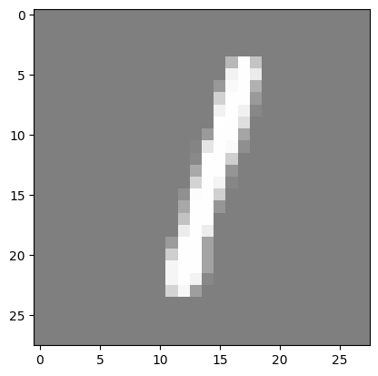
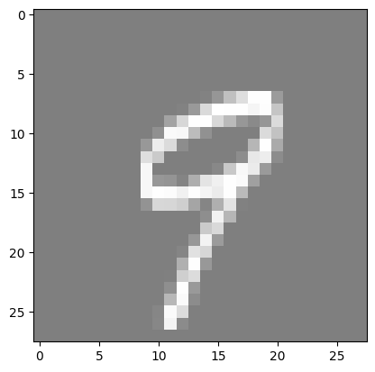
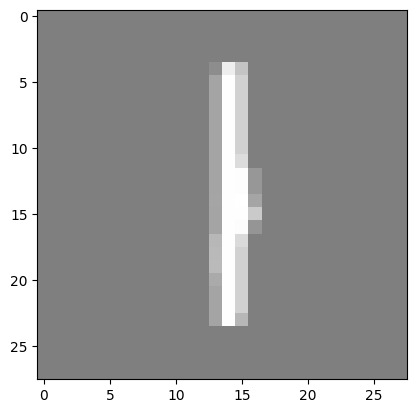
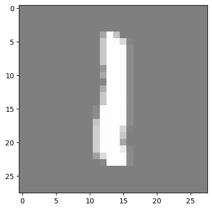

Lesson 1: MNIST Classification using Fully Connected Neural Networks#
Introduction#
MNIST is a simple computer vision dataset. It consists of 28x28 pixel images of handwritten digits. The dataset also includes labels for each image, telling us which digit it is (0, 1, 2, …, 9).
In this notebook, we will use the MNIST dataset to train a simple neural network to classify the images. We will use the PyTorch library to build a simple fully connected neural network and train it on the dataset.
The notebook is divided into the following sections:
Importing the libraries
Loading the dataset
Preparing the dataset
Building the neural network
Training the model
Evaluating the model
Reloading the model and making predictions
Throughout the notebook, you will see ‘#TODO’ comments. These are placeholders for you to write your own code. You should write the code to complete the functionality of the neural network.
Imports#
import torch
import torch.nn as nn
import torchvision
import torchvision.transforms as transforms
import matplotlib.pyplot as plt
import numpy as np
from tqdm import tqdm
import os
Hyperparameters#
# Determine if a GPU is available, and use it if so
# we will use it to train our model, if not we will use the CPU
device = torch.device("cuda" if torch.cuda.is_available() else "cpu")
input_size = 784 # MNIST data is 28x28 pixels
hidden_size = 500 # number of nodes in the hidden layer
num_classes = 10 # number of output classes (0-9)
num_epochs = 5 # number of times we will loop through the entire dataset
batch_size = 100 # number of images to process at once
learning_rate = 0.001 # how much we update our weights each iteration
MNIST#
Load MNIST#
The first step is to load the MNIST dataset. We will use the tensorflow_datasets library to load the dataset.
# create datasets folder
os.makedirs("../datasets", exist_ok=True)
# MNIST dataset
train_dataset = torchvision.datasets.MNIST(
root="../datasets", train=True, transform=transforms.ToTensor(), download=True
)
test_dataset = torchvision.datasets.MNIST(
root="../datasets", train=False, transform=transforms.ToTensor()
)
Downloading http://yann.lecun.com/exdb/mnist/train-images-idx3-ubyte.gz
Failed to download (trying next):
HTTP Error 404: Not Found
Downloading https://ossci-datasets.s3.amazonaws.com/mnist/train-images-idx3-ubyte.gz
Downloading https://ossci-datasets.s3.amazonaws.com/mnist/train-images-idx3-ubyte.gz to ../datasets/MNIST/raw/train-images-idx3-ubyte.gz
0%| | 0/9912422 [00:00<?, ?it/s]
8%|▊ | 819200/9912422 [00:00<00:01, 7957400.80it/s]
62%|██████▏ | 6193152/9912422 [00:00<00:00, 33946110.16it/s]
100%|██████████| 9912422/9912422 [00:00<00:00, 43035340.90it/s]
Extracting ../datasets/MNIST/raw/train-images-idx3-ubyte.gz to ../datasets/MNIST/raw
Downloading http://yann.lecun.com/exdb/mnist/train-labels-idx1-ubyte.gz
Failed to download (trying next):
HTTP Error 404: Not Found
Downloading https://ossci-datasets.s3.amazonaws.com/mnist/train-labels-idx1-ubyte.gz
Downloading https://ossci-datasets.s3.amazonaws.com/mnist/train-labels-idx1-ubyte.gz to ../datasets/MNIST/raw/train-labels-idx1-ubyte.gz
0%| | 0/28881 [00:00<?, ?it/s]
100%|██████████| 28881/28881 [00:00<00:00, 1625437.02it/s]
Extracting ../datasets/MNIST/raw/train-labels-idx1-ubyte.gz to ../datasets/MNIST/raw
Downloading http://yann.lecun.com/exdb/mnist/t10k-images-idx3-ubyte.gz
Failed to download (trying next):
HTTP Error 404: Not Found
Downloading https://ossci-datasets.s3.amazonaws.com/mnist/t10k-images-idx3-ubyte.gz
Downloading https://ossci-datasets.s3.amazonaws.com/mnist/t10k-images-idx3-ubyte.gz to ../datasets/MNIST/raw/t10k-images-idx3-ubyte.gz
0%| | 0/1648877 [00:00<?, ?it/s]
24%|██▍ | 393216/1648877 [00:00<00:00, 3438588.60it/s]
100%|██████████| 1648877/1648877 [00:00<00:00, 7923735.03it/s]
Extracting ../datasets/MNIST/raw/t10k-images-idx3-ubyte.gz to ../datasets/MNIST/raw
Downloading http://yann.lecun.com/exdb/mnist/t10k-labels-idx1-ubyte.gz
Failed to download (trying next):
HTTP Error 404: Not Found
Downloading https://ossci-datasets.s3.amazonaws.com/mnist/t10k-labels-idx1-ubyte.gz
Downloading https://ossci-datasets.s3.amazonaws.com/mnist/t10k-labels-idx1-ubyte.gz to ../datasets/MNIST/raw/t10k-labels-idx1-ubyte.gz
0%| | 0/4542 [00:00<?, ?it/s]
100%|██████████| 4542/4542 [00:00<00:00, 9774514.50it/s]
Extracting ../datasets/MNIST/raw/t10k-labels-idx1-ubyte.gz to ../datasets/MNIST/raw
After downloading the dataset, we will use torch dataloaders to load the data. Dataloader is a utility that helps us to load the data in batches and also shuffle the data.
# Data loader
train_loader = torch.utils.data.DataLoader(
dataset=train_dataset, batch_size=batch_size, shuffle=True
)
test_loader = torch.utils.data.DataLoader(
dataset=test_dataset, batch_size=batch_size, shuffle=False
)
Visualize MNIST#
## Visualize MNIST
# functions to show an image
def imshow(img):
img = img / 2 + 0.5 # unnormalize
npimg = img.numpy()
plt.imshow(np.transpose(npimg, (1, 2, 0)))
plt.show()
for _ in range(3):
image, _ = train_dataset[np.random.randint(0, len(train_dataset))]
imshow(torchvision.utils.make_grid(image))



Data Augmentation#
# TODO:
# Watch this very short (it's literally a YouTube Short) video about data augmentation: https://www.youtube.com/shorts/S-7LpWzUaOg
# Read about data augmentation for images in PyTorch: https://www.kaggle.com/code/mohamedmustafa/7-data-augmentation-on-images-using-pytorch
# Add data augmentation to the MNIST dataset
Neural Network#
class Net(nn.Module): # inherit from nn.Module
def __init__(self, input_size, hidden_size, num_classes):
super(Net, self).__init__() # call the constructor of the parent class
self.fc1 = nn.Linear(input_size, hidden_size) # first fully connected layer
self.relu = nn.ReLU() # activation function
# TODO:
# 1. Add a second fully connected layer (don't forget to add an activation function).
# 2. (Optional) Experiment with different activation functions,
# such as sigmoid, tanh, leaky relu and parametric relu.
self.fc2 = nn.Linear(hidden_size, num_classes) # second fully connected layer
# softmax is used for multi-class classification problems
# it converts the output to a probability distribution over the classes
# the class with the highest probability is the predicted class
# logsoftmax is used to improve numerical stability
self.logsoftmax = nn.LogSoftmax(dim=1)
def forward(self, x: torch.Tensor) -> torch.Tensor:
"""
:param x: input tensor (batch_size, input_size)
"""
x = self.fc1(x)
x = self.relu(x)
x = self.fc2(x)
x = self.logsoftmax(x)
return x
Initialization#
# create the model and move it to the GPU if available
model = Net(input_size, hidden_size, num_classes).to(device)
# loss function
# we usually use cross-entropy loss for classification problems
# it applies log softmax to the output and then applies negative log likelihood loss
# in our model, we apply logsoftmax in the forward method, so we don't
# the loss function to do it.
# Thence, instead of using nn.CrossEntropyLoss, we use nn.NLLLoss
# simply,
# * If we apply logsoftmax in the forward method, we use nn.NLLLoss
# * If we don't apply logsoftmax in the forward method, we use nn.CrossEntropyLoss
criterion = nn.NLLLoss() # negative log likelihood loss
# optimizer
# we use the Adam optimizer, it is a popular optimizer
# it is an extension to stochastic gradient descent
# it computes adaptive learning rates for each parameter
optimizer = torch.optim.Adam(model.parameters(), lr=learning_rate)
Training the Model#
# Training loop
total_step = len(train_loader)
for epoch in range(num_epochs):
# Initialize progress bar
progress_bar = tqdm(enumerate(train_loader), total=total_step, leave=True)
for i, (images, labels) in progress_bar:
# Move tensors to the configured device
images = images.reshape(-1, 28 * 28).to(device) # flatten the images
# flatten the images to be (batch_size, 28*28)
# this is important because FCNNs take a 1D tensor as input
labels = labels.to(device)
# Forward pass
outputs = model(images)
loss = criterion(outputs, labels)
# Backpropagation and optimization
optimizer.zero_grad()
loss.backward()
optimizer.step()
# Update progress bar description
progress_bar.set_description(
f"Epoch [{epoch+1}/{num_epochs}], Step [{i+1}/{total_step}], Loss: {loss.item():.4f}"
)
0%| | 0/600 [00:00<?, ?it/s]
Epoch [1/5], Step [1/600], Loss: 2.2994: 0%| | 0/600 [00:00<?, ?it/s]
Epoch [1/5], Step [2/600], Loss: 2.1793: 0%| | 0/600 [00:00<?, ?it/s]
Epoch [1/5], Step [3/600], Loss: 2.1280: 0%| | 0/600 [00:00<?, ?it/s]
Epoch [1/5], Step [4/600], Loss: 2.0513: 0%| | 0/600 [00:00<?, ?it/s]
Epoch [1/5], Step [5/600], Loss: 1.9726: 0%| | 0/600 [00:00<?, ?it/s]
Epoch [1/5], Step [6/600], Loss: 1.8596: 0%| | 0/600 [00:00<?, ?it/s]
Epoch [1/5], Step [7/600], Loss: 1.8122: 0%| | 0/600 [00:00<?, ?it/s]
Epoch [1/5], Step [8/600], Loss: 1.6651: 0%| | 0/600 [00:00<?, ?it/s]
Epoch [1/5], Step [9/600], Loss: 1.5016: 0%| | 0/600 [00:00<?, ?it/s]
Epoch [1/5], Step [10/600], Loss: 1.4568: 0%| | 0/600 [00:00<?, ?it/s]
Epoch [1/5], Step [10/600], Loss: 1.4568: 2%|▏ | 10/600 [00:00<00:06, 97.72it/s]
Epoch [1/5], Step [11/600], Loss: 1.3269: 2%|▏ | 10/600 [00:00<00:06, 97.72it/s]
Epoch [1/5], Step [12/600], Loss: 1.2040: 2%|▏ | 10/600 [00:00<00:06, 97.72it/s]
Epoch [1/5], Step [13/600], Loss: 1.1767: 2%|▏ | 10/600 [00:00<00:06, 97.72it/s]
Epoch [1/5], Step [14/600], Loss: 1.2408: 2%|▏ | 10/600 [00:00<00:06, 97.72it/s]
Epoch [1/5], Step [15/600], Loss: 1.1023: 2%|▏ | 10/600 [00:00<00:06, 97.72it/s]
Epoch [1/5], Step [16/600], Loss: 0.9805: 2%|▏ | 10/600 [00:00<00:06, 97.72it/s]
Epoch [1/5], Step [17/600], Loss: 0.9536: 2%|▏ | 10/600 [00:00<00:06, 97.72it/s]
Epoch [1/5], Step [18/600], Loss: 0.9548: 2%|▏ | 10/600 [00:00<00:06, 97.72it/s]
Epoch [1/5], Step [19/600], Loss: 0.7717: 2%|▏ | 10/600 [00:00<00:06, 97.72it/s]
Epoch [1/5], Step [20/600], Loss: 0.7662: 2%|▏ | 10/600 [00:00<00:06, 97.72it/s]
Epoch [1/5], Step [21/600], Loss: 0.7886: 2%|▏ | 10/600 [00:00<00:06, 97.72it/s]
Epoch [1/5], Step [21/600], Loss: 0.7886: 4%|▎ | 21/600 [00:00<00:05, 99.93it/s]
Epoch [1/5], Step [22/600], Loss: 0.7367: 4%|▎ | 21/600 [00:00<00:05, 99.93it/s]
Epoch [1/5], Step [23/600], Loss: 0.7445: 4%|▎ | 21/600 [00:00<00:05, 99.93it/s]
Epoch [1/5], Step [24/600], Loss: 0.7413: 4%|▎ | 21/600 [00:00<00:05, 99.93it/s]
Epoch [1/5], Step [25/600], Loss: 0.6519: 4%|▎ | 21/600 [00:00<00:05, 99.93it/s]
Epoch [1/5], Step [26/600], Loss: 0.7565: 4%|▎ | 21/600 [00:00<00:05, 99.93it/s]
Epoch [1/5], Step [27/600], Loss: 0.5293: 4%|▎ | 21/600 [00:00<00:05, 99.93it/s]
Epoch [1/5], Step [28/600], Loss: 0.4700: 4%|▎ | 21/600 [00:00<00:05, 99.93it/s]
Epoch [1/5], Step [29/600], Loss: 0.7728: 4%|▎ | 21/600 [00:00<00:05, 99.93it/s]
Epoch [1/5], Step [30/600], Loss: 0.5404: 4%|▎ | 21/600 [00:00<00:05, 99.93it/s]
Epoch [1/5], Step [31/600], Loss: 0.6671: 4%|▎ | 21/600 [00:00<00:05, 99.93it/s]
Epoch [1/5], Step [31/600], Loss: 0.6671: 5%|▌ | 31/600 [00:00<00:05, 95.94it/s]
Epoch [1/5], Step [32/600], Loss: 0.6735: 5%|▌ | 31/600 [00:00<00:05, 95.94it/s]
Epoch [1/5], Step [33/600], Loss: 0.6676: 5%|▌ | 31/600 [00:00<00:05, 95.94it/s]
Epoch [1/5], Step [34/600], Loss: 0.4419: 5%|▌ | 31/600 [00:00<00:05, 95.94it/s]
Epoch [1/5], Step [35/600], Loss: 0.5766: 5%|▌ | 31/600 [00:00<00:05, 95.94it/s]
Epoch [1/5], Step [36/600], Loss: 0.4618: 5%|▌ | 31/600 [00:00<00:05, 95.94it/s]
Epoch [1/5], Step [37/600], Loss: 0.4956: 5%|▌ | 31/600 [00:00<00:05, 95.94it/s]
Epoch [1/5], Step [38/600], Loss: 0.5137: 5%|▌ | 31/600 [00:00<00:05, 95.94it/s]
Epoch [1/5], Step [39/600], Loss: 0.3936: 5%|▌ | 31/600 [00:00<00:05, 95.94it/s]
Epoch [1/5], Step [40/600], Loss: 0.3687: 5%|▌ | 31/600 [00:00<00:05, 95.94it/s]
Epoch [1/5], Step [41/600], Loss: 0.5510: 5%|▌ | 31/600 [00:00<00:05, 95.94it/s]
Epoch [1/5], Step [41/600], Loss: 0.5510: 7%|▋ | 41/600 [00:00<00:05, 95.45it/s]
Epoch [1/5], Step [42/600], Loss: 0.4880: 7%|▋ | 41/600 [00:00<00:05, 95.45it/s]
Epoch [1/5], Step [43/600], Loss: 0.4095: 7%|▋ | 41/600 [00:00<00:05, 95.45it/s]
Epoch [1/5], Step [44/600], Loss: 0.4530: 7%|▋ | 41/600 [00:00<00:05, 95.45it/s]
Epoch [1/5], Step [45/600], Loss: 0.4007: 7%|▋ | 41/600 [00:00<00:05, 95.45it/s]
Epoch [1/5], Step [46/600], Loss: 0.4023: 7%|▋ | 41/600 [00:00<00:05, 95.45it/s]
Epoch [1/5], Step [47/600], Loss: 0.5072: 7%|▋ | 41/600 [00:00<00:05, 95.45it/s]
Epoch [1/5], Step [48/600], Loss: 0.5549: 7%|▋ | 41/600 [00:00<00:05, 95.45it/s]
Epoch [1/5], Step [49/600], Loss: 0.4887: 7%|▋ | 41/600 [00:00<00:05, 95.45it/s]
Epoch [1/5], Step [50/600], Loss: 0.5137: 7%|▋ | 41/600 [00:00<00:05, 95.45it/s]
Epoch [1/5], Step [51/600], Loss: 0.2886: 7%|▋ | 41/600 [00:00<00:05, 95.45it/s]
Epoch [1/5], Step [51/600], Loss: 0.2886: 8%|▊ | 51/600 [00:00<00:05, 94.87it/s]
Epoch [1/5], Step [52/600], Loss: 0.3630: 8%|▊ | 51/600 [00:00<00:05, 94.87it/s]
Epoch [1/5], Step [53/600], Loss: 0.4154: 8%|▊ | 51/600 [00:00<00:05, 94.87it/s]
Epoch [1/5], Step [54/600], Loss: 0.5522: 8%|▊ | 51/600 [00:00<00:05, 94.87it/s]
Epoch [1/5], Step [55/600], Loss: 0.3739: 8%|▊ | 51/600 [00:00<00:05, 94.87it/s]
Epoch [1/5], Step [56/600], Loss: 0.2939: 8%|▊ | 51/600 [00:00<00:05, 94.87it/s]
Epoch [1/5], Step [57/600], Loss: 0.4271: 8%|▊ | 51/600 [00:00<00:05, 94.87it/s]
Epoch [1/5], Step [58/600], Loss: 0.6555: 8%|▊ | 51/600 [00:00<00:05, 94.87it/s]
Epoch [1/5], Step [59/600], Loss: 0.3034: 8%|▊ | 51/600 [00:00<00:05, 94.87it/s]
Epoch [1/5], Step [60/600], Loss: 0.3190: 8%|▊ | 51/600 [00:00<00:05, 94.87it/s]
Epoch [1/5], Step [61/600], Loss: 0.3043: 8%|▊ | 51/600 [00:00<00:05, 94.87it/s]
Epoch [1/5], Step [62/600], Loss: 0.5070: 8%|▊ | 51/600 [00:00<00:05, 94.87it/s]
Epoch [1/5], Step [62/600], Loss: 0.5070: 10%|█ | 62/600 [00:00<00:05, 97.10it/s]
Epoch [1/5], Step [63/600], Loss: 0.1998: 10%|█ | 62/600 [00:00<00:05, 97.10it/s]
Epoch [1/5], Step [64/600], Loss: 0.2524: 10%|█ | 62/600 [00:00<00:05, 97.10it/s]
Epoch [1/5], Step [65/600], Loss: 0.3489: 10%|█ | 62/600 [00:00<00:05, 97.10it/s]
Epoch [1/5], Step [66/600], Loss: 0.4751: 10%|█ | 62/600 [00:00<00:05, 97.10it/s]
Epoch [1/5], Step [67/600], Loss: 0.3299: 10%|█ | 62/600 [00:00<00:05, 97.10it/s]
Epoch [1/5], Step [68/600], Loss: 0.4495: 10%|█ | 62/600 [00:00<00:05, 97.10it/s]
Epoch [1/5], Step [69/600], Loss: 0.3565: 10%|█ | 62/600 [00:00<00:05, 97.10it/s]
Epoch [1/5], Step [70/600], Loss: 0.3540: 10%|█ | 62/600 [00:00<00:05, 97.10it/s]
Epoch [1/5], Step [71/600], Loss: 0.4494: 10%|█ | 62/600 [00:00<00:05, 97.10it/s]
Epoch [1/5], Step [72/600], Loss: 0.3745: 10%|█ | 62/600 [00:00<00:05, 97.10it/s]
Epoch [1/5], Step [72/600], Loss: 0.3745: 12%|█▏ | 72/600 [00:00<00:05, 97.99it/s]
Epoch [1/5], Step [73/600], Loss: 0.3464: 12%|█▏ | 72/600 [00:00<00:05, 97.99it/s]
Epoch [1/5], Step [74/600], Loss: 0.3972: 12%|█▏ | 72/600 [00:00<00:05, 97.99it/s]
Epoch [1/5], Step [75/600], Loss: 0.4212: 12%|█▏ | 72/600 [00:00<00:05, 97.99it/s]
Epoch [1/5], Step [76/600], Loss: 0.3890: 12%|█▏ | 72/600 [00:00<00:05, 97.99it/s]
Epoch [1/5], Step [77/600], Loss: 0.3019: 12%|█▏ | 72/600 [00:00<00:05, 97.99it/s]
Epoch [1/5], Step [78/600], Loss: 0.4249: 12%|█▏ | 72/600 [00:00<00:05, 97.99it/s]
Epoch [1/5], Step [79/600], Loss: 0.4173: 12%|█▏ | 72/600 [00:00<00:05, 97.99it/s]
Epoch [1/5], Step [80/600], Loss: 0.3189: 12%|█▏ | 72/600 [00:00<00:05, 97.99it/s]
Epoch [1/5], Step [81/600], Loss: 0.2650: 12%|█▏ | 72/600 [00:00<00:05, 97.99it/s]
Epoch [1/5], Step [82/600], Loss: 0.3991: 12%|█▏ | 72/600 [00:00<00:05, 97.99it/s]
Epoch [1/5], Step [83/600], Loss: 0.2453: 12%|█▏ | 72/600 [00:00<00:05, 97.99it/s]
Epoch [1/5], Step [83/600], Loss: 0.2453: 14%|█▍ | 83/600 [00:00<00:05, 99.15it/s]
Epoch [1/5], Step [84/600], Loss: 0.4311: 14%|█▍ | 83/600 [00:00<00:05, 99.15it/s]
Epoch [1/5], Step [85/600], Loss: 0.3684: 14%|█▍ | 83/600 [00:00<00:05, 99.15it/s]
Epoch [1/5], Step [86/600], Loss: 0.4516: 14%|█▍ | 83/600 [00:00<00:05, 99.15it/s]
Epoch [1/5], Step [87/600], Loss: 0.5447: 14%|█▍ | 83/600 [00:00<00:05, 99.15it/s]
Epoch [1/5], Step [88/600], Loss: 0.5446: 14%|█▍ | 83/600 [00:00<00:05, 99.15it/s]
Epoch [1/5], Step [89/600], Loss: 0.2659: 14%|█▍ | 83/600 [00:00<00:05, 99.15it/s]
Epoch [1/5], Step [90/600], Loss: 0.3838: 14%|█▍ | 83/600 [00:00<00:05, 99.15it/s]
Epoch [1/5], Step [91/600], Loss: 0.3486: 14%|█▍ | 83/600 [00:00<00:05, 99.15it/s]
Epoch [1/5], Step [92/600], Loss: 0.3360: 14%|█▍ | 83/600 [00:00<00:05, 99.15it/s]
Epoch [1/5], Step [93/600], Loss: 0.2982: 14%|█▍ | 83/600 [00:00<00:05, 99.15it/s]
Epoch [1/5], Step [94/600], Loss: 0.2915: 14%|█▍ | 83/600 [00:00<00:05, 99.15it/s]
Epoch [1/5], Step [94/600], Loss: 0.2915: 16%|█▌ | 94/600 [00:00<00:05, 101.08it/s]
Epoch [1/5], Step [95/600], Loss: 0.3167: 16%|█▌ | 94/600 [00:00<00:05, 101.08it/s]
Epoch [1/5], Step [96/600], Loss: 0.3415: 16%|█▌ | 94/600 [00:00<00:05, 101.08it/s]
Epoch [1/5], Step [97/600], Loss: 0.3896: 16%|█▌ | 94/600 [00:00<00:05, 101.08it/s]
Epoch [1/5], Step [98/600], Loss: 0.2967: 16%|█▌ | 94/600 [00:00<00:05, 101.08it/s]
Epoch [1/5], Step [99/600], Loss: 0.3893: 16%|█▌ | 94/600 [00:01<00:05, 101.08it/s]
Epoch [1/5], Step [100/600], Loss: 0.3615: 16%|█▌ | 94/600 [00:01<00:05, 101.08it/s]
Epoch [1/5], Step [101/600], Loss: 0.3338: 16%|█▌ | 94/600 [00:01<00:05, 101.08it/s]
Epoch [1/5], Step [102/600], Loss: 0.3693: 16%|█▌ | 94/600 [00:01<00:05, 101.08it/s]
Epoch [1/5], Step [103/600], Loss: 0.4464: 16%|█▌ | 94/600 [00:01<00:05, 101.08it/s]
Epoch [1/5], Step [104/600], Loss: 0.4994: 16%|█▌ | 94/600 [00:01<00:05, 101.08it/s]
Epoch [1/5], Step [105/600], Loss: 0.3774: 16%|█▌ | 94/600 [00:01<00:05, 101.08it/s]
Epoch [1/5], Step [105/600], Loss: 0.3774: 18%|█▊ | 105/600 [00:01<00:04, 99.82it/s]
Epoch [1/5], Step [106/600], Loss: 0.2517: 18%|█▊ | 105/600 [00:01<00:04, 99.82it/s]
Epoch [1/5], Step [107/600], Loss: 0.3291: 18%|█▊ | 105/600 [00:01<00:04, 99.82it/s]
Epoch [1/5], Step [108/600], Loss: 0.3489: 18%|█▊ | 105/600 [00:01<00:04, 99.82it/s]
Epoch [1/5], Step [109/600], Loss: 0.3602: 18%|█▊ | 105/600 [00:01<00:04, 99.82it/s]
Epoch [1/5], Step [110/600], Loss: 0.3362: 18%|█▊ | 105/600 [00:01<00:04, 99.82it/s]
Epoch [1/5], Step [111/600], Loss: 0.4722: 18%|█▊ | 105/600 [00:01<00:04, 99.82it/s]
Epoch [1/5], Step [112/600], Loss: 0.2800: 18%|█▊ | 105/600 [00:01<00:04, 99.82it/s]
Epoch [1/5], Step [113/600], Loss: 0.2994: 18%|█▊ | 105/600 [00:01<00:04, 99.82it/s]
Epoch [1/5], Step [114/600], Loss: 0.2684: 18%|█▊ | 105/600 [00:01<00:04, 99.82it/s]
Epoch [1/5], Step [115/600], Loss: 0.4689: 18%|█▊ | 105/600 [00:01<00:04, 99.82it/s]
Epoch [1/5], Step [115/600], Loss: 0.4689: 19%|█▉ | 115/600 [00:01<00:04, 99.51it/s]
Epoch [1/5], Step [116/600], Loss: 0.3858: 19%|█▉ | 115/600 [00:01<00:04, 99.51it/s]
Epoch [1/5], Step [117/600], Loss: 0.3754: 19%|█▉ | 115/600 [00:01<00:04, 99.51it/s]
Epoch [1/5], Step [118/600], Loss: 0.3504: 19%|█▉ | 115/600 [00:01<00:04, 99.51it/s]
Epoch [1/5], Step [119/600], Loss: 0.4032: 19%|█▉ | 115/600 [00:01<00:04, 99.51it/s]
Epoch [1/5], Step [120/600], Loss: 0.3072: 19%|█▉ | 115/600 [00:01<00:04, 99.51it/s]
Epoch [1/5], Step [121/600], Loss: 0.3370: 19%|█▉ | 115/600 [00:01<00:04, 99.51it/s]
Epoch [1/5], Step [122/600], Loss: 0.2777: 19%|█▉ | 115/600 [00:01<00:04, 99.51it/s]
Epoch [1/5], Step [123/600], Loss: 0.3441: 19%|█▉ | 115/600 [00:01<00:04, 99.51it/s]
Epoch [1/5], Step [124/600], Loss: 0.3015: 19%|█▉ | 115/600 [00:01<00:04, 99.51it/s]
Epoch [1/5], Step [125/600], Loss: 0.2887: 19%|█▉ | 115/600 [00:01<00:04, 99.51it/s]
Epoch [1/5], Step [125/600], Loss: 0.2887: 21%|██ | 125/600 [00:01<00:04, 99.63it/s]
Epoch [1/5], Step [126/600], Loss: 0.3890: 21%|██ | 125/600 [00:01<00:04, 99.63it/s]
Epoch [1/5], Step [127/600], Loss: 0.2426: 21%|██ | 125/600 [00:01<00:04, 99.63it/s]
Epoch [1/5], Step [128/600], Loss: 0.2829: 21%|██ | 125/600 [00:01<00:04, 99.63it/s]
Epoch [1/5], Step [129/600], Loss: 0.3195: 21%|██ | 125/600 [00:01<00:04, 99.63it/s]
Epoch [1/5], Step [130/600], Loss: 0.2490: 21%|██ | 125/600 [00:01<00:04, 99.63it/s]
Epoch [1/5], Step [131/600], Loss: 0.3314: 21%|██ | 125/600 [00:01<00:04, 99.63it/s]
Epoch [1/5], Step [132/600], Loss: 0.3900: 21%|██ | 125/600 [00:01<00:04, 99.63it/s]
Epoch [1/5], Step [133/600], Loss: 0.2575: 21%|██ | 125/600 [00:01<00:04, 99.63it/s]
Epoch [1/5], Step [134/600], Loss: 0.2841: 21%|██ | 125/600 [00:01<00:04, 99.63it/s]
Epoch [1/5], Step [135/600], Loss: 0.3612: 21%|██ | 125/600 [00:01<00:04, 99.63it/s]
Epoch [1/5], Step [136/600], Loss: 0.3478: 21%|██ | 125/600 [00:01<00:04, 99.63it/s]
Epoch [1/5], Step [136/600], Loss: 0.3478: 23%|██▎ | 136/600 [00:01<00:04, 100.21it/s]
Epoch [1/5], Step [137/600], Loss: 0.3637: 23%|██▎ | 136/600 [00:01<00:04, 100.21it/s]
Epoch [1/5], Step [138/600], Loss: 0.4389: 23%|██▎ | 136/600 [00:01<00:04, 100.21it/s]
Epoch [1/5], Step [139/600], Loss: 0.2937: 23%|██▎ | 136/600 [00:01<00:04, 100.21it/s]
Epoch [1/5], Step [140/600], Loss: 0.3321: 23%|██▎ | 136/600 [00:01<00:04, 100.21it/s]
Epoch [1/5], Step [141/600], Loss: 0.3046: 23%|██▎ | 136/600 [00:01<00:04, 100.21it/s]
Epoch [1/5], Step [142/600], Loss: 0.3018: 23%|██▎ | 136/600 [00:01<00:04, 100.21it/s]
Epoch [1/5], Step [143/600], Loss: 0.2407: 23%|██▎ | 136/600 [00:01<00:04, 100.21it/s]
Epoch [1/5], Step [144/600], Loss: 0.2815: 23%|██▎ | 136/600 [00:01<00:04, 100.21it/s]
Epoch [1/5], Step [145/600], Loss: 0.2618: 23%|██▎ | 136/600 [00:01<00:04, 100.21it/s]
Epoch [1/5], Step [146/600], Loss: 0.2714: 23%|██▎ | 136/600 [00:01<00:04, 100.21it/s]
Epoch [1/5], Step [147/600], Loss: 0.2932: 23%|██▎ | 136/600 [00:01<00:04, 100.21it/s]
Epoch [1/5], Step [147/600], Loss: 0.2932: 24%|██▍ | 147/600 [00:01<00:04, 101.42it/s]
Epoch [1/5], Step [148/600], Loss: 0.2609: 24%|██▍ | 147/600 [00:01<00:04, 101.42it/s]
Epoch [1/5], Step [149/600], Loss: 0.2323: 24%|██▍ | 147/600 [00:01<00:04, 101.42it/s]
Epoch [1/5], Step [150/600], Loss: 0.3492: 24%|██▍ | 147/600 [00:01<00:04, 101.42it/s]
Epoch [1/5], Step [151/600], Loss: 0.3176: 24%|██▍ | 147/600 [00:01<00:04, 101.42it/s]
Epoch [1/5], Step [152/600], Loss: 0.2966: 24%|██▍ | 147/600 [00:01<00:04, 101.42it/s]
Epoch [1/5], Step [153/600], Loss: 0.2081: 24%|██▍ | 147/600 [00:01<00:04, 101.42it/s]
Epoch [1/5], Step [154/600], Loss: 0.4358: 24%|██▍ | 147/600 [00:01<00:04, 101.42it/s]
Epoch [1/5], Step [155/600], Loss: 0.3526: 24%|██▍ | 147/600 [00:01<00:04, 101.42it/s]
Epoch [1/5], Step [156/600], Loss: 0.2383: 24%|██▍ | 147/600 [00:01<00:04, 101.42it/s]
Epoch [1/5], Step [157/600], Loss: 0.3436: 24%|██▍ | 147/600 [00:01<00:04, 101.42it/s]
Epoch [1/5], Step [158/600], Loss: 0.1833: 24%|██▍ | 147/600 [00:01<00:04, 101.42it/s]
Epoch [1/5], Step [158/600], Loss: 0.1833: 26%|██▋ | 158/600 [00:01<00:04, 100.43it/s]
Epoch [1/5], Step [159/600], Loss: 0.2943: 26%|██▋ | 158/600 [00:01<00:04, 100.43it/s]
Epoch [1/5], Step [160/600], Loss: 0.3306: 26%|██▋ | 158/600 [00:01<00:04, 100.43it/s]
Epoch [1/5], Step [161/600], Loss: 0.3654: 26%|██▋ | 158/600 [00:01<00:04, 100.43it/s]
Epoch [1/5], Step [162/600], Loss: 0.3290: 26%|██▋ | 158/600 [00:01<00:04, 100.43it/s]
Epoch [1/5], Step [163/600], Loss: 0.2388: 26%|██▋ | 158/600 [00:01<00:04, 100.43it/s]
Epoch [1/5], Step [164/600], Loss: 0.4565: 26%|██▋ | 158/600 [00:01<00:04, 100.43it/s]
Epoch [1/5], Step [165/600], Loss: 0.2069: 26%|██▋ | 158/600 [00:01<00:04, 100.43it/s]
Epoch [1/5], Step [166/600], Loss: 0.2174: 26%|██▋ | 158/600 [00:01<00:04, 100.43it/s]
Epoch [1/5], Step [167/600], Loss: 0.2189: 26%|██▋ | 158/600 [00:01<00:04, 100.43it/s]
Epoch [1/5], Step [168/600], Loss: 0.4288: 26%|██▋ | 158/600 [00:01<00:04, 100.43it/s]
Epoch [1/5], Step [169/600], Loss: 0.2589: 26%|██▋ | 158/600 [00:01<00:04, 100.43it/s]
Epoch [1/5], Step [169/600], Loss: 0.2589: 28%|██▊ | 169/600 [00:01<00:04, 100.83it/s]
Epoch [1/5], Step [170/600], Loss: 0.1947: 28%|██▊ | 169/600 [00:01<00:04, 100.83it/s]
Epoch [1/5], Step [171/600], Loss: 0.3022: 28%|██▊ | 169/600 [00:01<00:04, 100.83it/s]
Epoch [1/5], Step [172/600], Loss: 0.2631: 28%|██▊ | 169/600 [00:01<00:04, 100.83it/s]
Epoch [1/5], Step [173/600], Loss: 0.1827: 28%|██▊ | 169/600 [00:01<00:04, 100.83it/s]
Epoch [1/5], Step [174/600], Loss: 0.2296: 28%|██▊ | 169/600 [00:01<00:04, 100.83it/s]
Epoch [1/5], Step [175/600], Loss: 0.2306: 28%|██▊ | 169/600 [00:01<00:04, 100.83it/s]
Epoch [1/5], Step [176/600], Loss: 0.3230: 28%|██▊ | 169/600 [00:01<00:04, 100.83it/s]
Epoch [1/5], Step [177/600], Loss: 0.3023: 28%|██▊ | 169/600 [00:01<00:04, 100.83it/s]
Epoch [1/5], Step [178/600], Loss: 0.2328: 28%|██▊ | 169/600 [00:01<00:04, 100.83it/s]
Epoch [1/5], Step [179/600], Loss: 0.2516: 28%|██▊ | 169/600 [00:01<00:04, 100.83it/s]
Epoch [1/5], Step [180/600], Loss: 0.1473: 28%|██▊ | 169/600 [00:01<00:04, 100.83it/s]
Epoch [1/5], Step [180/600], Loss: 0.1473: 30%|███ | 180/600 [00:01<00:04, 101.12it/s]
Epoch [1/5], Step [181/600], Loss: 0.3225: 30%|███ | 180/600 [00:01<00:04, 101.12it/s]
Epoch [1/5], Step [182/600], Loss: 0.1882: 30%|███ | 180/600 [00:01<00:04, 101.12it/s]
Epoch [1/5], Step [183/600], Loss: 0.1745: 30%|███ | 180/600 [00:01<00:04, 101.12it/s]
Epoch [1/5], Step [184/600], Loss: 0.2683: 30%|███ | 180/600 [00:01<00:04, 101.12it/s]
Epoch [1/5], Step [185/600], Loss: 0.2143: 30%|███ | 180/600 [00:01<00:04, 101.12it/s]
Epoch [1/5], Step [186/600], Loss: 0.2648: 30%|███ | 180/600 [00:01<00:04, 101.12it/s]
Epoch [1/5], Step [187/600], Loss: 0.3448: 30%|███ | 180/600 [00:01<00:04, 101.12it/s]
Epoch [1/5], Step [188/600], Loss: 0.2332: 30%|███ | 180/600 [00:01<00:04, 101.12it/s]
Epoch [1/5], Step [189/600], Loss: 0.4307: 30%|███ | 180/600 [00:01<00:04, 101.12it/s]
Epoch [1/5], Step [190/600], Loss: 0.2774: 30%|███ | 180/600 [00:01<00:04, 101.12it/s]
Epoch [1/5], Step [191/600], Loss: 0.3216: 30%|███ | 180/600 [00:01<00:04, 101.12it/s]
Epoch [1/5], Step [191/600], Loss: 0.3216: 32%|███▏ | 191/600 [00:01<00:03, 103.30it/s]
Epoch [1/5], Step [192/600], Loss: 0.2747: 32%|███▏ | 191/600 [00:01<00:03, 103.30it/s]
Epoch [1/5], Step [193/600], Loss: 0.3450: 32%|███▏ | 191/600 [00:01<00:03, 103.30it/s]
Epoch [1/5], Step [194/600], Loss: 0.3764: 32%|███▏ | 191/600 [00:01<00:03, 103.30it/s]
Epoch [1/5], Step [195/600], Loss: 0.1633: 32%|███▏ | 191/600 [00:01<00:03, 103.30it/s]
Epoch [1/5], Step [196/600], Loss: 0.1698: 32%|███▏ | 191/600 [00:01<00:03, 103.30it/s]
Epoch [1/5], Step [197/600], Loss: 0.3054: 32%|███▏ | 191/600 [00:01<00:03, 103.30it/s]
Epoch [1/5], Step [198/600], Loss: 0.3033: 32%|███▏ | 191/600 [00:01<00:03, 103.30it/s]
Epoch [1/5], Step [199/600], Loss: 0.2592: 32%|███▏ | 191/600 [00:01<00:03, 103.30it/s]
Epoch [1/5], Step [200/600], Loss: 0.2364: 32%|███▏ | 191/600 [00:01<00:03, 103.30it/s]
Epoch [1/5], Step [201/600], Loss: 0.2599: 32%|███▏ | 191/600 [00:02<00:03, 103.30it/s]
Epoch [1/5], Step [202/600], Loss: 0.1726: 32%|███▏ | 191/600 [00:02<00:03, 103.30it/s]
Epoch [1/5], Step [202/600], Loss: 0.1726: 34%|███▎ | 202/600 [00:02<00:03, 104.11it/s]
Epoch [1/5], Step [203/600], Loss: 0.3359: 34%|███▎ | 202/600 [00:02<00:03, 104.11it/s]
Epoch [1/5], Step [204/600], Loss: 0.3734: 34%|███▎ | 202/600 [00:02<00:03, 104.11it/s]
Epoch [1/5], Step [205/600], Loss: 0.1972: 34%|███▎ | 202/600 [00:02<00:03, 104.11it/s]
Epoch [1/5], Step [206/600], Loss: 0.1939: 34%|███▎ | 202/600 [00:02<00:03, 104.11it/s]
Epoch [1/5], Step [207/600], Loss: 0.1920: 34%|███▎ | 202/600 [00:02<00:03, 104.11it/s]
Epoch [1/5], Step [208/600], Loss: 0.2541: 34%|███▎ | 202/600 [00:02<00:03, 104.11it/s]
Epoch [1/5], Step [209/600], Loss: 0.1602: 34%|███▎ | 202/600 [00:02<00:03, 104.11it/s]
Epoch [1/5], Step [210/600], Loss: 0.2608: 34%|███▎ | 202/600 [00:02<00:03, 104.11it/s]
Epoch [1/5], Step [211/600], Loss: 0.3046: 34%|███▎ | 202/600 [00:02<00:03, 104.11it/s]
Epoch [1/5], Step [212/600], Loss: 0.2256: 34%|███▎ | 202/600 [00:02<00:03, 104.11it/s]
Epoch [1/5], Step [213/600], Loss: 0.4078: 34%|███▎ | 202/600 [00:02<00:03, 104.11it/s]
Epoch [1/5], Step [213/600], Loss: 0.4078: 36%|███▌ | 213/600 [00:02<00:03, 103.77it/s]
Epoch [1/5], Step [214/600], Loss: 0.2334: 36%|███▌ | 213/600 [00:02<00:03, 103.77it/s]
Epoch [1/5], Step [215/600], Loss: 0.1907: 36%|███▌ | 213/600 [00:02<00:03, 103.77it/s]
Epoch [1/5], Step [216/600], Loss: 0.1371: 36%|███▌ | 213/600 [00:02<00:03, 103.77it/s]
Epoch [1/5], Step [217/600], Loss: 0.2258: 36%|███▌ | 213/600 [00:02<00:03, 103.77it/s]
Epoch [1/5], Step [218/600], Loss: 0.2791: 36%|███▌ | 213/600 [00:02<00:03, 103.77it/s]
Epoch [1/5], Step [219/600], Loss: 0.3510: 36%|███▌ | 213/600 [00:02<00:03, 103.77it/s]
Epoch [1/5], Step [220/600], Loss: 0.1950: 36%|███▌ | 213/600 [00:02<00:03, 103.77it/s]
Epoch [1/5], Step [221/600], Loss: 0.2332: 36%|███▌ | 213/600 [00:02<00:03, 103.77it/s]
Epoch [1/5], Step [222/600], Loss: 0.3854: 36%|███▌ | 213/600 [00:02<00:03, 103.77it/s]
Epoch [1/5], Step [223/600], Loss: 0.1366: 36%|███▌ | 213/600 [00:02<00:03, 103.77it/s]
Epoch [1/5], Step [224/600], Loss: 0.3082: 36%|███▌ | 213/600 [00:02<00:03, 103.77it/s]
Epoch [1/5], Step [224/600], Loss: 0.3082: 37%|███▋ | 224/600 [00:02<00:03, 105.20it/s]
Epoch [1/5], Step [225/600], Loss: 0.3880: 37%|███▋ | 224/600 [00:02<00:03, 105.20it/s]
Epoch [1/5], Step [226/600], Loss: 0.2917: 37%|███▋ | 224/600 [00:02<00:03, 105.20it/s]
Epoch [1/5], Step [227/600], Loss: 0.3203: 37%|███▋ | 224/600 [00:02<00:03, 105.20it/s]
Epoch [1/5], Step [228/600], Loss: 0.2051: 37%|███▋ | 224/600 [00:02<00:03, 105.20it/s]
Epoch [1/5], Step [229/600], Loss: 0.2701: 37%|███▋ | 224/600 [00:02<00:03, 105.20it/s]
Epoch [1/5], Step [230/600], Loss: 0.3455: 37%|███▋ | 224/600 [00:02<00:03, 105.20it/s]
Epoch [1/5], Step [231/600], Loss: 0.1154: 37%|███▋ | 224/600 [00:02<00:03, 105.20it/s]
Epoch [1/5], Step [232/600], Loss: 0.1735: 37%|███▋ | 224/600 [00:02<00:03, 105.20it/s]
Epoch [1/5], Step [233/600], Loss: 0.2452: 37%|███▋ | 224/600 [00:02<00:03, 105.20it/s]
Epoch [1/5], Step [234/600], Loss: 0.3464: 37%|███▋ | 224/600 [00:02<00:03, 105.20it/s]
Epoch [1/5], Step [235/600], Loss: 0.1615: 37%|███▋ | 224/600 [00:02<00:03, 105.20it/s]
Epoch [1/5], Step [235/600], Loss: 0.1615: 39%|███▉ | 235/600 [00:02<00:03, 105.69it/s]
Epoch [1/5], Step [236/600], Loss: 0.2272: 39%|███▉ | 235/600 [00:02<00:03, 105.69it/s]
Epoch [1/5], Step [237/600], Loss: 0.2593: 39%|███▉ | 235/600 [00:02<00:03, 105.69it/s]
Epoch [1/5], Step [238/600], Loss: 0.2590: 39%|███▉ | 235/600 [00:02<00:03, 105.69it/s]
Epoch [1/5], Step [239/600], Loss: 0.2010: 39%|███▉ | 235/600 [00:02<00:03, 105.69it/s]
Epoch [1/5], Step [240/600], Loss: 0.2042: 39%|███▉ | 235/600 [00:02<00:03, 105.69it/s]
Epoch [1/5], Step [241/600], Loss: 0.1733: 39%|███▉ | 235/600 [00:02<00:03, 105.69it/s]
Epoch [1/5], Step [242/600], Loss: 0.2041: 39%|███▉ | 235/600 [00:02<00:03, 105.69it/s]
Epoch [1/5], Step [243/600], Loss: 0.2348: 39%|███▉ | 235/600 [00:02<00:03, 105.69it/s]
Epoch [1/5], Step [244/600], Loss: 0.2758: 39%|███▉ | 235/600 [00:02<00:03, 105.69it/s]
Epoch [1/5], Step [245/600], Loss: 0.2302: 39%|███▉ | 235/600 [00:02<00:03, 105.69it/s]
Epoch [1/5], Step [246/600], Loss: 0.1279: 39%|███▉ | 235/600 [00:02<00:03, 105.69it/s]
Epoch [1/5], Step [246/600], Loss: 0.1279: 41%|████ | 246/600 [00:02<00:03, 104.94it/s]
Epoch [1/5], Step [247/600], Loss: 0.1746: 41%|████ | 246/600 [00:02<00:03, 104.94it/s]
Epoch [1/5], Step [248/600], Loss: 0.2368: 41%|████ | 246/600 [00:02<00:03, 104.94it/s]
Epoch [1/5], Step [249/600], Loss: 0.2106: 41%|████ | 246/600 [00:02<00:03, 104.94it/s]
Epoch [1/5], Step [250/600], Loss: 0.2267: 41%|████ | 246/600 [00:02<00:03, 104.94it/s]
Epoch [1/5], Step [251/600], Loss: 0.1953: 41%|████ | 246/600 [00:02<00:03, 104.94it/s]
Epoch [1/5], Step [252/600], Loss: 0.4710: 41%|████ | 246/600 [00:02<00:03, 104.94it/s]
Epoch [1/5], Step [253/600], Loss: 0.2735: 41%|████ | 246/600 [00:02<00:03, 104.94it/s]
Epoch [1/5], Step [254/600], Loss: 0.2277: 41%|████ | 246/600 [00:02<00:03, 104.94it/s]
Epoch [1/5], Step [255/600], Loss: 0.0962: 41%|████ | 246/600 [00:02<00:03, 104.94it/s]
Epoch [1/5], Step [256/600], Loss: 0.1054: 41%|████ | 246/600 [00:02<00:03, 104.94it/s]
Epoch [1/5], Step [257/600], Loss: 0.1860: 41%|████ | 246/600 [00:02<00:03, 104.94it/s]
Epoch [1/5], Step [257/600], Loss: 0.1860: 43%|████▎ | 257/600 [00:02<00:03, 105.20it/s]
Epoch [1/5], Step [258/600], Loss: 0.2526: 43%|████▎ | 257/600 [00:02<00:03, 105.20it/s]
Epoch [1/5], Step [259/600], Loss: 0.3180: 43%|████▎ | 257/600 [00:02<00:03, 105.20it/s]
Epoch [1/5], Step [260/600], Loss: 0.2913: 43%|████▎ | 257/600 [00:02<00:03, 105.20it/s]
Epoch [1/5], Step [261/600], Loss: 0.3596: 43%|████▎ | 257/600 [00:02<00:03, 105.20it/s]
Epoch [1/5], Step [262/600], Loss: 0.4858: 43%|████▎ | 257/600 [00:02<00:03, 105.20it/s]
Epoch [1/5], Step [263/600], Loss: 0.2769: 43%|████▎ | 257/600 [00:02<00:03, 105.20it/s]
Epoch [1/5], Step [264/600], Loss: 0.1932: 43%|████▎ | 257/600 [00:02<00:03, 105.20it/s]
Epoch [1/5], Step [265/600], Loss: 0.2417: 43%|████▎ | 257/600 [00:02<00:03, 105.20it/s]
Epoch [1/5], Step [266/600], Loss: 0.2592: 43%|████▎ | 257/600 [00:02<00:03, 105.20it/s]
Epoch [1/5], Step [267/600], Loss: 0.1875: 43%|████▎ | 257/600 [00:02<00:03, 105.20it/s]
Epoch [1/5], Step [268/600], Loss: 0.3081: 43%|████▎ | 257/600 [00:02<00:03, 105.20it/s]
Epoch [1/5], Step [268/600], Loss: 0.3081: 45%|████▍ | 268/600 [00:02<00:03, 105.02it/s]
Epoch [1/5], Step [269/600], Loss: 0.2092: 45%|████▍ | 268/600 [00:02<00:03, 105.02it/s]
Epoch [1/5], Step [270/600], Loss: 0.2848: 45%|████▍ | 268/600 [00:02<00:03, 105.02it/s]
Epoch [1/5], Step [271/600], Loss: 0.3117: 45%|████▍ | 268/600 [00:02<00:03, 105.02it/s]
Epoch [1/5], Step [272/600], Loss: 0.1858: 45%|████▍ | 268/600 [00:02<00:03, 105.02it/s]
Epoch [1/5], Step [273/600], Loss: 0.4370: 45%|████▍ | 268/600 [00:02<00:03, 105.02it/s]
Epoch [1/5], Step [274/600], Loss: 0.2794: 45%|████▍ | 268/600 [00:02<00:03, 105.02it/s]
Epoch [1/5], Step [275/600], Loss: 0.1915: 45%|████▍ | 268/600 [00:02<00:03, 105.02it/s]
Epoch [1/5], Step [276/600], Loss: 0.2425: 45%|████▍ | 268/600 [00:02<00:03, 105.02it/s]
Epoch [1/5], Step [277/600], Loss: 0.4814: 45%|████▍ | 268/600 [00:02<00:03, 105.02it/s]
Epoch [1/5], Step [278/600], Loss: 0.1989: 45%|████▍ | 268/600 [00:02<00:03, 105.02it/s]
Epoch [1/5], Step [279/600], Loss: 0.3099: 45%|████▍ | 268/600 [00:02<00:03, 105.02it/s]
Epoch [1/5], Step [279/600], Loss: 0.3099: 46%|████▋ | 279/600 [00:02<00:03, 104.94it/s]
Epoch [1/5], Step [280/600], Loss: 0.1481: 46%|████▋ | 279/600 [00:02<00:03, 104.94it/s]
Epoch [1/5], Step [281/600], Loss: 0.3999: 46%|████▋ | 279/600 [00:02<00:03, 104.94it/s]
Epoch [1/5], Step [282/600], Loss: 0.1735: 46%|████▋ | 279/600 [00:02<00:03, 104.94it/s]
Epoch [1/5], Step [283/600], Loss: 0.2541: 46%|████▋ | 279/600 [00:02<00:03, 104.94it/s]
Epoch [1/5], Step [284/600], Loss: 0.2150: 46%|████▋ | 279/600 [00:02<00:03, 104.94it/s]
Epoch [1/5], Step [285/600], Loss: 0.2079: 46%|████▋ | 279/600 [00:02<00:03, 104.94it/s]
Epoch [1/5], Step [286/600], Loss: 0.2278: 46%|████▋ | 279/600 [00:02<00:03, 104.94it/s]
Epoch [1/5], Step [287/600], Loss: 0.3122: 46%|████▋ | 279/600 [00:02<00:03, 104.94it/s]
Epoch [1/5], Step [288/600], Loss: 0.1791: 46%|████▋ | 279/600 [00:02<00:03, 104.94it/s]
Epoch [1/5], Step [289/600], Loss: 0.1602: 46%|████▋ | 279/600 [00:02<00:03, 104.94it/s]
Epoch [1/5], Step [290/600], Loss: 0.1491: 46%|████▋ | 279/600 [00:02<00:03, 104.94it/s]
Epoch [1/5], Step [290/600], Loss: 0.1491: 48%|████▊ | 290/600 [00:02<00:02, 104.89it/s]
Epoch [1/5], Step [291/600], Loss: 0.2789: 48%|████▊ | 290/600 [00:02<00:02, 104.89it/s]
Epoch [1/5], Step [292/600], Loss: 0.2815: 48%|████▊ | 290/600 [00:02<00:02, 104.89it/s]
Epoch [1/5], Step [293/600], Loss: 0.3253: 48%|████▊ | 290/600 [00:02<00:02, 104.89it/s]
Epoch [1/5], Step [294/600], Loss: 0.1958: 48%|████▊ | 290/600 [00:02<00:02, 104.89it/s]
Epoch [1/5], Step [295/600], Loss: 0.3252: 48%|████▊ | 290/600 [00:02<00:02, 104.89it/s]
Epoch [1/5], Step [296/600], Loss: 0.1495: 48%|████▊ | 290/600 [00:02<00:02, 104.89it/s]
Epoch [1/5], Step [297/600], Loss: 0.1867: 48%|████▊ | 290/600 [00:02<00:02, 104.89it/s]
Epoch [1/5], Step [298/600], Loss: 0.2294: 48%|████▊ | 290/600 [00:02<00:02, 104.89it/s]
Epoch [1/5], Step [299/600], Loss: 0.2230: 48%|████▊ | 290/600 [00:02<00:02, 104.89it/s]
Epoch [1/5], Step [300/600], Loss: 0.2808: 48%|████▊ | 290/600 [00:02<00:02, 104.89it/s]
Epoch [1/5], Step [301/600], Loss: 0.3307: 48%|████▊ | 290/600 [00:02<00:02, 104.89it/s]
Epoch [1/5], Step [301/600], Loss: 0.3307: 50%|█████ | 301/600 [00:02<00:02, 104.64it/s]
Epoch [1/5], Step [302/600], Loss: 0.2913: 50%|█████ | 301/600 [00:02<00:02, 104.64it/s]
Epoch [1/5], Step [303/600], Loss: 0.2259: 50%|█████ | 301/600 [00:02<00:02, 104.64it/s]
Epoch [1/5], Step [304/600], Loss: 0.3744: 50%|█████ | 301/600 [00:02<00:02, 104.64it/s]
Epoch [1/5], Step [305/600], Loss: 0.1967: 50%|█████ | 301/600 [00:02<00:02, 104.64it/s]
Epoch [1/5], Step [306/600], Loss: 0.2121: 50%|█████ | 301/600 [00:03<00:02, 104.64it/s]
Epoch [1/5], Step [307/600], Loss: 0.2153: 50%|█████ | 301/600 [00:03<00:02, 104.64it/s]
Epoch [1/5], Step [308/600], Loss: 0.0627: 50%|█████ | 301/600 [00:03<00:02, 104.64it/s]
Epoch [1/5], Step [309/600], Loss: 0.2548: 50%|█████ | 301/600 [00:03<00:02, 104.64it/s]
Epoch [1/5], Step [310/600], Loss: 0.2415: 50%|█████ | 301/600 [00:03<00:02, 104.64it/s]
Epoch [1/5], Step [311/600], Loss: 0.1490: 50%|█████ | 301/600 [00:03<00:02, 104.64it/s]
Epoch [1/5], Step [312/600], Loss: 0.2164: 50%|█████ | 301/600 [00:03<00:02, 104.64it/s]
Epoch [1/5], Step [312/600], Loss: 0.2164: 52%|█████▏ | 312/600 [00:03<00:02, 104.41it/s]
Epoch [1/5], Step [313/600], Loss: 0.2201: 52%|█████▏ | 312/600 [00:03<00:02, 104.41it/s]
Epoch [1/5], Step [314/600], Loss: 0.1918: 52%|█████▏ | 312/600 [00:03<00:02, 104.41it/s]
Epoch [1/5], Step [315/600], Loss: 0.2485: 52%|█████▏ | 312/600 [00:03<00:02, 104.41it/s]
Epoch [1/5], Step [316/600], Loss: 0.1649: 52%|█████▏ | 312/600 [00:03<00:02, 104.41it/s]
Epoch [1/5], Step [317/600], Loss: 0.2682: 52%|█████▏ | 312/600 [00:03<00:02, 104.41it/s]
Epoch [1/5], Step [318/600], Loss: 0.1558: 52%|█████▏ | 312/600 [00:03<00:02, 104.41it/s]
Epoch [1/5], Step [319/600], Loss: 0.1018: 52%|█████▏ | 312/600 [00:03<00:02, 104.41it/s]
Epoch [1/5], Step [320/600], Loss: 0.2629: 52%|█████▏ | 312/600 [00:03<00:02, 104.41it/s]
Epoch [1/5], Step [321/600], Loss: 0.2219: 52%|█████▏ | 312/600 [00:03<00:02, 104.41it/s]
Epoch [1/5], Step [322/600], Loss: 0.1738: 52%|█████▏ | 312/600 [00:03<00:02, 104.41it/s]
Epoch [1/5], Step [323/600], Loss: 0.1556: 52%|█████▏ | 312/600 [00:03<00:02, 104.41it/s]
Epoch [1/5], Step [323/600], Loss: 0.1556: 54%|█████▍ | 323/600 [00:03<00:02, 104.34it/s]
Epoch [1/5], Step [324/600], Loss: 0.1834: 54%|█████▍ | 323/600 [00:03<00:02, 104.34it/s]
Epoch [1/5], Step [325/600], Loss: 0.1798: 54%|█████▍ | 323/600 [00:03<00:02, 104.34it/s]
Epoch [1/5], Step [326/600], Loss: 0.2612: 54%|█████▍ | 323/600 [00:03<00:02, 104.34it/s]
Epoch [1/5], Step [327/600], Loss: 0.2086: 54%|█████▍ | 323/600 [00:03<00:02, 104.34it/s]
Epoch [1/5], Step [328/600], Loss: 0.1770: 54%|█████▍ | 323/600 [00:03<00:02, 104.34it/s]
Epoch [1/5], Step [329/600], Loss: 0.0960: 54%|█████▍ | 323/600 [00:03<00:02, 104.34it/s]
Epoch [1/5], Step [330/600], Loss: 0.3243: 54%|█████▍ | 323/600 [00:03<00:02, 104.34it/s]
Epoch [1/5], Step [331/600], Loss: 0.1100: 54%|█████▍ | 323/600 [00:03<00:02, 104.34it/s]
Epoch [1/5], Step [332/600], Loss: 0.2747: 54%|█████▍ | 323/600 [00:03<00:02, 104.34it/s]
Epoch [1/5], Step [333/600], Loss: 0.2648: 54%|█████▍ | 323/600 [00:03<00:02, 104.34it/s]
Epoch [1/5], Step [334/600], Loss: 0.2633: 54%|█████▍ | 323/600 [00:03<00:02, 104.34it/s]
Epoch [1/5], Step [334/600], Loss: 0.2633: 56%|█████▌ | 334/600 [00:03<00:02, 105.00it/s]
Epoch [1/5], Step [335/600], Loss: 0.3129: 56%|█████▌ | 334/600 [00:03<00:02, 105.00it/s]
Epoch [1/5], Step [336/600], Loss: 0.2117: 56%|█████▌ | 334/600 [00:03<00:02, 105.00it/s]
Epoch [1/5], Step [337/600], Loss: 0.1497: 56%|█████▌ | 334/600 [00:03<00:02, 105.00it/s]
Epoch [1/5], Step [338/600], Loss: 0.1364: 56%|█████▌ | 334/600 [00:03<00:02, 105.00it/s]
Epoch [1/5], Step [339/600], Loss: 0.1146: 56%|█████▌ | 334/600 [00:03<00:02, 105.00it/s]
Epoch [1/5], Step [340/600], Loss: 0.3719: 56%|█████▌ | 334/600 [00:03<00:02, 105.00it/s]
Epoch [1/5], Step [341/600], Loss: 0.1618: 56%|█████▌ | 334/600 [00:03<00:02, 105.00it/s]
Epoch [1/5], Step [342/600], Loss: 0.2213: 56%|█████▌ | 334/600 [00:03<00:02, 105.00it/s]
Epoch [1/5], Step [343/600], Loss: 0.2668: 56%|█████▌ | 334/600 [00:03<00:02, 105.00it/s]
Epoch [1/5], Step [344/600], Loss: 0.2490: 56%|█████▌ | 334/600 [00:03<00:02, 105.00it/s]
Epoch [1/5], Step [345/600], Loss: 0.1680: 56%|█████▌ | 334/600 [00:03<00:02, 105.00it/s]
Epoch [1/5], Step [345/600], Loss: 0.1680: 57%|█████▊ | 345/600 [00:03<00:02, 103.92it/s]
Epoch [1/5], Step [346/600], Loss: 0.2950: 57%|█████▊ | 345/600 [00:03<00:02, 103.92it/s]
Epoch [1/5], Step [347/600], Loss: 0.1446: 57%|█████▊ | 345/600 [00:03<00:02, 103.92it/s]
Epoch [1/5], Step [348/600], Loss: 0.2075: 57%|█████▊ | 345/600 [00:03<00:02, 103.92it/s]
Epoch [1/5], Step [349/600], Loss: 0.1448: 57%|█████▊ | 345/600 [00:03<00:02, 103.92it/s]
Epoch [1/5], Step [350/600], Loss: 0.1810: 57%|█████▊ | 345/600 [00:03<00:02, 103.92it/s]
Epoch [1/5], Step [351/600], Loss: 0.1276: 57%|█████▊ | 345/600 [00:03<00:02, 103.92it/s]
Epoch [1/5], Step [352/600], Loss: 0.2100: 57%|█████▊ | 345/600 [00:03<00:02, 103.92it/s]
Epoch [1/5], Step [353/600], Loss: 0.1542: 57%|█████▊ | 345/600 [00:03<00:02, 103.92it/s]
Epoch [1/5], Step [354/600], Loss: 0.1296: 57%|█████▊ | 345/600 [00:03<00:02, 103.92it/s]
Epoch [1/5], Step [355/600], Loss: 0.1175: 57%|█████▊ | 345/600 [00:03<00:02, 103.92it/s]
Epoch [1/5], Step [356/600], Loss: 0.1644: 57%|█████▊ | 345/600 [00:03<00:02, 103.92it/s]
Epoch [1/5], Step [356/600], Loss: 0.1644: 59%|█████▉ | 356/600 [00:03<00:02, 103.81it/s]
Epoch [1/5], Step [357/600], Loss: 0.1911: 59%|█████▉ | 356/600 [00:03<00:02, 103.81it/s]
Epoch [1/5], Step [358/600], Loss: 0.2450: 59%|█████▉ | 356/600 [00:03<00:02, 103.81it/s]
Epoch [1/5], Step [359/600], Loss: 0.2248: 59%|█████▉ | 356/600 [00:03<00:02, 103.81it/s]
Epoch [1/5], Step [360/600], Loss: 0.2327: 59%|█████▉ | 356/600 [00:03<00:02, 103.81it/s]
Epoch [1/5], Step [361/600], Loss: 0.1451: 59%|█████▉ | 356/600 [00:03<00:02, 103.81it/s]
Epoch [1/5], Step [362/600], Loss: 0.1431: 59%|█████▉ | 356/600 [00:03<00:02, 103.81it/s]
Epoch [1/5], Step [363/600], Loss: 0.1791: 59%|█████▉ | 356/600 [00:03<00:02, 103.81it/s]
Epoch [1/5], Step [364/600], Loss: 0.2131: 59%|█████▉ | 356/600 [00:03<00:02, 103.81it/s]
Epoch [1/5], Step [365/600], Loss: 0.1797: 59%|█████▉ | 356/600 [00:03<00:02, 103.81it/s]
Epoch [1/5], Step [366/600], Loss: 0.2253: 59%|█████▉ | 356/600 [00:03<00:02, 103.81it/s]
Epoch [1/5], Step [367/600], Loss: 0.1421: 59%|█████▉ | 356/600 [00:03<00:02, 103.81it/s]
Epoch [1/5], Step [367/600], Loss: 0.1421: 61%|██████ | 367/600 [00:03<00:02, 101.36it/s]
Epoch [1/5], Step [368/600], Loss: 0.1315: 61%|██████ | 367/600 [00:03<00:02, 101.36it/s]
Epoch [1/5], Step [369/600], Loss: 0.2235: 61%|██████ | 367/600 [00:03<00:02, 101.36it/s]
Epoch [1/5], Step [370/600], Loss: 0.2401: 61%|██████ | 367/600 [00:03<00:02, 101.36it/s]
Epoch [1/5], Step [371/600], Loss: 0.1459: 61%|██████ | 367/600 [00:03<00:02, 101.36it/s]
Epoch [1/5], Step [372/600], Loss: 0.2866: 61%|██████ | 367/600 [00:03<00:02, 101.36it/s]
Epoch [1/5], Step [373/600], Loss: 0.4468: 61%|██████ | 367/600 [00:03<00:02, 101.36it/s]
Epoch [1/5], Step [374/600], Loss: 0.3193: 61%|██████ | 367/600 [00:03<00:02, 101.36it/s]
Epoch [1/5], Step [375/600], Loss: 0.2009: 61%|██████ | 367/600 [00:03<00:02, 101.36it/s]
Epoch [1/5], Step [376/600], Loss: 0.2204: 61%|██████ | 367/600 [00:03<00:02, 101.36it/s]
Epoch [1/5], Step [377/600], Loss: 0.1706: 61%|██████ | 367/600 [00:03<00:02, 101.36it/s]
Epoch [1/5], Step [378/600], Loss: 0.2960: 61%|██████ | 367/600 [00:03<00:02, 101.36it/s]
Epoch [1/5], Step [378/600], Loss: 0.2960: 63%|██████▎ | 378/600 [00:03<00:02, 102.03it/s]
Epoch [1/5], Step [379/600], Loss: 0.2626: 63%|██████▎ | 378/600 [00:03<00:02, 102.03it/s]
Epoch [1/5], Step [380/600], Loss: 0.1129: 63%|██████▎ | 378/600 [00:03<00:02, 102.03it/s]
Epoch [1/5], Step [381/600], Loss: 0.2387: 63%|██████▎ | 378/600 [00:03<00:02, 102.03it/s]
Epoch [1/5], Step [382/600], Loss: 0.3093: 63%|██████▎ | 378/600 [00:03<00:02, 102.03it/s]
Epoch [1/5], Step [383/600], Loss: 0.2114: 63%|██████▎ | 378/600 [00:03<00:02, 102.03it/s]
Epoch [1/5], Step [384/600], Loss: 0.2118: 63%|██████▎ | 378/600 [00:03<00:02, 102.03it/s]
Epoch [1/5], Step [385/600], Loss: 0.2093: 63%|██████▎ | 378/600 [00:03<00:02, 102.03it/s]
Epoch [1/5], Step [386/600], Loss: 0.2352: 63%|██████▎ | 378/600 [00:03<00:02, 102.03it/s]
Epoch [1/5], Step [387/600], Loss: 0.1502: 63%|██████▎ | 378/600 [00:03<00:02, 102.03it/s]
Epoch [1/5], Step [388/600], Loss: 0.2857: 63%|██████▎ | 378/600 [00:03<00:02, 102.03it/s]
Epoch [1/5], Step [389/600], Loss: 0.1517: 63%|██████▎ | 378/600 [00:03<00:02, 102.03it/s]
Epoch [1/5], Step [389/600], Loss: 0.1517: 65%|██████▍ | 389/600 [00:03<00:02, 102.90it/s]
Epoch [1/5], Step [390/600], Loss: 0.1383: 65%|██████▍ | 389/600 [00:03<00:02, 102.90it/s]
Epoch [1/5], Step [391/600], Loss: 0.1207: 65%|██████▍ | 389/600 [00:03<00:02, 102.90it/s]
Epoch [1/5], Step [392/600], Loss: 0.1115: 65%|██████▍ | 389/600 [00:03<00:02, 102.90it/s]
Epoch [1/5], Step [393/600], Loss: 0.2099: 65%|██████▍ | 389/600 [00:03<00:02, 102.90it/s]
Epoch [1/5], Step [394/600], Loss: 0.2215: 65%|██████▍ | 389/600 [00:03<00:02, 102.90it/s]
Epoch [1/5], Step [395/600], Loss: 0.1227: 65%|██████▍ | 389/600 [00:03<00:02, 102.90it/s]
Epoch [1/5], Step [396/600], Loss: 0.1371: 65%|██████▍ | 389/600 [00:03<00:02, 102.90it/s]
Epoch [1/5], Step [397/600], Loss: 0.1436: 65%|██████▍ | 389/600 [00:03<00:02, 102.90it/s]
Epoch [1/5], Step [398/600], Loss: 0.1769: 65%|██████▍ | 389/600 [00:03<00:02, 102.90it/s]
Epoch [1/5], Step [399/600], Loss: 0.2002: 65%|██████▍ | 389/600 [00:03<00:02, 102.90it/s]
Epoch [1/5], Step [400/600], Loss: 0.1133: 65%|██████▍ | 389/600 [00:03<00:02, 102.90it/s]
Epoch [1/5], Step [400/600], Loss: 0.1133: 67%|██████▋ | 400/600 [00:03<00:01, 103.86it/s]
Epoch [1/5], Step [401/600], Loss: 0.2572: 67%|██████▋ | 400/600 [00:03<00:01, 103.86it/s]
Epoch [1/5], Step [402/600], Loss: 0.0984: 67%|██████▋ | 400/600 [00:03<00:01, 103.86it/s]
Epoch [1/5], Step [403/600], Loss: 0.1880: 67%|██████▋ | 400/600 [00:03<00:01, 103.86it/s]
Epoch [1/5], Step [404/600], Loss: 0.1528: 67%|██████▋ | 400/600 [00:03<00:01, 103.86it/s]
Epoch [1/5], Step [405/600], Loss: 0.2166: 67%|██████▋ | 400/600 [00:03<00:01, 103.86it/s]
Epoch [1/5], Step [406/600], Loss: 0.2097: 67%|██████▋ | 400/600 [00:03<00:01, 103.86it/s]
Epoch [1/5], Step [407/600], Loss: 0.2426: 67%|██████▋ | 400/600 [00:03<00:01, 103.86it/s]
Epoch [1/5], Step [408/600], Loss: 0.1252: 67%|██████▋ | 400/600 [00:03<00:01, 103.86it/s]
Epoch [1/5], Step [409/600], Loss: 0.1549: 67%|██████▋ | 400/600 [00:04<00:01, 103.86it/s]
Epoch [1/5], Step [410/600], Loss: 0.1532: 67%|██████▋ | 400/600 [00:04<00:01, 103.86it/s]
Epoch [1/5], Step [411/600], Loss: 0.2692: 67%|██████▋ | 400/600 [00:04<00:01, 103.86it/s]
Epoch [1/5], Step [411/600], Loss: 0.2692: 68%|██████▊ | 411/600 [00:04<00:01, 104.27it/s]
Epoch [1/5], Step [412/600], Loss: 0.3588: 68%|██████▊ | 411/600 [00:04<00:01, 104.27it/s]
Epoch [1/5], Step [413/600], Loss: 0.0910: 68%|██████▊ | 411/600 [00:04<00:01, 104.27it/s]
Epoch [1/5], Step [414/600], Loss: 0.1730: 68%|██████▊ | 411/600 [00:04<00:01, 104.27it/s]
Epoch [1/5], Step [415/600], Loss: 0.1896: 68%|██████▊ | 411/600 [00:04<00:01, 104.27it/s]
Epoch [1/5], Step [416/600], Loss: 0.3030: 68%|██████▊ | 411/600 [00:04<00:01, 104.27it/s]
Epoch [1/5], Step [417/600], Loss: 0.2013: 68%|██████▊ | 411/600 [00:04<00:01, 104.27it/s]
Epoch [1/5], Step [418/600], Loss: 0.1541: 68%|██████▊ | 411/600 [00:04<00:01, 104.27it/s]
Epoch [1/5], Step [419/600], Loss: 0.2481: 68%|██████▊ | 411/600 [00:04<00:01, 104.27it/s]
Epoch [1/5], Step [420/600], Loss: 0.2478: 68%|██████▊ | 411/600 [00:04<00:01, 104.27it/s]
Epoch [1/5], Step [421/600], Loss: 0.1296: 68%|██████▊ | 411/600 [00:04<00:01, 104.27it/s]
Epoch [1/5], Step [422/600], Loss: 0.1695: 68%|██████▊ | 411/600 [00:04<00:01, 104.27it/s]
Epoch [1/5], Step [422/600], Loss: 0.1695: 70%|███████ | 422/600 [00:04<00:01, 104.64it/s]
Epoch [1/5], Step [423/600], Loss: 0.1748: 70%|███████ | 422/600 [00:04<00:01, 104.64it/s]
Epoch [1/5], Step [424/600], Loss: 0.2002: 70%|███████ | 422/600 [00:04<00:01, 104.64it/s]
Epoch [1/5], Step [425/600], Loss: 0.1923: 70%|███████ | 422/600 [00:04<00:01, 104.64it/s]
Epoch [1/5], Step [426/600], Loss: 0.2710: 70%|███████ | 422/600 [00:04<00:01, 104.64it/s]
Epoch [1/5], Step [427/600], Loss: 0.1848: 70%|███████ | 422/600 [00:04<00:01, 104.64it/s]
Epoch [1/5], Step [428/600], Loss: 0.2383: 70%|███████ | 422/600 [00:04<00:01, 104.64it/s]
Epoch [1/5], Step [429/600], Loss: 0.1824: 70%|███████ | 422/600 [00:04<00:01, 104.64it/s]
Epoch [1/5], Step [430/600], Loss: 0.1003: 70%|███████ | 422/600 [00:04<00:01, 104.64it/s]
Epoch [1/5], Step [431/600], Loss: 0.0768: 70%|███████ | 422/600 [00:04<00:01, 104.64it/s]
Epoch [1/5], Step [432/600], Loss: 0.1469: 70%|███████ | 422/600 [00:04<00:01, 104.64it/s]
Epoch [1/5], Step [433/600], Loss: 0.1688: 70%|███████ | 422/600 [00:04<00:01, 104.64it/s]
Epoch [1/5], Step [433/600], Loss: 0.1688: 72%|███████▏ | 433/600 [00:04<00:01, 104.90it/s]
Epoch [1/5], Step [434/600], Loss: 0.3873: 72%|███████▏ | 433/600 [00:04<00:01, 104.90it/s]
Epoch [1/5], Step [435/600], Loss: 0.1382: 72%|███████▏ | 433/600 [00:04<00:01, 104.90it/s]
Epoch [1/5], Step [436/600], Loss: 0.1328: 72%|███████▏ | 433/600 [00:04<00:01, 104.90it/s]
Epoch [1/5], Step [437/600], Loss: 0.3402: 72%|███████▏ | 433/600 [00:04<00:01, 104.90it/s]
Epoch [1/5], Step [438/600], Loss: 0.2060: 72%|███████▏ | 433/600 [00:04<00:01, 104.90it/s]
Epoch [1/5], Step [439/600], Loss: 0.2600: 72%|███████▏ | 433/600 [00:04<00:01, 104.90it/s]
Epoch [1/5], Step [440/600], Loss: 0.2130: 72%|███████▏ | 433/600 [00:04<00:01, 104.90it/s]
Epoch [1/5], Step [441/600], Loss: 0.1460: 72%|███████▏ | 433/600 [00:04<00:01, 104.90it/s]
Epoch [1/5], Step [442/600], Loss: 0.1342: 72%|███████▏ | 433/600 [00:04<00:01, 104.90it/s]
Epoch [1/5], Step [443/600], Loss: 0.1357: 72%|███████▏ | 433/600 [00:04<00:01, 104.90it/s]
Epoch [1/5], Step [444/600], Loss: 0.2029: 72%|███████▏ | 433/600 [00:04<00:01, 104.90it/s]
Epoch [1/5], Step [444/600], Loss: 0.2029: 74%|███████▍ | 444/600 [00:04<00:01, 105.17it/s]
Epoch [1/5], Step [445/600], Loss: 0.1631: 74%|███████▍ | 444/600 [00:04<00:01, 105.17it/s]
Epoch [1/5], Step [446/600], Loss: 0.2745: 74%|███████▍ | 444/600 [00:04<00:01, 105.17it/s]
Epoch [1/5], Step [447/600], Loss: 0.2964: 74%|███████▍ | 444/600 [00:04<00:01, 105.17it/s]
Epoch [1/5], Step [448/600], Loss: 0.1172: 74%|███████▍ | 444/600 [00:04<00:01, 105.17it/s]
Epoch [1/5], Step [449/600], Loss: 0.2118: 74%|███████▍ | 444/600 [00:04<00:01, 105.17it/s]
Epoch [1/5], Step [450/600], Loss: 0.1034: 74%|███████▍ | 444/600 [00:04<00:01, 105.17it/s]
Epoch [1/5], Step [451/600], Loss: 0.3856: 74%|███████▍ | 444/600 [00:04<00:01, 105.17it/s]
Epoch [1/5], Step [452/600], Loss: 0.1403: 74%|███████▍ | 444/600 [00:04<00:01, 105.17it/s]
Epoch [1/5], Step [453/600], Loss: 0.1903: 74%|███████▍ | 444/600 [00:04<00:01, 105.17it/s]
Epoch [1/5], Step [454/600], Loss: 0.1805: 74%|███████▍ | 444/600 [00:04<00:01, 105.17it/s]
Epoch [1/5], Step [455/600], Loss: 0.2060: 74%|███████▍ | 444/600 [00:04<00:01, 105.17it/s]
Epoch [1/5], Step [455/600], Loss: 0.2060: 76%|███████▌ | 455/600 [00:04<00:01, 101.52it/s]
Epoch [1/5], Step [456/600], Loss: 0.2050: 76%|███████▌ | 455/600 [00:04<00:01, 101.52it/s]
Epoch [1/5], Step [457/600], Loss: 0.1432: 76%|███████▌ | 455/600 [00:04<00:01, 101.52it/s]
Epoch [1/5], Step [458/600], Loss: 0.1619: 76%|███████▌ | 455/600 [00:04<00:01, 101.52it/s]
Epoch [1/5], Step [459/600], Loss: 0.1721: 76%|███████▌ | 455/600 [00:04<00:01, 101.52it/s]
Epoch [1/5], Step [460/600], Loss: 0.1009: 76%|███████▌ | 455/600 [00:04<00:01, 101.52it/s]
Epoch [1/5], Step [461/600], Loss: 0.1568: 76%|███████▌ | 455/600 [00:04<00:01, 101.52it/s]
Epoch [1/5], Step [462/600], Loss: 0.1345: 76%|███████▌ | 455/600 [00:04<00:01, 101.52it/s]
Epoch [1/5], Step [463/600], Loss: 0.3430: 76%|███████▌ | 455/600 [00:04<00:01, 101.52it/s]
Epoch [1/5], Step [464/600], Loss: 0.1005: 76%|███████▌ | 455/600 [00:04<00:01, 101.52it/s]
Epoch [1/5], Step [465/600], Loss: 0.2028: 76%|███████▌ | 455/600 [00:04<00:01, 101.52it/s]
Epoch [1/5], Step [466/600], Loss: 0.2090: 76%|███████▌ | 455/600 [00:04<00:01, 101.52it/s]
Epoch [1/5], Step [466/600], Loss: 0.2090: 78%|███████▊ | 466/600 [00:04<00:01, 100.74it/s]
Epoch [1/5], Step [467/600], Loss: 0.1877: 78%|███████▊ | 466/600 [00:04<00:01, 100.74it/s]
Epoch [1/5], Step [468/600], Loss: 0.1211: 78%|███████▊ | 466/600 [00:04<00:01, 100.74it/s]
Epoch [1/5], Step [469/600], Loss: 0.3114: 78%|███████▊ | 466/600 [00:04<00:01, 100.74it/s]
Epoch [1/5], Step [470/600], Loss: 0.1079: 78%|███████▊ | 466/600 [00:04<00:01, 100.74it/s]
Epoch [1/5], Step [471/600], Loss: 0.1517: 78%|███████▊ | 466/600 [00:04<00:01, 100.74it/s]
Epoch [1/5], Step [472/600], Loss: 0.3135: 78%|███████▊ | 466/600 [00:04<00:01, 100.74it/s]
Epoch [1/5], Step [473/600], Loss: 0.0968: 78%|███████▊ | 466/600 [00:04<00:01, 100.74it/s]
Epoch [1/5], Step [474/600], Loss: 0.1572: 78%|███████▊ | 466/600 [00:04<00:01, 100.74it/s]
Epoch [1/5], Step [475/600], Loss: 0.1904: 78%|███████▊ | 466/600 [00:04<00:01, 100.74it/s]
Epoch [1/5], Step [476/600], Loss: 0.1309: 78%|███████▊ | 466/600 [00:04<00:01, 100.74it/s]
Epoch [1/5], Step [477/600], Loss: 0.3061: 78%|███████▊ | 466/600 [00:04<00:01, 100.74it/s]
Epoch [1/5], Step [477/600], Loss: 0.3061: 80%|███████▉ | 477/600 [00:04<00:01, 99.05it/s]
Epoch [1/5], Step [478/600], Loss: 0.1942: 80%|███████▉ | 477/600 [00:04<00:01, 99.05it/s]
Epoch [1/5], Step [479/600], Loss: 0.2210: 80%|███████▉ | 477/600 [00:04<00:01, 99.05it/s]
Epoch [1/5], Step [480/600], Loss: 0.1160: 80%|███████▉ | 477/600 [00:04<00:01, 99.05it/s]
Epoch [1/5], Step [481/600], Loss: 0.1391: 80%|███████▉ | 477/600 [00:04<00:01, 99.05it/s]
Epoch [1/5], Step [482/600], Loss: 0.1899: 80%|███████▉ | 477/600 [00:04<00:01, 99.05it/s]
Epoch [1/5], Step [483/600], Loss: 0.2414: 80%|███████▉ | 477/600 [00:04<00:01, 99.05it/s]
Epoch [1/5], Step [484/600], Loss: 0.1664: 80%|███████▉ | 477/600 [00:04<00:01, 99.05it/s]
Epoch [1/5], Step [485/600], Loss: 0.1166: 80%|███████▉ | 477/600 [00:04<00:01, 99.05it/s]
Epoch [1/5], Step [486/600], Loss: 0.1243: 80%|███████▉ | 477/600 [00:04<00:01, 99.05it/s]
Epoch [1/5], Step [487/600], Loss: 0.2044: 80%|███████▉ | 477/600 [00:04<00:01, 99.05it/s]
Epoch [1/5], Step [488/600], Loss: 0.0930: 80%|███████▉ | 477/600 [00:04<00:01, 99.05it/s]
Epoch [1/5], Step [488/600], Loss: 0.0930: 81%|████████▏ | 488/600 [00:04<00:01, 101.11it/s]
Epoch [1/5], Step [489/600], Loss: 0.0440: 81%|████████▏ | 488/600 [00:04<00:01, 101.11it/s]
Epoch [1/5], Step [490/600], Loss: 0.1685: 81%|████████▏ | 488/600 [00:04<00:01, 101.11it/s]
Epoch [1/5], Step [491/600], Loss: 0.0402: 81%|████████▏ | 488/600 [00:04<00:01, 101.11it/s]
Epoch [1/5], Step [492/600], Loss: 0.1075: 81%|████████▏ | 488/600 [00:04<00:01, 101.11it/s]
Epoch [1/5], Step [493/600], Loss: 0.1735: 81%|████████▏ | 488/600 [00:04<00:01, 101.11it/s]
Epoch [1/5], Step [494/600], Loss: 0.0772: 81%|████████▏ | 488/600 [00:04<00:01, 101.11it/s]
Epoch [1/5], Step [495/600], Loss: 0.3166: 81%|████████▏ | 488/600 [00:04<00:01, 101.11it/s]
Epoch [1/5], Step [496/600], Loss: 0.1924: 81%|████████▏ | 488/600 [00:04<00:01, 101.11it/s]
Epoch [1/5], Step [497/600], Loss: 0.1550: 81%|████████▏ | 488/600 [00:04<00:01, 101.11it/s]
Epoch [1/5], Step [498/600], Loss: 0.2669: 81%|████████▏ | 488/600 [00:04<00:01, 101.11it/s]
Epoch [1/5], Step [499/600], Loss: 0.1251: 81%|████████▏ | 488/600 [00:04<00:01, 101.11it/s]
Epoch [1/5], Step [499/600], Loss: 0.1251: 83%|████████▎ | 499/600 [00:04<00:00, 102.56it/s]
Epoch [1/5], Step [500/600], Loss: 0.1981: 83%|████████▎ | 499/600 [00:04<00:00, 102.56it/s]
Epoch [1/5], Step [501/600], Loss: 0.1699: 83%|████████▎ | 499/600 [00:04<00:00, 102.56it/s]
Epoch [1/5], Step [502/600], Loss: 0.3079: 83%|████████▎ | 499/600 [00:04<00:00, 102.56it/s]
Epoch [1/5], Step [503/600], Loss: 0.1514: 83%|████████▎ | 499/600 [00:04<00:00, 102.56it/s]
Epoch [1/5], Step [504/600], Loss: 0.1965: 83%|████████▎ | 499/600 [00:04<00:00, 102.56it/s]
Epoch [1/5], Step [505/600], Loss: 0.0823: 83%|████████▎ | 499/600 [00:04<00:00, 102.56it/s]
Epoch [1/5], Step [506/600], Loss: 0.1594: 83%|████████▎ | 499/600 [00:04<00:00, 102.56it/s]
Epoch [1/5], Step [507/600], Loss: 0.1926: 83%|████████▎ | 499/600 [00:04<00:00, 102.56it/s]
Epoch [1/5], Step [508/600], Loss: 0.2531: 83%|████████▎ | 499/600 [00:04<00:00, 102.56it/s]
Epoch [1/5], Step [509/600], Loss: 0.1462: 83%|████████▎ | 499/600 [00:04<00:00, 102.56it/s]
Epoch [1/5], Step [510/600], Loss: 0.1406: 83%|████████▎ | 499/600 [00:04<00:00, 102.56it/s]
Epoch [1/5], Step [510/600], Loss: 0.1406: 85%|████████▌ | 510/600 [00:04<00:00, 103.14it/s]
Epoch [1/5], Step [511/600], Loss: 0.0773: 85%|████████▌ | 510/600 [00:04<00:00, 103.14it/s]
Epoch [1/5], Step [512/600], Loss: 0.1241: 85%|████████▌ | 510/600 [00:05<00:00, 103.14it/s]
Epoch [1/5], Step [513/600], Loss: 0.1853: 85%|████████▌ | 510/600 [00:05<00:00, 103.14it/s]
Epoch [1/5], Step [514/600], Loss: 0.3587: 85%|████████▌ | 510/600 [00:05<00:00, 103.14it/s]
Epoch [1/5], Step [515/600], Loss: 0.1021: 85%|████████▌ | 510/600 [00:05<00:00, 103.14it/s]
Epoch [1/5], Step [516/600], Loss: 0.2958: 85%|████████▌ | 510/600 [00:05<00:00, 103.14it/s]
Epoch [1/5], Step [517/600], Loss: 0.1304: 85%|████████▌ | 510/600 [00:05<00:00, 103.14it/s]
Epoch [1/5], Step [518/600], Loss: 0.1872: 85%|████████▌ | 510/600 [00:05<00:00, 103.14it/s]
Epoch [1/5], Step [519/600], Loss: 0.1947: 85%|████████▌ | 510/600 [00:05<00:00, 103.14it/s]
Epoch [1/5], Step [520/600], Loss: 0.1796: 85%|████████▌ | 510/600 [00:05<00:00, 103.14it/s]
Epoch [1/5], Step [521/600], Loss: 0.1044: 85%|████████▌ | 510/600 [00:05<00:00, 103.14it/s]
Epoch [1/5], Step [521/600], Loss: 0.1044: 87%|████████▋ | 521/600 [00:05<00:00, 103.13it/s]
Epoch [1/5], Step [522/600], Loss: 0.3069: 87%|████████▋ | 521/600 [00:05<00:00, 103.13it/s]
Epoch [1/5], Step [523/600], Loss: 0.2249: 87%|████████▋ | 521/600 [00:05<00:00, 103.13it/s]
Epoch [1/5], Step [524/600], Loss: 0.2231: 87%|████████▋ | 521/600 [00:05<00:00, 103.13it/s]
Epoch [1/5], Step [525/600], Loss: 0.0967: 87%|████████▋ | 521/600 [00:05<00:00, 103.13it/s]
Epoch [1/5], Step [526/600], Loss: 0.1359: 87%|████████▋ | 521/600 [00:05<00:00, 103.13it/s]
Epoch [1/5], Step [527/600], Loss: 0.0780: 87%|████████▋ | 521/600 [00:05<00:00, 103.13it/s]
Epoch [1/5], Step [528/600], Loss: 0.1443: 87%|████████▋ | 521/600 [00:05<00:00, 103.13it/s]
Epoch [1/5], Step [529/600], Loss: 0.0770: 87%|████████▋ | 521/600 [00:05<00:00, 103.13it/s]
Epoch [1/5], Step [530/600], Loss: 0.1943: 87%|████████▋ | 521/600 [00:05<00:00, 103.13it/s]
Epoch [1/5], Step [531/600], Loss: 0.1091: 87%|████████▋ | 521/600 [00:05<00:00, 103.13it/s]
Epoch [1/5], Step [532/600], Loss: 0.2134: 87%|████████▋ | 521/600 [00:05<00:00, 103.13it/s]
Epoch [1/5], Step [532/600], Loss: 0.2134: 89%|████████▊ | 532/600 [00:05<00:00, 100.65it/s]
Epoch [1/5], Step [533/600], Loss: 0.2079: 89%|████████▊ | 532/600 [00:05<00:00, 100.65it/s]
Epoch [1/5], Step [534/600], Loss: 0.2243: 89%|████████▊ | 532/600 [00:05<00:00, 100.65it/s]
Epoch [1/5], Step [535/600], Loss: 0.1479: 89%|████████▊ | 532/600 [00:05<00:00, 100.65it/s]
Epoch [1/5], Step [536/600], Loss: 0.2862: 89%|████████▊ | 532/600 [00:05<00:00, 100.65it/s]
Epoch [1/5], Step [537/600], Loss: 0.1011: 89%|████████▊ | 532/600 [00:05<00:00, 100.65it/s]
Epoch [1/5], Step [538/600], Loss: 0.2365: 89%|████████▊ | 532/600 [00:05<00:00, 100.65it/s]
Epoch [1/5], Step [539/600], Loss: 0.1821: 89%|████████▊ | 532/600 [00:05<00:00, 100.65it/s]
Epoch [1/5], Step [540/600], Loss: 0.1703: 89%|████████▊ | 532/600 [00:05<00:00, 100.65it/s]
Epoch [1/5], Step [541/600], Loss: 0.1235: 89%|████████▊ | 532/600 [00:05<00:00, 100.65it/s]
Epoch [1/5], Step [542/600], Loss: 0.1300: 89%|████████▊ | 532/600 [00:05<00:00, 100.65it/s]
Epoch [1/5], Step [543/600], Loss: 0.1134: 89%|████████▊ | 532/600 [00:05<00:00, 100.65it/s]
Epoch [1/5], Step [543/600], Loss: 0.1134: 90%|█████████ | 543/600 [00:05<00:00, 98.75it/s]
Epoch [1/5], Step [544/600], Loss: 0.2392: 90%|█████████ | 543/600 [00:05<00:00, 98.75it/s]
Epoch [1/5], Step [545/600], Loss: 0.1730: 90%|█████████ | 543/600 [00:05<00:00, 98.75it/s]
Epoch [1/5], Step [546/600], Loss: 0.1813: 90%|█████████ | 543/600 [00:05<00:00, 98.75it/s]
Epoch [1/5], Step [547/600], Loss: 0.1283: 90%|█████████ | 543/600 [00:05<00:00, 98.75it/s]
Epoch [1/5], Step [548/600], Loss: 0.1151: 90%|█████████ | 543/600 [00:05<00:00, 98.75it/s]
Epoch [1/5], Step [549/600], Loss: 0.1563: 90%|█████████ | 543/600 [00:05<00:00, 98.75it/s]
Epoch [1/5], Step [550/600], Loss: 0.0984: 90%|█████████ | 543/600 [00:05<00:00, 98.75it/s]
Epoch [1/5], Step [551/600], Loss: 0.1578: 90%|█████████ | 543/600 [00:05<00:00, 98.75it/s]
Epoch [1/5], Step [552/600], Loss: 0.2800: 90%|█████████ | 543/600 [00:05<00:00, 98.75it/s]
Epoch [1/5], Step [553/600], Loss: 0.0804: 90%|█████████ | 543/600 [00:05<00:00, 98.75it/s]
Epoch [1/5], Step [553/600], Loss: 0.0804: 92%|█████████▏| 553/600 [00:05<00:00, 98.06it/s]
Epoch [1/5], Step [554/600], Loss: 0.1812: 92%|█████████▏| 553/600 [00:05<00:00, 98.06it/s]
Epoch [1/5], Step [555/600], Loss: 0.1446: 92%|█████████▏| 553/600 [00:05<00:00, 98.06it/s]
Epoch [1/5], Step [556/600], Loss: 0.2856: 92%|█████████▏| 553/600 [00:05<00:00, 98.06it/s]
Epoch [1/5], Step [557/600], Loss: 0.0863: 92%|█████████▏| 553/600 [00:05<00:00, 98.06it/s]
Epoch [1/5], Step [558/600], Loss: 0.0974: 92%|█████████▏| 553/600 [00:05<00:00, 98.06it/s]
Epoch [1/5], Step [559/600], Loss: 0.2926: 92%|█████████▏| 553/600 [00:05<00:00, 98.06it/s]
Epoch [1/5], Step [560/600], Loss: 0.1162: 92%|█████████▏| 553/600 [00:05<00:00, 98.06it/s]
Epoch [1/5], Step [561/600], Loss: 0.2348: 92%|█████████▏| 553/600 [00:05<00:00, 98.06it/s]
Epoch [1/5], Step [562/600], Loss: 0.1557: 92%|█████████▏| 553/600 [00:05<00:00, 98.06it/s]
Epoch [1/5], Step [563/600], Loss: 0.2194: 92%|█████████▏| 553/600 [00:05<00:00, 98.06it/s]
Epoch [1/5], Step [563/600], Loss: 0.2194: 94%|█████████▍| 563/600 [00:05<00:00, 98.57it/s]
Epoch [1/5], Step [564/600], Loss: 0.3994: 94%|█████████▍| 563/600 [00:05<00:00, 98.57it/s]
Epoch [1/5], Step [565/600], Loss: 0.2166: 94%|█████████▍| 563/600 [00:05<00:00, 98.57it/s]
Epoch [1/5], Step [566/600], Loss: 0.2331: 94%|█████████▍| 563/600 [00:05<00:00, 98.57it/s]
Epoch [1/5], Step [567/600], Loss: 0.0829: 94%|█████████▍| 563/600 [00:05<00:00, 98.57it/s]
Epoch [1/5], Step [568/600], Loss: 0.0502: 94%|█████████▍| 563/600 [00:05<00:00, 98.57it/s]
Epoch [1/5], Step [569/600], Loss: 0.3109: 94%|█████████▍| 563/600 [00:05<00:00, 98.57it/s]
Epoch [1/5], Step [570/600], Loss: 0.0795: 94%|█████████▍| 563/600 [00:05<00:00, 98.57it/s]
Epoch [1/5], Step [571/600], Loss: 0.1770: 94%|█████████▍| 563/600 [00:05<00:00, 98.57it/s]
Epoch [1/5], Step [572/600], Loss: 0.1533: 94%|█████████▍| 563/600 [00:05<00:00, 98.57it/s]
Epoch [1/5], Step [573/600], Loss: 0.2516: 94%|█████████▍| 563/600 [00:05<00:00, 98.57it/s]
Epoch [1/5], Step [573/600], Loss: 0.2516: 96%|█████████▌| 573/600 [00:05<00:00, 97.52it/s]
Epoch [1/5], Step [574/600], Loss: 0.1971: 96%|█████████▌| 573/600 [00:05<00:00, 97.52it/s]
Epoch [1/5], Step [575/600], Loss: 0.2368: 96%|█████████▌| 573/600 [00:05<00:00, 97.52it/s]
Epoch [1/5], Step [576/600], Loss: 0.2913: 96%|█████████▌| 573/600 [00:05<00:00, 97.52it/s]
Epoch [1/5], Step [577/600], Loss: 0.0853: 96%|█████████▌| 573/600 [00:05<00:00, 97.52it/s]
Epoch [1/5], Step [578/600], Loss: 0.1174: 96%|█████████▌| 573/600 [00:05<00:00, 97.52it/s]
Epoch [1/5], Step [579/600], Loss: 0.1923: 96%|█████████▌| 573/600 [00:05<00:00, 97.52it/s]
Epoch [1/5], Step [580/600], Loss: 0.1601: 96%|█████████▌| 573/600 [00:05<00:00, 97.52it/s]
Epoch [1/5], Step [581/600], Loss: 0.1211: 96%|█████████▌| 573/600 [00:05<00:00, 97.52it/s]
Epoch [1/5], Step [582/600], Loss: 0.1658: 96%|█████████▌| 573/600 [00:05<00:00, 97.52it/s]
Epoch [1/5], Step [583/600], Loss: 0.1162: 96%|█████████▌| 573/600 [00:05<00:00, 97.52it/s]
Epoch [1/5], Step [583/600], Loss: 0.1162: 97%|█████████▋| 583/600 [00:05<00:00, 97.91it/s]
Epoch [1/5], Step [584/600], Loss: 0.2105: 97%|█████████▋| 583/600 [00:05<00:00, 97.91it/s]
Epoch [1/5], Step [585/600], Loss: 0.2771: 97%|█████████▋| 583/600 [00:05<00:00, 97.91it/s]
Epoch [1/5], Step [586/600], Loss: 0.2050: 97%|█████████▋| 583/600 [00:05<00:00, 97.91it/s]
Epoch [1/5], Step [587/600], Loss: 0.1027: 97%|█████████▋| 583/600 [00:05<00:00, 97.91it/s]
Epoch [1/5], Step [588/600], Loss: 0.2489: 97%|█████████▋| 583/600 [00:05<00:00, 97.91it/s]
Epoch [1/5], Step [589/600], Loss: 0.1173: 97%|█████████▋| 583/600 [00:05<00:00, 97.91it/s]
Epoch [1/5], Step [590/600], Loss: 0.0639: 97%|█████████▋| 583/600 [00:05<00:00, 97.91it/s]
Epoch [1/5], Step [591/600], Loss: 0.3074: 97%|█████████▋| 583/600 [00:05<00:00, 97.91it/s]
Epoch [1/5], Step [592/600], Loss: 0.2201: 97%|█████████▋| 583/600 [00:05<00:00, 97.91it/s]
Epoch [1/5], Step [593/600], Loss: 0.1124: 97%|█████████▋| 583/600 [00:05<00:00, 97.91it/s]
Epoch [1/5], Step [593/600], Loss: 0.1124: 99%|█████████▉| 593/600 [00:05<00:00, 97.79it/s]
Epoch [1/5], Step [594/600], Loss: 0.2817: 99%|█████████▉| 593/600 [00:05<00:00, 97.79it/s]
Epoch [1/5], Step [595/600], Loss: 0.1485: 99%|█████████▉| 593/600 [00:05<00:00, 97.79it/s]
Epoch [1/5], Step [596/600], Loss: 0.0922: 99%|█████████▉| 593/600 [00:05<00:00, 97.79it/s]
Epoch [1/5], Step [597/600], Loss: 0.1038: 99%|█████████▉| 593/600 [00:05<00:00, 97.79it/s]
Epoch [1/5], Step [598/600], Loss: 0.2229: 99%|█████████▉| 593/600 [00:05<00:00, 97.79it/s]
Epoch [1/5], Step [599/600], Loss: 0.1215: 99%|█████████▉| 593/600 [00:05<00:00, 97.79it/s]
Epoch [1/5], Step [600/600], Loss: 0.1587: 99%|█████████▉| 593/600 [00:05<00:00, 97.79it/s]
Epoch [1/5], Step [600/600], Loss: 0.1587: 100%|██████████| 600/600 [00:05<00:00, 101.49it/s]
0%| | 0/600 [00:00<?, ?it/s]
Epoch [2/5], Step [1/600], Loss: 0.1281: 0%| | 0/600 [00:00<?, ?it/s]
Epoch [2/5], Step [2/600], Loss: 0.1111: 0%| | 0/600 [00:00<?, ?it/s]
Epoch [2/5], Step [3/600], Loss: 0.1170: 0%| | 0/600 [00:00<?, ?it/s]
Epoch [2/5], Step [4/600], Loss: 0.1491: 0%| | 0/600 [00:00<?, ?it/s]
Epoch [2/5], Step [5/600], Loss: 0.1016: 0%| | 0/600 [00:00<?, ?it/s]
Epoch [2/5], Step [6/600], Loss: 0.1123: 0%| | 0/600 [00:00<?, ?it/s]
Epoch [2/5], Step [7/600], Loss: 0.0636: 0%| | 0/600 [00:00<?, ?it/s]
Epoch [2/5], Step [8/600], Loss: 0.1357: 0%| | 0/600 [00:00<?, ?it/s]
Epoch [2/5], Step [9/600], Loss: 0.0725: 0%| | 0/600 [00:00<?, ?it/s]
Epoch [2/5], Step [10/600], Loss: 0.0953: 0%| | 0/600 [00:00<?, ?it/s]
Epoch [2/5], Step [11/600], Loss: 0.1530: 0%| | 0/600 [00:00<?, ?it/s]
Epoch [2/5], Step [11/600], Loss: 0.1530: 2%|▏ | 11/600 [00:00<00:05, 105.84it/s]
Epoch [2/5], Step [12/600], Loss: 0.1251: 2%|▏ | 11/600 [00:00<00:05, 105.84it/s]
Epoch [2/5], Step [13/600], Loss: 0.0691: 2%|▏ | 11/600 [00:00<00:05, 105.84it/s]
Epoch [2/5], Step [14/600], Loss: 0.0963: 2%|▏ | 11/600 [00:00<00:05, 105.84it/s]
Epoch [2/5], Step [15/600], Loss: 0.2107: 2%|▏ | 11/600 [00:00<00:05, 105.84it/s]
Epoch [2/5], Step [16/600], Loss: 0.1901: 2%|▏ | 11/600 [00:00<00:05, 105.84it/s]
Epoch [2/5], Step [17/600], Loss: 0.1090: 2%|▏ | 11/600 [00:00<00:05, 105.84it/s]
Epoch [2/5], Step [18/600], Loss: 0.1403: 2%|▏ | 11/600 [00:00<00:05, 105.84it/s]
Epoch [2/5], Step [19/600], Loss: 0.0985: 2%|▏ | 11/600 [00:00<00:05, 105.84it/s]
Epoch [2/5], Step [20/600], Loss: 0.1351: 2%|▏ | 11/600 [00:00<00:05, 105.84it/s]
Epoch [2/5], Step [21/600], Loss: 0.2180: 2%|▏ | 11/600 [00:00<00:05, 105.84it/s]
Epoch [2/5], Step [22/600], Loss: 0.1337: 2%|▏ | 11/600 [00:00<00:05, 105.84it/s]
Epoch [2/5], Step [22/600], Loss: 0.1337: 4%|▎ | 22/600 [00:00<00:05, 106.95it/s]
Epoch [2/5], Step [23/600], Loss: 0.0985: 4%|▎ | 22/600 [00:00<00:05, 106.95it/s]
Epoch [2/5], Step [24/600], Loss: 0.1665: 4%|▎ | 22/600 [00:00<00:05, 106.95it/s]
Epoch [2/5], Step [25/600], Loss: 0.0791: 4%|▎ | 22/600 [00:00<00:05, 106.95it/s]
Epoch [2/5], Step [26/600], Loss: 0.0824: 4%|▎ | 22/600 [00:00<00:05, 106.95it/s]
Epoch [2/5], Step [27/600], Loss: 0.0693: 4%|▎ | 22/600 [00:00<00:05, 106.95it/s]
Epoch [2/5], Step [28/600], Loss: 0.2444: 4%|▎ | 22/600 [00:00<00:05, 106.95it/s]
Epoch [2/5], Step [29/600], Loss: 0.0839: 4%|▎ | 22/600 [00:00<00:05, 106.95it/s]
Epoch [2/5], Step [30/600], Loss: 0.0956: 4%|▎ | 22/600 [00:00<00:05, 106.95it/s]
Epoch [2/5], Step [31/600], Loss: 0.1320: 4%|▎ | 22/600 [00:00<00:05, 106.95it/s]
Epoch [2/5], Step [32/600], Loss: 0.1750: 4%|▎ | 22/600 [00:00<00:05, 106.95it/s]
Epoch [2/5], Step [33/600], Loss: 0.1512: 4%|▎ | 22/600 [00:00<00:05, 106.95it/s]
Epoch [2/5], Step [33/600], Loss: 0.1512: 6%|▌ | 33/600 [00:00<00:05, 106.22it/s]
Epoch [2/5], Step [34/600], Loss: 0.0814: 6%|▌ | 33/600 [00:00<00:05, 106.22it/s]
Epoch [2/5], Step [35/600], Loss: 0.1354: 6%|▌ | 33/600 [00:00<00:05, 106.22it/s]
Epoch [2/5], Step [36/600], Loss: 0.1199: 6%|▌ | 33/600 [00:00<00:05, 106.22it/s]
Epoch [2/5], Step [37/600], Loss: 0.1867: 6%|▌ | 33/600 [00:00<00:05, 106.22it/s]
Epoch [2/5], Step [38/600], Loss: 0.2174: 6%|▌ | 33/600 [00:00<00:05, 106.22it/s]
Epoch [2/5], Step [39/600], Loss: 0.1210: 6%|▌ | 33/600 [00:00<00:05, 106.22it/s]
Epoch [2/5], Step [40/600], Loss: 0.1402: 6%|▌ | 33/600 [00:00<00:05, 106.22it/s]
Epoch [2/5], Step [41/600], Loss: 0.2036: 6%|▌ | 33/600 [00:00<00:05, 106.22it/s]
Epoch [2/5], Step [42/600], Loss: 0.1680: 6%|▌ | 33/600 [00:00<00:05, 106.22it/s]
Epoch [2/5], Step [43/600], Loss: 0.1496: 6%|▌ | 33/600 [00:00<00:05, 106.22it/s]
Epoch [2/5], Step [44/600], Loss: 0.1604: 6%|▌ | 33/600 [00:00<00:05, 106.22it/s]
Epoch [2/5], Step [44/600], Loss: 0.1604: 7%|▋ | 44/600 [00:00<00:05, 102.75it/s]
Epoch [2/5], Step [45/600], Loss: 0.1201: 7%|▋ | 44/600 [00:00<00:05, 102.75it/s]
Epoch [2/5], Step [46/600], Loss: 0.2065: 7%|▋ | 44/600 [00:00<00:05, 102.75it/s]
Epoch [2/5], Step [47/600], Loss: 0.0796: 7%|▋ | 44/600 [00:00<00:05, 102.75it/s]
Epoch [2/5], Step [48/600], Loss: 0.1912: 7%|▋ | 44/600 [00:00<00:05, 102.75it/s]
Epoch [2/5], Step [49/600], Loss: 0.1501: 7%|▋ | 44/600 [00:00<00:05, 102.75it/s]
Epoch [2/5], Step [50/600], Loss: 0.1641: 7%|▋ | 44/600 [00:00<00:05, 102.75it/s]
Epoch [2/5], Step [51/600], Loss: 0.0870: 7%|▋ | 44/600 [00:00<00:05, 102.75it/s]
Epoch [2/5], Step [52/600], Loss: 0.1109: 7%|▋ | 44/600 [00:00<00:05, 102.75it/s]
Epoch [2/5], Step [53/600], Loss: 0.1822: 7%|▋ | 44/600 [00:00<00:05, 102.75it/s]
Epoch [2/5], Step [54/600], Loss: 0.0630: 7%|▋ | 44/600 [00:00<00:05, 102.75it/s]
Epoch [2/5], Step [55/600], Loss: 0.1557: 7%|▋ | 44/600 [00:00<00:05, 102.75it/s]
Epoch [2/5], Step [55/600], Loss: 0.1557: 9%|▉ | 55/600 [00:00<00:05, 99.83it/s]
Epoch [2/5], Step [56/600], Loss: 0.0847: 9%|▉ | 55/600 [00:00<00:05, 99.83it/s]
Epoch [2/5], Step [57/600], Loss: 0.0739: 9%|▉ | 55/600 [00:00<00:05, 99.83it/s]
Epoch [2/5], Step [58/600], Loss: 0.2583: 9%|▉ | 55/600 [00:00<00:05, 99.83it/s]
Epoch [2/5], Step [59/600], Loss: 0.1299: 9%|▉ | 55/600 [00:00<00:05, 99.83it/s]
Epoch [2/5], Step [60/600], Loss: 0.1516: 9%|▉ | 55/600 [00:00<00:05, 99.83it/s]
Epoch [2/5], Step [61/600], Loss: 0.0954: 9%|▉ | 55/600 [00:00<00:05, 99.83it/s]
Epoch [2/5], Step [62/600], Loss: 0.1891: 9%|▉ | 55/600 [00:00<00:05, 99.83it/s]
Epoch [2/5], Step [63/600], Loss: 0.0734: 9%|▉ | 55/600 [00:00<00:05, 99.83it/s]
Epoch [2/5], Step [64/600], Loss: 0.1075: 9%|▉ | 55/600 [00:00<00:05, 99.83it/s]
Epoch [2/5], Step [65/600], Loss: 0.0835: 9%|▉ | 55/600 [00:00<00:05, 99.83it/s]
Epoch [2/5], Step [66/600], Loss: 0.2226: 9%|▉ | 55/600 [00:00<00:05, 99.83it/s]
Epoch [2/5], Step [66/600], Loss: 0.2226: 11%|█ | 66/600 [00:00<00:05, 96.22it/s]
Epoch [2/5], Step [67/600], Loss: 0.2018: 11%|█ | 66/600 [00:00<00:05, 96.22it/s]
Epoch [2/5], Step [68/600], Loss: 0.1332: 11%|█ | 66/600 [00:00<00:05, 96.22it/s]
Epoch [2/5], Step [69/600], Loss: 0.1077: 11%|█ | 66/600 [00:00<00:05, 96.22it/s]
Epoch [2/5], Step [70/600], Loss: 0.1530: 11%|█ | 66/600 [00:00<00:05, 96.22it/s]
Epoch [2/5], Step [71/600], Loss: 0.0967: 11%|█ | 66/600 [00:00<00:05, 96.22it/s]
Epoch [2/5], Step [72/600], Loss: 0.1047: 11%|█ | 66/600 [00:00<00:05, 96.22it/s]
Epoch [2/5], Step [73/600], Loss: 0.1494: 11%|█ | 66/600 [00:00<00:05, 96.22it/s]
Epoch [2/5], Step [74/600], Loss: 0.0840: 11%|█ | 66/600 [00:00<00:05, 96.22it/s]
Epoch [2/5], Step [75/600], Loss: 0.0756: 11%|█ | 66/600 [00:00<00:05, 96.22it/s]
Epoch [2/5], Step [76/600], Loss: 0.1596: 11%|█ | 66/600 [00:00<00:05, 96.22it/s]
Epoch [2/5], Step [76/600], Loss: 0.1596: 13%|█▎ | 76/600 [00:00<00:05, 96.48it/s]
Epoch [2/5], Step [77/600], Loss: 0.3132: 13%|█▎ | 76/600 [00:00<00:05, 96.48it/s]
Epoch [2/5], Step [78/600], Loss: 0.2097: 13%|█▎ | 76/600 [00:00<00:05, 96.48it/s]
Epoch [2/5], Step [79/600], Loss: 0.1678: 13%|█▎ | 76/600 [00:00<00:05, 96.48it/s]
Epoch [2/5], Step [80/600], Loss: 0.1445: 13%|█▎ | 76/600 [00:00<00:05, 96.48it/s]
Epoch [2/5], Step [81/600], Loss: 0.0515: 13%|█▎ | 76/600 [00:00<00:05, 96.48it/s]
Epoch [2/5], Step [82/600], Loss: 0.1040: 13%|█▎ | 76/600 [00:00<00:05, 96.48it/s]
Epoch [2/5], Step [83/600], Loss: 0.0630: 13%|█▎ | 76/600 [00:00<00:05, 96.48it/s]
Epoch [2/5], Step [84/600], Loss: 0.1458: 13%|█▎ | 76/600 [00:00<00:05, 96.48it/s]
Epoch [2/5], Step [85/600], Loss: 0.0985: 13%|█▎ | 76/600 [00:00<00:05, 96.48it/s]
Epoch [2/5], Step [86/600], Loss: 0.0440: 13%|█▎ | 76/600 [00:00<00:05, 96.48it/s]
Epoch [2/5], Step [87/600], Loss: 0.2211: 13%|█▎ | 76/600 [00:00<00:05, 96.48it/s]
Epoch [2/5], Step [87/600], Loss: 0.2211: 14%|█▍ | 87/600 [00:00<00:05, 99.39it/s]
Epoch [2/5], Step [88/600], Loss: 0.0796: 14%|█▍ | 87/600 [00:00<00:05, 99.39it/s]
Epoch [2/5], Step [89/600], Loss: 0.1416: 14%|█▍ | 87/600 [00:00<00:05, 99.39it/s]
Epoch [2/5], Step [90/600], Loss: 0.0965: 14%|█▍ | 87/600 [00:00<00:05, 99.39it/s]
Epoch [2/5], Step [91/600], Loss: 0.1399: 14%|█▍ | 87/600 [00:00<00:05, 99.39it/s]
Epoch [2/5], Step [92/600], Loss: 0.0719: 14%|█▍ | 87/600 [00:00<00:05, 99.39it/s]
Epoch [2/5], Step [93/600], Loss: 0.1093: 14%|█▍ | 87/600 [00:00<00:05, 99.39it/s]
Epoch [2/5], Step [94/600], Loss: 0.0818: 14%|█▍ | 87/600 [00:00<00:05, 99.39it/s]
Epoch [2/5], Step [95/600], Loss: 0.1523: 14%|█▍ | 87/600 [00:00<00:05, 99.39it/s]
Epoch [2/5], Step [96/600], Loss: 0.1383: 14%|█▍ | 87/600 [00:00<00:05, 99.39it/s]
Epoch [2/5], Step [97/600], Loss: 0.1900: 14%|█▍ | 87/600 [00:00<00:05, 99.39it/s]
Epoch [2/5], Step [98/600], Loss: 0.1263: 14%|█▍ | 87/600 [00:00<00:05, 99.39it/s]
Epoch [2/5], Step [98/600], Loss: 0.1263: 16%|█▋ | 98/600 [00:00<00:04, 101.00it/s]
Epoch [2/5], Step [99/600], Loss: 0.1753: 16%|█▋ | 98/600 [00:00<00:04, 101.00it/s]
Epoch [2/5], Step [100/600], Loss: 0.1277: 16%|█▋ | 98/600 [00:00<00:04, 101.00it/s]
Epoch [2/5], Step [101/600], Loss: 0.1079: 16%|█▋ | 98/600 [00:01<00:04, 101.00it/s]
Epoch [2/5], Step [102/600], Loss: 0.1324: 16%|█▋ | 98/600 [00:01<00:04, 101.00it/s]
Epoch [2/5], Step [103/600], Loss: 0.1217: 16%|█▋ | 98/600 [00:01<00:04, 101.00it/s]
Epoch [2/5], Step [104/600], Loss: 0.1391: 16%|█▋ | 98/600 [00:01<00:04, 101.00it/s]
Epoch [2/5], Step [105/600], Loss: 0.0596: 16%|█▋ | 98/600 [00:01<00:04, 101.00it/s]
Epoch [2/5], Step [106/600], Loss: 0.1020: 16%|█▋ | 98/600 [00:01<00:04, 101.00it/s]
Epoch [2/5], Step [107/600], Loss: 0.0800: 16%|█▋ | 98/600 [00:01<00:04, 101.00it/s]
Epoch [2/5], Step [108/600], Loss: 0.1088: 16%|█▋ | 98/600 [00:01<00:04, 101.00it/s]
Epoch [2/5], Step [109/600], Loss: 0.0748: 16%|█▋ | 98/600 [00:01<00:04, 101.00it/s]
Epoch [2/5], Step [109/600], Loss: 0.0748: 18%|█▊ | 109/600 [00:01<00:04, 101.97it/s]
Epoch [2/5], Step [110/600], Loss: 0.2239: 18%|█▊ | 109/600 [00:01<00:04, 101.97it/s]
Epoch [2/5], Step [111/600], Loss: 0.0999: 18%|█▊ | 109/600 [00:01<00:04, 101.97it/s]
Epoch [2/5], Step [112/600], Loss: 0.1288: 18%|█▊ | 109/600 [00:01<00:04, 101.97it/s]
Epoch [2/5], Step [113/600], Loss: 0.0808: 18%|█▊ | 109/600 [00:01<00:04, 101.97it/s]
Epoch [2/5], Step [114/600], Loss: 0.1130: 18%|█▊ | 109/600 [00:01<00:04, 101.97it/s]
Epoch [2/5], Step [115/600], Loss: 0.1171: 18%|█▊ | 109/600 [00:01<00:04, 101.97it/s]
Epoch [2/5], Step [116/600], Loss: 0.0701: 18%|█▊ | 109/600 [00:01<00:04, 101.97it/s]
Epoch [2/5], Step [117/600], Loss: 0.1428: 18%|█▊ | 109/600 [00:01<00:04, 101.97it/s]
Epoch [2/5], Step [118/600], Loss: 0.1273: 18%|█▊ | 109/600 [00:01<00:04, 101.97it/s]
Epoch [2/5], Step [119/600], Loss: 0.0925: 18%|█▊ | 109/600 [00:01<00:04, 101.97it/s]
Epoch [2/5], Step [120/600], Loss: 0.1149: 18%|█▊ | 109/600 [00:01<00:04, 101.97it/s]
Epoch [2/5], Step [120/600], Loss: 0.1149: 20%|██ | 120/600 [00:01<00:04, 103.41it/s]
Epoch [2/5], Step [121/600], Loss: 0.2125: 20%|██ | 120/600 [00:01<00:04, 103.41it/s]
Epoch [2/5], Step [122/600], Loss: 0.1096: 20%|██ | 120/600 [00:01<00:04, 103.41it/s]
Epoch [2/5], Step [123/600], Loss: 0.1504: 20%|██ | 120/600 [00:01<00:04, 103.41it/s]
Epoch [2/5], Step [124/600], Loss: 0.1529: 20%|██ | 120/600 [00:01<00:04, 103.41it/s]
Epoch [2/5], Step [125/600], Loss: 0.1345: 20%|██ | 120/600 [00:01<00:04, 103.41it/s]
Epoch [2/5], Step [126/600], Loss: 0.1839: 20%|██ | 120/600 [00:01<00:04, 103.41it/s]
Epoch [2/5], Step [127/600], Loss: 0.0678: 20%|██ | 120/600 [00:01<00:04, 103.41it/s]
Epoch [2/5], Step [128/600], Loss: 0.0841: 20%|██ | 120/600 [00:01<00:04, 103.41it/s]
Epoch [2/5], Step [129/600], Loss: 0.2118: 20%|██ | 120/600 [00:01<00:04, 103.41it/s]
Epoch [2/5], Step [130/600], Loss: 0.0915: 20%|██ | 120/600 [00:01<00:04, 103.41it/s]
Epoch [2/5], Step [131/600], Loss: 0.1048: 20%|██ | 120/600 [00:01<00:04, 103.41it/s]
Epoch [2/5], Step [131/600], Loss: 0.1048: 22%|██▏ | 131/600 [00:01<00:04, 104.40it/s]
Epoch [2/5], Step [132/600], Loss: 0.0870: 22%|██▏ | 131/600 [00:01<00:04, 104.40it/s]
Epoch [2/5], Step [133/600], Loss: 0.1258: 22%|██▏ | 131/600 [00:01<00:04, 104.40it/s]
Epoch [2/5], Step [134/600], Loss: 0.2143: 22%|██▏ | 131/600 [00:01<00:04, 104.40it/s]
Epoch [2/5], Step [135/600], Loss: 0.1917: 22%|██▏ | 131/600 [00:01<00:04, 104.40it/s]
Epoch [2/5], Step [136/600], Loss: 0.0692: 22%|██▏ | 131/600 [00:01<00:04, 104.40it/s]
Epoch [2/5], Step [137/600], Loss: 0.2370: 22%|██▏ | 131/600 [00:01<00:04, 104.40it/s]
Epoch [2/5], Step [138/600], Loss: 0.1440: 22%|██▏ | 131/600 [00:01<00:04, 104.40it/s]
Epoch [2/5], Step [139/600], Loss: 0.2090: 22%|██▏ | 131/600 [00:01<00:04, 104.40it/s]
Epoch [2/5], Step [140/600], Loss: 0.2242: 22%|██▏ | 131/600 [00:01<00:04, 104.40it/s]
Epoch [2/5], Step [141/600], Loss: 0.1206: 22%|██▏ | 131/600 [00:01<00:04, 104.40it/s]
Epoch [2/5], Step [142/600], Loss: 0.0870: 22%|██▏ | 131/600 [00:01<00:04, 104.40it/s]
Epoch [2/5], Step [142/600], Loss: 0.0870: 24%|██▎ | 142/600 [00:01<00:04, 105.07it/s]
Epoch [2/5], Step [143/600], Loss: 0.1449: 24%|██▎ | 142/600 [00:01<00:04, 105.07it/s]
Epoch [2/5], Step [144/600], Loss: 0.0436: 24%|██▎ | 142/600 [00:01<00:04, 105.07it/s]
Epoch [2/5], Step [145/600], Loss: 0.1571: 24%|██▎ | 142/600 [00:01<00:04, 105.07it/s]
Epoch [2/5], Step [146/600], Loss: 0.2720: 24%|██▎ | 142/600 [00:01<00:04, 105.07it/s]
Epoch [2/5], Step [147/600], Loss: 0.1308: 24%|██▎ | 142/600 [00:01<00:04, 105.07it/s]
Epoch [2/5], Step [148/600], Loss: 0.0927: 24%|██▎ | 142/600 [00:01<00:04, 105.07it/s]
Epoch [2/5], Step [149/600], Loss: 0.1138: 24%|██▎ | 142/600 [00:01<00:04, 105.07it/s]
Epoch [2/5], Step [150/600], Loss: 0.1351: 24%|██▎ | 142/600 [00:01<00:04, 105.07it/s]
Epoch [2/5], Step [151/600], Loss: 0.1844: 24%|██▎ | 142/600 [00:01<00:04, 105.07it/s]
Epoch [2/5], Step [152/600], Loss: 0.0869: 24%|██▎ | 142/600 [00:01<00:04, 105.07it/s]
Epoch [2/5], Step [153/600], Loss: 0.2567: 24%|██▎ | 142/600 [00:01<00:04, 105.07it/s]
Epoch [2/5], Step [153/600], Loss: 0.2567: 26%|██▌ | 153/600 [00:01<00:04, 105.39it/s]
Epoch [2/5], Step [154/600], Loss: 0.0809: 26%|██▌ | 153/600 [00:01<00:04, 105.39it/s]
Epoch [2/5], Step [155/600], Loss: 0.1609: 26%|██▌ | 153/600 [00:01<00:04, 105.39it/s]
Epoch [2/5], Step [156/600], Loss: 0.1393: 26%|██▌ | 153/600 [00:01<00:04, 105.39it/s]
Epoch [2/5], Step [157/600], Loss: 0.0934: 26%|██▌ | 153/600 [00:01<00:04, 105.39it/s]
Epoch [2/5], Step [158/600], Loss: 0.2740: 26%|██▌ | 153/600 [00:01<00:04, 105.39it/s]
Epoch [2/5], Step [159/600], Loss: 0.1763: 26%|██▌ | 153/600 [00:01<00:04, 105.39it/s]
Epoch [2/5], Step [160/600], Loss: 0.1049: 26%|██▌ | 153/600 [00:01<00:04, 105.39it/s]
Epoch [2/5], Step [161/600], Loss: 0.1106: 26%|██▌ | 153/600 [00:01<00:04, 105.39it/s]
Epoch [2/5], Step [162/600], Loss: 0.1831: 26%|██▌ | 153/600 [00:01<00:04, 105.39it/s]
Epoch [2/5], Step [163/600], Loss: 0.0912: 26%|██▌ | 153/600 [00:01<00:04, 105.39it/s]
Epoch [2/5], Step [164/600], Loss: 0.1544: 26%|██▌ | 153/600 [00:01<00:04, 105.39it/s]
Epoch [2/5], Step [164/600], Loss: 0.1544: 27%|██▋ | 164/600 [00:01<00:04, 105.82it/s]
Epoch [2/5], Step [165/600], Loss: 0.1230: 27%|██▋ | 164/600 [00:01<00:04, 105.82it/s]
Epoch [2/5], Step [166/600], Loss: 0.1625: 27%|██▋ | 164/600 [00:01<00:04, 105.82it/s]
Epoch [2/5], Step [167/600], Loss: 0.0808: 27%|██▋ | 164/600 [00:01<00:04, 105.82it/s]
Epoch [2/5], Step [168/600], Loss: 0.1549: 27%|██▋ | 164/600 [00:01<00:04, 105.82it/s]
Epoch [2/5], Step [169/600], Loss: 0.0957: 27%|██▋ | 164/600 [00:01<00:04, 105.82it/s]
Epoch [2/5], Step [170/600], Loss: 0.0905: 27%|██▋ | 164/600 [00:01<00:04, 105.82it/s]
Epoch [2/5], Step [171/600], Loss: 0.1189: 27%|██▋ | 164/600 [00:01<00:04, 105.82it/s]
Epoch [2/5], Step [172/600], Loss: 0.2673: 27%|██▋ | 164/600 [00:01<00:04, 105.82it/s]
Epoch [2/5], Step [173/600], Loss: 0.1140: 27%|██▋ | 164/600 [00:01<00:04, 105.82it/s]
Epoch [2/5], Step [174/600], Loss: 0.1239: 27%|██▋ | 164/600 [00:01<00:04, 105.82it/s]
Epoch [2/5], Step [175/600], Loss: 0.1291: 27%|██▋ | 164/600 [00:01<00:04, 105.82it/s]
Epoch [2/5], Step [175/600], Loss: 0.1291: 29%|██▉ | 175/600 [00:01<00:03, 106.25it/s]
Epoch [2/5], Step [176/600], Loss: 0.2356: 29%|██▉ | 175/600 [00:01<00:03, 106.25it/s]
Epoch [2/5], Step [177/600], Loss: 0.1143: 29%|██▉ | 175/600 [00:01<00:03, 106.25it/s]
Epoch [2/5], Step [178/600], Loss: 0.2115: 29%|██▉ | 175/600 [00:01<00:03, 106.25it/s]
Epoch [2/5], Step [179/600], Loss: 0.1558: 29%|██▉ | 175/600 [00:01<00:03, 106.25it/s]
Epoch [2/5], Step [180/600], Loss: 0.1043: 29%|██▉ | 175/600 [00:01<00:03, 106.25it/s]
Epoch [2/5], Step [181/600], Loss: 0.1128: 29%|██▉ | 175/600 [00:01<00:03, 106.25it/s]
Epoch [2/5], Step [182/600], Loss: 0.1048: 29%|██▉ | 175/600 [00:01<00:03, 106.25it/s]
Epoch [2/5], Step [183/600], Loss: 0.1506: 29%|██▉ | 175/600 [00:01<00:03, 106.25it/s]
Epoch [2/5], Step [184/600], Loss: 0.0839: 29%|██▉ | 175/600 [00:01<00:03, 106.25it/s]
Epoch [2/5], Step [185/600], Loss: 0.0962: 29%|██▉ | 175/600 [00:01<00:03, 106.25it/s]
Epoch [2/5], Step [186/600], Loss: 0.0930: 29%|██▉ | 175/600 [00:01<00:03, 106.25it/s]
Epoch [2/5], Step [186/600], Loss: 0.0930: 31%|███ | 186/600 [00:01<00:03, 105.67it/s]
Epoch [2/5], Step [187/600], Loss: 0.1926: 31%|███ | 186/600 [00:01<00:03, 105.67it/s]
Epoch [2/5], Step [188/600], Loss: 0.0953: 31%|███ | 186/600 [00:01<00:03, 105.67it/s]
Epoch [2/5], Step [189/600], Loss: 0.1749: 31%|███ | 186/600 [00:01<00:03, 105.67it/s]
Epoch [2/5], Step [190/600], Loss: 0.0539: 31%|███ | 186/600 [00:01<00:03, 105.67it/s]
Epoch [2/5], Step [191/600], Loss: 0.0664: 31%|███ | 186/600 [00:01<00:03, 105.67it/s]
Epoch [2/5], Step [192/600], Loss: 0.0826: 31%|███ | 186/600 [00:01<00:03, 105.67it/s]
Epoch [2/5], Step [193/600], Loss: 0.2855: 31%|███ | 186/600 [00:01<00:03, 105.67it/s]
Epoch [2/5], Step [194/600], Loss: 0.0740: 31%|███ | 186/600 [00:01<00:03, 105.67it/s]
Epoch [2/5], Step [195/600], Loss: 0.0640: 31%|███ | 186/600 [00:01<00:03, 105.67it/s]
Epoch [2/5], Step [196/600], Loss: 0.1348: 31%|███ | 186/600 [00:01<00:03, 105.67it/s]
Epoch [2/5], Step [197/600], Loss: 0.0633: 31%|███ | 186/600 [00:01<00:03, 105.67it/s]
Epoch [2/5], Step [197/600], Loss: 0.0633: 33%|███▎ | 197/600 [00:01<00:03, 105.09it/s]
Epoch [2/5], Step [198/600], Loss: 0.1178: 33%|███▎ | 197/600 [00:01<00:03, 105.09it/s]
Epoch [2/5], Step [199/600], Loss: 0.1503: 33%|███▎ | 197/600 [00:01<00:03, 105.09it/s]
Epoch [2/5], Step [200/600], Loss: 0.0754: 33%|███▎ | 197/600 [00:01<00:03, 105.09it/s]
Epoch [2/5], Step [201/600], Loss: 0.1270: 33%|███▎ | 197/600 [00:01<00:03, 105.09it/s]
Epoch [2/5], Step [202/600], Loss: 0.1079: 33%|███▎ | 197/600 [00:01<00:03, 105.09it/s]
Epoch [2/5], Step [203/600], Loss: 0.1126: 33%|███▎ | 197/600 [00:01<00:03, 105.09it/s]
Epoch [2/5], Step [204/600], Loss: 0.0632: 33%|███▎ | 197/600 [00:01<00:03, 105.09it/s]
Epoch [2/5], Step [205/600], Loss: 0.1960: 33%|███▎ | 197/600 [00:01<00:03, 105.09it/s]
Epoch [2/5], Step [206/600], Loss: 0.1205: 33%|███▎ | 197/600 [00:01<00:03, 105.09it/s]
Epoch [2/5], Step [207/600], Loss: 0.0883: 33%|███▎ | 197/600 [00:02<00:03, 105.09it/s]
Epoch [2/5], Step [208/600], Loss: 0.1796: 33%|███▎ | 197/600 [00:02<00:03, 105.09it/s]
Epoch [2/5], Step [208/600], Loss: 0.1796: 35%|███▍ | 208/600 [00:02<00:03, 105.96it/s]
Epoch [2/5], Step [209/600], Loss: 0.0728: 35%|███▍ | 208/600 [00:02<00:03, 105.96it/s]
Epoch [2/5], Step [210/600], Loss: 0.2192: 35%|███▍ | 208/600 [00:02<00:03, 105.96it/s]
Epoch [2/5], Step [211/600], Loss: 0.1897: 35%|███▍ | 208/600 [00:02<00:03, 105.96it/s]
Epoch [2/5], Step [212/600], Loss: 0.1690: 35%|███▍ | 208/600 [00:02<00:03, 105.96it/s]
Epoch [2/5], Step [213/600], Loss: 0.0707: 35%|███▍ | 208/600 [00:02<00:03, 105.96it/s]
Epoch [2/5], Step [214/600], Loss: 0.0890: 35%|███▍ | 208/600 [00:02<00:03, 105.96it/s]
Epoch [2/5], Step [215/600], Loss: 0.0990: 35%|███▍ | 208/600 [00:02<00:03, 105.96it/s]
Epoch [2/5], Step [216/600], Loss: 0.1352: 35%|███▍ | 208/600 [00:02<00:03, 105.96it/s]
Epoch [2/5], Step [217/600], Loss: 0.1596: 35%|███▍ | 208/600 [00:02<00:03, 105.96it/s]
Epoch [2/5], Step [218/600], Loss: 0.2266: 35%|███▍ | 208/600 [00:02<00:03, 105.96it/s]
Epoch [2/5], Step [219/600], Loss: 0.1140: 35%|███▍ | 208/600 [00:02<00:03, 105.96it/s]
Epoch [2/5], Step [219/600], Loss: 0.1140: 36%|███▋ | 219/600 [00:02<00:03, 106.18it/s]
Epoch [2/5], Step [220/600], Loss: 0.1028: 36%|███▋ | 219/600 [00:02<00:03, 106.18it/s]
Epoch [2/5], Step [221/600], Loss: 0.0824: 36%|███▋ | 219/600 [00:02<00:03, 106.18it/s]
Epoch [2/5], Step [222/600], Loss: 0.0987: 36%|███▋ | 219/600 [00:02<00:03, 106.18it/s]
Epoch [2/5], Step [223/600], Loss: 0.1658: 36%|███▋ | 219/600 [00:02<00:03, 106.18it/s]
Epoch [2/5], Step [224/600], Loss: 0.1547: 36%|███▋ | 219/600 [00:02<00:03, 106.18it/s]
Epoch [2/5], Step [225/600], Loss: 0.1621: 36%|███▋ | 219/600 [00:02<00:03, 106.18it/s]
Epoch [2/5], Step [226/600], Loss: 0.2179: 36%|███▋ | 219/600 [00:02<00:03, 106.18it/s]
Epoch [2/5], Step [227/600], Loss: 0.0446: 36%|███▋ | 219/600 [00:02<00:03, 106.18it/s]
Epoch [2/5], Step [228/600], Loss: 0.0423: 36%|███▋ | 219/600 [00:02<00:03, 106.18it/s]
Epoch [2/5], Step [229/600], Loss: 0.2042: 36%|███▋ | 219/600 [00:02<00:03, 106.18it/s]
Epoch [2/5], Step [230/600], Loss: 0.0967: 36%|███▋ | 219/600 [00:02<00:03, 106.18it/s]
Epoch [2/5], Step [230/600], Loss: 0.0967: 38%|███▊ | 230/600 [00:02<00:03, 105.05it/s]
Epoch [2/5], Step [231/600], Loss: 0.1965: 38%|███▊ | 230/600 [00:02<00:03, 105.05it/s]
Epoch [2/5], Step [232/600], Loss: 0.1241: 38%|███▊ | 230/600 [00:02<00:03, 105.05it/s]
Epoch [2/5], Step [233/600], Loss: 0.1176: 38%|███▊ | 230/600 [00:02<00:03, 105.05it/s]
Epoch [2/5], Step [234/600], Loss: 0.0735: 38%|███▊ | 230/600 [00:02<00:03, 105.05it/s]
Epoch [2/5], Step [235/600], Loss: 0.1171: 38%|███▊ | 230/600 [00:02<00:03, 105.05it/s]
Epoch [2/5], Step [236/600], Loss: 0.1204: 38%|███▊ | 230/600 [00:02<00:03, 105.05it/s]
Epoch [2/5], Step [237/600], Loss: 0.1007: 38%|███▊ | 230/600 [00:02<00:03, 105.05it/s]
Epoch [2/5], Step [238/600], Loss: 0.1901: 38%|███▊ | 230/600 [00:02<00:03, 105.05it/s]
Epoch [2/5], Step [239/600], Loss: 0.0899: 38%|███▊ | 230/600 [00:02<00:03, 105.05it/s]
Epoch [2/5], Step [240/600], Loss: 0.1373: 38%|███▊ | 230/600 [00:02<00:03, 105.05it/s]
Epoch [2/5], Step [241/600], Loss: 0.1269: 38%|███▊ | 230/600 [00:02<00:03, 105.05it/s]
Epoch [2/5], Step [241/600], Loss: 0.1269: 40%|████ | 241/600 [00:02<00:03, 105.69it/s]
Epoch [2/5], Step [242/600], Loss: 0.2074: 40%|████ | 241/600 [00:02<00:03, 105.69it/s]
Epoch [2/5], Step [243/600], Loss: 0.1118: 40%|████ | 241/600 [00:02<00:03, 105.69it/s]
Epoch [2/5], Step [244/600], Loss: 0.1789: 40%|████ | 241/600 [00:02<00:03, 105.69it/s]
Epoch [2/5], Step [245/600], Loss: 0.0743: 40%|████ | 241/600 [00:02<00:03, 105.69it/s]
Epoch [2/5], Step [246/600], Loss: 0.0767: 40%|████ | 241/600 [00:02<00:03, 105.69it/s]
Epoch [2/5], Step [247/600], Loss: 0.1266: 40%|████ | 241/600 [00:02<00:03, 105.69it/s]
Epoch [2/5], Step [248/600], Loss: 0.1325: 40%|████ | 241/600 [00:02<00:03, 105.69it/s]
Epoch [2/5], Step [249/600], Loss: 0.1877: 40%|████ | 241/600 [00:02<00:03, 105.69it/s]
Epoch [2/5], Step [250/600], Loss: 0.1198: 40%|████ | 241/600 [00:02<00:03, 105.69it/s]
Epoch [2/5], Step [251/600], Loss: 0.1211: 40%|████ | 241/600 [00:02<00:03, 105.69it/s]
Epoch [2/5], Step [252/600], Loss: 0.0579: 40%|████ | 241/600 [00:02<00:03, 105.69it/s]
Epoch [2/5], Step [252/600], Loss: 0.0579: 42%|████▏ | 252/600 [00:02<00:03, 105.72it/s]
Epoch [2/5], Step [253/600], Loss: 0.1263: 42%|████▏ | 252/600 [00:02<00:03, 105.72it/s]
Epoch [2/5], Step [254/600], Loss: 0.2359: 42%|████▏ | 252/600 [00:02<00:03, 105.72it/s]
Epoch [2/5], Step [255/600], Loss: 0.0982: 42%|████▏ | 252/600 [00:02<00:03, 105.72it/s]
Epoch [2/5], Step [256/600], Loss: 0.0771: 42%|████▏ | 252/600 [00:02<00:03, 105.72it/s]
Epoch [2/5], Step [257/600], Loss: 0.0882: 42%|████▏ | 252/600 [00:02<00:03, 105.72it/s]
Epoch [2/5], Step [258/600], Loss: 0.1021: 42%|████▏ | 252/600 [00:02<00:03, 105.72it/s]
Epoch [2/5], Step [259/600], Loss: 0.2083: 42%|████▏ | 252/600 [00:02<00:03, 105.72it/s]
Epoch [2/5], Step [260/600], Loss: 0.0853: 42%|████▏ | 252/600 [00:02<00:03, 105.72it/s]
Epoch [2/5], Step [261/600], Loss: 0.0658: 42%|████▏ | 252/600 [00:02<00:03, 105.72it/s]
Epoch [2/5], Step [262/600], Loss: 0.1017: 42%|████▏ | 252/600 [00:02<00:03, 105.72it/s]
Epoch [2/5], Step [263/600], Loss: 0.1324: 42%|████▏ | 252/600 [00:02<00:03, 105.72it/s]
Epoch [2/5], Step [263/600], Loss: 0.1324: 44%|████▍ | 263/600 [00:02<00:03, 105.09it/s]
Epoch [2/5], Step [264/600], Loss: 0.1726: 44%|████▍ | 263/600 [00:02<00:03, 105.09it/s]
Epoch [2/5], Step [265/600], Loss: 0.0783: 44%|████▍ | 263/600 [00:02<00:03, 105.09it/s]
Epoch [2/5], Step [266/600], Loss: 0.1133: 44%|████▍ | 263/600 [00:02<00:03, 105.09it/s]
Epoch [2/5], Step [267/600], Loss: 0.1931: 44%|████▍ | 263/600 [00:02<00:03, 105.09it/s]
Epoch [2/5], Step [268/600], Loss: 0.2661: 44%|████▍ | 263/600 [00:02<00:03, 105.09it/s]
Epoch [2/5], Step [269/600], Loss: 0.0916: 44%|████▍ | 263/600 [00:02<00:03, 105.09it/s]
Epoch [2/5], Step [270/600], Loss: 0.0247: 44%|████▍ | 263/600 [00:02<00:03, 105.09it/s]
Epoch [2/5], Step [271/600], Loss: 0.0675: 44%|████▍ | 263/600 [00:02<00:03, 105.09it/s]
Epoch [2/5], Step [272/600], Loss: 0.2903: 44%|████▍ | 263/600 [00:02<00:03, 105.09it/s]
Epoch [2/5], Step [273/600], Loss: 0.0542: 44%|████▍ | 263/600 [00:02<00:03, 105.09it/s]
Epoch [2/5], Step [274/600], Loss: 0.1210: 44%|████▍ | 263/600 [00:02<00:03, 105.09it/s]
Epoch [2/5], Step [274/600], Loss: 0.1210: 46%|████▌ | 274/600 [00:02<00:03, 104.31it/s]
Epoch [2/5], Step [275/600], Loss: 0.1575: 46%|████▌ | 274/600 [00:02<00:03, 104.31it/s]
Epoch [2/5], Step [276/600], Loss: 0.1130: 46%|████▌ | 274/600 [00:02<00:03, 104.31it/s]
Epoch [2/5], Step [277/600], Loss: 0.1096: 46%|████▌ | 274/600 [00:02<00:03, 104.31it/s]
Epoch [2/5], Step [278/600], Loss: 0.1115: 46%|████▌ | 274/600 [00:02<00:03, 104.31it/s]
Epoch [2/5], Step [279/600], Loss: 0.3213: 46%|████▌ | 274/600 [00:02<00:03, 104.31it/s]
Epoch [2/5], Step [280/600], Loss: 0.0614: 46%|████▌ | 274/600 [00:02<00:03, 104.31it/s]
Epoch [2/5], Step [281/600], Loss: 0.2411: 46%|████▌ | 274/600 [00:02<00:03, 104.31it/s]
Epoch [2/5], Step [282/600], Loss: 0.1859: 46%|████▌ | 274/600 [00:02<00:03, 104.31it/s]
Epoch [2/5], Step [283/600], Loss: 0.1435: 46%|████▌ | 274/600 [00:02<00:03, 104.31it/s]
Epoch [2/5], Step [284/600], Loss: 0.1477: 46%|████▌ | 274/600 [00:02<00:03, 104.31it/s]
Epoch [2/5], Step [285/600], Loss: 0.1756: 46%|████▌ | 274/600 [00:02<00:03, 104.31it/s]
Epoch [2/5], Step [285/600], Loss: 0.1756: 48%|████▊ | 285/600 [00:02<00:03, 104.21it/s]
Epoch [2/5], Step [286/600], Loss: 0.1887: 48%|████▊ | 285/600 [00:02<00:03, 104.21it/s]
Epoch [2/5], Step [287/600], Loss: 0.1375: 48%|████▊ | 285/600 [00:02<00:03, 104.21it/s]
Epoch [2/5], Step [288/600], Loss: 0.0833: 48%|████▊ | 285/600 [00:02<00:03, 104.21it/s]
Epoch [2/5], Step [289/600], Loss: 0.0945: 48%|████▊ | 285/600 [00:02<00:03, 104.21it/s]
Epoch [2/5], Step [290/600], Loss: 0.1047: 48%|████▊ | 285/600 [00:02<00:03, 104.21it/s]
Epoch [2/5], Step [291/600], Loss: 0.0782: 48%|████▊ | 285/600 [00:02<00:03, 104.21it/s]
Epoch [2/5], Step [292/600], Loss: 0.0969: 48%|████▊ | 285/600 [00:02<00:03, 104.21it/s]
Epoch [2/5], Step [293/600], Loss: 0.0899: 48%|████▊ | 285/600 [00:02<00:03, 104.21it/s]
Epoch [2/5], Step [294/600], Loss: 0.1001: 48%|████▊ | 285/600 [00:02<00:03, 104.21it/s]
Epoch [2/5], Step [295/600], Loss: 0.0940: 48%|████▊ | 285/600 [00:02<00:03, 104.21it/s]
Epoch [2/5], Step [296/600], Loss: 0.1413: 48%|████▊ | 285/600 [00:02<00:03, 104.21it/s]
Epoch [2/5], Step [296/600], Loss: 0.1413: 49%|████▉ | 296/600 [00:02<00:02, 102.29it/s]
Epoch [2/5], Step [297/600], Loss: 0.1358: 49%|████▉ | 296/600 [00:02<00:02, 102.29it/s]
Epoch [2/5], Step [298/600], Loss: 0.1476: 49%|████▉ | 296/600 [00:02<00:02, 102.29it/s]
Epoch [2/5], Step [299/600], Loss: 0.1108: 49%|████▉ | 296/600 [00:02<00:02, 102.29it/s]
Epoch [2/5], Step [300/600], Loss: 0.2352: 49%|████▉ | 296/600 [00:02<00:02, 102.29it/s]
Epoch [2/5], Step [301/600], Loss: 0.1374: 49%|████▉ | 296/600 [00:02<00:02, 102.29it/s]
Epoch [2/5], Step [302/600], Loss: 0.1032: 49%|████▉ | 296/600 [00:02<00:02, 102.29it/s]
Epoch [2/5], Step [303/600], Loss: 0.0633: 49%|████▉ | 296/600 [00:02<00:02, 102.29it/s]
Epoch [2/5], Step [304/600], Loss: 0.1387: 49%|████▉ | 296/600 [00:02<00:02, 102.29it/s]
Epoch [2/5], Step [305/600], Loss: 0.1460: 49%|████▉ | 296/600 [00:02<00:02, 102.29it/s]
Epoch [2/5], Step [306/600], Loss: 0.2022: 49%|████▉ | 296/600 [00:02<00:02, 102.29it/s]
Epoch [2/5], Step [307/600], Loss: 0.1743: 49%|████▉ | 296/600 [00:02<00:02, 102.29it/s]
Epoch [2/5], Step [307/600], Loss: 0.1743: 51%|█████ | 307/600 [00:02<00:02, 101.51it/s]
Epoch [2/5], Step [308/600], Loss: 0.1086: 51%|█████ | 307/600 [00:02<00:02, 101.51it/s]
Epoch [2/5], Step [309/600], Loss: 0.0508: 51%|█████ | 307/600 [00:02<00:02, 101.51it/s]
Epoch [2/5], Step [310/600], Loss: 0.0711: 51%|█████ | 307/600 [00:02<00:02, 101.51it/s]
Epoch [2/5], Step [311/600], Loss: 0.1014: 51%|█████ | 307/600 [00:03<00:02, 101.51it/s]
Epoch [2/5], Step [312/600], Loss: 0.0746: 51%|█████ | 307/600 [00:03<00:02, 101.51it/s]
Epoch [2/5], Step [313/600], Loss: 0.1762: 51%|█████ | 307/600 [00:03<00:02, 101.51it/s]
Epoch [2/5], Step [314/600], Loss: 0.1969: 51%|█████ | 307/600 [00:03<00:02, 101.51it/s]
Epoch [2/5], Step [315/600], Loss: 0.1638: 51%|█████ | 307/600 [00:03<00:02, 101.51it/s]
Epoch [2/5], Step [316/600], Loss: 0.0586: 51%|█████ | 307/600 [00:03<00:02, 101.51it/s]
Epoch [2/5], Step [317/600], Loss: 0.1049: 51%|█████ | 307/600 [00:03<00:02, 101.51it/s]
Epoch [2/5], Step [318/600], Loss: 0.0865: 51%|█████ | 307/600 [00:03<00:02, 101.51it/s]
Epoch [2/5], Step [318/600], Loss: 0.0865: 53%|█████▎ | 318/600 [00:03<00:02, 101.35it/s]
Epoch [2/5], Step [319/600], Loss: 0.1064: 53%|█████▎ | 318/600 [00:03<00:02, 101.35it/s]
Epoch [2/5], Step [320/600], Loss: 0.1221: 53%|█████▎ | 318/600 [00:03<00:02, 101.35it/s]
Epoch [2/5], Step [321/600], Loss: 0.2314: 53%|█████▎ | 318/600 [00:03<00:02, 101.35it/s]
Epoch [2/5], Step [322/600], Loss: 0.1715: 53%|█████▎ | 318/600 [00:03<00:02, 101.35it/s]
Epoch [2/5], Step [323/600], Loss: 0.2190: 53%|█████▎ | 318/600 [00:03<00:02, 101.35it/s]
Epoch [2/5], Step [324/600], Loss: 0.0747: 53%|█████▎ | 318/600 [00:03<00:02, 101.35it/s]
Epoch [2/5], Step [325/600], Loss: 0.0566: 53%|█████▎ | 318/600 [00:03<00:02, 101.35it/s]
Epoch [2/5], Step [326/600], Loss: 0.1893: 53%|█████▎ | 318/600 [00:03<00:02, 101.35it/s]
Epoch [2/5], Step [327/600], Loss: 0.1263: 53%|█████▎ | 318/600 [00:03<00:02, 101.35it/s]
Epoch [2/5], Step [328/600], Loss: 0.2588: 53%|█████▎ | 318/600 [00:03<00:02, 101.35it/s]
Epoch [2/5], Step [329/600], Loss: 0.0929: 53%|█████▎ | 318/600 [00:03<00:02, 101.35it/s]
Epoch [2/5], Step [329/600], Loss: 0.0929: 55%|█████▍ | 329/600 [00:03<00:02, 99.66it/s]
Epoch [2/5], Step [330/600], Loss: 0.0652: 55%|█████▍ | 329/600 [00:03<00:02, 99.66it/s]
Epoch [2/5], Step [331/600], Loss: 0.1735: 55%|█████▍ | 329/600 [00:03<00:02, 99.66it/s]
Epoch [2/5], Step [332/600], Loss: 0.0383: 55%|█████▍ | 329/600 [00:03<00:02, 99.66it/s]
Epoch [2/5], Step [333/600], Loss: 0.0951: 55%|█████▍ | 329/600 [00:03<00:02, 99.66it/s]
Epoch [2/5], Step [334/600], Loss: 0.1073: 55%|█████▍ | 329/600 [00:03<00:02, 99.66it/s]
Epoch [2/5], Step [335/600], Loss: 0.0746: 55%|█████▍ | 329/600 [00:03<00:02, 99.66it/s]
Epoch [2/5], Step [336/600], Loss: 0.1478: 55%|█████▍ | 329/600 [00:03<00:02, 99.66it/s]
Epoch [2/5], Step [337/600], Loss: 0.0408: 55%|█████▍ | 329/600 [00:03<00:02, 99.66it/s]
Epoch [2/5], Step [338/600], Loss: 0.0914: 55%|█████▍ | 329/600 [00:03<00:02, 99.66it/s]
Epoch [2/5], Step [339/600], Loss: 0.0798: 55%|█████▍ | 329/600 [00:03<00:02, 99.66it/s]
Epoch [2/5], Step [339/600], Loss: 0.0798: 56%|█████▋ | 339/600 [00:03<00:02, 99.11it/s]
Epoch [2/5], Step [340/600], Loss: 0.2050: 56%|█████▋ | 339/600 [00:03<00:02, 99.11it/s]
Epoch [2/5], Step [341/600], Loss: 0.1273: 56%|█████▋ | 339/600 [00:03<00:02, 99.11it/s]
Epoch [2/5], Step [342/600], Loss: 0.1316: 56%|█████▋ | 339/600 [00:03<00:02, 99.11it/s]
Epoch [2/5], Step [343/600], Loss: 0.0535: 56%|█████▋ | 339/600 [00:03<00:02, 99.11it/s]
Epoch [2/5], Step [344/600], Loss: 0.0520: 56%|█████▋ | 339/600 [00:03<00:02, 99.11it/s]
Epoch [2/5], Step [345/600], Loss: 0.1190: 56%|█████▋ | 339/600 [00:03<00:02, 99.11it/s]
Epoch [2/5], Step [346/600], Loss: 0.1276: 56%|█████▋ | 339/600 [00:03<00:02, 99.11it/s]
Epoch [2/5], Step [347/600], Loss: 0.1238: 56%|█████▋ | 339/600 [00:03<00:02, 99.11it/s]
Epoch [2/5], Step [348/600], Loss: 0.0636: 56%|█████▋ | 339/600 [00:03<00:02, 99.11it/s]
Epoch [2/5], Step [349/600], Loss: 0.1028: 56%|█████▋ | 339/600 [00:03<00:02, 99.11it/s]
Epoch [2/5], Step [350/600], Loss: 0.1355: 56%|█████▋ | 339/600 [00:03<00:02, 99.11it/s]
Epoch [2/5], Step [350/600], Loss: 0.1355: 58%|█████▊ | 350/600 [00:03<00:02, 99.64it/s]
Epoch [2/5], Step [351/600], Loss: 0.1402: 58%|█████▊ | 350/600 [00:03<00:02, 99.64it/s]
Epoch [2/5], Step [352/600], Loss: 0.0672: 58%|█████▊ | 350/600 [00:03<00:02, 99.64it/s]
Epoch [2/5], Step [353/600], Loss: 0.1195: 58%|█████▊ | 350/600 [00:03<00:02, 99.64it/s]
Epoch [2/5], Step [354/600], Loss: 0.0950: 58%|█████▊ | 350/600 [00:03<00:02, 99.64it/s]
Epoch [2/5], Step [355/600], Loss: 0.0918: 58%|█████▊ | 350/600 [00:03<00:02, 99.64it/s]
Epoch [2/5], Step [356/600], Loss: 0.1487: 58%|█████▊ | 350/600 [00:03<00:02, 99.64it/s]
Epoch [2/5], Step [357/600], Loss: 0.0717: 58%|█████▊ | 350/600 [00:03<00:02, 99.64it/s]
Epoch [2/5], Step [358/600], Loss: 0.0944: 58%|█████▊ | 350/600 [00:03<00:02, 99.64it/s]
Epoch [2/5], Step [359/600], Loss: 0.1826: 58%|█████▊ | 350/600 [00:03<00:02, 99.64it/s]
Epoch [2/5], Step [360/600], Loss: 0.1232: 58%|█████▊ | 350/600 [00:03<00:02, 99.64it/s]
Epoch [2/5], Step [360/600], Loss: 0.1232: 60%|██████ | 360/600 [00:03<00:02, 98.56it/s]
Epoch [2/5], Step [361/600], Loss: 0.0603: 60%|██████ | 360/600 [00:03<00:02, 98.56it/s]
Epoch [2/5], Step [362/600], Loss: 0.1568: 60%|██████ | 360/600 [00:03<00:02, 98.56it/s]
Epoch [2/5], Step [363/600], Loss: 0.1041: 60%|██████ | 360/600 [00:03<00:02, 98.56it/s]
Epoch [2/5], Step [364/600], Loss: 0.1031: 60%|██████ | 360/600 [00:03<00:02, 98.56it/s]
Epoch [2/5], Step [365/600], Loss: 0.1244: 60%|██████ | 360/600 [00:03<00:02, 98.56it/s]
Epoch [2/5], Step [366/600], Loss: 0.1480: 60%|██████ | 360/600 [00:03<00:02, 98.56it/s]
Epoch [2/5], Step [367/600], Loss: 0.0559: 60%|██████ | 360/600 [00:03<00:02, 98.56it/s]
Epoch [2/5], Step [368/600], Loss: 0.1781: 60%|██████ | 360/600 [00:03<00:02, 98.56it/s]
Epoch [2/5], Step [369/600], Loss: 0.1501: 60%|██████ | 360/600 [00:03<00:02, 98.56it/s]
Epoch [2/5], Step [370/600], Loss: 0.0637: 60%|██████ | 360/600 [00:03<00:02, 98.56it/s]
Epoch [2/5], Step [371/600], Loss: 0.0621: 60%|██████ | 360/600 [00:03<00:02, 98.56it/s]
Epoch [2/5], Step [371/600], Loss: 0.0621: 62%|██████▏ | 371/600 [00:03<00:02, 99.62it/s]
Epoch [2/5], Step [372/600], Loss: 0.0896: 62%|██████▏ | 371/600 [00:03<00:02, 99.62it/s]
Epoch [2/5], Step [373/600], Loss: 0.1073: 62%|██████▏ | 371/600 [00:03<00:02, 99.62it/s]
Epoch [2/5], Step [374/600], Loss: 0.1503: 62%|██████▏ | 371/600 [00:03<00:02, 99.62it/s]
Epoch [2/5], Step [375/600], Loss: 0.1278: 62%|██████▏ | 371/600 [00:03<00:02, 99.62it/s]
Epoch [2/5], Step [376/600], Loss: 0.0591: 62%|██████▏ | 371/600 [00:03<00:02, 99.62it/s]
Epoch [2/5], Step [377/600], Loss: 0.1756: 62%|██████▏ | 371/600 [00:03<00:02, 99.62it/s]
Epoch [2/5], Step [378/600], Loss: 0.0883: 62%|██████▏ | 371/600 [00:03<00:02, 99.62it/s]
Epoch [2/5], Step [379/600], Loss: 0.3630: 62%|██████▏ | 371/600 [00:03<00:02, 99.62it/s]
Epoch [2/5], Step [380/600], Loss: 0.2362: 62%|██████▏ | 371/600 [00:03<00:02, 99.62it/s]
Epoch [2/5], Step [381/600], Loss: 0.0519: 62%|██████▏ | 371/600 [00:03<00:02, 99.62it/s]
Epoch [2/5], Step [381/600], Loss: 0.0519: 64%|██████▎ | 381/600 [00:03<00:02, 99.25it/s]
Epoch [2/5], Step [382/600], Loss: 0.1562: 64%|██████▎ | 381/600 [00:03<00:02, 99.25it/s]
Epoch [2/5], Step [383/600], Loss: 0.1508: 64%|██████▎ | 381/600 [00:03<00:02, 99.25it/s]
Epoch [2/5], Step [384/600], Loss: 0.1261: 64%|██████▎ | 381/600 [00:03<00:02, 99.25it/s]
Epoch [2/5], Step [385/600], Loss: 0.1195: 64%|██████▎ | 381/600 [00:03<00:02, 99.25it/s]
Epoch [2/5], Step [386/600], Loss: 0.1014: 64%|██████▎ | 381/600 [00:03<00:02, 99.25it/s]
Epoch [2/5], Step [387/600], Loss: 0.0978: 64%|██████▎ | 381/600 [00:03<00:02, 99.25it/s]
Epoch [2/5], Step [388/600], Loss: 0.1169: 64%|██████▎ | 381/600 [00:03<00:02, 99.25it/s]
Epoch [2/5], Step [389/600], Loss: 0.0876: 64%|██████▎ | 381/600 [00:03<00:02, 99.25it/s]
Epoch [2/5], Step [390/600], Loss: 0.1110: 64%|██████▎ | 381/600 [00:03<00:02, 99.25it/s]
Epoch [2/5], Step [391/600], Loss: 0.0752: 64%|██████▎ | 381/600 [00:03<00:02, 99.25it/s]
Epoch [2/5], Step [391/600], Loss: 0.0752: 65%|██████▌ | 391/600 [00:03<00:02, 98.91it/s]
Epoch [2/5], Step [392/600], Loss: 0.1843: 65%|██████▌ | 391/600 [00:03<00:02, 98.91it/s]
Epoch [2/5], Step [393/600], Loss: 0.1330: 65%|██████▌ | 391/600 [00:03<00:02, 98.91it/s]
Epoch [2/5], Step [394/600], Loss: 0.0746: 65%|██████▌ | 391/600 [00:03<00:02, 98.91it/s]
Epoch [2/5], Step [395/600], Loss: 0.1079: 65%|██████▌ | 391/600 [00:03<00:02, 98.91it/s]
Epoch [2/5], Step [396/600], Loss: 0.0777: 65%|██████▌ | 391/600 [00:03<00:02, 98.91it/s]
Epoch [2/5], Step [397/600], Loss: 0.0936: 65%|██████▌ | 391/600 [00:03<00:02, 98.91it/s]
Epoch [2/5], Step [398/600], Loss: 0.1712: 65%|██████▌ | 391/600 [00:03<00:02, 98.91it/s]
Epoch [2/5], Step [399/600], Loss: 0.0477: 65%|██████▌ | 391/600 [00:03<00:02, 98.91it/s]
Epoch [2/5], Step [400/600], Loss: 0.0733: 65%|██████▌ | 391/600 [00:03<00:02, 98.91it/s]
Epoch [2/5], Step [401/600], Loss: 0.1443: 65%|██████▌ | 391/600 [00:03<00:02, 98.91it/s]
Epoch [2/5], Step [401/600], Loss: 0.1443: 67%|██████▋ | 401/600 [00:03<00:02, 97.90it/s]
Epoch [2/5], Step [402/600], Loss: 0.0784: 67%|██████▋ | 401/600 [00:03<00:02, 97.90it/s]
Epoch [2/5], Step [403/600], Loss: 0.0462: 67%|██████▋ | 401/600 [00:03<00:02, 97.90it/s]
Epoch [2/5], Step [404/600], Loss: 0.1386: 67%|██████▋ | 401/600 [00:03<00:02, 97.90it/s]
Epoch [2/5], Step [405/600], Loss: 0.1111: 67%|██████▋ | 401/600 [00:03<00:02, 97.90it/s]
Epoch [2/5], Step [406/600], Loss: 0.0641: 67%|██████▋ | 401/600 [00:03<00:02, 97.90it/s]
Epoch [2/5], Step [407/600], Loss: 0.0567: 67%|██████▋ | 401/600 [00:03<00:02, 97.90it/s]
Epoch [2/5], Step [408/600], Loss: 0.1251: 67%|██████▋ | 401/600 [00:03<00:02, 97.90it/s]
Epoch [2/5], Step [409/600], Loss: 0.1801: 67%|██████▋ | 401/600 [00:04<00:02, 97.90it/s]
Epoch [2/5], Step [410/600], Loss: 0.0433: 67%|██████▋ | 401/600 [00:04<00:02, 97.90it/s]
Epoch [2/5], Step [411/600], Loss: 0.1003: 67%|██████▋ | 401/600 [00:04<00:02, 97.90it/s]
Epoch [2/5], Step [411/600], Loss: 0.1003: 68%|██████▊ | 411/600 [00:04<00:01, 97.29it/s]
Epoch [2/5], Step [412/600], Loss: 0.1191: 68%|██████▊ | 411/600 [00:04<00:01, 97.29it/s]
Epoch [2/5], Step [413/600], Loss: 0.0315: 68%|██████▊ | 411/600 [00:04<00:01, 97.29it/s]
Epoch [2/5], Step [414/600], Loss: 0.0321: 68%|██████▊ | 411/600 [00:04<00:01, 97.29it/s]
Epoch [2/5], Step [415/600], Loss: 0.1248: 68%|██████▊ | 411/600 [00:04<00:01, 97.29it/s]
Epoch [2/5], Step [416/600], Loss: 0.1675: 68%|██████▊ | 411/600 [00:04<00:01, 97.29it/s]
Epoch [2/5], Step [417/600], Loss: 0.0663: 68%|██████▊ | 411/600 [00:04<00:01, 97.29it/s]
Epoch [2/5], Step [418/600], Loss: 0.0729: 68%|██████▊ | 411/600 [00:04<00:01, 97.29it/s]
Epoch [2/5], Step [419/600], Loss: 0.0703: 68%|██████▊ | 411/600 [00:04<00:01, 97.29it/s]
Epoch [2/5], Step [420/600], Loss: 0.1604: 68%|██████▊ | 411/600 [00:04<00:01, 97.29it/s]
Epoch [2/5], Step [421/600], Loss: 0.1009: 68%|██████▊ | 411/600 [00:04<00:01, 97.29it/s]
Epoch [2/5], Step [422/600], Loss: 0.0828: 68%|██████▊ | 411/600 [00:04<00:01, 97.29it/s]
Epoch [2/5], Step [422/600], Loss: 0.0828: 70%|███████ | 422/600 [00:04<00:01, 99.49it/s]
Epoch [2/5], Step [423/600], Loss: 0.0933: 70%|███████ | 422/600 [00:04<00:01, 99.49it/s]
Epoch [2/5], Step [424/600], Loss: 0.0685: 70%|███████ | 422/600 [00:04<00:01, 99.49it/s]
Epoch [2/5], Step [425/600], Loss: 0.0749: 70%|███████ | 422/600 [00:04<00:01, 99.49it/s]
Epoch [2/5], Step [426/600], Loss: 0.1060: 70%|███████ | 422/600 [00:04<00:01, 99.49it/s]
Epoch [2/5], Step [427/600], Loss: 0.1328: 70%|███████ | 422/600 [00:04<00:01, 99.49it/s]
Epoch [2/5], Step [428/600], Loss: 0.0767: 70%|███████ | 422/600 [00:04<00:01, 99.49it/s]
Epoch [2/5], Step [429/600], Loss: 0.0264: 70%|███████ | 422/600 [00:04<00:01, 99.49it/s]
Epoch [2/5], Step [430/600], Loss: 0.1234: 70%|███████ | 422/600 [00:04<00:01, 99.49it/s]
Epoch [2/5], Step [431/600], Loss: 0.1201: 70%|███████ | 422/600 [00:04<00:01, 99.49it/s]
Epoch [2/5], Step [432/600], Loss: 0.1760: 70%|███████ | 422/600 [00:04<00:01, 99.49it/s]
Epoch [2/5], Step [433/600], Loss: 0.0734: 70%|███████ | 422/600 [00:04<00:01, 99.49it/s]
Epoch [2/5], Step [433/600], Loss: 0.0734: 72%|███████▏ | 433/600 [00:04<00:01, 100.85it/s]
Epoch [2/5], Step [434/600], Loss: 0.2446: 72%|███████▏ | 433/600 [00:04<00:01, 100.85it/s]
Epoch [2/5], Step [435/600], Loss: 0.0656: 72%|███████▏ | 433/600 [00:04<00:01, 100.85it/s]
Epoch [2/5], Step [436/600], Loss: 0.0488: 72%|███████▏ | 433/600 [00:04<00:01, 100.85it/s]
Epoch [2/5], Step [437/600], Loss: 0.0729: 72%|███████▏ | 433/600 [00:04<00:01, 100.85it/s]
Epoch [2/5], Step [438/600], Loss: 0.1834: 72%|███████▏ | 433/600 [00:04<00:01, 100.85it/s]
Epoch [2/5], Step [439/600], Loss: 0.1018: 72%|███████▏ | 433/600 [00:04<00:01, 100.85it/s]
Epoch [2/5], Step [440/600], Loss: 0.0817: 72%|███████▏ | 433/600 [00:04<00:01, 100.85it/s]
Epoch [2/5], Step [441/600], Loss: 0.1791: 72%|███████▏ | 433/600 [00:04<00:01, 100.85it/s]
Epoch [2/5], Step [442/600], Loss: 0.0715: 72%|███████▏ | 433/600 [00:04<00:01, 100.85it/s]
Epoch [2/5], Step [443/600], Loss: 0.1096: 72%|███████▏ | 433/600 [00:04<00:01, 100.85it/s]
Epoch [2/5], Step [444/600], Loss: 0.1396: 72%|███████▏ | 433/600 [00:04<00:01, 100.85it/s]
Epoch [2/5], Step [444/600], Loss: 0.1396: 74%|███████▍ | 444/600 [00:04<00:01, 102.01it/s]
Epoch [2/5], Step [445/600], Loss: 0.0979: 74%|███████▍ | 444/600 [00:04<00:01, 102.01it/s]
Epoch [2/5], Step [446/600], Loss: 0.0559: 74%|███████▍ | 444/600 [00:04<00:01, 102.01it/s]
Epoch [2/5], Step [447/600], Loss: 0.1258: 74%|███████▍ | 444/600 [00:04<00:01, 102.01it/s]
Epoch [2/5], Step [448/600], Loss: 0.0916: 74%|███████▍ | 444/600 [00:04<00:01, 102.01it/s]
Epoch [2/5], Step [449/600], Loss: 0.1595: 74%|███████▍ | 444/600 [00:04<00:01, 102.01it/s]
Epoch [2/5], Step [450/600], Loss: 0.0573: 74%|███████▍ | 444/600 [00:04<00:01, 102.01it/s]
Epoch [2/5], Step [451/600], Loss: 0.1191: 74%|███████▍ | 444/600 [00:04<00:01, 102.01it/s]
Epoch [2/5], Step [452/600], Loss: 0.0525: 74%|███████▍ | 444/600 [00:04<00:01, 102.01it/s]
Epoch [2/5], Step [453/600], Loss: 0.0591: 74%|███████▍ | 444/600 [00:04<00:01, 102.01it/s]
Epoch [2/5], Step [454/600], Loss: 0.0474: 74%|███████▍ | 444/600 [00:04<00:01, 102.01it/s]
Epoch [2/5], Step [455/600], Loss: 0.1914: 74%|███████▍ | 444/600 [00:04<00:01, 102.01it/s]
Epoch [2/5], Step [455/600], Loss: 0.1914: 76%|███████▌ | 455/600 [00:04<00:01, 103.17it/s]
Epoch [2/5], Step [456/600], Loss: 0.0582: 76%|███████▌ | 455/600 [00:04<00:01, 103.17it/s]
Epoch [2/5], Step [457/600], Loss: 0.1001: 76%|███████▌ | 455/600 [00:04<00:01, 103.17it/s]
Epoch [2/5], Step [458/600], Loss: 0.1393: 76%|███████▌ | 455/600 [00:04<00:01, 103.17it/s]
Epoch [2/5], Step [459/600], Loss: 0.0813: 76%|███████▌ | 455/600 [00:04<00:01, 103.17it/s]
Epoch [2/5], Step [460/600], Loss: 0.0581: 76%|███████▌ | 455/600 [00:04<00:01, 103.17it/s]
Epoch [2/5], Step [461/600], Loss: 0.0588: 76%|███████▌ | 455/600 [00:04<00:01, 103.17it/s]
Epoch [2/5], Step [462/600], Loss: 0.1336: 76%|███████▌ | 455/600 [00:04<00:01, 103.17it/s]
Epoch [2/5], Step [463/600], Loss: 0.0973: 76%|███████▌ | 455/600 [00:04<00:01, 103.17it/s]
Epoch [2/5], Step [464/600], Loss: 0.1195: 76%|███████▌ | 455/600 [00:04<00:01, 103.17it/s]
Epoch [2/5], Step [465/600], Loss: 0.1091: 76%|███████▌ | 455/600 [00:04<00:01, 103.17it/s]
Epoch [2/5], Step [466/600], Loss: 0.1020: 76%|███████▌ | 455/600 [00:04<00:01, 103.17it/s]
Epoch [2/5], Step [466/600], Loss: 0.1020: 78%|███████▊ | 466/600 [00:04<00:01, 104.06it/s]
Epoch [2/5], Step [467/600], Loss: 0.0473: 78%|███████▊ | 466/600 [00:04<00:01, 104.06it/s]
Epoch [2/5], Step [468/600], Loss: 0.1545: 78%|███████▊ | 466/600 [00:04<00:01, 104.06it/s]
Epoch [2/5], Step [469/600], Loss: 0.0810: 78%|███████▊ | 466/600 [00:04<00:01, 104.06it/s]
Epoch [2/5], Step [470/600], Loss: 0.1349: 78%|███████▊ | 466/600 [00:04<00:01, 104.06it/s]
Epoch [2/5], Step [471/600], Loss: 0.1229: 78%|███████▊ | 466/600 [00:04<00:01, 104.06it/s]
Epoch [2/5], Step [472/600], Loss: 0.1833: 78%|███████▊ | 466/600 [00:04<00:01, 104.06it/s]
Epoch [2/5], Step [473/600], Loss: 0.0819: 78%|███████▊ | 466/600 [00:04<00:01, 104.06it/s]
Epoch [2/5], Step [474/600], Loss: 0.1011: 78%|███████▊ | 466/600 [00:04<00:01, 104.06it/s]
Epoch [2/5], Step [475/600], Loss: 0.0574: 78%|███████▊ | 466/600 [00:04<00:01, 104.06it/s]
Epoch [2/5], Step [476/600], Loss: 0.0426: 78%|███████▊ | 466/600 [00:04<00:01, 104.06it/s]
Epoch [2/5], Step [477/600], Loss: 0.0618: 78%|███████▊ | 466/600 [00:04<00:01, 104.06it/s]
Epoch [2/5], Step [477/600], Loss: 0.0618: 80%|███████▉ | 477/600 [00:04<00:01, 104.17it/s]
Epoch [2/5], Step [478/600], Loss: 0.0917: 80%|███████▉ | 477/600 [00:04<00:01, 104.17it/s]
Epoch [2/5], Step [479/600], Loss: 0.0391: 80%|███████▉ | 477/600 [00:04<00:01, 104.17it/s]
Epoch [2/5], Step [480/600], Loss: 0.0846: 80%|███████▉ | 477/600 [00:04<00:01, 104.17it/s]
Epoch [2/5], Step [481/600], Loss: 0.1208: 80%|███████▉ | 477/600 [00:04<00:01, 104.17it/s]
Epoch [2/5], Step [482/600], Loss: 0.1315: 80%|███████▉ | 477/600 [00:04<00:01, 104.17it/s]
Epoch [2/5], Step [483/600], Loss: 0.1699: 80%|███████▉ | 477/600 [00:04<00:01, 104.17it/s]
Epoch [2/5], Step [484/600], Loss: 0.1734: 80%|███████▉ | 477/600 [00:04<00:01, 104.17it/s]
Epoch [2/5], Step [485/600], Loss: 0.1071: 80%|███████▉ | 477/600 [00:04<00:01, 104.17it/s]
Epoch [2/5], Step [486/600], Loss: 0.1620: 80%|███████▉ | 477/600 [00:04<00:01, 104.17it/s]
Epoch [2/5], Step [487/600], Loss: 0.1276: 80%|███████▉ | 477/600 [00:04<00:01, 104.17it/s]
Epoch [2/5], Step [488/600], Loss: 0.0655: 80%|███████▉ | 477/600 [00:04<00:01, 104.17it/s]
Epoch [2/5], Step [488/600], Loss: 0.0655: 81%|████████▏ | 488/600 [00:04<00:01, 102.81it/s]
Epoch [2/5], Step [489/600], Loss: 0.1391: 81%|████████▏ | 488/600 [00:04<00:01, 102.81it/s]
Epoch [2/5], Step [490/600], Loss: 0.1464: 81%|████████▏ | 488/600 [00:04<00:01, 102.81it/s]
Epoch [2/5], Step [491/600], Loss: 0.0970: 81%|████████▏ | 488/600 [00:04<00:01, 102.81it/s]
Epoch [2/5], Step [492/600], Loss: 0.0404: 81%|████████▏ | 488/600 [00:04<00:01, 102.81it/s]
Epoch [2/5], Step [493/600], Loss: 0.2523: 81%|████████▏ | 488/600 [00:04<00:01, 102.81it/s]
Epoch [2/5], Step [494/600], Loss: 0.1468: 81%|████████▏ | 488/600 [00:04<00:01, 102.81it/s]
Epoch [2/5], Step [495/600], Loss: 0.1342: 81%|████████▏ | 488/600 [00:04<00:01, 102.81it/s]
Epoch [2/5], Step [496/600], Loss: 0.0467: 81%|████████▏ | 488/600 [00:04<00:01, 102.81it/s]
Epoch [2/5], Step [497/600], Loss: 0.0666: 81%|████████▏ | 488/600 [00:04<00:01, 102.81it/s]
Epoch [2/5], Step [498/600], Loss: 0.1780: 81%|████████▏ | 488/600 [00:04<00:01, 102.81it/s]
Epoch [2/5], Step [499/600], Loss: 0.1245: 81%|████████▏ | 488/600 [00:04<00:01, 102.81it/s]
Epoch [2/5], Step [499/600], Loss: 0.1245: 83%|████████▎ | 499/600 [00:04<00:00, 103.85it/s]
Epoch [2/5], Step [500/600], Loss: 0.0968: 83%|████████▎ | 499/600 [00:04<00:00, 103.85it/s]
Epoch [2/5], Step [501/600], Loss: 0.0738: 83%|████████▎ | 499/600 [00:04<00:00, 103.85it/s]
Epoch [2/5], Step [502/600], Loss: 0.0919: 83%|████████▎ | 499/600 [00:04<00:00, 103.85it/s]
Epoch [2/5], Step [503/600], Loss: 0.0787: 83%|████████▎ | 499/600 [00:04<00:00, 103.85it/s]
Epoch [2/5], Step [504/600], Loss: 0.1177: 83%|████████▎ | 499/600 [00:04<00:00, 103.85it/s]
Epoch [2/5], Step [505/600], Loss: 0.0876: 83%|████████▎ | 499/600 [00:04<00:00, 103.85it/s]
Epoch [2/5], Step [506/600], Loss: 0.0605: 83%|████████▎ | 499/600 [00:04<00:00, 103.85it/s]
Epoch [2/5], Step [507/600], Loss: 0.0729: 83%|████████▎ | 499/600 [00:04<00:00, 103.85it/s]
Epoch [2/5], Step [508/600], Loss: 0.1138: 83%|████████▎ | 499/600 [00:04<00:00, 103.85it/s]
Epoch [2/5], Step [509/600], Loss: 0.1564: 83%|████████▎ | 499/600 [00:04<00:00, 103.85it/s]
Epoch [2/5], Step [510/600], Loss: 0.0776: 83%|████████▎ | 499/600 [00:04<00:00, 103.85it/s]
Epoch [2/5], Step [510/600], Loss: 0.0776: 85%|████████▌ | 510/600 [00:04<00:00, 104.45it/s]
Epoch [2/5], Step [511/600], Loss: 0.0757: 85%|████████▌ | 510/600 [00:04<00:00, 104.45it/s]
Epoch [2/5], Step [512/600], Loss: 0.0632: 85%|████████▌ | 510/600 [00:04<00:00, 104.45it/s]
Epoch [2/5], Step [513/600], Loss: 0.1459: 85%|████████▌ | 510/600 [00:05<00:00, 104.45it/s]
Epoch [2/5], Step [514/600], Loss: 0.2012: 85%|████████▌ | 510/600 [00:05<00:00, 104.45it/s]
Epoch [2/5], Step [515/600], Loss: 0.0694: 85%|████████▌ | 510/600 [00:05<00:00, 104.45it/s]
Epoch [2/5], Step [516/600], Loss: 0.0876: 85%|████████▌ | 510/600 [00:05<00:00, 104.45it/s]
Epoch [2/5], Step [517/600], Loss: 0.0970: 85%|████████▌ | 510/600 [00:05<00:00, 104.45it/s]
Epoch [2/5], Step [518/600], Loss: 0.1810: 85%|████████▌ | 510/600 [00:05<00:00, 104.45it/s]
Epoch [2/5], Step [519/600], Loss: 0.0954: 85%|████████▌ | 510/600 [00:05<00:00, 104.45it/s]
Epoch [2/5], Step [520/600], Loss: 0.0620: 85%|████████▌ | 510/600 [00:05<00:00, 104.45it/s]
Epoch [2/5], Step [521/600], Loss: 0.1050: 85%|████████▌ | 510/600 [00:05<00:00, 104.45it/s]
Epoch [2/5], Step [521/600], Loss: 0.1050: 87%|████████▋ | 521/600 [00:05<00:00, 103.57it/s]
Epoch [2/5], Step [522/600], Loss: 0.1187: 87%|████████▋ | 521/600 [00:05<00:00, 103.57it/s]
Epoch [2/5], Step [523/600], Loss: 0.0404: 87%|████████▋ | 521/600 [00:05<00:00, 103.57it/s]
Epoch [2/5], Step [524/600], Loss: 0.0940: 87%|████████▋ | 521/600 [00:05<00:00, 103.57it/s]
Epoch [2/5], Step [525/600], Loss: 0.1123: 87%|████████▋ | 521/600 [00:05<00:00, 103.57it/s]
Epoch [2/5], Step [526/600], Loss: 0.1312: 87%|████████▋ | 521/600 [00:05<00:00, 103.57it/s]
Epoch [2/5], Step [527/600], Loss: 0.0608: 87%|████████▋ | 521/600 [00:05<00:00, 103.57it/s]
Epoch [2/5], Step [528/600], Loss: 0.0808: 87%|████████▋ | 521/600 [00:05<00:00, 103.57it/s]
Epoch [2/5], Step [529/600], Loss: 0.0629: 87%|████████▋ | 521/600 [00:05<00:00, 103.57it/s]
Epoch [2/5], Step [530/600], Loss: 0.0731: 87%|████████▋ | 521/600 [00:05<00:00, 103.57it/s]
Epoch [2/5], Step [531/600], Loss: 0.1883: 87%|████████▋ | 521/600 [00:05<00:00, 103.57it/s]
Epoch [2/5], Step [532/600], Loss: 0.0508: 87%|████████▋ | 521/600 [00:05<00:00, 103.57it/s]
Epoch [2/5], Step [532/600], Loss: 0.0508: 89%|████████▊ | 532/600 [00:05<00:00, 103.80it/s]
Epoch [2/5], Step [533/600], Loss: 0.0993: 89%|████████▊ | 532/600 [00:05<00:00, 103.80it/s]
Epoch [2/5], Step [534/600], Loss: 0.1391: 89%|████████▊ | 532/600 [00:05<00:00, 103.80it/s]
Epoch [2/5], Step [535/600], Loss: 0.0632: 89%|████████▊ | 532/600 [00:05<00:00, 103.80it/s]
Epoch [2/5], Step [536/600], Loss: 0.1901: 89%|████████▊ | 532/600 [00:05<00:00, 103.80it/s]
Epoch [2/5], Step [537/600], Loss: 0.0588: 89%|████████▊ | 532/600 [00:05<00:00, 103.80it/s]
Epoch [2/5], Step [538/600], Loss: 0.0853: 89%|████████▊ | 532/600 [00:05<00:00, 103.80it/s]
Epoch [2/5], Step [539/600], Loss: 0.1009: 89%|████████▊ | 532/600 [00:05<00:00, 103.80it/s]
Epoch [2/5], Step [540/600], Loss: 0.1173: 89%|████████▊ | 532/600 [00:05<00:00, 103.80it/s]
Epoch [2/5], Step [541/600], Loss: 0.0915: 89%|████████▊ | 532/600 [00:05<00:00, 103.80it/s]
Epoch [2/5], Step [542/600], Loss: 0.1446: 89%|████████▊ | 532/600 [00:05<00:00, 103.80it/s]
Epoch [2/5], Step [543/600], Loss: 0.1415: 89%|████████▊ | 532/600 [00:05<00:00, 103.80it/s]
Epoch [2/5], Step [543/600], Loss: 0.1415: 90%|█████████ | 543/600 [00:05<00:00, 104.90it/s]
Epoch [2/5], Step [544/600], Loss: 0.0757: 90%|█████████ | 543/600 [00:05<00:00, 104.90it/s]
Epoch [2/5], Step [545/600], Loss: 0.0316: 90%|█████████ | 543/600 [00:05<00:00, 104.90it/s]
Epoch [2/5], Step [546/600], Loss: 0.1763: 90%|█████████ | 543/600 [00:05<00:00, 104.90it/s]
Epoch [2/5], Step [547/600], Loss: 0.2003: 90%|█████████ | 543/600 [00:05<00:00, 104.90it/s]
Epoch [2/5], Step [548/600], Loss: 0.0780: 90%|█████████ | 543/600 [00:05<00:00, 104.90it/s]
Epoch [2/5], Step [549/600], Loss: 0.1027: 90%|█████████ | 543/600 [00:05<00:00, 104.90it/s]
Epoch [2/5], Step [550/600], Loss: 0.1366: 90%|█████████ | 543/600 [00:05<00:00, 104.90it/s]
Epoch [2/5], Step [551/600], Loss: 0.0701: 90%|█████████ | 543/600 [00:05<00:00, 104.90it/s]
Epoch [2/5], Step [552/600], Loss: 0.0650: 90%|█████████ | 543/600 [00:05<00:00, 104.90it/s]
Epoch [2/5], Step [553/600], Loss: 0.0842: 90%|█████████ | 543/600 [00:05<00:00, 104.90it/s]
Epoch [2/5], Step [554/600], Loss: 0.0386: 90%|█████████ | 543/600 [00:05<00:00, 104.90it/s]
Epoch [2/5], Step [554/600], Loss: 0.0386: 92%|█████████▏| 554/600 [00:05<00:00, 105.61it/s]
Epoch [2/5], Step [555/600], Loss: 0.1425: 92%|█████████▏| 554/600 [00:05<00:00, 105.61it/s]
Epoch [2/5], Step [556/600], Loss: 0.0883: 92%|█████████▏| 554/600 [00:05<00:00, 105.61it/s]
Epoch [2/5], Step [557/600], Loss: 0.0753: 92%|█████████▏| 554/600 [00:05<00:00, 105.61it/s]
Epoch [2/5], Step [558/600], Loss: 0.0917: 92%|█████████▏| 554/600 [00:05<00:00, 105.61it/s]
Epoch [2/5], Step [559/600], Loss: 0.0427: 92%|█████████▏| 554/600 [00:05<00:00, 105.61it/s]
Epoch [2/5], Step [560/600], Loss: 0.0956: 92%|█████████▏| 554/600 [00:05<00:00, 105.61it/s]
Epoch [2/5], Step [561/600], Loss: 0.0360: 92%|█████████▏| 554/600 [00:05<00:00, 105.61it/s]
Epoch [2/5], Step [562/600], Loss: 0.1155: 92%|█████████▏| 554/600 [00:05<00:00, 105.61it/s]
Epoch [2/5], Step [563/600], Loss: 0.0842: 92%|█████████▏| 554/600 [00:05<00:00, 105.61it/s]
Epoch [2/5], Step [564/600], Loss: 0.0985: 92%|█████████▏| 554/600 [00:05<00:00, 105.61it/s]
Epoch [2/5], Step [565/600], Loss: 0.0273: 92%|█████████▏| 554/600 [00:05<00:00, 105.61it/s]
Epoch [2/5], Step [565/600], Loss: 0.0273: 94%|█████████▍| 565/600 [00:05<00:00, 104.23it/s]
Epoch [2/5], Step [566/600], Loss: 0.0975: 94%|█████████▍| 565/600 [00:05<00:00, 104.23it/s]
Epoch [2/5], Step [567/600], Loss: 0.1445: 94%|█████████▍| 565/600 [00:05<00:00, 104.23it/s]
Epoch [2/5], Step [568/600], Loss: 0.0408: 94%|█████████▍| 565/600 [00:05<00:00, 104.23it/s]
Epoch [2/5], Step [569/600], Loss: 0.0718: 94%|█████████▍| 565/600 [00:05<00:00, 104.23it/s]
Epoch [2/5], Step [570/600], Loss: 0.0708: 94%|█████████▍| 565/600 [00:05<00:00, 104.23it/s]
Epoch [2/5], Step [571/600], Loss: 0.0444: 94%|█████████▍| 565/600 [00:05<00:00, 104.23it/s]
Epoch [2/5], Step [572/600], Loss: 0.0542: 94%|█████████▍| 565/600 [00:05<00:00, 104.23it/s]
Epoch [2/5], Step [573/600], Loss: 0.0959: 94%|█████████▍| 565/600 [00:05<00:00, 104.23it/s]
Epoch [2/5], Step [574/600], Loss: 0.2257: 94%|█████████▍| 565/600 [00:05<00:00, 104.23it/s]
Epoch [2/5], Step [575/600], Loss: 0.0978: 94%|█████████▍| 565/600 [00:05<00:00, 104.23it/s]
Epoch [2/5], Step [576/600], Loss: 0.1833: 94%|█████████▍| 565/600 [00:05<00:00, 104.23it/s]
Epoch [2/5], Step [576/600], Loss: 0.1833: 96%|█████████▌| 576/600 [00:05<00:00, 104.40it/s]
Epoch [2/5], Step [577/600], Loss: 0.1148: 96%|█████████▌| 576/600 [00:05<00:00, 104.40it/s]
Epoch [2/5], Step [578/600], Loss: 0.0821: 96%|█████████▌| 576/600 [00:05<00:00, 104.40it/s]
Epoch [2/5], Step [579/600], Loss: 0.1204: 96%|█████████▌| 576/600 [00:05<00:00, 104.40it/s]
Epoch [2/5], Step [580/600], Loss: 0.0943: 96%|█████████▌| 576/600 [00:05<00:00, 104.40it/s]
Epoch [2/5], Step [581/600], Loss: 0.0927: 96%|█████████▌| 576/600 [00:05<00:00, 104.40it/s]
Epoch [2/5], Step [582/600], Loss: 0.1786: 96%|█████████▌| 576/600 [00:05<00:00, 104.40it/s]
Epoch [2/5], Step [583/600], Loss: 0.1339: 96%|█████████▌| 576/600 [00:05<00:00, 104.40it/s]
Epoch [2/5], Step [584/600], Loss: 0.0804: 96%|█████████▌| 576/600 [00:05<00:00, 104.40it/s]
Epoch [2/5], Step [585/600], Loss: 0.0619: 96%|█████████▌| 576/600 [00:05<00:00, 104.40it/s]
Epoch [2/5], Step [586/600], Loss: 0.1199: 96%|█████████▌| 576/600 [00:05<00:00, 104.40it/s]
Epoch [2/5], Step [587/600], Loss: 0.0489: 96%|█████████▌| 576/600 [00:05<00:00, 104.40it/s]
Epoch [2/5], Step [587/600], Loss: 0.0489: 98%|█████████▊| 587/600 [00:05<00:00, 105.33it/s]
Epoch [2/5], Step [588/600], Loss: 0.0430: 98%|█████████▊| 587/600 [00:05<00:00, 105.33it/s]
Epoch [2/5], Step [589/600], Loss: 0.1043: 98%|█████████▊| 587/600 [00:05<00:00, 105.33it/s]
Epoch [2/5], Step [590/600], Loss: 0.1229: 98%|█████████▊| 587/600 [00:05<00:00, 105.33it/s]
Epoch [2/5], Step [591/600], Loss: 0.1210: 98%|█████████▊| 587/600 [00:05<00:00, 105.33it/s]
Epoch [2/5], Step [592/600], Loss: 0.0912: 98%|█████████▊| 587/600 [00:05<00:00, 105.33it/s]
Epoch [2/5], Step [593/600], Loss: 0.0543: 98%|█████████▊| 587/600 [00:05<00:00, 105.33it/s]
Epoch [2/5], Step [594/600], Loss: 0.0912: 98%|█████████▊| 587/600 [00:05<00:00, 105.33it/s]
Epoch [2/5], Step [595/600], Loss: 0.1139: 98%|█████████▊| 587/600 [00:05<00:00, 105.33it/s]
Epoch [2/5], Step [596/600], Loss: 0.1286: 98%|█████████▊| 587/600 [00:05<00:00, 105.33it/s]
Epoch [2/5], Step [597/600], Loss: 0.0559: 98%|█████████▊| 587/600 [00:05<00:00, 105.33it/s]
Epoch [2/5], Step [598/600], Loss: 0.0795: 98%|█████████▊| 587/600 [00:05<00:00, 105.33it/s]
Epoch [2/5], Step [598/600], Loss: 0.0795: 100%|█████████▉| 598/600 [00:05<00:00, 104.98it/s]
Epoch [2/5], Step [599/600], Loss: 0.0761: 100%|█████████▉| 598/600 [00:05<00:00, 104.98it/s]
Epoch [2/5], Step [600/600], Loss: 0.0613: 100%|█████████▉| 598/600 [00:05<00:00, 104.98it/s]
Epoch [2/5], Step [600/600], Loss: 0.0613: 100%|██████████| 600/600 [00:05<00:00, 102.79it/s]
0%| | 0/600 [00:00<?, ?it/s]
Epoch [3/5], Step [1/600], Loss: 0.1443: 0%| | 0/600 [00:00<?, ?it/s]
Epoch [3/5], Step [2/600], Loss: 0.1305: 0%| | 0/600 [00:00<?, ?it/s]
Epoch [3/5], Step [3/600], Loss: 0.1119: 0%| | 0/600 [00:00<?, ?it/s]
Epoch [3/5], Step [4/600], Loss: 0.0526: 0%| | 0/600 [00:00<?, ?it/s]
Epoch [3/5], Step [5/600], Loss: 0.0984: 0%| | 0/600 [00:00<?, ?it/s]
Epoch [3/5], Step [6/600], Loss: 0.0579: 0%| | 0/600 [00:00<?, ?it/s]
Epoch [3/5], Step [7/600], Loss: 0.0750: 0%| | 0/600 [00:00<?, ?it/s]
Epoch [3/5], Step [8/600], Loss: 0.0563: 0%| | 0/600 [00:00<?, ?it/s]
Epoch [3/5], Step [9/600], Loss: 0.0707: 0%| | 0/600 [00:00<?, ?it/s]
Epoch [3/5], Step [10/600], Loss: 0.0530: 0%| | 0/600 [00:00<?, ?it/s]
Epoch [3/5], Step [11/600], Loss: 0.1160: 0%| | 0/600 [00:00<?, ?it/s]
Epoch [3/5], Step [11/600], Loss: 0.1160: 2%|▏ | 11/600 [00:00<00:05, 104.05it/s]
Epoch [3/5], Step [12/600], Loss: 0.0464: 2%|▏ | 11/600 [00:00<00:05, 104.05it/s]
Epoch [3/5], Step [13/600], Loss: 0.1473: 2%|▏ | 11/600 [00:00<00:05, 104.05it/s]
Epoch [3/5], Step [14/600], Loss: 0.0771: 2%|▏ | 11/600 [00:00<00:05, 104.05it/s]
Epoch [3/5], Step [15/600], Loss: 0.1295: 2%|▏ | 11/600 [00:00<00:05, 104.05it/s]
Epoch [3/5], Step [16/600], Loss: 0.0924: 2%|▏ | 11/600 [00:00<00:05, 104.05it/s]
Epoch [3/5], Step [17/600], Loss: 0.1252: 2%|▏ | 11/600 [00:00<00:05, 104.05it/s]
Epoch [3/5], Step [18/600], Loss: 0.0454: 2%|▏ | 11/600 [00:00<00:05, 104.05it/s]
Epoch [3/5], Step [19/600], Loss: 0.1093: 2%|▏ | 11/600 [00:00<00:05, 104.05it/s]
Epoch [3/5], Step [20/600], Loss: 0.0385: 2%|▏ | 11/600 [00:00<00:05, 104.05it/s]
Epoch [3/5], Step [21/600], Loss: 0.0261: 2%|▏ | 11/600 [00:00<00:05, 104.05it/s]
Epoch [3/5], Step [22/600], Loss: 0.1374: 2%|▏ | 11/600 [00:00<00:05, 104.05it/s]
Epoch [3/5], Step [22/600], Loss: 0.1374: 4%|▎ | 22/600 [00:00<00:05, 103.34it/s]
Epoch [3/5], Step [23/600], Loss: 0.0220: 4%|▎ | 22/600 [00:00<00:05, 103.34it/s]
Epoch [3/5], Step [24/600], Loss: 0.0941: 4%|▎ | 22/600 [00:00<00:05, 103.34it/s]
Epoch [3/5], Step [25/600], Loss: 0.0621: 4%|▎ | 22/600 [00:00<00:05, 103.34it/s]
Epoch [3/5], Step [26/600], Loss: 0.0713: 4%|▎ | 22/600 [00:00<00:05, 103.34it/s]
Epoch [3/5], Step [27/600], Loss: 0.1455: 4%|▎ | 22/600 [00:00<00:05, 103.34it/s]
Epoch [3/5], Step [28/600], Loss: 0.0536: 4%|▎ | 22/600 [00:00<00:05, 103.34it/s]
Epoch [3/5], Step [29/600], Loss: 0.0855: 4%|▎ | 22/600 [00:00<00:05, 103.34it/s]
Epoch [3/5], Step [30/600], Loss: 0.0909: 4%|▎ | 22/600 [00:00<00:05, 103.34it/s]
Epoch [3/5], Step [31/600], Loss: 0.0473: 4%|▎ | 22/600 [00:00<00:05, 103.34it/s]
Epoch [3/5], Step [32/600], Loss: 0.0293: 4%|▎ | 22/600 [00:00<00:05, 103.34it/s]
Epoch [3/5], Step [33/600], Loss: 0.0989: 4%|▎ | 22/600 [00:00<00:05, 103.34it/s]
Epoch [3/5], Step [33/600], Loss: 0.0989: 6%|▌ | 33/600 [00:00<00:05, 103.35it/s]
Epoch [3/5], Step [34/600], Loss: 0.1212: 6%|▌ | 33/600 [00:00<00:05, 103.35it/s]
Epoch [3/5], Step [35/600], Loss: 0.1371: 6%|▌ | 33/600 [00:00<00:05, 103.35it/s]
Epoch [3/5], Step [36/600], Loss: 0.0840: 6%|▌ | 33/600 [00:00<00:05, 103.35it/s]
Epoch [3/5], Step [37/600], Loss: 0.0506: 6%|▌ | 33/600 [00:00<00:05, 103.35it/s]
Epoch [3/5], Step [38/600], Loss: 0.0737: 6%|▌ | 33/600 [00:00<00:05, 103.35it/s]
Epoch [3/5], Step [39/600], Loss: 0.0647: 6%|▌ | 33/600 [00:00<00:05, 103.35it/s]
Epoch [3/5], Step [40/600], Loss: 0.0747: 6%|▌ | 33/600 [00:00<00:05, 103.35it/s]
Epoch [3/5], Step [41/600], Loss: 0.0556: 6%|▌ | 33/600 [00:00<00:05, 103.35it/s]
Epoch [3/5], Step [42/600], Loss: 0.0817: 6%|▌ | 33/600 [00:00<00:05, 103.35it/s]
Epoch [3/5], Step [43/600], Loss: 0.1327: 6%|▌ | 33/600 [00:00<00:05, 103.35it/s]
Epoch [3/5], Step [44/600], Loss: 0.0238: 6%|▌ | 33/600 [00:00<00:05, 103.35it/s]
Epoch [3/5], Step [44/600], Loss: 0.0238: 7%|▋ | 44/600 [00:00<00:05, 104.12it/s]
Epoch [3/5], Step [45/600], Loss: 0.0823: 7%|▋ | 44/600 [00:00<00:05, 104.12it/s]
Epoch [3/5], Step [46/600], Loss: 0.0890: 7%|▋ | 44/600 [00:00<00:05, 104.12it/s]
Epoch [3/5], Step [47/600], Loss: 0.0574: 7%|▋ | 44/600 [00:00<00:05, 104.12it/s]
Epoch [3/5], Step [48/600], Loss: 0.0512: 7%|▋ | 44/600 [00:00<00:05, 104.12it/s]
Epoch [3/5], Step [49/600], Loss: 0.0510: 7%|▋ | 44/600 [00:00<00:05, 104.12it/s]
Epoch [3/5], Step [50/600], Loss: 0.0396: 7%|▋ | 44/600 [00:00<00:05, 104.12it/s]
Epoch [3/5], Step [51/600], Loss: 0.0760: 7%|▋ | 44/600 [00:00<00:05, 104.12it/s]
Epoch [3/5], Step [52/600], Loss: 0.0545: 7%|▋ | 44/600 [00:00<00:05, 104.12it/s]
Epoch [3/5], Step [53/600], Loss: 0.0596: 7%|▋ | 44/600 [00:00<00:05, 104.12it/s]
Epoch [3/5], Step [54/600], Loss: 0.0863: 7%|▋ | 44/600 [00:00<00:05, 104.12it/s]
Epoch [3/5], Step [55/600], Loss: 0.0937: 7%|▋ | 44/600 [00:00<00:05, 104.12it/s]
Epoch [3/5], Step [55/600], Loss: 0.0937: 9%|▉ | 55/600 [00:00<00:05, 104.31it/s]
Epoch [3/5], Step [56/600], Loss: 0.1312: 9%|▉ | 55/600 [00:00<00:05, 104.31it/s]
Epoch [3/5], Step [57/600], Loss: 0.1006: 9%|▉ | 55/600 [00:00<00:05, 104.31it/s]
Epoch [3/5], Step [58/600], Loss: 0.1775: 9%|▉ | 55/600 [00:00<00:05, 104.31it/s]
Epoch [3/5], Step [59/600], Loss: 0.0945: 9%|▉ | 55/600 [00:00<00:05, 104.31it/s]
Epoch [3/5], Step [60/600], Loss: 0.0693: 9%|▉ | 55/600 [00:00<00:05, 104.31it/s]
Epoch [3/5], Step [61/600], Loss: 0.0613: 9%|▉ | 55/600 [00:00<00:05, 104.31it/s]
Epoch [3/5], Step [62/600], Loss: 0.0808: 9%|▉ | 55/600 [00:00<00:05, 104.31it/s]
Epoch [3/5], Step [63/600], Loss: 0.0761: 9%|▉ | 55/600 [00:00<00:05, 104.31it/s]
Epoch [3/5], Step [64/600], Loss: 0.0647: 9%|▉ | 55/600 [00:00<00:05, 104.31it/s]
Epoch [3/5], Step [65/600], Loss: 0.0430: 9%|▉ | 55/600 [00:00<00:05, 104.31it/s]
Epoch [3/5], Step [66/600], Loss: 0.1393: 9%|▉ | 55/600 [00:00<00:05, 104.31it/s]
Epoch [3/5], Step [66/600], Loss: 0.1393: 11%|█ | 66/600 [00:00<00:05, 104.17it/s]
Epoch [3/5], Step [67/600], Loss: 0.0582: 11%|█ | 66/600 [00:00<00:05, 104.17it/s]
Epoch [3/5], Step [68/600], Loss: 0.0779: 11%|█ | 66/600 [00:00<00:05, 104.17it/s]
Epoch [3/5], Step [69/600], Loss: 0.0471: 11%|█ | 66/600 [00:00<00:05, 104.17it/s]
Epoch [3/5], Step [70/600], Loss: 0.0323: 11%|█ | 66/600 [00:00<00:05, 104.17it/s]
Epoch [3/5], Step [71/600], Loss: 0.1234: 11%|█ | 66/600 [00:00<00:05, 104.17it/s]
Epoch [3/5], Step [72/600], Loss: 0.0883: 11%|█ | 66/600 [00:00<00:05, 104.17it/s]
Epoch [3/5], Step [73/600], Loss: 0.0752: 11%|█ | 66/600 [00:00<00:05, 104.17it/s]
Epoch [3/5], Step [74/600], Loss: 0.0962: 11%|█ | 66/600 [00:00<00:05, 104.17it/s]
Epoch [3/5], Step [75/600], Loss: 0.0712: 11%|█ | 66/600 [00:00<00:05, 104.17it/s]
Epoch [3/5], Step [76/600], Loss: 0.0384: 11%|█ | 66/600 [00:00<00:05, 104.17it/s]
Epoch [3/5], Step [77/600], Loss: 0.0889: 11%|█ | 66/600 [00:00<00:05, 104.17it/s]
Epoch [3/5], Step [77/600], Loss: 0.0889: 13%|█▎ | 77/600 [00:00<00:05, 104.11it/s]
Epoch [3/5], Step [78/600], Loss: 0.0894: 13%|█▎ | 77/600 [00:00<00:05, 104.11it/s]
Epoch [3/5], Step [79/600], Loss: 0.0598: 13%|█▎ | 77/600 [00:00<00:05, 104.11it/s]
Epoch [3/5], Step [80/600], Loss: 0.0812: 13%|█▎ | 77/600 [00:00<00:05, 104.11it/s]
Epoch [3/5], Step [81/600], Loss: 0.0822: 13%|█▎ | 77/600 [00:00<00:05, 104.11it/s]
Epoch [3/5], Step [82/600], Loss: 0.0566: 13%|█▎ | 77/600 [00:00<00:05, 104.11it/s]
Epoch [3/5], Step [83/600], Loss: 0.0493: 13%|█▎ | 77/600 [00:00<00:05, 104.11it/s]
Epoch [3/5], Step [84/600], Loss: 0.0812: 13%|█▎ | 77/600 [00:00<00:05, 104.11it/s]
Epoch [3/5], Step [85/600], Loss: 0.0813: 13%|█▎ | 77/600 [00:00<00:05, 104.11it/s]
Epoch [3/5], Step [86/600], Loss: 0.0687: 13%|█▎ | 77/600 [00:00<00:05, 104.11it/s]
Epoch [3/5], Step [87/600], Loss: 0.2628: 13%|█▎ | 77/600 [00:00<00:05, 104.11it/s]
Epoch [3/5], Step [88/600], Loss: 0.0610: 13%|█▎ | 77/600 [00:00<00:05, 104.11it/s]
Epoch [3/5], Step [88/600], Loss: 0.0610: 15%|█▍ | 88/600 [00:00<00:04, 104.45it/s]
Epoch [3/5], Step [89/600], Loss: 0.0960: 15%|█▍ | 88/600 [00:00<00:04, 104.45it/s]
Epoch [3/5], Step [90/600], Loss: 0.0256: 15%|█▍ | 88/600 [00:00<00:04, 104.45it/s]
Epoch [3/5], Step [91/600], Loss: 0.0566: 15%|█▍ | 88/600 [00:00<00:04, 104.45it/s]
Epoch [3/5], Step [92/600], Loss: 0.0719: 15%|█▍ | 88/600 [00:00<00:04, 104.45it/s]
Epoch [3/5], Step [93/600], Loss: 0.1115: 15%|█▍ | 88/600 [00:00<00:04, 104.45it/s]
Epoch [3/5], Step [94/600], Loss: 0.0502: 15%|█▍ | 88/600 [00:00<00:04, 104.45it/s]
Epoch [3/5], Step [95/600], Loss: 0.0809: 15%|█▍ | 88/600 [00:00<00:04, 104.45it/s]
Epoch [3/5], Step [96/600], Loss: 0.0679: 15%|█▍ | 88/600 [00:00<00:04, 104.45it/s]
Epoch [3/5], Step [97/600], Loss: 0.0458: 15%|█▍ | 88/600 [00:00<00:04, 104.45it/s]
Epoch [3/5], Step [98/600], Loss: 0.2136: 15%|█▍ | 88/600 [00:00<00:04, 104.45it/s]
Epoch [3/5], Step [99/600], Loss: 0.1740: 15%|█▍ | 88/600 [00:00<00:04, 104.45it/s]
Epoch [3/5], Step [99/600], Loss: 0.1740: 16%|█▋ | 99/600 [00:00<00:04, 104.81it/s]
Epoch [3/5], Step [100/600], Loss: 0.0841: 16%|█▋ | 99/600 [00:00<00:04, 104.81it/s]
Epoch [3/5], Step [101/600], Loss: 0.0398: 16%|█▋ | 99/600 [00:00<00:04, 104.81it/s]
Epoch [3/5], Step [102/600], Loss: 0.0767: 16%|█▋ | 99/600 [00:00<00:04, 104.81it/s]
Epoch [3/5], Step [103/600], Loss: 0.1371: 16%|█▋ | 99/600 [00:00<00:04, 104.81it/s]
Epoch [3/5], Step [104/600], Loss: 0.0732: 16%|█▋ | 99/600 [00:01<00:04, 104.81it/s]
Epoch [3/5], Step [105/600], Loss: 0.1620: 16%|█▋ | 99/600 [00:01<00:04, 104.81it/s]
Epoch [3/5], Step [106/600], Loss: 0.0558: 16%|█▋ | 99/600 [00:01<00:04, 104.81it/s]
Epoch [3/5], Step [107/600], Loss: 0.0457: 16%|█▋ | 99/600 [00:01<00:04, 104.81it/s]
Epoch [3/5], Step [108/600], Loss: 0.0439: 16%|█▋ | 99/600 [00:01<00:04, 104.81it/s]
Epoch [3/5], Step [109/600], Loss: 0.1405: 16%|█▋ | 99/600 [00:01<00:04, 104.81it/s]
Epoch [3/5], Step [110/600], Loss: 0.0594: 16%|█▋ | 99/600 [00:01<00:04, 104.81it/s]
Epoch [3/5], Step [110/600], Loss: 0.0594: 18%|█▊ | 110/600 [00:01<00:04, 100.51it/s]
Epoch [3/5], Step [111/600], Loss: 0.0754: 18%|█▊ | 110/600 [00:01<00:04, 100.51it/s]
Epoch [3/5], Step [112/600], Loss: 0.0693: 18%|█▊ | 110/600 [00:01<00:04, 100.51it/s]
Epoch [3/5], Step [113/600], Loss: 0.0399: 18%|█▊ | 110/600 [00:01<00:04, 100.51it/s]
Epoch [3/5], Step [114/600], Loss: 0.0615: 18%|█▊ | 110/600 [00:01<00:04, 100.51it/s]
Epoch [3/5], Step [115/600], Loss: 0.0819: 18%|█▊ | 110/600 [00:01<00:04, 100.51it/s]
Epoch [3/5], Step [116/600], Loss: 0.1233: 18%|█▊ | 110/600 [00:01<00:04, 100.51it/s]
Epoch [3/5], Step [117/600], Loss: 0.1453: 18%|█▊ | 110/600 [00:01<00:04, 100.51it/s]
Epoch [3/5], Step [118/600], Loss: 0.0498: 18%|█▊ | 110/600 [00:01<00:04, 100.51it/s]
Epoch [3/5], Step [119/600], Loss: 0.0919: 18%|█▊ | 110/600 [00:01<00:04, 100.51it/s]
Epoch [3/5], Step [120/600], Loss: 0.0615: 18%|█▊ | 110/600 [00:01<00:04, 100.51it/s]
Epoch [3/5], Step [121/600], Loss: 0.1006: 18%|█▊ | 110/600 [00:01<00:04, 100.51it/s]
Epoch [3/5], Step [121/600], Loss: 0.1006: 20%|██ | 121/600 [00:01<00:04, 101.64it/s]
Epoch [3/5], Step [122/600], Loss: 0.0290: 20%|██ | 121/600 [00:01<00:04, 101.64it/s]
Epoch [3/5], Step [123/600], Loss: 0.1004: 20%|██ | 121/600 [00:01<00:04, 101.64it/s]
Epoch [3/5], Step [124/600], Loss: 0.0720: 20%|██ | 121/600 [00:01<00:04, 101.64it/s]
Epoch [3/5], Step [125/600], Loss: 0.0692: 20%|██ | 121/600 [00:01<00:04, 101.64it/s]
Epoch [3/5], Step [126/600], Loss: 0.1011: 20%|██ | 121/600 [00:01<00:04, 101.64it/s]
Epoch [3/5], Step [127/600], Loss: 0.1235: 20%|██ | 121/600 [00:01<00:04, 101.64it/s]
Epoch [3/5], Step [128/600], Loss: 0.1184: 20%|██ | 121/600 [00:01<00:04, 101.64it/s]
Epoch [3/5], Step [129/600], Loss: 0.0942: 20%|██ | 121/600 [00:01<00:04, 101.64it/s]
Epoch [3/5], Step [130/600], Loss: 0.0489: 20%|██ | 121/600 [00:01<00:04, 101.64it/s]
Epoch [3/5], Step [131/600], Loss: 0.1716: 20%|██ | 121/600 [00:01<00:04, 101.64it/s]
Epoch [3/5], Step [132/600], Loss: 0.0743: 20%|██ | 121/600 [00:01<00:04, 101.64it/s]
Epoch [3/5], Step [132/600], Loss: 0.0743: 22%|██▏ | 132/600 [00:01<00:04, 100.05it/s]
Epoch [3/5], Step [133/600], Loss: 0.0394: 22%|██▏ | 132/600 [00:01<00:04, 100.05it/s]
Epoch [3/5], Step [134/600], Loss: 0.0396: 22%|██▏ | 132/600 [00:01<00:04, 100.05it/s]
Epoch [3/5], Step [135/600], Loss: 0.0474: 22%|██▏ | 132/600 [00:01<00:04, 100.05it/s]
Epoch [3/5], Step [136/600], Loss: 0.0419: 22%|██▏ | 132/600 [00:01<00:04, 100.05it/s]
Epoch [3/5], Step [137/600], Loss: 0.0588: 22%|██▏ | 132/600 [00:01<00:04, 100.05it/s]
Epoch [3/5], Step [138/600], Loss: 0.0705: 22%|██▏ | 132/600 [00:01<00:04, 100.05it/s]
Epoch [3/5], Step [139/600], Loss: 0.0509: 22%|██▏ | 132/600 [00:01<00:04, 100.05it/s]
Epoch [3/5], Step [140/600], Loss: 0.0382: 22%|██▏ | 132/600 [00:01<00:04, 100.05it/s]
Epoch [3/5], Step [141/600], Loss: 0.0420: 22%|██▏ | 132/600 [00:01<00:04, 100.05it/s]
Epoch [3/5], Step [142/600], Loss: 0.1032: 22%|██▏ | 132/600 [00:01<00:04, 100.05it/s]
Epoch [3/5], Step [143/600], Loss: 0.0492: 22%|██▏ | 132/600 [00:01<00:04, 100.05it/s]
Epoch [3/5], Step [143/600], Loss: 0.0492: 24%|██▍ | 143/600 [00:01<00:04, 100.30it/s]
Epoch [3/5], Step [144/600], Loss: 0.0750: 24%|██▍ | 143/600 [00:01<00:04, 100.30it/s]
Epoch [3/5], Step [145/600], Loss: 0.1797: 24%|██▍ | 143/600 [00:01<00:04, 100.30it/s]
Epoch [3/5], Step [146/600], Loss: 0.1900: 24%|██▍ | 143/600 [00:01<00:04, 100.30it/s]
Epoch [3/5], Step [147/600], Loss: 0.0748: 24%|██▍ | 143/600 [00:01<00:04, 100.30it/s]
Epoch [3/5], Step [148/600], Loss: 0.0883: 24%|██▍ | 143/600 [00:01<00:04, 100.30it/s]
Epoch [3/5], Step [149/600], Loss: 0.0693: 24%|██▍ | 143/600 [00:01<00:04, 100.30it/s]
Epoch [3/5], Step [150/600], Loss: 0.0646: 24%|██▍ | 143/600 [00:01<00:04, 100.30it/s]
Epoch [3/5], Step [151/600], Loss: 0.0300: 24%|██▍ | 143/600 [00:01<00:04, 100.30it/s]
Epoch [3/5], Step [152/600], Loss: 0.0584: 24%|██▍ | 143/600 [00:01<00:04, 100.30it/s]
Epoch [3/5], Step [153/600], Loss: 0.0475: 24%|██▍ | 143/600 [00:01<00:04, 100.30it/s]
Epoch [3/5], Step [154/600], Loss: 0.0560: 24%|██▍ | 143/600 [00:01<00:04, 100.30it/s]
Epoch [3/5], Step [154/600], Loss: 0.0560: 26%|██▌ | 154/600 [00:01<00:04, 98.75it/s]
Epoch [3/5], Step [155/600], Loss: 0.0789: 26%|██▌ | 154/600 [00:01<00:04, 98.75it/s]
Epoch [3/5], Step [156/600], Loss: 0.1165: 26%|██▌ | 154/600 [00:01<00:04, 98.75it/s]
Epoch [3/5], Step [157/600], Loss: 0.0945: 26%|██▌ | 154/600 [00:01<00:04, 98.75it/s]
Epoch [3/5], Step [158/600], Loss: 0.0893: 26%|██▌ | 154/600 [00:01<00:04, 98.75it/s]
Epoch [3/5], Step [159/600], Loss: 0.0341: 26%|██▌ | 154/600 [00:01<00:04, 98.75it/s]
Epoch [3/5], Step [160/600], Loss: 0.0572: 26%|██▌ | 154/600 [00:01<00:04, 98.75it/s]
Epoch [3/5], Step [161/600], Loss: 0.0466: 26%|██▌ | 154/600 [00:01<00:04, 98.75it/s]
Epoch [3/5], Step [162/600], Loss: 0.1022: 26%|██▌ | 154/600 [00:01<00:04, 98.75it/s]
Epoch [3/5], Step [163/600], Loss: 0.0183: 26%|██▌ | 154/600 [00:01<00:04, 98.75it/s]
Epoch [3/5], Step [164/600], Loss: 0.0680: 26%|██▌ | 154/600 [00:01<00:04, 98.75it/s]
Epoch [3/5], Step [164/600], Loss: 0.0680: 27%|██▋ | 164/600 [00:01<00:04, 98.41it/s]
Epoch [3/5], Step [165/600], Loss: 0.0749: 27%|██▋ | 164/600 [00:01<00:04, 98.41it/s]
Epoch [3/5], Step [166/600], Loss: 0.0724: 27%|██▋ | 164/600 [00:01<00:04, 98.41it/s]
Epoch [3/5], Step [167/600], Loss: 0.0503: 27%|██▋ | 164/600 [00:01<00:04, 98.41it/s]
Epoch [3/5], Step [168/600], Loss: 0.0887: 27%|██▋ | 164/600 [00:01<00:04, 98.41it/s]
Epoch [3/5], Step [169/600], Loss: 0.0821: 27%|██▋ | 164/600 [00:01<00:04, 98.41it/s]
Epoch [3/5], Step [170/600], Loss: 0.0484: 27%|██▋ | 164/600 [00:01<00:04, 98.41it/s]
Epoch [3/5], Step [171/600], Loss: 0.1327: 27%|██▋ | 164/600 [00:01<00:04, 98.41it/s]
Epoch [3/5], Step [172/600], Loss: 0.0331: 27%|██▋ | 164/600 [00:01<00:04, 98.41it/s]
Epoch [3/5], Step [173/600], Loss: 0.0616: 27%|██▋ | 164/600 [00:01<00:04, 98.41it/s]
Epoch [3/5], Step [174/600], Loss: 0.1177: 27%|██▋ | 164/600 [00:01<00:04, 98.41it/s]
Epoch [3/5], Step [174/600], Loss: 0.1177: 29%|██▉ | 174/600 [00:01<00:04, 96.44it/s]
Epoch [3/5], Step [175/600], Loss: 0.0564: 29%|██▉ | 174/600 [00:01<00:04, 96.44it/s]
Epoch [3/5], Step [176/600], Loss: 0.1197: 29%|██▉ | 174/600 [00:01<00:04, 96.44it/s]
Epoch [3/5], Step [177/600], Loss: 0.0316: 29%|██▉ | 174/600 [00:01<00:04, 96.44it/s]
Epoch [3/5], Step [178/600], Loss: 0.0643: 29%|██▉ | 174/600 [00:01<00:04, 96.44it/s]
Epoch [3/5], Step [179/600], Loss: 0.0214: 29%|██▉ | 174/600 [00:01<00:04, 96.44it/s]
Epoch [3/5], Step [180/600], Loss: 0.0865: 29%|██▉ | 174/600 [00:01<00:04, 96.44it/s]
Epoch [3/5], Step [181/600], Loss: 0.1115: 29%|██▉ | 174/600 [00:01<00:04, 96.44it/s]
Epoch [3/5], Step [182/600], Loss: 0.1443: 29%|██▉ | 174/600 [00:01<00:04, 96.44it/s]
Epoch [3/5], Step [183/600], Loss: 0.1444: 29%|██▉ | 174/600 [00:01<00:04, 96.44it/s]
Epoch [3/5], Step [184/600], Loss: 0.0947: 29%|██▉ | 174/600 [00:01<00:04, 96.44it/s]
Epoch [3/5], Step [184/600], Loss: 0.0947: 31%|███ | 184/600 [00:01<00:04, 96.57it/s]
Epoch [3/5], Step [185/600], Loss: 0.1062: 31%|███ | 184/600 [00:01<00:04, 96.57it/s]
Epoch [3/5], Step [186/600], Loss: 0.0527: 31%|███ | 184/600 [00:01<00:04, 96.57it/s]
Epoch [3/5], Step [187/600], Loss: 0.0482: 31%|███ | 184/600 [00:01<00:04, 96.57it/s]
Epoch [3/5], Step [188/600], Loss: 0.0749: 31%|███ | 184/600 [00:01<00:04, 96.57it/s]
Epoch [3/5], Step [189/600], Loss: 0.0395: 31%|███ | 184/600 [00:01<00:04, 96.57it/s]
Epoch [3/5], Step [190/600], Loss: 0.1140: 31%|███ | 184/600 [00:01<00:04, 96.57it/s]
Epoch [3/5], Step [191/600], Loss: 0.1046: 31%|███ | 184/600 [00:01<00:04, 96.57it/s]
Epoch [3/5], Step [192/600], Loss: 0.0341: 31%|███ | 184/600 [00:01<00:04, 96.57it/s]
Epoch [3/5], Step [193/600], Loss: 0.1404: 31%|███ | 184/600 [00:01<00:04, 96.57it/s]
Epoch [3/5], Step [194/600], Loss: 0.0618: 31%|███ | 184/600 [00:01<00:04, 96.57it/s]
Epoch [3/5], Step [195/600], Loss: 0.1305: 31%|███ | 184/600 [00:01<00:04, 96.57it/s]
Epoch [3/5], Step [195/600], Loss: 0.1305: 32%|███▎ | 195/600 [00:01<00:04, 98.33it/s]
Epoch [3/5], Step [196/600], Loss: 0.0419: 32%|███▎ | 195/600 [00:01<00:04, 98.33it/s]
Epoch [3/5], Step [197/600], Loss: 0.0954: 32%|███▎ | 195/600 [00:01<00:04, 98.33it/s]
Epoch [3/5], Step [198/600], Loss: 0.0206: 32%|███▎ | 195/600 [00:01<00:04, 98.33it/s]
Epoch [3/5], Step [199/600], Loss: 0.0384: 32%|███▎ | 195/600 [00:01<00:04, 98.33it/s]
Epoch [3/5], Step [200/600], Loss: 0.0392: 32%|███▎ | 195/600 [00:01<00:04, 98.33it/s]
Epoch [3/5], Step [201/600], Loss: 0.0431: 32%|███▎ | 195/600 [00:01<00:04, 98.33it/s]
Epoch [3/5], Step [202/600], Loss: 0.0465: 32%|███▎ | 195/600 [00:02<00:04, 98.33it/s]
Epoch [3/5], Step [203/600], Loss: 0.1609: 32%|███▎ | 195/600 [00:02<00:04, 98.33it/s]
Epoch [3/5], Step [204/600], Loss: 0.1231: 32%|███▎ | 195/600 [00:02<00:04, 98.33it/s]
Epoch [3/5], Step [205/600], Loss: 0.0381: 32%|███▎ | 195/600 [00:02<00:04, 98.33it/s]
Epoch [3/5], Step [206/600], Loss: 0.0923: 32%|███▎ | 195/600 [00:02<00:04, 98.33it/s]
Epoch [3/5], Step [206/600], Loss: 0.0923: 34%|███▍ | 206/600 [00:02<00:03, 99.07it/s]
Epoch [3/5], Step [207/600], Loss: 0.0843: 34%|███▍ | 206/600 [00:02<00:03, 99.07it/s]
Epoch [3/5], Step [208/600], Loss: 0.0549: 34%|███▍ | 206/600 [00:02<00:03, 99.07it/s]
Epoch [3/5], Step [209/600], Loss: 0.0325: 34%|███▍ | 206/600 [00:02<00:03, 99.07it/s]
Epoch [3/5], Step [210/600], Loss: 0.1083: 34%|███▍ | 206/600 [00:02<00:03, 99.07it/s]
Epoch [3/5], Step [211/600], Loss: 0.0486: 34%|███▍ | 206/600 [00:02<00:03, 99.07it/s]
Epoch [3/5], Step [212/600], Loss: 0.1143: 34%|███▍ | 206/600 [00:02<00:03, 99.07it/s]
Epoch [3/5], Step [213/600], Loss: 0.1058: 34%|███▍ | 206/600 [00:02<00:03, 99.07it/s]
Epoch [3/5], Step [214/600], Loss: 0.0844: 34%|███▍ | 206/600 [00:02<00:03, 99.07it/s]
Epoch [3/5], Step [215/600], Loss: 0.0337: 34%|███▍ | 206/600 [00:02<00:03, 99.07it/s]
Epoch [3/5], Step [216/600], Loss: 0.0465: 34%|███▍ | 206/600 [00:02<00:03, 99.07it/s]
Epoch [3/5], Step [217/600], Loss: 0.0853: 34%|███▍ | 206/600 [00:02<00:03, 99.07it/s]
Epoch [3/5], Step [217/600], Loss: 0.0853: 36%|███▌ | 217/600 [00:02<00:03, 100.97it/s]
Epoch [3/5], Step [218/600], Loss: 0.0436: 36%|███▌ | 217/600 [00:02<00:03, 100.97it/s]
Epoch [3/5], Step [219/600], Loss: 0.1170: 36%|███▌ | 217/600 [00:02<00:03, 100.97it/s]
Epoch [3/5], Step [220/600], Loss: 0.0355: 36%|███▌ | 217/600 [00:02<00:03, 100.97it/s]
Epoch [3/5], Step [221/600], Loss: 0.1374: 36%|███▌ | 217/600 [00:02<00:03, 100.97it/s]
Epoch [3/5], Step [222/600], Loss: 0.0828: 36%|███▌ | 217/600 [00:02<00:03, 100.97it/s]
Epoch [3/5], Step [223/600], Loss: 0.1061: 36%|███▌ | 217/600 [00:02<00:03, 100.97it/s]
Epoch [3/5], Step [224/600], Loss: 0.0667: 36%|███▌ | 217/600 [00:02<00:03, 100.97it/s]
Epoch [3/5], Step [225/600], Loss: 0.0852: 36%|███▌ | 217/600 [00:02<00:03, 100.97it/s]
Epoch [3/5], Step [226/600], Loss: 0.0868: 36%|███▌ | 217/600 [00:02<00:03, 100.97it/s]
Epoch [3/5], Step [227/600], Loss: 0.0942: 36%|███▌ | 217/600 [00:02<00:03, 100.97it/s]
Epoch [3/5], Step [228/600], Loss: 0.0613: 36%|███▌ | 217/600 [00:02<00:03, 100.97it/s]
Epoch [3/5], Step [228/600], Loss: 0.0613: 38%|███▊ | 228/600 [00:02<00:03, 99.55it/s]
Epoch [3/5], Step [229/600], Loss: 0.0575: 38%|███▊ | 228/600 [00:02<00:03, 99.55it/s]
Epoch [3/5], Step [230/600], Loss: 0.0487: 38%|███▊ | 228/600 [00:02<00:03, 99.55it/s]
Epoch [3/5], Step [231/600], Loss: 0.1057: 38%|███▊ | 228/600 [00:02<00:03, 99.55it/s]
Epoch [3/5], Step [232/600], Loss: 0.0672: 38%|███▊ | 228/600 [00:02<00:03, 99.55it/s]
Epoch [3/5], Step [233/600], Loss: 0.0335: 38%|███▊ | 228/600 [00:02<00:03, 99.55it/s]
Epoch [3/5], Step [234/600], Loss: 0.0550: 38%|███▊ | 228/600 [00:02<00:03, 99.55it/s]
Epoch [3/5], Step [235/600], Loss: 0.0374: 38%|███▊ | 228/600 [00:02<00:03, 99.55it/s]
Epoch [3/5], Step [236/600], Loss: 0.1418: 38%|███▊ | 228/600 [00:02<00:03, 99.55it/s]
Epoch [3/5], Step [237/600], Loss: 0.0570: 38%|███▊ | 228/600 [00:02<00:03, 99.55it/s]
Epoch [3/5], Step [238/600], Loss: 0.0448: 38%|███▊ | 228/600 [00:02<00:03, 99.55it/s]
Epoch [3/5], Step [238/600], Loss: 0.0448: 40%|███▉ | 238/600 [00:02<00:03, 96.71it/s]
Epoch [3/5], Step [239/600], Loss: 0.0708: 40%|███▉ | 238/600 [00:02<00:03, 96.71it/s]
Epoch [3/5], Step [240/600], Loss: 0.1078: 40%|███▉ | 238/600 [00:02<00:03, 96.71it/s]
Epoch [3/5], Step [241/600], Loss: 0.0540: 40%|███▉ | 238/600 [00:02<00:03, 96.71it/s]
Epoch [3/5], Step [242/600], Loss: 0.0834: 40%|███▉ | 238/600 [00:02<00:03, 96.71it/s]
Epoch [3/5], Step [243/600], Loss: 0.1028: 40%|███▉ | 238/600 [00:02<00:03, 96.71it/s]
Epoch [3/5], Step [244/600], Loss: 0.0374: 40%|███▉ | 238/600 [00:02<00:03, 96.71it/s]
Epoch [3/5], Step [245/600], Loss: 0.1080: 40%|███▉ | 238/600 [00:02<00:03, 96.71it/s]
Epoch [3/5], Step [246/600], Loss: 0.0255: 40%|███▉ | 238/600 [00:02<00:03, 96.71it/s]
Epoch [3/5], Step [247/600], Loss: 0.0558: 40%|███▉ | 238/600 [00:02<00:03, 96.71it/s]
Epoch [3/5], Step [248/600], Loss: 0.1300: 40%|███▉ | 238/600 [00:02<00:03, 96.71it/s]
Epoch [3/5], Step [248/600], Loss: 0.1300: 41%|████▏ | 248/600 [00:02<00:03, 95.98it/s]
Epoch [3/5], Step [249/600], Loss: 0.0849: 41%|████▏ | 248/600 [00:02<00:03, 95.98it/s]
Epoch [3/5], Step [250/600], Loss: 0.0390: 41%|████▏ | 248/600 [00:02<00:03, 95.98it/s]
Epoch [3/5], Step [251/600], Loss: 0.3126: 41%|████▏ | 248/600 [00:02<00:03, 95.98it/s]
Epoch [3/5], Step [252/600], Loss: 0.1625: 41%|████▏ | 248/600 [00:02<00:03, 95.98it/s]
Epoch [3/5], Step [253/600], Loss: 0.0756: 41%|████▏ | 248/600 [00:02<00:03, 95.98it/s]
Epoch [3/5], Step [254/600], Loss: 0.0465: 41%|████▏ | 248/600 [00:02<00:03, 95.98it/s]
Epoch [3/5], Step [255/600], Loss: 0.0282: 41%|████▏ | 248/600 [00:02<00:03, 95.98it/s]
Epoch [3/5], Step [256/600], Loss: 0.0514: 41%|████▏ | 248/600 [00:02<00:03, 95.98it/s]
Epoch [3/5], Step [257/600], Loss: 0.0331: 41%|████▏ | 248/600 [00:02<00:03, 95.98it/s]
Epoch [3/5], Step [258/600], Loss: 0.0643: 41%|████▏ | 248/600 [00:02<00:03, 95.98it/s]
Epoch [3/5], Step [259/600], Loss: 0.0427: 41%|████▏ | 248/600 [00:02<00:03, 95.98it/s]
Epoch [3/5], Step [259/600], Loss: 0.0427: 43%|████▎ | 259/600 [00:02<00:03, 97.94it/s]
Epoch [3/5], Step [260/600], Loss: 0.0643: 43%|████▎ | 259/600 [00:02<00:03, 97.94it/s]
Epoch [3/5], Step [261/600], Loss: 0.0379: 43%|████▎ | 259/600 [00:02<00:03, 97.94it/s]
Epoch [3/5], Step [262/600], Loss: 0.0341: 43%|████▎ | 259/600 [00:02<00:03, 97.94it/s]
Epoch [3/5], Step [263/600], Loss: 0.0751: 43%|████▎ | 259/600 [00:02<00:03, 97.94it/s]
Epoch [3/5], Step [264/600], Loss: 0.0668: 43%|████▎ | 259/600 [00:02<00:03, 97.94it/s]
Epoch [3/5], Step [265/600], Loss: 0.0465: 43%|████▎ | 259/600 [00:02<00:03, 97.94it/s]
Epoch [3/5], Step [266/600], Loss: 0.0708: 43%|████▎ | 259/600 [00:02<00:03, 97.94it/s]
Epoch [3/5], Step [267/600], Loss: 0.0453: 43%|████▎ | 259/600 [00:02<00:03, 97.94it/s]
Epoch [3/5], Step [268/600], Loss: 0.0558: 43%|████▎ | 259/600 [00:02<00:03, 97.94it/s]
Epoch [3/5], Step [269/600], Loss: 0.0789: 43%|████▎ | 259/600 [00:02<00:03, 97.94it/s]
Epoch [3/5], Step [270/600], Loss: 0.1347: 43%|████▎ | 259/600 [00:02<00:03, 97.94it/s]
Epoch [3/5], Step [270/600], Loss: 0.1347: 45%|████▌ | 270/600 [00:02<00:03, 100.92it/s]
Epoch [3/5], Step [271/600], Loss: 0.0245: 45%|████▌ | 270/600 [00:02<00:03, 100.92it/s]
Epoch [3/5], Step [272/600], Loss: 0.0419: 45%|████▌ | 270/600 [00:02<00:03, 100.92it/s]
Epoch [3/5], Step [273/600], Loss: 0.0296: 45%|████▌ | 270/600 [00:02<00:03, 100.92it/s]
Epoch [3/5], Step [274/600], Loss: 0.0431: 45%|████▌ | 270/600 [00:02<00:03, 100.92it/s]
Epoch [3/5], Step [275/600], Loss: 0.2322: 45%|████▌ | 270/600 [00:02<00:03, 100.92it/s]
Epoch [3/5], Step [276/600], Loss: 0.0847: 45%|████▌ | 270/600 [00:02<00:03, 100.92it/s]
Epoch [3/5], Step [277/600], Loss: 0.0556: 45%|████▌ | 270/600 [00:02<00:03, 100.92it/s]
Epoch [3/5], Step [278/600], Loss: 0.0754: 45%|████▌ | 270/600 [00:02<00:03, 100.92it/s]
Epoch [3/5], Step [279/600], Loss: 0.0487: 45%|████▌ | 270/600 [00:02<00:03, 100.92it/s]
Epoch [3/5], Step [280/600], Loss: 0.0400: 45%|████▌ | 270/600 [00:02<00:03, 100.92it/s]
Epoch [3/5], Step [281/600], Loss: 0.0875: 45%|████▌ | 270/600 [00:02<00:03, 100.92it/s]
Epoch [3/5], Step [281/600], Loss: 0.0875: 47%|████▋ | 281/600 [00:02<00:03, 103.41it/s]
Epoch [3/5], Step [282/600], Loss: 0.0750: 47%|████▋ | 281/600 [00:02<00:03, 103.41it/s]
Epoch [3/5], Step [283/600], Loss: 0.0780: 47%|████▋ | 281/600 [00:02<00:03, 103.41it/s]
Epoch [3/5], Step [284/600], Loss: 0.1581: 47%|████▋ | 281/600 [00:02<00:03, 103.41it/s]
Epoch [3/5], Step [285/600], Loss: 0.0721: 47%|████▋ | 281/600 [00:02<00:03, 103.41it/s]
Epoch [3/5], Step [286/600], Loss: 0.0127: 47%|████▋ | 281/600 [00:02<00:03, 103.41it/s]
Epoch [3/5], Step [287/600], Loss: 0.0726: 47%|████▋ | 281/600 [00:02<00:03, 103.41it/s]
Epoch [3/5], Step [288/600], Loss: 0.0601: 47%|████▋ | 281/600 [00:02<00:03, 103.41it/s]
Epoch [3/5], Step [289/600], Loss: 0.1140: 47%|████▋ | 281/600 [00:02<00:03, 103.41it/s]
Epoch [3/5], Step [290/600], Loss: 0.0978: 47%|████▋ | 281/600 [00:02<00:03, 103.41it/s]
Epoch [3/5], Step [291/600], Loss: 0.0323: 47%|████▋ | 281/600 [00:02<00:03, 103.41it/s]
Epoch [3/5], Step [292/600], Loss: 0.1007: 47%|████▋ | 281/600 [00:02<00:03, 103.41it/s]
Epoch [3/5], Step [292/600], Loss: 0.1007: 49%|████▊ | 292/600 [00:02<00:02, 104.20it/s]
Epoch [3/5], Step [293/600], Loss: 0.0646: 49%|████▊ | 292/600 [00:02<00:02, 104.20it/s]
Epoch [3/5], Step [294/600], Loss: 0.3314: 49%|████▊ | 292/600 [00:02<00:02, 104.20it/s]
Epoch [3/5], Step [295/600], Loss: 0.0983: 49%|████▊ | 292/600 [00:02<00:02, 104.20it/s]
Epoch [3/5], Step [296/600], Loss: 0.0534: 49%|████▊ | 292/600 [00:02<00:02, 104.20it/s]
Epoch [3/5], Step [297/600], Loss: 0.0510: 49%|████▊ | 292/600 [00:02<00:02, 104.20it/s]
Epoch [3/5], Step [298/600], Loss: 0.0892: 49%|████▊ | 292/600 [00:02<00:02, 104.20it/s]
Epoch [3/5], Step [299/600], Loss: 0.0425: 49%|████▊ | 292/600 [00:02<00:02, 104.20it/s]
Epoch [3/5], Step [300/600], Loss: 0.0506: 49%|████▊ | 292/600 [00:02<00:02, 104.20it/s]
Epoch [3/5], Step [301/600], Loss: 0.1854: 49%|████▊ | 292/600 [00:02<00:02, 104.20it/s]
Epoch [3/5], Step [302/600], Loss: 0.0363: 49%|████▊ | 292/600 [00:02<00:02, 104.20it/s]
Epoch [3/5], Step [303/600], Loss: 0.1242: 49%|████▊ | 292/600 [00:02<00:02, 104.20it/s]
Epoch [3/5], Step [303/600], Loss: 0.1242: 50%|█████ | 303/600 [00:02<00:02, 105.04it/s]
Epoch [3/5], Step [304/600], Loss: 0.0910: 50%|█████ | 303/600 [00:03<00:02, 105.04it/s]
Epoch [3/5], Step [305/600], Loss: 0.0785: 50%|█████ | 303/600 [00:03<00:02, 105.04it/s]
Epoch [3/5], Step [306/600], Loss: 0.0893: 50%|█████ | 303/600 [00:03<00:02, 105.04it/s]
Epoch [3/5], Step [307/600], Loss: 0.0427: 50%|█████ | 303/600 [00:03<00:02, 105.04it/s]
Epoch [3/5], Step [308/600], Loss: 0.0317: 50%|█████ | 303/600 [00:03<00:02, 105.04it/s]
Epoch [3/5], Step [309/600], Loss: 0.0666: 50%|█████ | 303/600 [00:03<00:02, 105.04it/s]
Epoch [3/5], Step [310/600], Loss: 0.1076: 50%|█████ | 303/600 [00:03<00:02, 105.04it/s]
Epoch [3/5], Step [311/600], Loss: 0.0390: 50%|█████ | 303/600 [00:03<00:02, 105.04it/s]
Epoch [3/5], Step [312/600], Loss: 0.0888: 50%|█████ | 303/600 [00:03<00:02, 105.04it/s]
Epoch [3/5], Step [313/600], Loss: 0.0962: 50%|█████ | 303/600 [00:03<00:02, 105.04it/s]
Epoch [3/5], Step [314/600], Loss: 0.1057: 50%|█████ | 303/600 [00:03<00:02, 105.04it/s]
Epoch [3/5], Step [314/600], Loss: 0.1057: 52%|█████▏ | 314/600 [00:03<00:02, 105.60it/s]
Epoch [3/5], Step [315/600], Loss: 0.0429: 52%|█████▏ | 314/600 [00:03<00:02, 105.60it/s]
Epoch [3/5], Step [316/600], Loss: 0.0667: 52%|█████▏ | 314/600 [00:03<00:02, 105.60it/s]
Epoch [3/5], Step [317/600], Loss: 0.0732: 52%|█████▏ | 314/600 [00:03<00:02, 105.60it/s]
Epoch [3/5], Step [318/600], Loss: 0.1444: 52%|█████▏ | 314/600 [00:03<00:02, 105.60it/s]
Epoch [3/5], Step [319/600], Loss: 0.0890: 52%|█████▏ | 314/600 [00:03<00:02, 105.60it/s]
Epoch [3/5], Step [320/600], Loss: 0.0365: 52%|█████▏ | 314/600 [00:03<00:02, 105.60it/s]
Epoch [3/5], Step [321/600], Loss: 0.0238: 52%|█████▏ | 314/600 [00:03<00:02, 105.60it/s]
Epoch [3/5], Step [322/600], Loss: 0.0580: 52%|█████▏ | 314/600 [00:03<00:02, 105.60it/s]
Epoch [3/5], Step [323/600], Loss: 0.0704: 52%|█████▏ | 314/600 [00:03<00:02, 105.60it/s]
Epoch [3/5], Step [324/600], Loss: 0.0180: 52%|█████▏ | 314/600 [00:03<00:02, 105.60it/s]
Epoch [3/5], Step [325/600], Loss: 0.0738: 52%|█████▏ | 314/600 [00:03<00:02, 105.60it/s]
Epoch [3/5], Step [325/600], Loss: 0.0738: 54%|█████▍ | 325/600 [00:03<00:02, 102.15it/s]
Epoch [3/5], Step [326/600], Loss: 0.0946: 54%|█████▍ | 325/600 [00:03<00:02, 102.15it/s]
Epoch [3/5], Step [327/600], Loss: 0.0570: 54%|█████▍ | 325/600 [00:03<00:02, 102.15it/s]
Epoch [3/5], Step [328/600], Loss: 0.1694: 54%|█████▍ | 325/600 [00:03<00:02, 102.15it/s]
Epoch [3/5], Step [329/600], Loss: 0.0692: 54%|█████▍ | 325/600 [00:03<00:02, 102.15it/s]
Epoch [3/5], Step [330/600], Loss: 0.0857: 54%|█████▍ | 325/600 [00:03<00:02, 102.15it/s]
Epoch [3/5], Step [331/600], Loss: 0.1060: 54%|█████▍ | 325/600 [00:03<00:02, 102.15it/s]
Epoch [3/5], Step [332/600], Loss: 0.0568: 54%|█████▍ | 325/600 [00:03<00:02, 102.15it/s]
Epoch [3/5], Step [333/600], Loss: 0.0548: 54%|█████▍ | 325/600 [00:03<00:02, 102.15it/s]
Epoch [3/5], Step [334/600], Loss: 0.0966: 54%|█████▍ | 325/600 [00:03<00:02, 102.15it/s]
Epoch [3/5], Step [335/600], Loss: 0.0201: 54%|█████▍ | 325/600 [00:03<00:02, 102.15it/s]
Epoch [3/5], Step [336/600], Loss: 0.1035: 54%|█████▍ | 325/600 [00:03<00:02, 102.15it/s]
Epoch [3/5], Step [336/600], Loss: 0.1035: 56%|█████▌ | 336/600 [00:03<00:02, 92.79it/s]
Epoch [3/5], Step [337/600], Loss: 0.0780: 56%|█████▌ | 336/600 [00:03<00:02, 92.79it/s]
Epoch [3/5], Step [338/600], Loss: 0.0247: 56%|█████▌ | 336/600 [00:03<00:02, 92.79it/s]
Epoch [3/5], Step [339/600], Loss: 0.0366: 56%|█████▌ | 336/600 [00:03<00:02, 92.79it/s]
Epoch [3/5], Step [340/600], Loss: 0.1309: 56%|█████▌ | 336/600 [00:03<00:02, 92.79it/s]
Epoch [3/5], Step [341/600], Loss: 0.0333: 56%|█████▌ | 336/600 [00:03<00:02, 92.79it/s]
Epoch [3/5], Step [342/600], Loss: 0.0440: 56%|█████▌ | 336/600 [00:03<00:02, 92.79it/s]
Epoch [3/5], Step [343/600], Loss: 0.0768: 56%|█████▌ | 336/600 [00:03<00:02, 92.79it/s]
Epoch [3/5], Step [344/600], Loss: 0.2139: 56%|█████▌ | 336/600 [00:03<00:02, 92.79it/s]
Epoch [3/5], Step [345/600], Loss: 0.1863: 56%|█████▌ | 336/600 [00:03<00:02, 92.79it/s]
Epoch [3/5], Step [346/600], Loss: 0.0879: 56%|█████▌ | 336/600 [00:03<00:02, 92.79it/s]
Epoch [3/5], Step [347/600], Loss: 0.0492: 56%|█████▌ | 336/600 [00:03<00:02, 92.79it/s]
Epoch [3/5], Step [347/600], Loss: 0.0492: 58%|█████▊ | 347/600 [00:03<00:02, 95.37it/s]
Epoch [3/5], Step [348/600], Loss: 0.0623: 58%|█████▊ | 347/600 [00:03<00:02, 95.37it/s]
Epoch [3/5], Step [349/600], Loss: 0.1125: 58%|█████▊ | 347/600 [00:03<00:02, 95.37it/s]
Epoch [3/5], Step [350/600], Loss: 0.2229: 58%|█████▊ | 347/600 [00:03<00:02, 95.37it/s]
Epoch [3/5], Step [351/600], Loss: 0.0793: 58%|█████▊ | 347/600 [00:03<00:02, 95.37it/s]
Epoch [3/5], Step [352/600], Loss: 0.0710: 58%|█████▊ | 347/600 [00:03<00:02, 95.37it/s]
Epoch [3/5], Step [353/600], Loss: 0.1064: 58%|█████▊ | 347/600 [00:03<00:02, 95.37it/s]
Epoch [3/5], Step [354/600], Loss: 0.0916: 58%|█████▊ | 347/600 [00:03<00:02, 95.37it/s]
Epoch [3/5], Step [355/600], Loss: 0.1095: 58%|█████▊ | 347/600 [00:03<00:02, 95.37it/s]
Epoch [3/5], Step [356/600], Loss: 0.0801: 58%|█████▊ | 347/600 [00:03<00:02, 95.37it/s]
Epoch [3/5], Step [357/600], Loss: 0.0543: 58%|█████▊ | 347/600 [00:03<00:02, 95.37it/s]
Epoch [3/5], Step [358/600], Loss: 0.0954: 58%|█████▊ | 347/600 [00:03<00:02, 95.37it/s]
Epoch [3/5], Step [358/600], Loss: 0.0954: 60%|█████▉ | 358/600 [00:03<00:02, 98.19it/s]
Epoch [3/5], Step [359/600], Loss: 0.0902: 60%|█████▉ | 358/600 [00:03<00:02, 98.19it/s]
Epoch [3/5], Step [360/600], Loss: 0.0329: 60%|█████▉ | 358/600 [00:03<00:02, 98.19it/s]
Epoch [3/5], Step [361/600], Loss: 0.0497: 60%|█████▉ | 358/600 [00:03<00:02, 98.19it/s]
Epoch [3/5], Step [362/600], Loss: 0.0467: 60%|█████▉ | 358/600 [00:03<00:02, 98.19it/s]
Epoch [3/5], Step [363/600], Loss: 0.0527: 60%|█████▉ | 358/600 [00:03<00:02, 98.19it/s]
Epoch [3/5], Step [364/600], Loss: 0.0994: 60%|█████▉ | 358/600 [00:03<00:02, 98.19it/s]
Epoch [3/5], Step [365/600], Loss: 0.0582: 60%|█████▉ | 358/600 [00:03<00:02, 98.19it/s]
Epoch [3/5], Step [366/600], Loss: 0.1160: 60%|█████▉ | 358/600 [00:03<00:02, 98.19it/s]
Epoch [3/5], Step [367/600], Loss: 0.0624: 60%|█████▉ | 358/600 [00:03<00:02, 98.19it/s]
Epoch [3/5], Step [368/600], Loss: 0.0695: 60%|█████▉ | 358/600 [00:03<00:02, 98.19it/s]
Epoch [3/5], Step [369/600], Loss: 0.0390: 60%|█████▉ | 358/600 [00:03<00:02, 98.19it/s]
Epoch [3/5], Step [369/600], Loss: 0.0390: 62%|██████▏ | 369/600 [00:03<00:02, 100.22it/s]
Epoch [3/5], Step [370/600], Loss: 0.0338: 62%|██████▏ | 369/600 [00:03<00:02, 100.22it/s]
Epoch [3/5], Step [371/600], Loss: 0.0865: 62%|██████▏ | 369/600 [00:03<00:02, 100.22it/s]
Epoch [3/5], Step [372/600], Loss: 0.0292: 62%|██████▏ | 369/600 [00:03<00:02, 100.22it/s]
Epoch [3/5], Step [373/600], Loss: 0.0497: 62%|██████▏ | 369/600 [00:03<00:02, 100.22it/s]
Epoch [3/5], Step [374/600], Loss: 0.0571: 62%|██████▏ | 369/600 [00:03<00:02, 100.22it/s]
Epoch [3/5], Step [375/600], Loss: 0.0295: 62%|██████▏ | 369/600 [00:03<00:02, 100.22it/s]
Epoch [3/5], Step [376/600], Loss: 0.0663: 62%|██████▏ | 369/600 [00:03<00:02, 100.22it/s]
Epoch [3/5], Step [377/600], Loss: 0.0656: 62%|██████▏ | 369/600 [00:03<00:02, 100.22it/s]
Epoch [3/5], Step [378/600], Loss: 0.0812: 62%|██████▏ | 369/600 [00:03<00:02, 100.22it/s]
Epoch [3/5], Step [379/600], Loss: 0.0886: 62%|██████▏ | 369/600 [00:03<00:02, 100.22it/s]
Epoch [3/5], Step [380/600], Loss: 0.1963: 62%|██████▏ | 369/600 [00:03<00:02, 100.22it/s]
Epoch [3/5], Step [380/600], Loss: 0.1963: 63%|██████▎ | 380/600 [00:03<00:02, 101.50it/s]
Epoch [3/5], Step [381/600], Loss: 0.0766: 63%|██████▎ | 380/600 [00:03<00:02, 101.50it/s]
Epoch [3/5], Step [382/600], Loss: 0.0271: 63%|██████▎ | 380/600 [00:03<00:02, 101.50it/s]
Epoch [3/5], Step [383/600], Loss: 0.1064: 63%|██████▎ | 380/600 [00:03<00:02, 101.50it/s]
Epoch [3/5], Step [384/600], Loss: 0.0797: 63%|██████▎ | 380/600 [00:03<00:02, 101.50it/s]
Epoch [3/5], Step [385/600], Loss: 0.0648: 63%|██████▎ | 380/600 [00:03<00:02, 101.50it/s]
Epoch [3/5], Step [386/600], Loss: 0.0561: 63%|██████▎ | 380/600 [00:03<00:02, 101.50it/s]
Epoch [3/5], Step [387/600], Loss: 0.1593: 63%|██████▎ | 380/600 [00:03<00:02, 101.50it/s]
Epoch [3/5], Step [388/600], Loss: 0.0824: 63%|██████▎ | 380/600 [00:03<00:02, 101.50it/s]
Epoch [3/5], Step [389/600], Loss: 0.0253: 63%|██████▎ | 380/600 [00:03<00:02, 101.50it/s]
Epoch [3/5], Step [390/600], Loss: 0.0333: 63%|██████▎ | 380/600 [00:03<00:02, 101.50it/s]
Epoch [3/5], Step [391/600], Loss: 0.0470: 63%|██████▎ | 380/600 [00:03<00:02, 101.50it/s]
Epoch [3/5], Step [391/600], Loss: 0.0470: 65%|██████▌ | 391/600 [00:03<00:02, 102.83it/s]
Epoch [3/5], Step [392/600], Loss: 0.0925: 65%|██████▌ | 391/600 [00:03<00:02, 102.83it/s]
Epoch [3/5], Step [393/600], Loss: 0.0654: 65%|██████▌ | 391/600 [00:03<00:02, 102.83it/s]
Epoch [3/5], Step [394/600], Loss: 0.0542: 65%|██████▌ | 391/600 [00:03<00:02, 102.83it/s]
Epoch [3/5], Step [395/600], Loss: 0.1087: 65%|██████▌ | 391/600 [00:03<00:02, 102.83it/s]
Epoch [3/5], Step [396/600], Loss: 0.0606: 65%|██████▌ | 391/600 [00:03<00:02, 102.83it/s]
Epoch [3/5], Step [397/600], Loss: 0.0715: 65%|██████▌ | 391/600 [00:03<00:02, 102.83it/s]
Epoch [3/5], Step [398/600], Loss: 0.1205: 65%|██████▌ | 391/600 [00:03<00:02, 102.83it/s]
Epoch [3/5], Step [399/600], Loss: 0.0672: 65%|██████▌ | 391/600 [00:03<00:02, 102.83it/s]
Epoch [3/5], Step [400/600], Loss: 0.0897: 65%|██████▌ | 391/600 [00:03<00:02, 102.83it/s]
Epoch [3/5], Step [401/600], Loss: 0.0277: 65%|██████▌ | 391/600 [00:03<00:02, 102.83it/s]
Epoch [3/5], Step [402/600], Loss: 0.1827: 65%|██████▌ | 391/600 [00:03<00:02, 102.83it/s]
Epoch [3/5], Step [402/600], Loss: 0.1827: 67%|██████▋ | 402/600 [00:03<00:01, 103.73it/s]
Epoch [3/5], Step [403/600], Loss: 0.1291: 67%|██████▋ | 402/600 [00:03<00:01, 103.73it/s]
Epoch [3/5], Step [404/600], Loss: 0.0585: 67%|██████▋ | 402/600 [00:04<00:01, 103.73it/s]
Epoch [3/5], Step [405/600], Loss: 0.0374: 67%|██████▋ | 402/600 [00:04<00:01, 103.73it/s]
Epoch [3/5], Step [406/600], Loss: 0.0807: 67%|██████▋ | 402/600 [00:04<00:01, 103.73it/s]
Epoch [3/5], Step [407/600], Loss: 0.0768: 67%|██████▋ | 402/600 [00:04<00:01, 103.73it/s]
Epoch [3/5], Step [408/600], Loss: 0.0457: 67%|██████▋ | 402/600 [00:04<00:01, 103.73it/s]
Epoch [3/5], Step [409/600], Loss: 0.0740: 67%|██████▋ | 402/600 [00:04<00:01, 103.73it/s]
Epoch [3/5], Step [410/600], Loss: 0.0626: 67%|██████▋ | 402/600 [00:04<00:01, 103.73it/s]
Epoch [3/5], Step [411/600], Loss: 0.0719: 67%|██████▋ | 402/600 [00:04<00:01, 103.73it/s]
Epoch [3/5], Step [412/600], Loss: 0.0480: 67%|██████▋ | 402/600 [00:04<00:01, 103.73it/s]
Epoch [3/5], Step [413/600], Loss: 0.0533: 67%|██████▋ | 402/600 [00:04<00:01, 103.73it/s]
Epoch [3/5], Step [413/600], Loss: 0.0533: 69%|██████▉ | 413/600 [00:04<00:01, 103.76it/s]
Epoch [3/5], Step [414/600], Loss: 0.0829: 69%|██████▉ | 413/600 [00:04<00:01, 103.76it/s]
Epoch [3/5], Step [415/600], Loss: 0.0574: 69%|██████▉ | 413/600 [00:04<00:01, 103.76it/s]
Epoch [3/5], Step [416/600], Loss: 0.0873: 69%|██████▉ | 413/600 [00:04<00:01, 103.76it/s]
Epoch [3/5], Step [417/600], Loss: 0.0624: 69%|██████▉ | 413/600 [00:04<00:01, 103.76it/s]
Epoch [3/5], Step [418/600], Loss: 0.1661: 69%|██████▉ | 413/600 [00:04<00:01, 103.76it/s]
Epoch [3/5], Step [419/600], Loss: 0.0253: 69%|██████▉ | 413/600 [00:04<00:01, 103.76it/s]
Epoch [3/5], Step [420/600], Loss: 0.1157: 69%|██████▉ | 413/600 [00:04<00:01, 103.76it/s]
Epoch [3/5], Step [421/600], Loss: 0.0406: 69%|██████▉ | 413/600 [00:04<00:01, 103.76it/s]
Epoch [3/5], Step [422/600], Loss: 0.0276: 69%|██████▉ | 413/600 [00:04<00:01, 103.76it/s]
Epoch [3/5], Step [423/600], Loss: 0.0568: 69%|██████▉ | 413/600 [00:04<00:01, 103.76it/s]
Epoch [3/5], Step [424/600], Loss: 0.0614: 69%|██████▉ | 413/600 [00:04<00:01, 103.76it/s]
Epoch [3/5], Step [424/600], Loss: 0.0614: 71%|███████ | 424/600 [00:04<00:01, 104.88it/s]
Epoch [3/5], Step [425/600], Loss: 0.0835: 71%|███████ | 424/600 [00:04<00:01, 104.88it/s]
Epoch [3/5], Step [426/600], Loss: 0.0508: 71%|███████ | 424/600 [00:04<00:01, 104.88it/s]
Epoch [3/5], Step [427/600], Loss: 0.0891: 71%|███████ | 424/600 [00:04<00:01, 104.88it/s]
Epoch [3/5], Step [428/600], Loss: 0.0592: 71%|███████ | 424/600 [00:04<00:01, 104.88it/s]
Epoch [3/5], Step [429/600], Loss: 0.0614: 71%|███████ | 424/600 [00:04<00:01, 104.88it/s]
Epoch [3/5], Step [430/600], Loss: 0.0453: 71%|███████ | 424/600 [00:04<00:01, 104.88it/s]
Epoch [3/5], Step [431/600], Loss: 0.1030: 71%|███████ | 424/600 [00:04<00:01, 104.88it/s]
Epoch [3/5], Step [432/600], Loss: 0.1046: 71%|███████ | 424/600 [00:04<00:01, 104.88it/s]
Epoch [3/5], Step [433/600], Loss: 0.1010: 71%|███████ | 424/600 [00:04<00:01, 104.88it/s]
Epoch [3/5], Step [434/600], Loss: 0.0250: 71%|███████ | 424/600 [00:04<00:01, 104.88it/s]
Epoch [3/5], Step [435/600], Loss: 0.0611: 71%|███████ | 424/600 [00:04<00:01, 104.88it/s]
Epoch [3/5], Step [435/600], Loss: 0.0611: 72%|███████▎ | 435/600 [00:04<00:01, 105.44it/s]
Epoch [3/5], Step [436/600], Loss: 0.0631: 72%|███████▎ | 435/600 [00:04<00:01, 105.44it/s]
Epoch [3/5], Step [437/600], Loss: 0.0506: 72%|███████▎ | 435/600 [00:04<00:01, 105.44it/s]
Epoch [3/5], Step [438/600], Loss: 0.0335: 72%|███████▎ | 435/600 [00:04<00:01, 105.44it/s]
Epoch [3/5], Step [439/600], Loss: 0.0304: 72%|███████▎ | 435/600 [00:04<00:01, 105.44it/s]
Epoch [3/5], Step [440/600], Loss: 0.0487: 72%|███████▎ | 435/600 [00:04<00:01, 105.44it/s]
Epoch [3/5], Step [441/600], Loss: 0.0747: 72%|███████▎ | 435/600 [00:04<00:01, 105.44it/s]
Epoch [3/5], Step [442/600], Loss: 0.0579: 72%|███████▎ | 435/600 [00:04<00:01, 105.44it/s]
Epoch [3/5], Step [443/600], Loss: 0.0879: 72%|███████▎ | 435/600 [00:04<00:01, 105.44it/s]
Epoch [3/5], Step [444/600], Loss: 0.0690: 72%|███████▎ | 435/600 [00:04<00:01, 105.44it/s]
Epoch [3/5], Step [445/600], Loss: 0.1636: 72%|███████▎ | 435/600 [00:04<00:01, 105.44it/s]
Epoch [3/5], Step [446/600], Loss: 0.0266: 72%|███████▎ | 435/600 [00:04<00:01, 105.44it/s]
Epoch [3/5], Step [446/600], Loss: 0.0266: 74%|███████▍ | 446/600 [00:04<00:01, 105.85it/s]
Epoch [3/5], Step [447/600], Loss: 0.0319: 74%|███████▍ | 446/600 [00:04<00:01, 105.85it/s]
Epoch [3/5], Step [448/600], Loss: 0.0311: 74%|███████▍ | 446/600 [00:04<00:01, 105.85it/s]
Epoch [3/5], Step [449/600], Loss: 0.0816: 74%|███████▍ | 446/600 [00:04<00:01, 105.85it/s]
Epoch [3/5], Step [450/600], Loss: 0.0563: 74%|███████▍ | 446/600 [00:04<00:01, 105.85it/s]
Epoch [3/5], Step [451/600], Loss: 0.1584: 74%|███████▍ | 446/600 [00:04<00:01, 105.85it/s]
Epoch [3/5], Step [452/600], Loss: 0.0818: 74%|███████▍ | 446/600 [00:04<00:01, 105.85it/s]
Epoch [3/5], Step [453/600], Loss: 0.1594: 74%|███████▍ | 446/600 [00:04<00:01, 105.85it/s]
Epoch [3/5], Step [454/600], Loss: 0.0687: 74%|███████▍ | 446/600 [00:04<00:01, 105.85it/s]
Epoch [3/5], Step [455/600], Loss: 0.0655: 74%|███████▍ | 446/600 [00:04<00:01, 105.85it/s]
Epoch [3/5], Step [456/600], Loss: 0.0892: 74%|███████▍ | 446/600 [00:04<00:01, 105.85it/s]
Epoch [3/5], Step [457/600], Loss: 0.0419: 74%|███████▍ | 446/600 [00:04<00:01, 105.85it/s]
Epoch [3/5], Step [457/600], Loss: 0.0419: 76%|███████▌ | 457/600 [00:04<00:01, 106.04it/s]
Epoch [3/5], Step [458/600], Loss: 0.0474: 76%|███████▌ | 457/600 [00:04<00:01, 106.04it/s]
Epoch [3/5], Step [459/600], Loss: 0.0758: 76%|███████▌ | 457/600 [00:04<00:01, 106.04it/s]
Epoch [3/5], Step [460/600], Loss: 0.1151: 76%|███████▌ | 457/600 [00:04<00:01, 106.04it/s]
Epoch [3/5], Step [461/600], Loss: 0.0744: 76%|███████▌ | 457/600 [00:04<00:01, 106.04it/s]
Epoch [3/5], Step [462/600], Loss: 0.1321: 76%|███████▌ | 457/600 [00:04<00:01, 106.04it/s]
Epoch [3/5], Step [463/600], Loss: 0.0711: 76%|███████▌ | 457/600 [00:04<00:01, 106.04it/s]
Epoch [3/5], Step [464/600], Loss: 0.0515: 76%|███████▌ | 457/600 [00:04<00:01, 106.04it/s]
Epoch [3/5], Step [465/600], Loss: 0.0397: 76%|███████▌ | 457/600 [00:04<00:01, 106.04it/s]
Epoch [3/5], Step [466/600], Loss: 0.0305: 76%|███████▌ | 457/600 [00:04<00:01, 106.04it/s]
Epoch [3/5], Step [467/600], Loss: 0.1214: 76%|███████▌ | 457/600 [00:04<00:01, 106.04it/s]
Epoch [3/5], Step [468/600], Loss: 0.1109: 76%|███████▌ | 457/600 [00:04<00:01, 106.04it/s]
Epoch [3/5], Step [468/600], Loss: 0.1109: 78%|███████▊ | 468/600 [00:04<00:01, 106.65it/s]
Epoch [3/5], Step [469/600], Loss: 0.0221: 78%|███████▊ | 468/600 [00:04<00:01, 106.65it/s]
Epoch [3/5], Step [470/600], Loss: 0.0842: 78%|███████▊ | 468/600 [00:04<00:01, 106.65it/s]
Epoch [3/5], Step [471/600], Loss: 0.0811: 78%|███████▊ | 468/600 [00:04<00:01, 106.65it/s]
Epoch [3/5], Step [472/600], Loss: 0.0218: 78%|███████▊ | 468/600 [00:04<00:01, 106.65it/s]
Epoch [3/5], Step [473/600], Loss: 0.0444: 78%|███████▊ | 468/600 [00:04<00:01, 106.65it/s]
Epoch [3/5], Step [474/600], Loss: 0.0624: 78%|███████▊ | 468/600 [00:04<00:01, 106.65it/s]
Epoch [3/5], Step [475/600], Loss: 0.0368: 78%|███████▊ | 468/600 [00:04<00:01, 106.65it/s]
Epoch [3/5], Step [476/600], Loss: 0.0606: 78%|███████▊ | 468/600 [00:04<00:01, 106.65it/s]
Epoch [3/5], Step [477/600], Loss: 0.0388: 78%|███████▊ | 468/600 [00:04<00:01, 106.65it/s]
Epoch [3/5], Step [478/600], Loss: 0.0523: 78%|███████▊ | 468/600 [00:04<00:01, 106.65it/s]
Epoch [3/5], Step [479/600], Loss: 0.0346: 78%|███████▊ | 468/600 [00:04<00:01, 106.65it/s]
Epoch [3/5], Step [479/600], Loss: 0.0346: 80%|███████▉ | 479/600 [00:04<00:01, 107.04it/s]
Epoch [3/5], Step [480/600], Loss: 0.1020: 80%|███████▉ | 479/600 [00:04<00:01, 107.04it/s]
Epoch [3/5], Step [481/600], Loss: 0.1306: 80%|███████▉ | 479/600 [00:04<00:01, 107.04it/s]
Epoch [3/5], Step [482/600], Loss: 0.0545: 80%|███████▉ | 479/600 [00:04<00:01, 107.04it/s]
Epoch [3/5], Step [483/600], Loss: 0.0875: 80%|███████▉ | 479/600 [00:04<00:01, 107.04it/s]
Epoch [3/5], Step [484/600], Loss: 0.0400: 80%|███████▉ | 479/600 [00:04<00:01, 107.04it/s]
Epoch [3/5], Step [485/600], Loss: 0.0446: 80%|███████▉ | 479/600 [00:04<00:01, 107.04it/s]
Epoch [3/5], Step [486/600], Loss: 0.0464: 80%|███████▉ | 479/600 [00:04<00:01, 107.04it/s]
Epoch [3/5], Step [487/600], Loss: 0.0375: 80%|███████▉ | 479/600 [00:04<00:01, 107.04it/s]
Epoch [3/5], Step [488/600], Loss: 0.0474: 80%|███████▉ | 479/600 [00:04<00:01, 107.04it/s]
Epoch [3/5], Step [489/600], Loss: 0.1510: 80%|███████▉ | 479/600 [00:04<00:01, 107.04it/s]
Epoch [3/5], Step [490/600], Loss: 0.0523: 80%|███████▉ | 479/600 [00:04<00:01, 107.04it/s]
Epoch [3/5], Step [490/600], Loss: 0.0523: 82%|████████▏ | 490/600 [00:04<00:01, 107.07it/s]
Epoch [3/5], Step [491/600], Loss: 0.0710: 82%|████████▏ | 490/600 [00:04<00:01, 107.07it/s]
Epoch [3/5], Step [492/600], Loss: 0.0611: 82%|████████▏ | 490/600 [00:04<00:01, 107.07it/s]
Epoch [3/5], Step [493/600], Loss: 0.0447: 82%|████████▏ | 490/600 [00:04<00:01, 107.07it/s]
Epoch [3/5], Step [494/600], Loss: 0.0400: 82%|████████▏ | 490/600 [00:04<00:01, 107.07it/s]
Epoch [3/5], Step [495/600], Loss: 0.0293: 82%|████████▏ | 490/600 [00:04<00:01, 107.07it/s]
Epoch [3/5], Step [496/600], Loss: 0.0656: 82%|████████▏ | 490/600 [00:04<00:01, 107.07it/s]
Epoch [3/5], Step [497/600], Loss: 0.0555: 82%|████████▏ | 490/600 [00:04<00:01, 107.07it/s]
Epoch [3/5], Step [498/600], Loss: 0.0512: 82%|████████▏ | 490/600 [00:04<00:01, 107.07it/s]
Epoch [3/5], Step [499/600], Loss: 0.0431: 82%|████████▏ | 490/600 [00:04<00:01, 107.07it/s]
Epoch [3/5], Step [500/600], Loss: 0.0398: 82%|████████▏ | 490/600 [00:04<00:01, 107.07it/s]
Epoch [3/5], Step [501/600], Loss: 0.0371: 82%|████████▏ | 490/600 [00:04<00:01, 107.07it/s]
Epoch [3/5], Step [501/600], Loss: 0.0371: 84%|████████▎ | 501/600 [00:04<00:00, 106.06it/s]
Epoch [3/5], Step [502/600], Loss: 0.1390: 84%|████████▎ | 501/600 [00:04<00:00, 106.06it/s]
Epoch [3/5], Step [503/600], Loss: 0.0930: 84%|████████▎ | 501/600 [00:04<00:00, 106.06it/s]
Epoch [3/5], Step [504/600], Loss: 0.0339: 84%|████████▎ | 501/600 [00:04<00:00, 106.06it/s]
Epoch [3/5], Step [505/600], Loss: 0.0323: 84%|████████▎ | 501/600 [00:04<00:00, 106.06it/s]
Epoch [3/5], Step [506/600], Loss: 0.0948: 84%|████████▎ | 501/600 [00:04<00:00, 106.06it/s]
Epoch [3/5], Step [507/600], Loss: 0.0957: 84%|████████▎ | 501/600 [00:04<00:00, 106.06it/s]
Epoch [3/5], Step [508/600], Loss: 0.0880: 84%|████████▎ | 501/600 [00:04<00:00, 106.06it/s]
Epoch [3/5], Step [509/600], Loss: 0.1607: 84%|████████▎ | 501/600 [00:04<00:00, 106.06it/s]
Epoch [3/5], Step [510/600], Loss: 0.0262: 84%|████████▎ | 501/600 [00:05<00:00, 106.06it/s]
Epoch [3/5], Step [511/600], Loss: 0.0809: 84%|████████▎ | 501/600 [00:05<00:00, 106.06it/s]
Epoch [3/5], Step [512/600], Loss: 0.0245: 84%|████████▎ | 501/600 [00:05<00:00, 106.06it/s]
Epoch [3/5], Step [512/600], Loss: 0.0245: 85%|████████▌ | 512/600 [00:05<00:00, 103.66it/s]
Epoch [3/5], Step [513/600], Loss: 0.1036: 85%|████████▌ | 512/600 [00:05<00:00, 103.66it/s]
Epoch [3/5], Step [514/600], Loss: 0.0785: 85%|████████▌ | 512/600 [00:05<00:00, 103.66it/s]
Epoch [3/5], Step [515/600], Loss: 0.1077: 85%|████████▌ | 512/600 [00:05<00:00, 103.66it/s]
Epoch [3/5], Step [516/600], Loss: 0.1291: 85%|████████▌ | 512/600 [00:05<00:00, 103.66it/s]
Epoch [3/5], Step [517/600], Loss: 0.0939: 85%|████████▌ | 512/600 [00:05<00:00, 103.66it/s]
Epoch [3/5], Step [518/600], Loss: 0.1545: 85%|████████▌ | 512/600 [00:05<00:00, 103.66it/s]
Epoch [3/5], Step [519/600], Loss: 0.0797: 85%|████████▌ | 512/600 [00:05<00:00, 103.66it/s]
Epoch [3/5], Step [520/600], Loss: 0.0824: 85%|████████▌ | 512/600 [00:05<00:00, 103.66it/s]
Epoch [3/5], Step [521/600], Loss: 0.0663: 85%|████████▌ | 512/600 [00:05<00:00, 103.66it/s]
Epoch [3/5], Step [522/600], Loss: 0.1024: 85%|████████▌ | 512/600 [00:05<00:00, 103.66it/s]
Epoch [3/5], Step [523/600], Loss: 0.0297: 85%|████████▌ | 512/600 [00:05<00:00, 103.66it/s]
Epoch [3/5], Step [523/600], Loss: 0.0297: 87%|████████▋ | 523/600 [00:05<00:00, 104.27it/s]
Epoch [3/5], Step [524/600], Loss: 0.0545: 87%|████████▋ | 523/600 [00:05<00:00, 104.27it/s]
Epoch [3/5], Step [525/600], Loss: 0.0554: 87%|████████▋ | 523/600 [00:05<00:00, 104.27it/s]
Epoch [3/5], Step [526/600], Loss: 0.0527: 87%|████████▋ | 523/600 [00:05<00:00, 104.27it/s]
Epoch [3/5], Step [527/600], Loss: 0.0717: 87%|████████▋ | 523/600 [00:05<00:00, 104.27it/s]
Epoch [3/5], Step [528/600], Loss: 0.0570: 87%|████████▋ | 523/600 [00:05<00:00, 104.27it/s]
Epoch [3/5], Step [529/600], Loss: 0.0777: 87%|████████▋ | 523/600 [00:05<00:00, 104.27it/s]
Epoch [3/5], Step [530/600], Loss: 0.1675: 87%|████████▋ | 523/600 [00:05<00:00, 104.27it/s]
Epoch [3/5], Step [531/600], Loss: 0.0726: 87%|████████▋ | 523/600 [00:05<00:00, 104.27it/s]
Epoch [3/5], Step [532/600], Loss: 0.1206: 87%|████████▋ | 523/600 [00:05<00:00, 104.27it/s]
Epoch [3/5], Step [533/600], Loss: 0.0090: 87%|████████▋ | 523/600 [00:05<00:00, 104.27it/s]
Epoch [3/5], Step [534/600], Loss: 0.0589: 87%|████████▋ | 523/600 [00:05<00:00, 104.27it/s]
Epoch [3/5], Step [534/600], Loss: 0.0589: 89%|████████▉ | 534/600 [00:05<00:00, 104.96it/s]
Epoch [3/5], Step [535/600], Loss: 0.0723: 89%|████████▉ | 534/600 [00:05<00:00, 104.96it/s]
Epoch [3/5], Step [536/600], Loss: 0.0477: 89%|████████▉ | 534/600 [00:05<00:00, 104.96it/s]
Epoch [3/5], Step [537/600], Loss: 0.0589: 89%|████████▉ | 534/600 [00:05<00:00, 104.96it/s]
Epoch [3/5], Step [538/600], Loss: 0.1168: 89%|████████▉ | 534/600 [00:05<00:00, 104.96it/s]
Epoch [3/5], Step [539/600], Loss: 0.0491: 89%|████████▉ | 534/600 [00:05<00:00, 104.96it/s]
Epoch [3/5], Step [540/600], Loss: 0.0324: 89%|████████▉ | 534/600 [00:05<00:00, 104.96it/s]
Epoch [3/5], Step [541/600], Loss: 0.0625: 89%|████████▉ | 534/600 [00:05<00:00, 104.96it/s]
Epoch [3/5], Step [542/600], Loss: 0.0586: 89%|████████▉ | 534/600 [00:05<00:00, 104.96it/s]
Epoch [3/5], Step [543/600], Loss: 0.0330: 89%|████████▉ | 534/600 [00:05<00:00, 104.96it/s]
Epoch [3/5], Step [544/600], Loss: 0.0434: 89%|████████▉ | 534/600 [00:05<00:00, 104.96it/s]
Epoch [3/5], Step [545/600], Loss: 0.0478: 89%|████████▉ | 534/600 [00:05<00:00, 104.96it/s]
Epoch [3/5], Step [545/600], Loss: 0.0478: 91%|█████████ | 545/600 [00:05<00:00, 105.50it/s]
Epoch [3/5], Step [546/600], Loss: 0.0655: 91%|█████████ | 545/600 [00:05<00:00, 105.50it/s]
Epoch [3/5], Step [547/600], Loss: 0.0726: 91%|█████████ | 545/600 [00:05<00:00, 105.50it/s]
Epoch [3/5], Step [548/600], Loss: 0.0379: 91%|█████████ | 545/600 [00:05<00:00, 105.50it/s]
Epoch [3/5], Step [549/600], Loss: 0.0946: 91%|█████████ | 545/600 [00:05<00:00, 105.50it/s]
Epoch [3/5], Step [550/600], Loss: 0.0650: 91%|█████████ | 545/600 [00:05<00:00, 105.50it/s]
Epoch [3/5], Step [551/600], Loss: 0.0908: 91%|█████████ | 545/600 [00:05<00:00, 105.50it/s]
Epoch [3/5], Step [552/600], Loss: 0.0562: 91%|█████████ | 545/600 [00:05<00:00, 105.50it/s]
Epoch [3/5], Step [553/600], Loss: 0.1249: 91%|█████████ | 545/600 [00:05<00:00, 105.50it/s]
Epoch [3/5], Step [554/600], Loss: 0.0474: 91%|█████████ | 545/600 [00:05<00:00, 105.50it/s]
Epoch [3/5], Step [555/600], Loss: 0.1253: 91%|█████████ | 545/600 [00:05<00:00, 105.50it/s]
Epoch [3/5], Step [556/600], Loss: 0.0752: 91%|█████████ | 545/600 [00:05<00:00, 105.50it/s]
Epoch [3/5], Step [556/600], Loss: 0.0752: 93%|█████████▎| 556/600 [00:05<00:00, 105.78it/s]
Epoch [3/5], Step [557/600], Loss: 0.0200: 93%|█████████▎| 556/600 [00:05<00:00, 105.78it/s]
Epoch [3/5], Step [558/600], Loss: 0.0564: 93%|█████████▎| 556/600 [00:05<00:00, 105.78it/s]
Epoch [3/5], Step [559/600], Loss: 0.0752: 93%|█████████▎| 556/600 [00:05<00:00, 105.78it/s]
Epoch [3/5], Step [560/600], Loss: 0.1294: 93%|█████████▎| 556/600 [00:05<00:00, 105.78it/s]
Epoch [3/5], Step [561/600], Loss: 0.0434: 93%|█████████▎| 556/600 [00:05<00:00, 105.78it/s]
Epoch [3/5], Step [562/600], Loss: 0.1159: 93%|█████████▎| 556/600 [00:05<00:00, 105.78it/s]
Epoch [3/5], Step [563/600], Loss: 0.1176: 93%|█████████▎| 556/600 [00:05<00:00, 105.78it/s]
Epoch [3/5], Step [564/600], Loss: 0.0424: 93%|█████████▎| 556/600 [00:05<00:00, 105.78it/s]
Epoch [3/5], Step [565/600], Loss: 0.0685: 93%|█████████▎| 556/600 [00:05<00:00, 105.78it/s]
Epoch [3/5], Step [566/600], Loss: 0.0417: 93%|█████████▎| 556/600 [00:05<00:00, 105.78it/s]
Epoch [3/5], Step [567/600], Loss: 0.1438: 93%|█████████▎| 556/600 [00:05<00:00, 105.78it/s]
Epoch [3/5], Step [567/600], Loss: 0.1438: 94%|█████████▍| 567/600 [00:05<00:00, 105.56it/s]
Epoch [3/5], Step [568/600], Loss: 0.0558: 94%|█████████▍| 567/600 [00:05<00:00, 105.56it/s]
Epoch [3/5], Step [569/600], Loss: 0.0668: 94%|█████████▍| 567/600 [00:05<00:00, 105.56it/s]
Epoch [3/5], Step [570/600], Loss: 0.1190: 94%|█████████▍| 567/600 [00:05<00:00, 105.56it/s]
Epoch [3/5], Step [571/600], Loss: 0.1171: 94%|█████████▍| 567/600 [00:05<00:00, 105.56it/s]
Epoch [3/5], Step [572/600], Loss: 0.0779: 94%|█████████▍| 567/600 [00:05<00:00, 105.56it/s]
Epoch [3/5], Step [573/600], Loss: 0.0989: 94%|█████████▍| 567/600 [00:05<00:00, 105.56it/s]
Epoch [3/5], Step [574/600], Loss: 0.0838: 94%|█████████▍| 567/600 [00:05<00:00, 105.56it/s]
Epoch [3/5], Step [575/600], Loss: 0.0573: 94%|█████████▍| 567/600 [00:05<00:00, 105.56it/s]
Epoch [3/5], Step [576/600], Loss: 0.0395: 94%|█████████▍| 567/600 [00:05<00:00, 105.56it/s]
Epoch [3/5], Step [577/600], Loss: 0.0948: 94%|█████████▍| 567/600 [00:05<00:00, 105.56it/s]
Epoch [3/5], Step [578/600], Loss: 0.1715: 94%|█████████▍| 567/600 [00:05<00:00, 105.56it/s]
Epoch [3/5], Step [578/600], Loss: 0.1715: 96%|█████████▋| 578/600 [00:05<00:00, 106.21it/s]
Epoch [3/5], Step [579/600], Loss: 0.0563: 96%|█████████▋| 578/600 [00:05<00:00, 106.21it/s]
Epoch [3/5], Step [580/600], Loss: 0.0546: 96%|█████████▋| 578/600 [00:05<00:00, 106.21it/s]
Epoch [3/5], Step [581/600], Loss: 0.0537: 96%|█████████▋| 578/600 [00:05<00:00, 106.21it/s]
Epoch [3/5], Step [582/600], Loss: 0.0383: 96%|█████████▋| 578/600 [00:05<00:00, 106.21it/s]
Epoch [3/5], Step [583/600], Loss: 0.0404: 96%|█████████▋| 578/600 [00:05<00:00, 106.21it/s]
Epoch [3/5], Step [584/600], Loss: 0.0542: 96%|█████████▋| 578/600 [00:05<00:00, 106.21it/s]
Epoch [3/5], Step [585/600], Loss: 0.0393: 96%|█████████▋| 578/600 [00:05<00:00, 106.21it/s]
Epoch [3/5], Step [586/600], Loss: 0.1214: 96%|█████████▋| 578/600 [00:05<00:00, 106.21it/s]
Epoch [3/5], Step [587/600], Loss: 0.0515: 96%|█████████▋| 578/600 [00:05<00:00, 106.21it/s]
Epoch [3/5], Step [588/600], Loss: 0.0505: 96%|█████████▋| 578/600 [00:05<00:00, 106.21it/s]
Epoch [3/5], Step [589/600], Loss: 0.0336: 96%|█████████▋| 578/600 [00:05<00:00, 106.21it/s]
Epoch [3/5], Step [589/600], Loss: 0.0336: 98%|█████████▊| 589/600 [00:05<00:00, 106.69it/s]
Epoch [3/5], Step [590/600], Loss: 0.0954: 98%|█████████▊| 589/600 [00:05<00:00, 106.69it/s]
Epoch [3/5], Step [591/600], Loss: 0.0261: 98%|█████████▊| 589/600 [00:05<00:00, 106.69it/s]
Epoch [3/5], Step [592/600], Loss: 0.0593: 98%|█████████▊| 589/600 [00:05<00:00, 106.69it/s]
Epoch [3/5], Step [593/600], Loss: 0.0276: 98%|█████████▊| 589/600 [00:05<00:00, 106.69it/s]
Epoch [3/5], Step [594/600], Loss: 0.0274: 98%|█████████▊| 589/600 [00:05<00:00, 106.69it/s]
Epoch [3/5], Step [595/600], Loss: 0.0718: 98%|█████████▊| 589/600 [00:05<00:00, 106.69it/s]
Epoch [3/5], Step [596/600], Loss: 0.0899: 98%|█████████▊| 589/600 [00:05<00:00, 106.69it/s]
Epoch [3/5], Step [597/600], Loss: 0.0521: 98%|█████████▊| 589/600 [00:05<00:00, 106.69it/s]
Epoch [3/5], Step [598/600], Loss: 0.1008: 98%|█████████▊| 589/600 [00:05<00:00, 106.69it/s]
Epoch [3/5], Step [599/600], Loss: 0.0333: 98%|█████████▊| 589/600 [00:05<00:00, 106.69it/s]
Epoch [3/5], Step [600/600], Loss: 0.1238: 98%|█████████▊| 589/600 [00:05<00:00, 106.69it/s]
Epoch [3/5], Step [600/600], Loss: 0.1238: 100%|██████████| 600/600 [00:05<00:00, 106.62it/s]
Epoch [3/5], Step [600/600], Loss: 0.1238: 100%|██████████| 600/600 [00:05<00:00, 102.44it/s]
0%| | 0/600 [00:00<?, ?it/s]
Epoch [4/5], Step [1/600], Loss: 0.0358: 0%| | 0/600 [00:00<?, ?it/s]
Epoch [4/5], Step [2/600], Loss: 0.0532: 0%| | 0/600 [00:00<?, ?it/s]
Epoch [4/5], Step [3/600], Loss: 0.0704: 0%| | 0/600 [00:00<?, ?it/s]
Epoch [4/5], Step [4/600], Loss: 0.0844: 0%| | 0/600 [00:00<?, ?it/s]
Epoch [4/5], Step [5/600], Loss: 0.0326: 0%| | 0/600 [00:00<?, ?it/s]
Epoch [4/5], Step [6/600], Loss: 0.0659: 0%| | 0/600 [00:00<?, ?it/s]
Epoch [4/5], Step [7/600], Loss: 0.0299: 0%| | 0/600 [00:00<?, ?it/s]
Epoch [4/5], Step [8/600], Loss: 0.0579: 0%| | 0/600 [00:00<?, ?it/s]
Epoch [4/5], Step [9/600], Loss: 0.0423: 0%| | 0/600 [00:00<?, ?it/s]
Epoch [4/5], Step [10/600], Loss: 0.0619: 0%| | 0/600 [00:00<?, ?it/s]
Epoch [4/5], Step [11/600], Loss: 0.0393: 0%| | 0/600 [00:00<?, ?it/s]
Epoch [4/5], Step [11/600], Loss: 0.0393: 2%|▏ | 11/600 [00:00<00:05, 108.28it/s]
Epoch [4/5], Step [12/600], Loss: 0.0660: 2%|▏ | 11/600 [00:00<00:05, 108.28it/s]
Epoch [4/5], Step [13/600], Loss: 0.0373: 2%|▏ | 11/600 [00:00<00:05, 108.28it/s]
Epoch [4/5], Step [14/600], Loss: 0.0976: 2%|▏ | 11/600 [00:00<00:05, 108.28it/s]
Epoch [4/5], Step [15/600], Loss: 0.0465: 2%|▏ | 11/600 [00:00<00:05, 108.28it/s]
Epoch [4/5], Step [16/600], Loss: 0.0225: 2%|▏ | 11/600 [00:00<00:05, 108.28it/s]
Epoch [4/5], Step [17/600], Loss: 0.0530: 2%|▏ | 11/600 [00:00<00:05, 108.28it/s]
Epoch [4/5], Step [18/600], Loss: 0.0539: 2%|▏ | 11/600 [00:00<00:05, 108.28it/s]
Epoch [4/5], Step [19/600], Loss: 0.0375: 2%|▏ | 11/600 [00:00<00:05, 108.28it/s]
Epoch [4/5], Step [20/600], Loss: 0.1810: 2%|▏ | 11/600 [00:00<00:05, 108.28it/s]
Epoch [4/5], Step [21/600], Loss: 0.0266: 2%|▏ | 11/600 [00:00<00:05, 108.28it/s]
Epoch [4/5], Step [22/600], Loss: 0.0959: 2%|▏ | 11/600 [00:00<00:05, 108.28it/s]
Epoch [4/5], Step [22/600], Loss: 0.0959: 4%|▎ | 22/600 [00:00<00:05, 104.14it/s]
Epoch [4/5], Step [23/600], Loss: 0.0995: 4%|▎ | 22/600 [00:00<00:05, 104.14it/s]
Epoch [4/5], Step [24/600], Loss: 0.0679: 4%|▎ | 22/600 [00:00<00:05, 104.14it/s]
Epoch [4/5], Step [25/600], Loss: 0.0608: 4%|▎ | 22/600 [00:00<00:05, 104.14it/s]
Epoch [4/5], Step [26/600], Loss: 0.0192: 4%|▎ | 22/600 [00:00<00:05, 104.14it/s]
Epoch [4/5], Step [27/600], Loss: 0.0469: 4%|▎ | 22/600 [00:00<00:05, 104.14it/s]
Epoch [4/5], Step [28/600], Loss: 0.0354: 4%|▎ | 22/600 [00:00<00:05, 104.14it/s]
Epoch [4/5], Step [29/600], Loss: 0.0190: 4%|▎ | 22/600 [00:00<00:05, 104.14it/s]
Epoch [4/5], Step [30/600], Loss: 0.0414: 4%|▎ | 22/600 [00:00<00:05, 104.14it/s]
Epoch [4/5], Step [31/600], Loss: 0.0718: 4%|▎ | 22/600 [00:00<00:05, 104.14it/s]
Epoch [4/5], Step [32/600], Loss: 0.0354: 4%|▎ | 22/600 [00:00<00:05, 104.14it/s]
Epoch [4/5], Step [33/600], Loss: 0.0335: 4%|▎ | 22/600 [00:00<00:05, 104.14it/s]
Epoch [4/5], Step [33/600], Loss: 0.0335: 6%|▌ | 33/600 [00:00<00:05, 106.01it/s]
Epoch [4/5], Step [34/600], Loss: 0.0066: 6%|▌ | 33/600 [00:00<00:05, 106.01it/s]
Epoch [4/5], Step [35/600], Loss: 0.0455: 6%|▌ | 33/600 [00:00<00:05, 106.01it/s]
Epoch [4/5], Step [36/600], Loss: 0.0697: 6%|▌ | 33/600 [00:00<00:05, 106.01it/s]
Epoch [4/5], Step [37/600], Loss: 0.0455: 6%|▌ | 33/600 [00:00<00:05, 106.01it/s]
Epoch [4/5], Step [38/600], Loss: 0.0454: 6%|▌ | 33/600 [00:00<00:05, 106.01it/s]
Epoch [4/5], Step [39/600], Loss: 0.0769: 6%|▌ | 33/600 [00:00<00:05, 106.01it/s]
Epoch [4/5], Step [40/600], Loss: 0.0474: 6%|▌ | 33/600 [00:00<00:05, 106.01it/s]
Epoch [4/5], Step [41/600], Loss: 0.0512: 6%|▌ | 33/600 [00:00<00:05, 106.01it/s]
Epoch [4/5], Step [42/600], Loss: 0.0595: 6%|▌ | 33/600 [00:00<00:05, 106.01it/s]
Epoch [4/5], Step [43/600], Loss: 0.0245: 6%|▌ | 33/600 [00:00<00:05, 106.01it/s]
Epoch [4/5], Step [44/600], Loss: 0.0667: 6%|▌ | 33/600 [00:00<00:05, 106.01it/s]
Epoch [4/5], Step [44/600], Loss: 0.0667: 7%|▋ | 44/600 [00:00<00:05, 106.78it/s]
Epoch [4/5], Step [45/600], Loss: 0.0233: 7%|▋ | 44/600 [00:00<00:05, 106.78it/s]
Epoch [4/5], Step [46/600], Loss: 0.0617: 7%|▋ | 44/600 [00:00<00:05, 106.78it/s]
Epoch [4/5], Step [47/600], Loss: 0.0243: 7%|▋ | 44/600 [00:00<00:05, 106.78it/s]
Epoch [4/5], Step [48/600], Loss: 0.0760: 7%|▋ | 44/600 [00:00<00:05, 106.78it/s]
Epoch [4/5], Step [49/600], Loss: 0.0350: 7%|▋ | 44/600 [00:00<00:05, 106.78it/s]
Epoch [4/5], Step [50/600], Loss: 0.0327: 7%|▋ | 44/600 [00:00<00:05, 106.78it/s]
Epoch [4/5], Step [51/600], Loss: 0.1200: 7%|▋ | 44/600 [00:00<00:05, 106.78it/s]
Epoch [4/5], Step [52/600], Loss: 0.0291: 7%|▋ | 44/600 [00:00<00:05, 106.78it/s]
Epoch [4/5], Step [53/600], Loss: 0.0830: 7%|▋ | 44/600 [00:00<00:05, 106.78it/s]
Epoch [4/5], Step [54/600], Loss: 0.0506: 7%|▋ | 44/600 [00:00<00:05, 106.78it/s]
Epoch [4/5], Step [55/600], Loss: 0.0952: 7%|▋ | 44/600 [00:00<00:05, 106.78it/s]
Epoch [4/5], Step [55/600], Loss: 0.0952: 9%|▉ | 55/600 [00:00<00:05, 106.84it/s]
Epoch [4/5], Step [56/600], Loss: 0.0156: 9%|▉ | 55/600 [00:00<00:05, 106.84it/s]
Epoch [4/5], Step [57/600], Loss: 0.0617: 9%|▉ | 55/600 [00:00<00:05, 106.84it/s]
Epoch [4/5], Step [58/600], Loss: 0.0629: 9%|▉ | 55/600 [00:00<00:05, 106.84it/s]
Epoch [4/5], Step [59/600], Loss: 0.0377: 9%|▉ | 55/600 [00:00<00:05, 106.84it/s]
Epoch [4/5], Step [60/600], Loss: 0.1102: 9%|▉ | 55/600 [00:00<00:05, 106.84it/s]
Epoch [4/5], Step [61/600], Loss: 0.0500: 9%|▉ | 55/600 [00:00<00:05, 106.84it/s]
Epoch [4/5], Step [62/600], Loss: 0.0286: 9%|▉ | 55/600 [00:00<00:05, 106.84it/s]
Epoch [4/5], Step [63/600], Loss: 0.0826: 9%|▉ | 55/600 [00:00<00:05, 106.84it/s]
Epoch [4/5], Step [64/600], Loss: 0.1797: 9%|▉ | 55/600 [00:00<00:05, 106.84it/s]
Epoch [4/5], Step [65/600], Loss: 0.0154: 9%|▉ | 55/600 [00:00<00:05, 106.84it/s]
Epoch [4/5], Step [66/600], Loss: 0.0142: 9%|▉ | 55/600 [00:00<00:05, 106.84it/s]
Epoch [4/5], Step [66/600], Loss: 0.0142: 11%|█ | 66/600 [00:00<00:04, 107.14it/s]
Epoch [4/5], Step [67/600], Loss: 0.0495: 11%|█ | 66/600 [00:00<00:04, 107.14it/s]
Epoch [4/5], Step [68/600], Loss: 0.1813: 11%|█ | 66/600 [00:00<00:04, 107.14it/s]
Epoch [4/5], Step [69/600], Loss: 0.0398: 11%|█ | 66/600 [00:00<00:04, 107.14it/s]
Epoch [4/5], Step [70/600], Loss: 0.0277: 11%|█ | 66/600 [00:00<00:04, 107.14it/s]
Epoch [4/5], Step [71/600], Loss: 0.0730: 11%|█ | 66/600 [00:00<00:04, 107.14it/s]
Epoch [4/5], Step [72/600], Loss: 0.0353: 11%|█ | 66/600 [00:00<00:04, 107.14it/s]
Epoch [4/5], Step [73/600], Loss: 0.0243: 11%|█ | 66/600 [00:00<00:04, 107.14it/s]
Epoch [4/5], Step [74/600], Loss: 0.0508: 11%|█ | 66/600 [00:00<00:04, 107.14it/s]
Epoch [4/5], Step [75/600], Loss: 0.0751: 11%|█ | 66/600 [00:00<00:04, 107.14it/s]
Epoch [4/5], Step [76/600], Loss: 0.0278: 11%|█ | 66/600 [00:00<00:04, 107.14it/s]
Epoch [4/5], Step [77/600], Loss: 0.0468: 11%|█ | 66/600 [00:00<00:04, 107.14it/s]
Epoch [4/5], Step [77/600], Loss: 0.0468: 13%|█▎ | 77/600 [00:00<00:04, 107.20it/s]
Epoch [4/5], Step [78/600], Loss: 0.0169: 13%|█▎ | 77/600 [00:00<00:04, 107.20it/s]
Epoch [4/5], Step [79/600], Loss: 0.1127: 13%|█▎ | 77/600 [00:00<00:04, 107.20it/s]
Epoch [4/5], Step [80/600], Loss: 0.0718: 13%|█▎ | 77/600 [00:00<00:04, 107.20it/s]
Epoch [4/5], Step [81/600], Loss: 0.0188: 13%|█▎ | 77/600 [00:00<00:04, 107.20it/s]
Epoch [4/5], Step [82/600], Loss: 0.0400: 13%|█▎ | 77/600 [00:00<00:04, 107.20it/s]
Epoch [4/5], Step [83/600], Loss: 0.0328: 13%|█▎ | 77/600 [00:00<00:04, 107.20it/s]
Epoch [4/5], Step [84/600], Loss: 0.0533: 13%|█▎ | 77/600 [00:00<00:04, 107.20it/s]
Epoch [4/5], Step [85/600], Loss: 0.0559: 13%|█▎ | 77/600 [00:00<00:04, 107.20it/s]
Epoch [4/5], Step [86/600], Loss: 0.0622: 13%|█▎ | 77/600 [00:00<00:04, 107.20it/s]
Epoch [4/5], Step [87/600], Loss: 0.0645: 13%|█▎ | 77/600 [00:00<00:04, 107.20it/s]
Epoch [4/5], Step [88/600], Loss: 0.0311: 13%|█▎ | 77/600 [00:00<00:04, 107.20it/s]
Epoch [4/5], Step [88/600], Loss: 0.0311: 15%|█▍ | 88/600 [00:00<00:04, 106.73it/s]
Epoch [4/5], Step [89/600], Loss: 0.0577: 15%|█▍ | 88/600 [00:00<00:04, 106.73it/s]
Epoch [4/5], Step [90/600], Loss: 0.0369: 15%|█▍ | 88/600 [00:00<00:04, 106.73it/s]
Epoch [4/5], Step [91/600], Loss: 0.0318: 15%|█▍ | 88/600 [00:00<00:04, 106.73it/s]
Epoch [4/5], Step [92/600], Loss: 0.0344: 15%|█▍ | 88/600 [00:00<00:04, 106.73it/s]
Epoch [4/5], Step [93/600], Loss: 0.0726: 15%|█▍ | 88/600 [00:00<00:04, 106.73it/s]
Epoch [4/5], Step [94/600], Loss: 0.0804: 15%|█▍ | 88/600 [00:00<00:04, 106.73it/s]
Epoch [4/5], Step [95/600], Loss: 0.0408: 15%|█▍ | 88/600 [00:00<00:04, 106.73it/s]
Epoch [4/5], Step [96/600], Loss: 0.0691: 15%|█▍ | 88/600 [00:00<00:04, 106.73it/s]
Epoch [4/5], Step [97/600], Loss: 0.0131: 15%|█▍ | 88/600 [00:00<00:04, 106.73it/s]
Epoch [4/5], Step [98/600], Loss: 0.0401: 15%|█▍ | 88/600 [00:00<00:04, 106.73it/s]
Epoch [4/5], Step [99/600], Loss: 0.0222: 15%|█▍ | 88/600 [00:00<00:04, 106.73it/s]
Epoch [4/5], Step [99/600], Loss: 0.0222: 16%|█▋ | 99/600 [00:00<00:04, 106.80it/s]
Epoch [4/5], Step [100/600], Loss: 0.0576: 16%|█▋ | 99/600 [00:00<00:04, 106.80it/s]
Epoch [4/5], Step [101/600], Loss: 0.0676: 16%|█▋ | 99/600 [00:00<00:04, 106.80it/s]
Epoch [4/5], Step [102/600], Loss: 0.1197: 16%|█▋ | 99/600 [00:00<00:04, 106.80it/s]
Epoch [4/5], Step [103/600], Loss: 0.0638: 16%|█▋ | 99/600 [00:00<00:04, 106.80it/s]
Epoch [4/5], Step [104/600], Loss: 0.0850: 16%|█▋ | 99/600 [00:00<00:04, 106.80it/s]
Epoch [4/5], Step [105/600], Loss: 0.0297: 16%|█▋ | 99/600 [00:00<00:04, 106.80it/s]
Epoch [4/5], Step [106/600], Loss: 0.1395: 16%|█▋ | 99/600 [00:00<00:04, 106.80it/s]
Epoch [4/5], Step [107/600], Loss: 0.0874: 16%|█▋ | 99/600 [00:01<00:04, 106.80it/s]
Epoch [4/5], Step [108/600], Loss: 0.0765: 16%|█▋ | 99/600 [00:01<00:04, 106.80it/s]
Epoch [4/5], Step [109/600], Loss: 0.1147: 16%|█▋ | 99/600 [00:01<00:04, 106.80it/s]
Epoch [4/5], Step [110/600], Loss: 0.0349: 16%|█▋ | 99/600 [00:01<00:04, 106.80it/s]
Epoch [4/5], Step [110/600], Loss: 0.0349: 18%|█▊ | 110/600 [00:01<00:04, 106.74it/s]
Epoch [4/5], Step [111/600], Loss: 0.1381: 18%|█▊ | 110/600 [00:01<00:04, 106.74it/s]
Epoch [4/5], Step [112/600], Loss: 0.0554: 18%|█▊ | 110/600 [00:01<00:04, 106.74it/s]
Epoch [4/5], Step [113/600], Loss: 0.0257: 18%|█▊ | 110/600 [00:01<00:04, 106.74it/s]
Epoch [4/5], Step [114/600], Loss: 0.0943: 18%|█▊ | 110/600 [00:01<00:04, 106.74it/s]
Epoch [4/5], Step [115/600], Loss: 0.0429: 18%|█▊ | 110/600 [00:01<00:04, 106.74it/s]
Epoch [4/5], Step [116/600], Loss: 0.1265: 18%|█▊ | 110/600 [00:01<00:04, 106.74it/s]
Epoch [4/5], Step [117/600], Loss: 0.0381: 18%|█▊ | 110/600 [00:01<00:04, 106.74it/s]
Epoch [4/5], Step [118/600], Loss: 0.0295: 18%|█▊ | 110/600 [00:01<00:04, 106.74it/s]
Epoch [4/5], Step [119/600], Loss: 0.0232: 18%|█▊ | 110/600 [00:01<00:04, 106.74it/s]
Epoch [4/5], Step [120/600], Loss: 0.0526: 18%|█▊ | 110/600 [00:01<00:04, 106.74it/s]
Epoch [4/5], Step [121/600], Loss: 0.0427: 18%|█▊ | 110/600 [00:01<00:04, 106.74it/s]
Epoch [4/5], Step [121/600], Loss: 0.0427: 20%|██ | 121/600 [00:01<00:04, 104.68it/s]
Epoch [4/5], Step [122/600], Loss: 0.1112: 20%|██ | 121/600 [00:01<00:04, 104.68it/s]
Epoch [4/5], Step [123/600], Loss: 0.1847: 20%|██ | 121/600 [00:01<00:04, 104.68it/s]
Epoch [4/5], Step [124/600], Loss: 0.0392: 20%|██ | 121/600 [00:01<00:04, 104.68it/s]
Epoch [4/5], Step [125/600], Loss: 0.1133: 20%|██ | 121/600 [00:01<00:04, 104.68it/s]
Epoch [4/5], Step [126/600], Loss: 0.0874: 20%|██ | 121/600 [00:01<00:04, 104.68it/s]
Epoch [4/5], Step [127/600], Loss: 0.0178: 20%|██ | 121/600 [00:01<00:04, 104.68it/s]
Epoch [4/5], Step [128/600], Loss: 0.1085: 20%|██ | 121/600 [00:01<00:04, 104.68it/s]
Epoch [4/5], Step [129/600], Loss: 0.0847: 20%|██ | 121/600 [00:01<00:04, 104.68it/s]
Epoch [4/5], Step [130/600], Loss: 0.0702: 20%|██ | 121/600 [00:01<00:04, 104.68it/s]
Epoch [4/5], Step [131/600], Loss: 0.0255: 20%|██ | 121/600 [00:01<00:04, 104.68it/s]
Epoch [4/5], Step [132/600], Loss: 0.0311: 20%|██ | 121/600 [00:01<00:04, 104.68it/s]
Epoch [4/5], Step [132/600], Loss: 0.0311: 22%|██▏ | 132/600 [00:01<00:04, 102.84it/s]
Epoch [4/5], Step [133/600], Loss: 0.0468: 22%|██▏ | 132/600 [00:01<00:04, 102.84it/s]
Epoch [4/5], Step [134/600], Loss: 0.0247: 22%|██▏ | 132/600 [00:01<00:04, 102.84it/s]
Epoch [4/5], Step [135/600], Loss: 0.0655: 22%|██▏ | 132/600 [00:01<00:04, 102.84it/s]
Epoch [4/5], Step [136/600], Loss: 0.0406: 22%|██▏ | 132/600 [00:01<00:04, 102.84it/s]
Epoch [4/5], Step [137/600], Loss: 0.0330: 22%|██▏ | 132/600 [00:01<00:04, 102.84it/s]
Epoch [4/5], Step [138/600], Loss: 0.0551: 22%|██▏ | 132/600 [00:01<00:04, 102.84it/s]
Epoch [4/5], Step [139/600], Loss: 0.1079: 22%|██▏ | 132/600 [00:01<00:04, 102.84it/s]
Epoch [4/5], Step [140/600], Loss: 0.0468: 22%|██▏ | 132/600 [00:01<00:04, 102.84it/s]
Epoch [4/5], Step [141/600], Loss: 0.0531: 22%|██▏ | 132/600 [00:01<00:04, 102.84it/s]
Epoch [4/5], Step [142/600], Loss: 0.0471: 22%|██▏ | 132/600 [00:01<00:04, 102.84it/s]
Epoch [4/5], Step [143/600], Loss: 0.0622: 22%|██▏ | 132/600 [00:01<00:04, 102.84it/s]
Epoch [4/5], Step [143/600], Loss: 0.0622: 24%|██▍ | 143/600 [00:01<00:04, 104.19it/s]
Epoch [4/5], Step [144/600], Loss: 0.0470: 24%|██▍ | 143/600 [00:01<00:04, 104.19it/s]
Epoch [4/5], Step [145/600], Loss: 0.0207: 24%|██▍ | 143/600 [00:01<00:04, 104.19it/s]
Epoch [4/5], Step [146/600], Loss: 0.0256: 24%|██▍ | 143/600 [00:01<00:04, 104.19it/s]
Epoch [4/5], Step [147/600], Loss: 0.0173: 24%|██▍ | 143/600 [00:01<00:04, 104.19it/s]
Epoch [4/5], Step [148/600], Loss: 0.0590: 24%|██▍ | 143/600 [00:01<00:04, 104.19it/s]
Epoch [4/5], Step [149/600], Loss: 0.0331: 24%|██▍ | 143/600 [00:01<00:04, 104.19it/s]
Epoch [4/5], Step [150/600], Loss: 0.0397: 24%|██▍ | 143/600 [00:01<00:04, 104.19it/s]
Epoch [4/5], Step [151/600], Loss: 0.0407: 24%|██▍ | 143/600 [00:01<00:04, 104.19it/s]
Epoch [4/5], Step [152/600], Loss: 0.0321: 24%|██▍ | 143/600 [00:01<00:04, 104.19it/s]
Epoch [4/5], Step [153/600], Loss: 0.0495: 24%|██▍ | 143/600 [00:01<00:04, 104.19it/s]
Epoch [4/5], Step [154/600], Loss: 0.0658: 24%|██▍ | 143/600 [00:01<00:04, 104.19it/s]
Epoch [4/5], Step [154/600], Loss: 0.0658: 26%|██▌ | 154/600 [00:01<00:04, 104.74it/s]
Epoch [4/5], Step [155/600], Loss: 0.0614: 26%|██▌ | 154/600 [00:01<00:04, 104.74it/s]
Epoch [4/5], Step [156/600], Loss: 0.0794: 26%|██▌ | 154/600 [00:01<00:04, 104.74it/s]
Epoch [4/5], Step [157/600], Loss: 0.0547: 26%|██▌ | 154/600 [00:01<00:04, 104.74it/s]
Epoch [4/5], Step [158/600], Loss: 0.0639: 26%|██▌ | 154/600 [00:01<00:04, 104.74it/s]
Epoch [4/5], Step [159/600], Loss: 0.0248: 26%|██▌ | 154/600 [00:01<00:04, 104.74it/s]
Epoch [4/5], Step [160/600], Loss: 0.1158: 26%|██▌ | 154/600 [00:01<00:04, 104.74it/s]
Epoch [4/5], Step [161/600], Loss: 0.0457: 26%|██▌ | 154/600 [00:01<00:04, 104.74it/s]
Epoch [4/5], Step [162/600], Loss: 0.0321: 26%|██▌ | 154/600 [00:01<00:04, 104.74it/s]
Epoch [4/5], Step [163/600], Loss: 0.0313: 26%|██▌ | 154/600 [00:01<00:04, 104.74it/s]
Epoch [4/5], Step [164/600], Loss: 0.0352: 26%|██▌ | 154/600 [00:01<00:04, 104.74it/s]
Epoch [4/5], Step [165/600], Loss: 0.0389: 26%|██▌ | 154/600 [00:01<00:04, 104.74it/s]
Epoch [4/5], Step [165/600], Loss: 0.0389: 28%|██▊ | 165/600 [00:01<00:04, 105.59it/s]
Epoch [4/5], Step [166/600], Loss: 0.0839: 28%|██▊ | 165/600 [00:01<00:04, 105.59it/s]
Epoch [4/5], Step [167/600], Loss: 0.1268: 28%|██▊ | 165/600 [00:01<00:04, 105.59it/s]
Epoch [4/5], Step [168/600], Loss: 0.0852: 28%|██▊ | 165/600 [00:01<00:04, 105.59it/s]
Epoch [4/5], Step [169/600], Loss: 0.0384: 28%|██▊ | 165/600 [00:01<00:04, 105.59it/s]
Epoch [4/5], Step [170/600], Loss: 0.0869: 28%|██▊ | 165/600 [00:01<00:04, 105.59it/s]
Epoch [4/5], Step [171/600], Loss: 0.0496: 28%|██▊ | 165/600 [00:01<00:04, 105.59it/s]
Epoch [4/5], Step [172/600], Loss: 0.0696: 28%|██▊ | 165/600 [00:01<00:04, 105.59it/s]
Epoch [4/5], Step [173/600], Loss: 0.0268: 28%|██▊ | 165/600 [00:01<00:04, 105.59it/s]
Epoch [4/5], Step [174/600], Loss: 0.0265: 28%|██▊ | 165/600 [00:01<00:04, 105.59it/s]
Epoch [4/5], Step [175/600], Loss: 0.0647: 28%|██▊ | 165/600 [00:01<00:04, 105.59it/s]
Epoch [4/5], Step [176/600], Loss: 0.0913: 28%|██▊ | 165/600 [00:01<00:04, 105.59it/s]
Epoch [4/5], Step [176/600], Loss: 0.0913: 29%|██▉ | 176/600 [00:01<00:03, 106.16it/s]
Epoch [4/5], Step [177/600], Loss: 0.0834: 29%|██▉ | 176/600 [00:01<00:03, 106.16it/s]
Epoch [4/5], Step [178/600], Loss: 0.0535: 29%|██▉ | 176/600 [00:01<00:03, 106.16it/s]
Epoch [4/5], Step [179/600], Loss: 0.0635: 29%|██▉ | 176/600 [00:01<00:03, 106.16it/s]
Epoch [4/5], Step [180/600], Loss: 0.0550: 29%|██▉ | 176/600 [00:01<00:03, 106.16it/s]
Epoch [4/5], Step [181/600], Loss: 0.0153: 29%|██▉ | 176/600 [00:01<00:03, 106.16it/s]
Epoch [4/5], Step [182/600], Loss: 0.0640: 29%|██▉ | 176/600 [00:01<00:03, 106.16it/s]
Epoch [4/5], Step [183/600], Loss: 0.0599: 29%|██▉ | 176/600 [00:01<00:03, 106.16it/s]
Epoch [4/5], Step [184/600], Loss: 0.0187: 29%|██▉ | 176/600 [00:01<00:03, 106.16it/s]
Epoch [4/5], Step [185/600], Loss: 0.0685: 29%|██▉ | 176/600 [00:01<00:03, 106.16it/s]
Epoch [4/5], Step [186/600], Loss: 0.0855: 29%|██▉ | 176/600 [00:01<00:03, 106.16it/s]
Epoch [4/5], Step [187/600], Loss: 0.0527: 29%|██▉ | 176/600 [00:01<00:03, 106.16it/s]
Epoch [4/5], Step [187/600], Loss: 0.0527: 31%|███ | 187/600 [00:01<00:03, 106.57it/s]
Epoch [4/5], Step [188/600], Loss: 0.0934: 31%|███ | 187/600 [00:01<00:03, 106.57it/s]
Epoch [4/5], Step [189/600], Loss: 0.0719: 31%|███ | 187/600 [00:01<00:03, 106.57it/s]
Epoch [4/5], Step [190/600], Loss: 0.0448: 31%|███ | 187/600 [00:01<00:03, 106.57it/s]
Epoch [4/5], Step [191/600], Loss: 0.0727: 31%|███ | 187/600 [00:01<00:03, 106.57it/s]
Epoch [4/5], Step [192/600], Loss: 0.0606: 31%|███ | 187/600 [00:01<00:03, 106.57it/s]
Epoch [4/5], Step [193/600], Loss: 0.0281: 31%|███ | 187/600 [00:01<00:03, 106.57it/s]
Epoch [4/5], Step [194/600], Loss: 0.0213: 31%|███ | 187/600 [00:01<00:03, 106.57it/s]
Epoch [4/5], Step [195/600], Loss: 0.0372: 31%|███ | 187/600 [00:01<00:03, 106.57it/s]
Epoch [4/5], Step [196/600], Loss: 0.0251: 31%|███ | 187/600 [00:01<00:03, 106.57it/s]
Epoch [4/5], Step [197/600], Loss: 0.0656: 31%|███ | 187/600 [00:01<00:03, 106.57it/s]
Epoch [4/5], Step [198/600], Loss: 0.1109: 31%|███ | 187/600 [00:01<00:03, 106.57it/s]
Epoch [4/5], Step [198/600], Loss: 0.1109: 33%|███▎ | 198/600 [00:01<00:03, 106.52it/s]
Epoch [4/5], Step [199/600], Loss: 0.0438: 33%|███▎ | 198/600 [00:01<00:03, 106.52it/s]
Epoch [4/5], Step [200/600], Loss: 0.0124: 33%|███▎ | 198/600 [00:01<00:03, 106.52it/s]
Epoch [4/5], Step [201/600], Loss: 0.1083: 33%|███▎ | 198/600 [00:01<00:03, 106.52it/s]
Epoch [4/5], Step [202/600], Loss: 0.0813: 33%|███▎ | 198/600 [00:01<00:03, 106.52it/s]
Epoch [4/5], Step [203/600], Loss: 0.0253: 33%|███▎ | 198/600 [00:01<00:03, 106.52it/s]
Epoch [4/5], Step [204/600], Loss: 0.0345: 33%|███▎ | 198/600 [00:01<00:03, 106.52it/s]
Epoch [4/5], Step [205/600], Loss: 0.0501: 33%|███▎ | 198/600 [00:01<00:03, 106.52it/s]
Epoch [4/5], Step [206/600], Loss: 0.0672: 33%|███▎ | 198/600 [00:01<00:03, 106.52it/s]
Epoch [4/5], Step [207/600], Loss: 0.0565: 33%|███▎ | 198/600 [00:01<00:03, 106.52it/s]
Epoch [4/5], Step [208/600], Loss: 0.0529: 33%|███▎ | 198/600 [00:01<00:03, 106.52it/s]
Epoch [4/5], Step [209/600], Loss: 0.0317: 33%|███▎ | 198/600 [00:01<00:03, 106.52it/s]
Epoch [4/5], Step [209/600], Loss: 0.0317: 35%|███▍ | 209/600 [00:01<00:03, 106.96it/s]
Epoch [4/5], Step [210/600], Loss: 0.0618: 35%|███▍ | 209/600 [00:01<00:03, 106.96it/s]
Epoch [4/5], Step [211/600], Loss: 0.0262: 35%|███▍ | 209/600 [00:01<00:03, 106.96it/s]
Epoch [4/5], Step [212/600], Loss: 0.0233: 35%|███▍ | 209/600 [00:01<00:03, 106.96it/s]
Epoch [4/5], Step [213/600], Loss: 0.0936: 35%|███▍ | 209/600 [00:02<00:03, 106.96it/s]
Epoch [4/5], Step [214/600], Loss: 0.0544: 35%|███▍ | 209/600 [00:02<00:03, 106.96it/s]
Epoch [4/5], Step [215/600], Loss: 0.0513: 35%|███▍ | 209/600 [00:02<00:03, 106.96it/s]
Epoch [4/5], Step [216/600], Loss: 0.0558: 35%|███▍ | 209/600 [00:02<00:03, 106.96it/s]
Epoch [4/5], Step [217/600], Loss: 0.0719: 35%|███▍ | 209/600 [00:02<00:03, 106.96it/s]
Epoch [4/5], Step [218/600], Loss: 0.0617: 35%|███▍ | 209/600 [00:02<00:03, 106.96it/s]
Epoch [4/5], Step [219/600], Loss: 0.0745: 35%|███▍ | 209/600 [00:02<00:03, 106.96it/s]
Epoch [4/5], Step [220/600], Loss: 0.0549: 35%|███▍ | 209/600 [00:02<00:03, 106.96it/s]
Epoch [4/5], Step [220/600], Loss: 0.0549: 37%|███▋ | 220/600 [00:02<00:03, 106.20it/s]
Epoch [4/5], Step [221/600], Loss: 0.0279: 37%|███▋ | 220/600 [00:02<00:03, 106.20it/s]
Epoch [4/5], Step [222/600], Loss: 0.0506: 37%|███▋ | 220/600 [00:02<00:03, 106.20it/s]
Epoch [4/5], Step [223/600], Loss: 0.1016: 37%|███▋ | 220/600 [00:02<00:03, 106.20it/s]
Epoch [4/5], Step [224/600], Loss: 0.0740: 37%|███▋ | 220/600 [00:02<00:03, 106.20it/s]
Epoch [4/5], Step [225/600], Loss: 0.0627: 37%|███▋ | 220/600 [00:02<00:03, 106.20it/s]
Epoch [4/5], Step [226/600], Loss: 0.0341: 37%|███▋ | 220/600 [00:02<00:03, 106.20it/s]
Epoch [4/5], Step [227/600], Loss: 0.1424: 37%|███▋ | 220/600 [00:02<00:03, 106.20it/s]
Epoch [4/5], Step [228/600], Loss: 0.0455: 37%|███▋ | 220/600 [00:02<00:03, 106.20it/s]
Epoch [4/5], Step [229/600], Loss: 0.0723: 37%|███▋ | 220/600 [00:02<00:03, 106.20it/s]
Epoch [4/5], Step [230/600], Loss: 0.0705: 37%|███▋ | 220/600 [00:02<00:03, 106.20it/s]
Epoch [4/5], Step [231/600], Loss: 0.0169: 37%|███▋ | 220/600 [00:02<00:03, 106.20it/s]
Epoch [4/5], Step [231/600], Loss: 0.0169: 38%|███▊ | 231/600 [00:02<00:03, 104.91it/s]
Epoch [4/5], Step [232/600], Loss: 0.0710: 38%|███▊ | 231/600 [00:02<00:03, 104.91it/s]
Epoch [4/5], Step [233/600], Loss: 0.0358: 38%|███▊ | 231/600 [00:02<00:03, 104.91it/s]
Epoch [4/5], Step [234/600], Loss: 0.0779: 38%|███▊ | 231/600 [00:02<00:03, 104.91it/s]
Epoch [4/5], Step [235/600], Loss: 0.0575: 38%|███▊ | 231/600 [00:02<00:03, 104.91it/s]
Epoch [4/5], Step [236/600], Loss: 0.0749: 38%|███▊ | 231/600 [00:02<00:03, 104.91it/s]
Epoch [4/5], Step [237/600], Loss: 0.0301: 38%|███▊ | 231/600 [00:02<00:03, 104.91it/s]
Epoch [4/5], Step [238/600], Loss: 0.0292: 38%|███▊ | 231/600 [00:02<00:03, 104.91it/s]
Epoch [4/5], Step [239/600], Loss: 0.0096: 38%|███▊ | 231/600 [00:02<00:03, 104.91it/s]
Epoch [4/5], Step [240/600], Loss: 0.0598: 38%|███▊ | 231/600 [00:02<00:03, 104.91it/s]
Epoch [4/5], Step [241/600], Loss: 0.0378: 38%|███▊ | 231/600 [00:02<00:03, 104.91it/s]
Epoch [4/5], Step [242/600], Loss: 0.0203: 38%|███▊ | 231/600 [00:02<00:03, 104.91it/s]
Epoch [4/5], Step [242/600], Loss: 0.0203: 40%|████ | 242/600 [00:02<00:03, 103.65it/s]
Epoch [4/5], Step [243/600], Loss: 0.1707: 40%|████ | 242/600 [00:02<00:03, 103.65it/s]
Epoch [4/5], Step [244/600], Loss: 0.0701: 40%|████ | 242/600 [00:02<00:03, 103.65it/s]
Epoch [4/5], Step [245/600], Loss: 0.0228: 40%|████ | 242/600 [00:02<00:03, 103.65it/s]
Epoch [4/5], Step [246/600], Loss: 0.0616: 40%|████ | 242/600 [00:02<00:03, 103.65it/s]
Epoch [4/5], Step [247/600], Loss: 0.1097: 40%|████ | 242/600 [00:02<00:03, 103.65it/s]
Epoch [4/5], Step [248/600], Loss: 0.0682: 40%|████ | 242/600 [00:02<00:03, 103.65it/s]
Epoch [4/5], Step [249/600], Loss: 0.1029: 40%|████ | 242/600 [00:02<00:03, 103.65it/s]
Epoch [4/5], Step [250/600], Loss: 0.0568: 40%|████ | 242/600 [00:02<00:03, 103.65it/s]
Epoch [4/5], Step [251/600], Loss: 0.0308: 40%|████ | 242/600 [00:02<00:03, 103.65it/s]
Epoch [4/5], Step [252/600], Loss: 0.0508: 40%|████ | 242/600 [00:02<00:03, 103.65it/s]
Epoch [4/5], Step [253/600], Loss: 0.0993: 40%|████ | 242/600 [00:02<00:03, 103.65it/s]
Epoch [4/5], Step [253/600], Loss: 0.0993: 42%|████▏ | 253/600 [00:02<00:03, 103.86it/s]
Epoch [4/5], Step [254/600], Loss: 0.0341: 42%|████▏ | 253/600 [00:02<00:03, 103.86it/s]
Epoch [4/5], Step [255/600], Loss: 0.0280: 42%|████▏ | 253/600 [00:02<00:03, 103.86it/s]
Epoch [4/5], Step [256/600], Loss: 0.0402: 42%|████▏ | 253/600 [00:02<00:03, 103.86it/s]
Epoch [4/5], Step [257/600], Loss: 0.0171: 42%|████▏ | 253/600 [00:02<00:03, 103.86it/s]
Epoch [4/5], Step [258/600], Loss: 0.1240: 42%|████▏ | 253/600 [00:02<00:03, 103.86it/s]
Epoch [4/5], Step [259/600], Loss: 0.0294: 42%|████▏ | 253/600 [00:02<00:03, 103.86it/s]
Epoch [4/5], Step [260/600], Loss: 0.0155: 42%|████▏ | 253/600 [00:02<00:03, 103.86it/s]
Epoch [4/5], Step [261/600], Loss: 0.0437: 42%|████▏ | 253/600 [00:02<00:03, 103.86it/s]
Epoch [4/5], Step [262/600], Loss: 0.0467: 42%|████▏ | 253/600 [00:02<00:03, 103.86it/s]
Epoch [4/5], Step [263/600], Loss: 0.0167: 42%|████▏ | 253/600 [00:02<00:03, 103.86it/s]
Epoch [4/5], Step [264/600], Loss: 0.0637: 42%|████▏ | 253/600 [00:02<00:03, 103.86it/s]
Epoch [4/5], Step [264/600], Loss: 0.0637: 44%|████▍ | 264/600 [00:02<00:03, 100.07it/s]
Epoch [4/5], Step [265/600], Loss: 0.0772: 44%|████▍ | 264/600 [00:02<00:03, 100.07it/s]
Epoch [4/5], Step [266/600], Loss: 0.0321: 44%|████▍ | 264/600 [00:02<00:03, 100.07it/s]
Epoch [4/5], Step [267/600], Loss: 0.0268: 44%|████▍ | 264/600 [00:02<00:03, 100.07it/s]
Epoch [4/5], Step [268/600], Loss: 0.0200: 44%|████▍ | 264/600 [00:02<00:03, 100.07it/s]
Epoch [4/5], Step [269/600], Loss: 0.1035: 44%|████▍ | 264/600 [00:02<00:03, 100.07it/s]
Epoch [4/5], Step [270/600], Loss: 0.0476: 44%|████▍ | 264/600 [00:02<00:03, 100.07it/s]
Epoch [4/5], Step [271/600], Loss: 0.0805: 44%|████▍ | 264/600 [00:02<00:03, 100.07it/s]
Epoch [4/5], Step [272/600], Loss: 0.0117: 44%|████▍ | 264/600 [00:02<00:03, 100.07it/s]
Epoch [4/5], Step [273/600], Loss: 0.0256: 44%|████▍ | 264/600 [00:02<00:03, 100.07it/s]
Epoch [4/5], Step [274/600], Loss: 0.0642: 44%|████▍ | 264/600 [00:02<00:03, 100.07it/s]
Epoch [4/5], Step [275/600], Loss: 0.0392: 44%|████▍ | 264/600 [00:02<00:03, 100.07it/s]
Epoch [4/5], Step [275/600], Loss: 0.0392: 46%|████▌ | 275/600 [00:02<00:03, 98.78it/s]
Epoch [4/5], Step [276/600], Loss: 0.0846: 46%|████▌ | 275/600 [00:02<00:03, 98.78it/s]
Epoch [4/5], Step [277/600], Loss: 0.0389: 46%|████▌ | 275/600 [00:02<00:03, 98.78it/s]
Epoch [4/5], Step [278/600], Loss: 0.0884: 46%|████▌ | 275/600 [00:02<00:03, 98.78it/s]
Epoch [4/5], Step [279/600], Loss: 0.0427: 46%|████▌ | 275/600 [00:02<00:03, 98.78it/s]
Epoch [4/5], Step [280/600], Loss: 0.0488: 46%|████▌ | 275/600 [00:02<00:03, 98.78it/s]
Epoch [4/5], Step [281/600], Loss: 0.0771: 46%|████▌ | 275/600 [00:02<00:03, 98.78it/s]
Epoch [4/5], Step [282/600], Loss: 0.0486: 46%|████▌ | 275/600 [00:02<00:03, 98.78it/s]
Epoch [4/5], Step [283/600], Loss: 0.0256: 46%|████▌ | 275/600 [00:02<00:03, 98.78it/s]
Epoch [4/5], Step [284/600], Loss: 0.0582: 46%|████▌ | 275/600 [00:02<00:03, 98.78it/s]
Epoch [4/5], Step [285/600], Loss: 0.0200: 46%|████▌ | 275/600 [00:02<00:03, 98.78it/s]
Epoch [4/5], Step [286/600], Loss: 0.1299: 46%|████▌ | 275/600 [00:02<00:03, 98.78it/s]
Epoch [4/5], Step [286/600], Loss: 0.1299: 48%|████▊ | 286/600 [00:02<00:03, 100.82it/s]
Epoch [4/5], Step [287/600], Loss: 0.1065: 48%|████▊ | 286/600 [00:02<00:03, 100.82it/s]
Epoch [4/5], Step [288/600], Loss: 0.0492: 48%|████▊ | 286/600 [00:02<00:03, 100.82it/s]
Epoch [4/5], Step [289/600], Loss: 0.0826: 48%|████▊ | 286/600 [00:02<00:03, 100.82it/s]
Epoch [4/5], Step [290/600], Loss: 0.0600: 48%|████▊ | 286/600 [00:02<00:03, 100.82it/s]
Epoch [4/5], Step [291/600], Loss: 0.0420: 48%|████▊ | 286/600 [00:02<00:03, 100.82it/s]
Epoch [4/5], Step [292/600], Loss: 0.0223: 48%|████▊ | 286/600 [00:02<00:03, 100.82it/s]
Epoch [4/5], Step [293/600], Loss: 0.0568: 48%|████▊ | 286/600 [00:02<00:03, 100.82it/s]
Epoch [4/5], Step [294/600], Loss: 0.0889: 48%|████▊ | 286/600 [00:02<00:03, 100.82it/s]
Epoch [4/5], Step [295/600], Loss: 0.0775: 48%|████▊ | 286/600 [00:02<00:03, 100.82it/s]
Epoch [4/5], Step [296/600], Loss: 0.0894: 48%|████▊ | 286/600 [00:02<00:03, 100.82it/s]
Epoch [4/5], Step [297/600], Loss: 0.0764: 48%|████▊ | 286/600 [00:02<00:03, 100.82it/s]
Epoch [4/5], Step [297/600], Loss: 0.0764: 50%|████▉ | 297/600 [00:02<00:02, 102.19it/s]
Epoch [4/5], Step [298/600], Loss: 0.0256: 50%|████▉ | 297/600 [00:02<00:02, 102.19it/s]
Epoch [4/5], Step [299/600], Loss: 0.0613: 50%|████▉ | 297/600 [00:02<00:02, 102.19it/s]
Epoch [4/5], Step [300/600], Loss: 0.0322: 50%|████▉ | 297/600 [00:02<00:02, 102.19it/s]
Epoch [4/5], Step [301/600], Loss: 0.0684: 50%|████▉ | 297/600 [00:02<00:02, 102.19it/s]
Epoch [4/5], Step [302/600], Loss: 0.0282: 50%|████▉ | 297/600 [00:02<00:02, 102.19it/s]
Epoch [4/5], Step [303/600], Loss: 0.0846: 50%|████▉ | 297/600 [00:02<00:02, 102.19it/s]
Epoch [4/5], Step [304/600], Loss: 0.0770: 50%|████▉ | 297/600 [00:02<00:02, 102.19it/s]
Epoch [4/5], Step [305/600], Loss: 0.0472: 50%|████▉ | 297/600 [00:02<00:02, 102.19it/s]
Epoch [4/5], Step [306/600], Loss: 0.0405: 50%|████▉ | 297/600 [00:02<00:02, 102.19it/s]
Epoch [4/5], Step [307/600], Loss: 0.0941: 50%|████▉ | 297/600 [00:02<00:02, 102.19it/s]
Epoch [4/5], Step [308/600], Loss: 0.0945: 50%|████▉ | 297/600 [00:02<00:02, 102.19it/s]
Epoch [4/5], Step [308/600], Loss: 0.0945: 51%|█████▏ | 308/600 [00:02<00:02, 103.48it/s]
Epoch [4/5], Step [309/600], Loss: 0.0547: 51%|█████▏ | 308/600 [00:02<00:02, 103.48it/s]
Epoch [4/5], Step [310/600], Loss: 0.0578: 51%|█████▏ | 308/600 [00:02<00:02, 103.48it/s]
Epoch [4/5], Step [311/600], Loss: 0.0967: 51%|█████▏ | 308/600 [00:02<00:02, 103.48it/s]
Epoch [4/5], Step [312/600], Loss: 0.1203: 51%|█████▏ | 308/600 [00:02<00:02, 103.48it/s]
Epoch [4/5], Step [313/600], Loss: 0.0697: 51%|█████▏ | 308/600 [00:02<00:02, 103.48it/s]
Epoch [4/5], Step [314/600], Loss: 0.0446: 51%|█████▏ | 308/600 [00:02<00:02, 103.48it/s]
Epoch [4/5], Step [315/600], Loss: 0.0819: 51%|█████▏ | 308/600 [00:03<00:02, 103.48it/s]
Epoch [4/5], Step [316/600], Loss: 0.0419: 51%|█████▏ | 308/600 [00:03<00:02, 103.48it/s]
Epoch [4/5], Step [317/600], Loss: 0.1138: 51%|█████▏ | 308/600 [00:03<00:02, 103.48it/s]
Epoch [4/5], Step [318/600], Loss: 0.1161: 51%|█████▏ | 308/600 [00:03<00:02, 103.48it/s]
Epoch [4/5], Step [319/600], Loss: 0.1196: 51%|█████▏ | 308/600 [00:03<00:02, 103.48it/s]
Epoch [4/5], Step [319/600], Loss: 0.1196: 53%|█████▎ | 319/600 [00:03<00:02, 104.37it/s]
Epoch [4/5], Step [320/600], Loss: 0.0671: 53%|█████▎ | 319/600 [00:03<00:02, 104.37it/s]
Epoch [4/5], Step [321/600], Loss: 0.0530: 53%|█████▎ | 319/600 [00:03<00:02, 104.37it/s]
Epoch [4/5], Step [322/600], Loss: 0.0250: 53%|█████▎ | 319/600 [00:03<00:02, 104.37it/s]
Epoch [4/5], Step [323/600], Loss: 0.0554: 53%|█████▎ | 319/600 [00:03<00:02, 104.37it/s]
Epoch [4/5], Step [324/600], Loss: 0.0484: 53%|█████▎ | 319/600 [00:03<00:02, 104.37it/s]
Epoch [4/5], Step [325/600], Loss: 0.0246: 53%|█████▎ | 319/600 [00:03<00:02, 104.37it/s]
Epoch [4/5], Step [326/600], Loss: 0.0212: 53%|█████▎ | 319/600 [00:03<00:02, 104.37it/s]
Epoch [4/5], Step [327/600], Loss: 0.1272: 53%|█████▎ | 319/600 [00:03<00:02, 104.37it/s]
Epoch [4/5], Step [328/600], Loss: 0.0186: 53%|█████▎ | 319/600 [00:03<00:02, 104.37it/s]
Epoch [4/5], Step [329/600], Loss: 0.0458: 53%|█████▎ | 319/600 [00:03<00:02, 104.37it/s]
Epoch [4/5], Step [330/600], Loss: 0.0348: 53%|█████▎ | 319/600 [00:03<00:02, 104.37it/s]
Epoch [4/5], Step [330/600], Loss: 0.0348: 55%|█████▌ | 330/600 [00:03<00:02, 104.62it/s]
Epoch [4/5], Step [331/600], Loss: 0.0349: 55%|█████▌ | 330/600 [00:03<00:02, 104.62it/s]
Epoch [4/5], Step [332/600], Loss: 0.0695: 55%|█████▌ | 330/600 [00:03<00:02, 104.62it/s]
Epoch [4/5], Step [333/600], Loss: 0.0667: 55%|█████▌ | 330/600 [00:03<00:02, 104.62it/s]
Epoch [4/5], Step [334/600], Loss: 0.0957: 55%|█████▌ | 330/600 [00:03<00:02, 104.62it/s]
Epoch [4/5], Step [335/600], Loss: 0.0446: 55%|█████▌ | 330/600 [00:03<00:02, 104.62it/s]
Epoch [4/5], Step [336/600], Loss: 0.0858: 55%|█████▌ | 330/600 [00:03<00:02, 104.62it/s]
Epoch [4/5], Step [337/600], Loss: 0.0826: 55%|█████▌ | 330/600 [00:03<00:02, 104.62it/s]
Epoch [4/5], Step [338/600], Loss: 0.0256: 55%|█████▌ | 330/600 [00:03<00:02, 104.62it/s]
Epoch [4/5], Step [339/600], Loss: 0.0454: 55%|█████▌ | 330/600 [00:03<00:02, 104.62it/s]
Epoch [4/5], Step [340/600], Loss: 0.0514: 55%|█████▌ | 330/600 [00:03<00:02, 104.62it/s]
Epoch [4/5], Step [341/600], Loss: 0.0433: 55%|█████▌ | 330/600 [00:03<00:02, 104.62it/s]
Epoch [4/5], Step [341/600], Loss: 0.0433: 57%|█████▋ | 341/600 [00:03<00:02, 105.25it/s]
Epoch [4/5], Step [342/600], Loss: 0.1386: 57%|█████▋ | 341/600 [00:03<00:02, 105.25it/s]
Epoch [4/5], Step [343/600], Loss: 0.0830: 57%|█████▋ | 341/600 [00:03<00:02, 105.25it/s]
Epoch [4/5], Step [344/600], Loss: 0.0420: 57%|█████▋ | 341/600 [00:03<00:02, 105.25it/s]
Epoch [4/5], Step [345/600], Loss: 0.0328: 57%|█████▋ | 341/600 [00:03<00:02, 105.25it/s]
Epoch [4/5], Step [346/600], Loss: 0.0865: 57%|█████▋ | 341/600 [00:03<00:02, 105.25it/s]
Epoch [4/5], Step [347/600], Loss: 0.0547: 57%|█████▋ | 341/600 [00:03<00:02, 105.25it/s]
Epoch [4/5], Step [348/600], Loss: 0.0290: 57%|█████▋ | 341/600 [00:03<00:02, 105.25it/s]
Epoch [4/5], Step [349/600], Loss: 0.1026: 57%|█████▋ | 341/600 [00:03<00:02, 105.25it/s]
Epoch [4/5], Step [350/600], Loss: 0.0416: 57%|█████▋ | 341/600 [00:03<00:02, 105.25it/s]
Epoch [4/5], Step [351/600], Loss: 0.0278: 57%|█████▋ | 341/600 [00:03<00:02, 105.25it/s]
Epoch [4/5], Step [352/600], Loss: 0.0677: 57%|█████▋ | 341/600 [00:03<00:02, 105.25it/s]
Epoch [4/5], Step [352/600], Loss: 0.0677: 59%|█████▊ | 352/600 [00:03<00:02, 104.56it/s]
Epoch [4/5], Step [353/600], Loss: 0.0834: 59%|█████▊ | 352/600 [00:03<00:02, 104.56it/s]
Epoch [4/5], Step [354/600], Loss: 0.0375: 59%|█████▊ | 352/600 [00:03<00:02, 104.56it/s]
Epoch [4/5], Step [355/600], Loss: 0.0389: 59%|█████▊ | 352/600 [00:03<00:02, 104.56it/s]
Epoch [4/5], Step [356/600], Loss: 0.0653: 59%|█████▊ | 352/600 [00:03<00:02, 104.56it/s]
Epoch [4/5], Step [357/600], Loss: 0.0359: 59%|█████▊ | 352/600 [00:03<00:02, 104.56it/s]
Epoch [4/5], Step [358/600], Loss: 0.0248: 59%|█████▊ | 352/600 [00:03<00:02, 104.56it/s]
Epoch [4/5], Step [359/600], Loss: 0.0754: 59%|█████▊ | 352/600 [00:03<00:02, 104.56it/s]
Epoch [4/5], Step [360/600], Loss: 0.0180: 59%|█████▊ | 352/600 [00:03<00:02, 104.56it/s]
Epoch [4/5], Step [361/600], Loss: 0.0896: 59%|█████▊ | 352/600 [00:03<00:02, 104.56it/s]
Epoch [4/5], Step [362/600], Loss: 0.0406: 59%|█████▊ | 352/600 [00:03<00:02, 104.56it/s]
Epoch [4/5], Step [363/600], Loss: 0.0135: 59%|█████▊ | 352/600 [00:03<00:02, 104.56it/s]
Epoch [4/5], Step [363/600], Loss: 0.0135: 60%|██████ | 363/600 [00:03<00:02, 105.20it/s]
Epoch [4/5], Step [364/600], Loss: 0.0415: 60%|██████ | 363/600 [00:03<00:02, 105.20it/s]
Epoch [4/5], Step [365/600], Loss: 0.0772: 60%|██████ | 363/600 [00:03<00:02, 105.20it/s]
Epoch [4/5], Step [366/600], Loss: 0.0146: 60%|██████ | 363/600 [00:03<00:02, 105.20it/s]
Epoch [4/5], Step [367/600], Loss: 0.0451: 60%|██████ | 363/600 [00:03<00:02, 105.20it/s]
Epoch [4/5], Step [368/600], Loss: 0.0424: 60%|██████ | 363/600 [00:03<00:02, 105.20it/s]
Epoch [4/5], Step [369/600], Loss: 0.1230: 60%|██████ | 363/600 [00:03<00:02, 105.20it/s]
Epoch [4/5], Step [370/600], Loss: 0.0952: 60%|██████ | 363/600 [00:03<00:02, 105.20it/s]
Epoch [4/5], Step [371/600], Loss: 0.1582: 60%|██████ | 363/600 [00:03<00:02, 105.20it/s]
Epoch [4/5], Step [372/600], Loss: 0.0363: 60%|██████ | 363/600 [00:03<00:02, 105.20it/s]
Epoch [4/5], Step [373/600], Loss: 0.0586: 60%|██████ | 363/600 [00:03<00:02, 105.20it/s]
Epoch [4/5], Step [374/600], Loss: 0.0508: 60%|██████ | 363/600 [00:03<00:02, 105.20it/s]
Epoch [4/5], Step [374/600], Loss: 0.0508: 62%|██████▏ | 374/600 [00:03<00:02, 104.75it/s]
Epoch [4/5], Step [375/600], Loss: 0.0451: 62%|██████▏ | 374/600 [00:03<00:02, 104.75it/s]
Epoch [4/5], Step [376/600], Loss: 0.0407: 62%|██████▏ | 374/600 [00:03<00:02, 104.75it/s]
Epoch [4/5], Step [377/600], Loss: 0.0363: 62%|██████▏ | 374/600 [00:03<00:02, 104.75it/s]
Epoch [4/5], Step [378/600], Loss: 0.1245: 62%|██████▏ | 374/600 [00:03<00:02, 104.75it/s]
Epoch [4/5], Step [379/600], Loss: 0.0837: 62%|██████▏ | 374/600 [00:03<00:02, 104.75it/s]
Epoch [4/5], Step [380/600], Loss: 0.0415: 62%|██████▏ | 374/600 [00:03<00:02, 104.75it/s]
Epoch [4/5], Step [381/600], Loss: 0.0397: 62%|██████▏ | 374/600 [00:03<00:02, 104.75it/s]
Epoch [4/5], Step [382/600], Loss: 0.0696: 62%|██████▏ | 374/600 [00:03<00:02, 104.75it/s]
Epoch [4/5], Step [383/600], Loss: 0.0868: 62%|██████▏ | 374/600 [00:03<00:02, 104.75it/s]
Epoch [4/5], Step [384/600], Loss: 0.0629: 62%|██████▏ | 374/600 [00:03<00:02, 104.75it/s]
Epoch [4/5], Step [385/600], Loss: 0.0206: 62%|██████▏ | 374/600 [00:03<00:02, 104.75it/s]
Epoch [4/5], Step [385/600], Loss: 0.0206: 64%|██████▍ | 385/600 [00:03<00:02, 105.51it/s]
Epoch [4/5], Step [386/600], Loss: 0.0355: 64%|██████▍ | 385/600 [00:03<00:02, 105.51it/s]
Epoch [4/5], Step [387/600], Loss: 0.0242: 64%|██████▍ | 385/600 [00:03<00:02, 105.51it/s]
Epoch [4/5], Step [388/600], Loss: 0.0333: 64%|██████▍ | 385/600 [00:03<00:02, 105.51it/s]
Epoch [4/5], Step [389/600], Loss: 0.0963: 64%|██████▍ | 385/600 [00:03<00:02, 105.51it/s]
Epoch [4/5], Step [390/600], Loss: 0.1011: 64%|██████▍ | 385/600 [00:03<00:02, 105.51it/s]
Epoch [4/5], Step [391/600], Loss: 0.0317: 64%|██████▍ | 385/600 [00:03<00:02, 105.51it/s]
Epoch [4/5], Step [392/600], Loss: 0.0105: 64%|██████▍ | 385/600 [00:03<00:02, 105.51it/s]
Epoch [4/5], Step [393/600], Loss: 0.0543: 64%|██████▍ | 385/600 [00:03<00:02, 105.51it/s]
Epoch [4/5], Step [394/600], Loss: 0.0259: 64%|██████▍ | 385/600 [00:03<00:02, 105.51it/s]
Epoch [4/5], Step [395/600], Loss: 0.0408: 64%|██████▍ | 385/600 [00:03<00:02, 105.51it/s]
Epoch [4/5], Step [396/600], Loss: 0.0091: 64%|██████▍ | 385/600 [00:03<00:02, 105.51it/s]
Epoch [4/5], Step [396/600], Loss: 0.0091: 66%|██████▌ | 396/600 [00:03<00:01, 105.18it/s]
Epoch [4/5], Step [397/600], Loss: 0.0224: 66%|██████▌ | 396/600 [00:03<00:01, 105.18it/s]
Epoch [4/5], Step [398/600], Loss: 0.0286: 66%|██████▌ | 396/600 [00:03<00:01, 105.18it/s]
Epoch [4/5], Step [399/600], Loss: 0.0170: 66%|██████▌ | 396/600 [00:03<00:01, 105.18it/s]
Epoch [4/5], Step [400/600], Loss: 0.0985: 66%|██████▌ | 396/600 [00:03<00:01, 105.18it/s]
Epoch [4/5], Step [401/600], Loss: 0.0209: 66%|██████▌ | 396/600 [00:03<00:01, 105.18it/s]
Epoch [4/5], Step [402/600], Loss: 0.0269: 66%|██████▌ | 396/600 [00:03<00:01, 105.18it/s]
Epoch [4/5], Step [403/600], Loss: 0.0455: 66%|██████▌ | 396/600 [00:03<00:01, 105.18it/s]
Epoch [4/5], Step [404/600], Loss: 0.0850: 66%|██████▌ | 396/600 [00:03<00:01, 105.18it/s]
Epoch [4/5], Step [405/600], Loss: 0.0326: 66%|██████▌ | 396/600 [00:03<00:01, 105.18it/s]
Epoch [4/5], Step [406/600], Loss: 0.0811: 66%|██████▌ | 396/600 [00:03<00:01, 105.18it/s]
Epoch [4/5], Step [407/600], Loss: 0.0918: 66%|██████▌ | 396/600 [00:03<00:01, 105.18it/s]
Epoch [4/5], Step [407/600], Loss: 0.0918: 68%|██████▊ | 407/600 [00:03<00:01, 105.28it/s]
Epoch [4/5], Step [408/600], Loss: 0.0662: 68%|██████▊ | 407/600 [00:03<00:01, 105.28it/s]
Epoch [4/5], Step [409/600], Loss: 0.0963: 68%|██████▊ | 407/600 [00:03<00:01, 105.28it/s]
Epoch [4/5], Step [410/600], Loss: 0.0375: 68%|██████▊ | 407/600 [00:03<00:01, 105.28it/s]
Epoch [4/5], Step [411/600], Loss: 0.0309: 68%|██████▊ | 407/600 [00:03<00:01, 105.28it/s]
Epoch [4/5], Step [412/600], Loss: 0.0481: 68%|██████▊ | 407/600 [00:03<00:01, 105.28it/s]
Epoch [4/5], Step [413/600], Loss: 0.0362: 68%|██████▊ | 407/600 [00:03<00:01, 105.28it/s]
Epoch [4/5], Step [414/600], Loss: 0.0539: 68%|██████▊ | 407/600 [00:03<00:01, 105.28it/s]
Epoch [4/5], Step [415/600], Loss: 0.0725: 68%|██████▊ | 407/600 [00:03<00:01, 105.28it/s]
Epoch [4/5], Step [416/600], Loss: 0.0177: 68%|██████▊ | 407/600 [00:03<00:01, 105.28it/s]
Epoch [4/5], Step [417/600], Loss: 0.0782: 68%|██████▊ | 407/600 [00:03<00:01, 105.28it/s]
Epoch [4/5], Step [418/600], Loss: 0.0454: 68%|██████▊ | 407/600 [00:03<00:01, 105.28it/s]
Epoch [4/5], Step [418/600], Loss: 0.0454: 70%|██████▉ | 418/600 [00:03<00:01, 102.96it/s]
Epoch [4/5], Step [419/600], Loss: 0.0608: 70%|██████▉ | 418/600 [00:04<00:01, 102.96it/s]
Epoch [4/5], Step [420/600], Loss: 0.0608: 70%|██████▉ | 418/600 [00:04<00:01, 102.96it/s]
Epoch [4/5], Step [421/600], Loss: 0.0513: 70%|██████▉ | 418/600 [00:04<00:01, 102.96it/s]
Epoch [4/5], Step [422/600], Loss: 0.0678: 70%|██████▉ | 418/600 [00:04<00:01, 102.96it/s]
Epoch [4/5], Step [423/600], Loss: 0.0504: 70%|██████▉ | 418/600 [00:04<00:01, 102.96it/s]
Epoch [4/5], Step [424/600], Loss: 0.0507: 70%|██████▉ | 418/600 [00:04<00:01, 102.96it/s]
Epoch [4/5], Step [425/600], Loss: 0.0349: 70%|██████▉ | 418/600 [00:04<00:01, 102.96it/s]
Epoch [4/5], Step [426/600], Loss: 0.0393: 70%|██████▉ | 418/600 [00:04<00:01, 102.96it/s]
Epoch [4/5], Step [427/600], Loss: 0.0531: 70%|██████▉ | 418/600 [00:04<00:01, 102.96it/s]
Epoch [4/5], Step [428/600], Loss: 0.0826: 70%|██████▉ | 418/600 [00:04<00:01, 102.96it/s]
Epoch [4/5], Step [429/600], Loss: 0.0207: 70%|██████▉ | 418/600 [00:04<00:01, 102.96it/s]
Epoch [4/5], Step [429/600], Loss: 0.0207: 72%|███████▏ | 429/600 [00:04<00:01, 99.08it/s]
Epoch [4/5], Step [430/600], Loss: 0.0541: 72%|███████▏ | 429/600 [00:04<00:01, 99.08it/s]
Epoch [4/5], Step [431/600], Loss: 0.0335: 72%|███████▏ | 429/600 [00:04<00:01, 99.08it/s]
Epoch [4/5], Step [432/600], Loss: 0.0239: 72%|███████▏ | 429/600 [00:04<00:01, 99.08it/s]
Epoch [4/5], Step [433/600], Loss: 0.0202: 72%|███████▏ | 429/600 [00:04<00:01, 99.08it/s]
Epoch [4/5], Step [434/600], Loss: 0.0625: 72%|███████▏ | 429/600 [00:04<00:01, 99.08it/s]
Epoch [4/5], Step [435/600], Loss: 0.0554: 72%|███████▏ | 429/600 [00:04<00:01, 99.08it/s]
Epoch [4/5], Step [436/600], Loss: 0.0230: 72%|███████▏ | 429/600 [00:04<00:01, 99.08it/s]
Epoch [4/5], Step [437/600], Loss: 0.0424: 72%|███████▏ | 429/600 [00:04<00:01, 99.08it/s]
Epoch [4/5], Step [438/600], Loss: 0.0884: 72%|███████▏ | 429/600 [00:04<00:01, 99.08it/s]
Epoch [4/5], Step [439/600], Loss: 0.0211: 72%|███████▏ | 429/600 [00:04<00:01, 99.08it/s]
Epoch [4/5], Step [439/600], Loss: 0.0211: 73%|███████▎ | 439/600 [00:04<00:01, 98.19it/s]
Epoch [4/5], Step [440/600], Loss: 0.0482: 73%|███████▎ | 439/600 [00:04<00:01, 98.19it/s]
Epoch [4/5], Step [441/600], Loss: 0.0859: 73%|███████▎ | 439/600 [00:04<00:01, 98.19it/s]
Epoch [4/5], Step [442/600], Loss: 0.0160: 73%|███████▎ | 439/600 [00:04<00:01, 98.19it/s]
Epoch [4/5], Step [443/600], Loss: 0.0381: 73%|███████▎ | 439/600 [00:04<00:01, 98.19it/s]
Epoch [4/5], Step [444/600], Loss: 0.0061: 73%|███████▎ | 439/600 [00:04<00:01, 98.19it/s]
Epoch [4/5], Step [445/600], Loss: 0.0449: 73%|███████▎ | 439/600 [00:04<00:01, 98.19it/s]
Epoch [4/5], Step [446/600], Loss: 0.0148: 73%|███████▎ | 439/600 [00:04<00:01, 98.19it/s]
Epoch [4/5], Step [447/600], Loss: 0.0252: 73%|███████▎ | 439/600 [00:04<00:01, 98.19it/s]
Epoch [4/5], Step [448/600], Loss: 0.0561: 73%|███████▎ | 439/600 [00:04<00:01, 98.19it/s]
Epoch [4/5], Step [449/600], Loss: 0.0717: 73%|███████▎ | 439/600 [00:04<00:01, 98.19it/s]
Epoch [4/5], Step [450/600], Loss: 0.0779: 73%|███████▎ | 439/600 [00:04<00:01, 98.19it/s]
Epoch [4/5], Step [450/600], Loss: 0.0779: 75%|███████▌ | 450/600 [00:04<00:01, 98.80it/s]
Epoch [4/5], Step [451/600], Loss: 0.0242: 75%|███████▌ | 450/600 [00:04<00:01, 98.80it/s]
Epoch [4/5], Step [452/600], Loss: 0.0606: 75%|███████▌ | 450/600 [00:04<00:01, 98.80it/s]
Epoch [4/5], Step [453/600], Loss: 0.0314: 75%|███████▌ | 450/600 [00:04<00:01, 98.80it/s]
Epoch [4/5], Step [454/600], Loss: 0.0349: 75%|███████▌ | 450/600 [00:04<00:01, 98.80it/s]
Epoch [4/5], Step [455/600], Loss: 0.0664: 75%|███████▌ | 450/600 [00:04<00:01, 98.80it/s]
Epoch [4/5], Step [456/600], Loss: 0.1031: 75%|███████▌ | 450/600 [00:04<00:01, 98.80it/s]
Epoch [4/5], Step [457/600], Loss: 0.0713: 75%|███████▌ | 450/600 [00:04<00:01, 98.80it/s]
Epoch [4/5], Step [458/600], Loss: 0.0641: 75%|███████▌ | 450/600 [00:04<00:01, 98.80it/s]
Epoch [4/5], Step [459/600], Loss: 0.0697: 75%|███████▌ | 450/600 [00:04<00:01, 98.80it/s]
Epoch [4/5], Step [460/600], Loss: 0.0607: 75%|███████▌ | 450/600 [00:04<00:01, 98.80it/s]
Epoch [4/5], Step [460/600], Loss: 0.0607: 77%|███████▋ | 460/600 [00:04<00:01, 97.85it/s]
Epoch [4/5], Step [461/600], Loss: 0.0692: 77%|███████▋ | 460/600 [00:04<00:01, 97.85it/s]
Epoch [4/5], Step [462/600], Loss: 0.0199: 77%|███████▋ | 460/600 [00:04<00:01, 97.85it/s]
Epoch [4/5], Step [463/600], Loss: 0.0663: 77%|███████▋ | 460/600 [00:04<00:01, 97.85it/s]
Epoch [4/5], Step [464/600], Loss: 0.0347: 77%|███████▋ | 460/600 [00:04<00:01, 97.85it/s]
Epoch [4/5], Step [465/600], Loss: 0.0786: 77%|███████▋ | 460/600 [00:04<00:01, 97.85it/s]
Epoch [4/5], Step [466/600], Loss: 0.0946: 77%|███████▋ | 460/600 [00:04<00:01, 97.85it/s]
Epoch [4/5], Step [467/600], Loss: 0.0744: 77%|███████▋ | 460/600 [00:04<00:01, 97.85it/s]
Epoch [4/5], Step [468/600], Loss: 0.0798: 77%|███████▋ | 460/600 [00:04<00:01, 97.85it/s]
Epoch [4/5], Step [469/600], Loss: 0.0194: 77%|███████▋ | 460/600 [00:04<00:01, 97.85it/s]
Epoch [4/5], Step [470/600], Loss: 0.0897: 77%|███████▋ | 460/600 [00:04<00:01, 97.85it/s]
Epoch [4/5], Step [471/600], Loss: 0.0232: 77%|███████▋ | 460/600 [00:04<00:01, 97.85it/s]
Epoch [4/5], Step [471/600], Loss: 0.0232: 78%|███████▊ | 471/600 [00:04<00:01, 99.18it/s]
Epoch [4/5], Step [472/600], Loss: 0.0550: 78%|███████▊ | 471/600 [00:04<00:01, 99.18it/s]
Epoch [4/5], Step [473/600], Loss: 0.0502: 78%|███████▊ | 471/600 [00:04<00:01, 99.18it/s]
Epoch [4/5], Step [474/600], Loss: 0.0745: 78%|███████▊ | 471/600 [00:04<00:01, 99.18it/s]
Epoch [4/5], Step [475/600], Loss: 0.0425: 78%|███████▊ | 471/600 [00:04<00:01, 99.18it/s]
Epoch [4/5], Step [476/600], Loss: 0.0539: 78%|███████▊ | 471/600 [00:04<00:01, 99.18it/s]
Epoch [4/5], Step [477/600], Loss: 0.0323: 78%|███████▊ | 471/600 [00:04<00:01, 99.18it/s]
Epoch [4/5], Step [478/600], Loss: 0.0277: 78%|███████▊ | 471/600 [00:04<00:01, 99.18it/s]
Epoch [4/5], Step [479/600], Loss: 0.0638: 78%|███████▊ | 471/600 [00:04<00:01, 99.18it/s]
Epoch [4/5], Step [480/600], Loss: 0.0775: 78%|███████▊ | 471/600 [00:04<00:01, 99.18it/s]
Epoch [4/5], Step [481/600], Loss: 0.0391: 78%|███████▊ | 471/600 [00:04<00:01, 99.18it/s]
Epoch [4/5], Step [481/600], Loss: 0.0391: 80%|████████ | 481/600 [00:04<00:01, 99.17it/s]
Epoch [4/5], Step [482/600], Loss: 0.0460: 80%|████████ | 481/600 [00:04<00:01, 99.17it/s]
Epoch [4/5], Step [483/600], Loss: 0.0929: 80%|████████ | 481/600 [00:04<00:01, 99.17it/s]
Epoch [4/5], Step [484/600], Loss: 0.0566: 80%|████████ | 481/600 [00:04<00:01, 99.17it/s]
Epoch [4/5], Step [485/600], Loss: 0.2154: 80%|████████ | 481/600 [00:04<00:01, 99.17it/s]
Epoch [4/5], Step [486/600], Loss: 0.0184: 80%|████████ | 481/600 [00:04<00:01, 99.17it/s]
Epoch [4/5], Step [487/600], Loss: 0.0656: 80%|████████ | 481/600 [00:04<00:01, 99.17it/s]
Epoch [4/5], Step [488/600], Loss: 0.0115: 80%|████████ | 481/600 [00:04<00:01, 99.17it/s]
Epoch [4/5], Step [489/600], Loss: 0.0755: 80%|████████ | 481/600 [00:04<00:01, 99.17it/s]
Epoch [4/5], Step [490/600], Loss: 0.1531: 80%|████████ | 481/600 [00:04<00:01, 99.17it/s]
Epoch [4/5], Step [491/600], Loss: 0.1101: 80%|████████ | 481/600 [00:04<00:01, 99.17it/s]
Epoch [4/5], Step [492/600], Loss: 0.0771: 80%|████████ | 481/600 [00:04<00:01, 99.17it/s]
Epoch [4/5], Step [492/600], Loss: 0.0771: 82%|████████▏ | 492/600 [00:04<00:01, 100.97it/s]
Epoch [4/5], Step [493/600], Loss: 0.0547: 82%|████████▏ | 492/600 [00:04<00:01, 100.97it/s]
Epoch [4/5], Step [494/600], Loss: 0.0302: 82%|████████▏ | 492/600 [00:04<00:01, 100.97it/s]
Epoch [4/5], Step [495/600], Loss: 0.1099: 82%|████████▏ | 492/600 [00:04<00:01, 100.97it/s]
Epoch [4/5], Step [496/600], Loss: 0.0289: 82%|████████▏ | 492/600 [00:04<00:01, 100.97it/s]
Epoch [4/5], Step [497/600], Loss: 0.0251: 82%|████████▏ | 492/600 [00:04<00:01, 100.97it/s]
Epoch [4/5], Step [498/600], Loss: 0.1334: 82%|████████▏ | 492/600 [00:04<00:01, 100.97it/s]
Epoch [4/5], Step [499/600], Loss: 0.0470: 82%|████████▏ | 492/600 [00:04<00:01, 100.97it/s]
Epoch [4/5], Step [500/600], Loss: 0.0353: 82%|████████▏ | 492/600 [00:04<00:01, 100.97it/s]
Epoch [4/5], Step [501/600], Loss: 0.0534: 82%|████████▏ | 492/600 [00:04<00:01, 100.97it/s]
Epoch [4/5], Step [502/600], Loss: 0.1242: 82%|████████▏ | 492/600 [00:04<00:01, 100.97it/s]
Epoch [4/5], Step [503/600], Loss: 0.0511: 82%|████████▏ | 492/600 [00:04<00:01, 100.97it/s]
Epoch [4/5], Step [503/600], Loss: 0.0511: 84%|████████▍ | 503/600 [00:04<00:00, 101.87it/s]
Epoch [4/5], Step [504/600], Loss: 0.1311: 84%|████████▍ | 503/600 [00:04<00:00, 101.87it/s]
Epoch [4/5], Step [505/600], Loss: 0.1469: 84%|████████▍ | 503/600 [00:04<00:00, 101.87it/s]
Epoch [4/5], Step [506/600], Loss: 0.0198: 84%|████████▍ | 503/600 [00:04<00:00, 101.87it/s]
Epoch [4/5], Step [507/600], Loss: 0.0242: 84%|████████▍ | 503/600 [00:04<00:00, 101.87it/s]
Epoch [4/5], Step [508/600], Loss: 0.0807: 84%|████████▍ | 503/600 [00:04<00:00, 101.87it/s]
Epoch [4/5], Step [509/600], Loss: 0.0329: 84%|████████▍ | 503/600 [00:04<00:00, 101.87it/s]
Epoch [4/5], Step [510/600], Loss: 0.0849: 84%|████████▍ | 503/600 [00:04<00:00, 101.87it/s]
Epoch [4/5], Step [511/600], Loss: 0.0260: 84%|████████▍ | 503/600 [00:04<00:00, 101.87it/s]
Epoch [4/5], Step [512/600], Loss: 0.0264: 84%|████████▍ | 503/600 [00:04<00:00, 101.87it/s]
Epoch [4/5], Step [513/600], Loss: 0.0664: 84%|████████▍ | 503/600 [00:04<00:00, 101.87it/s]
Epoch [4/5], Step [514/600], Loss: 0.0575: 84%|████████▍ | 503/600 [00:04<00:00, 101.87it/s]
Epoch [4/5], Step [514/600], Loss: 0.0575: 86%|████████▌ | 514/600 [00:04<00:00, 103.16it/s]
Epoch [4/5], Step [515/600], Loss: 0.0297: 86%|████████▌ | 514/600 [00:04<00:00, 103.16it/s]
Epoch [4/5], Step [516/600], Loss: 0.0656: 86%|████████▌ | 514/600 [00:04<00:00, 103.16it/s]
Epoch [4/5], Step [517/600], Loss: 0.0520: 86%|████████▌ | 514/600 [00:04<00:00, 103.16it/s]
Epoch [4/5], Step [518/600], Loss: 0.0385: 86%|████████▌ | 514/600 [00:04<00:00, 103.16it/s]
Epoch [4/5], Step [519/600], Loss: 0.0276: 86%|████████▌ | 514/600 [00:05<00:00, 103.16it/s]
Epoch [4/5], Step [520/600], Loss: 0.0496: 86%|████████▌ | 514/600 [00:05<00:00, 103.16it/s]
Epoch [4/5], Step [521/600], Loss: 0.0338: 86%|████████▌ | 514/600 [00:05<00:00, 103.16it/s]
Epoch [4/5], Step [522/600], Loss: 0.0230: 86%|████████▌ | 514/600 [00:05<00:00, 103.16it/s]
Epoch [4/5], Step [523/600], Loss: 0.0617: 86%|████████▌ | 514/600 [00:05<00:00, 103.16it/s]
Epoch [4/5], Step [524/600], Loss: 0.0540: 86%|████████▌ | 514/600 [00:05<00:00, 103.16it/s]
Epoch [4/5], Step [525/600], Loss: 0.1542: 86%|████████▌ | 514/600 [00:05<00:00, 103.16it/s]
Epoch [4/5], Step [525/600], Loss: 0.1542: 88%|████████▊ | 525/600 [00:05<00:00, 103.23it/s]
Epoch [4/5], Step [526/600], Loss: 0.0301: 88%|████████▊ | 525/600 [00:05<00:00, 103.23it/s]
Epoch [4/5], Step [527/600], Loss: 0.0256: 88%|████████▊ | 525/600 [00:05<00:00, 103.23it/s]
Epoch [4/5], Step [528/600], Loss: 0.0310: 88%|████████▊ | 525/600 [00:05<00:00, 103.23it/s]
Epoch [4/5], Step [529/600], Loss: 0.0397: 88%|████████▊ | 525/600 [00:05<00:00, 103.23it/s]
Epoch [4/5], Step [530/600], Loss: 0.0294: 88%|████████▊ | 525/600 [00:05<00:00, 103.23it/s]
Epoch [4/5], Step [531/600], Loss: 0.0111: 88%|████████▊ | 525/600 [00:05<00:00, 103.23it/s]
Epoch [4/5], Step [532/600], Loss: 0.0145: 88%|████████▊ | 525/600 [00:05<00:00, 103.23it/s]
Epoch [4/5], Step [533/600], Loss: 0.0277: 88%|████████▊ | 525/600 [00:05<00:00, 103.23it/s]
Epoch [4/5], Step [534/600], Loss: 0.0499: 88%|████████▊ | 525/600 [00:05<00:00, 103.23it/s]
Epoch [4/5], Step [535/600], Loss: 0.0359: 88%|████████▊ | 525/600 [00:05<00:00, 103.23it/s]
Epoch [4/5], Step [536/600], Loss: 0.0793: 88%|████████▊ | 525/600 [00:05<00:00, 103.23it/s]
Epoch [4/5], Step [536/600], Loss: 0.0793: 89%|████████▉ | 536/600 [00:05<00:00, 103.40it/s]
Epoch [4/5], Step [537/600], Loss: 0.0157: 89%|████████▉ | 536/600 [00:05<00:00, 103.40it/s]
Epoch [4/5], Step [538/600], Loss: 0.0622: 89%|████████▉ | 536/600 [00:05<00:00, 103.40it/s]
Epoch [4/5], Step [539/600], Loss: 0.0303: 89%|████████▉ | 536/600 [00:05<00:00, 103.40it/s]
Epoch [4/5], Step [540/600], Loss: 0.0594: 89%|████████▉ | 536/600 [00:05<00:00, 103.40it/s]
Epoch [4/5], Step [541/600], Loss: 0.0494: 89%|████████▉ | 536/600 [00:05<00:00, 103.40it/s]
Epoch [4/5], Step [542/600], Loss: 0.0138: 89%|████████▉ | 536/600 [00:05<00:00, 103.40it/s]
Epoch [4/5], Step [543/600], Loss: 0.0421: 89%|████████▉ | 536/600 [00:05<00:00, 103.40it/s]
Epoch [4/5], Step [544/600], Loss: 0.0594: 89%|████████▉ | 536/600 [00:05<00:00, 103.40it/s]
Epoch [4/5], Step [545/600], Loss: 0.0946: 89%|████████▉ | 536/600 [00:05<00:00, 103.40it/s]
Epoch [4/5], Step [546/600], Loss: 0.0167: 89%|████████▉ | 536/600 [00:05<00:00, 103.40it/s]
Epoch [4/5], Step [547/600], Loss: 0.0415: 89%|████████▉ | 536/600 [00:05<00:00, 103.40it/s]
Epoch [4/5], Step [547/600], Loss: 0.0415: 91%|█████████ | 547/600 [00:05<00:00, 103.24it/s]
Epoch [4/5], Step [548/600], Loss: 0.0310: 91%|█████████ | 547/600 [00:05<00:00, 103.24it/s]
Epoch [4/5], Step [549/600], Loss: 0.0431: 91%|█████████ | 547/600 [00:05<00:00, 103.24it/s]
Epoch [4/5], Step [550/600], Loss: 0.0389: 91%|█████████ | 547/600 [00:05<00:00, 103.24it/s]
Epoch [4/5], Step [551/600], Loss: 0.0384: 91%|█████████ | 547/600 [00:05<00:00, 103.24it/s]
Epoch [4/5], Step [552/600], Loss: 0.0386: 91%|█████████ | 547/600 [00:05<00:00, 103.24it/s]
Epoch [4/5], Step [553/600], Loss: 0.0519: 91%|█████████ | 547/600 [00:05<00:00, 103.24it/s]
Epoch [4/5], Step [554/600], Loss: 0.0129: 91%|█████████ | 547/600 [00:05<00:00, 103.24it/s]
Epoch [4/5], Step [555/600], Loss: 0.0207: 91%|█████████ | 547/600 [00:05<00:00, 103.24it/s]
Epoch [4/5], Step [556/600], Loss: 0.0459: 91%|█████████ | 547/600 [00:05<00:00, 103.24it/s]
Epoch [4/5], Step [557/600], Loss: 0.0665: 91%|█████████ | 547/600 [00:05<00:00, 103.24it/s]
Epoch [4/5], Step [558/600], Loss: 0.0177: 91%|█████████ | 547/600 [00:05<00:00, 103.24it/s]
Epoch [4/5], Step [558/600], Loss: 0.0177: 93%|█████████▎| 558/600 [00:05<00:00, 102.39it/s]
Epoch [4/5], Step [559/600], Loss: 0.0961: 93%|█████████▎| 558/600 [00:05<00:00, 102.39it/s]
Epoch [4/5], Step [560/600], Loss: 0.0313: 93%|█████████▎| 558/600 [00:05<00:00, 102.39it/s]
Epoch [4/5], Step [561/600], Loss: 0.0510: 93%|█████████▎| 558/600 [00:05<00:00, 102.39it/s]
Epoch [4/5], Step [562/600], Loss: 0.0500: 93%|█████████▎| 558/600 [00:05<00:00, 102.39it/s]
Epoch [4/5], Step [563/600], Loss: 0.0797: 93%|█████████▎| 558/600 [00:05<00:00, 102.39it/s]
Epoch [4/5], Step [564/600], Loss: 0.0887: 93%|█████████▎| 558/600 [00:05<00:00, 102.39it/s]
Epoch [4/5], Step [565/600], Loss: 0.0416: 93%|█████████▎| 558/600 [00:05<00:00, 102.39it/s]
Epoch [4/5], Step [566/600], Loss: 0.0099: 93%|█████████▎| 558/600 [00:05<00:00, 102.39it/s]
Epoch [4/5], Step [567/600], Loss: 0.0340: 93%|█████████▎| 558/600 [00:05<00:00, 102.39it/s]
Epoch [4/5], Step [568/600], Loss: 0.0429: 93%|█████████▎| 558/600 [00:05<00:00, 102.39it/s]
Epoch [4/5], Step [569/600], Loss: 0.0364: 93%|█████████▎| 558/600 [00:05<00:00, 102.39it/s]
Epoch [4/5], Step [569/600], Loss: 0.0364: 95%|█████████▍| 569/600 [00:05<00:00, 102.40it/s]
Epoch [4/5], Step [570/600], Loss: 0.0170: 95%|█████████▍| 569/600 [00:05<00:00, 102.40it/s]
Epoch [4/5], Step [571/600], Loss: 0.0422: 95%|█████████▍| 569/600 [00:05<00:00, 102.40it/s]
Epoch [4/5], Step [572/600], Loss: 0.0472: 95%|█████████▍| 569/600 [00:05<00:00, 102.40it/s]
Epoch [4/5], Step [573/600], Loss: 0.0212: 95%|█████████▍| 569/600 [00:05<00:00, 102.40it/s]
Epoch [4/5], Step [574/600], Loss: 0.0214: 95%|█████████▍| 569/600 [00:05<00:00, 102.40it/s]
Epoch [4/5], Step [575/600], Loss: 0.0206: 95%|█████████▍| 569/600 [00:05<00:00, 102.40it/s]
Epoch [4/5], Step [576/600], Loss: 0.0737: 95%|█████████▍| 569/600 [00:05<00:00, 102.40it/s]
Epoch [4/5], Step [577/600], Loss: 0.0847: 95%|█████████▍| 569/600 [00:05<00:00, 102.40it/s]
Epoch [4/5], Step [578/600], Loss: 0.0217: 95%|█████████▍| 569/600 [00:05<00:00, 102.40it/s]
Epoch [4/5], Step [579/600], Loss: 0.0137: 95%|█████████▍| 569/600 [00:05<00:00, 102.40it/s]
Epoch [4/5], Step [580/600], Loss: 0.0598: 95%|█████████▍| 569/600 [00:05<00:00, 102.40it/s]
Epoch [4/5], Step [580/600], Loss: 0.0598: 97%|█████████▋| 580/600 [00:05<00:00, 102.23it/s]
Epoch [4/5], Step [581/600], Loss: 0.0240: 97%|█████████▋| 580/600 [00:05<00:00, 102.23it/s]
Epoch [4/5], Step [582/600], Loss: 0.0391: 97%|█████████▋| 580/600 [00:05<00:00, 102.23it/s]
Epoch [4/5], Step [583/600], Loss: 0.0847: 97%|█████████▋| 580/600 [00:05<00:00, 102.23it/s]
Epoch [4/5], Step [584/600], Loss: 0.0871: 97%|█████████▋| 580/600 [00:05<00:00, 102.23it/s]
Epoch [4/5], Step [585/600], Loss: 0.0334: 97%|█████████▋| 580/600 [00:05<00:00, 102.23it/s]
Epoch [4/5], Step [586/600], Loss: 0.1176: 97%|█████████▋| 580/600 [00:05<00:00, 102.23it/s]
Epoch [4/5], Step [587/600], Loss: 0.0803: 97%|█████████▋| 580/600 [00:05<00:00, 102.23it/s]
Epoch [4/5], Step [588/600], Loss: 0.0260: 97%|█████████▋| 580/600 [00:05<00:00, 102.23it/s]
Epoch [4/5], Step [589/600], Loss: 0.0340: 97%|█████████▋| 580/600 [00:05<00:00, 102.23it/s]
Epoch [4/5], Step [590/600], Loss: 0.1124: 97%|█████████▋| 580/600 [00:05<00:00, 102.23it/s]
Epoch [4/5], Step [591/600], Loss: 0.0171: 97%|█████████▋| 580/600 [00:05<00:00, 102.23it/s]
Epoch [4/5], Step [591/600], Loss: 0.0171: 98%|█████████▊| 591/600 [00:05<00:00, 101.33it/s]
Epoch [4/5], Step [592/600], Loss: 0.1532: 98%|█████████▊| 591/600 [00:05<00:00, 101.33it/s]
Epoch [4/5], Step [593/600], Loss: 0.0795: 98%|█████████▊| 591/600 [00:05<00:00, 101.33it/s]
Epoch [4/5], Step [594/600], Loss: 0.0444: 98%|█████████▊| 591/600 [00:05<00:00, 101.33it/s]
Epoch [4/5], Step [595/600], Loss: 0.0227: 98%|█████████▊| 591/600 [00:05<00:00, 101.33it/s]
Epoch [4/5], Step [596/600], Loss: 0.0443: 98%|█████████▊| 591/600 [00:05<00:00, 101.33it/s]
Epoch [4/5], Step [597/600], Loss: 0.0172: 98%|█████████▊| 591/600 [00:05<00:00, 101.33it/s]
Epoch [4/5], Step [598/600], Loss: 0.0424: 98%|█████████▊| 591/600 [00:05<00:00, 101.33it/s]
Epoch [4/5], Step [599/600], Loss: 0.0422: 98%|█████████▊| 591/600 [00:05<00:00, 101.33it/s]
Epoch [4/5], Step [600/600], Loss: 0.0477: 98%|█████████▊| 591/600 [00:05<00:00, 101.33it/s]
Epoch [4/5], Step [600/600], Loss: 0.0477: 100%|██████████| 600/600 [00:05<00:00, 103.45it/s]
0%| | 0/600 [00:00<?, ?it/s]
Epoch [5/5], Step [1/600], Loss: 0.0507: 0%| | 0/600 [00:00<?, ?it/s]
Epoch [5/5], Step [2/600], Loss: 0.0568: 0%| | 0/600 [00:00<?, ?it/s]
Epoch [5/5], Step [3/600], Loss: 0.0626: 0%| | 0/600 [00:00<?, ?it/s]
Epoch [5/5], Step [4/600], Loss: 0.0316: 0%| | 0/600 [00:00<?, ?it/s]
Epoch [5/5], Step [5/600], Loss: 0.0458: 0%| | 0/600 [00:00<?, ?it/s]
Epoch [5/5], Step [6/600], Loss: 0.0391: 0%| | 0/600 [00:00<?, ?it/s]
Epoch [5/5], Step [7/600], Loss: 0.0554: 0%| | 0/600 [00:00<?, ?it/s]
Epoch [5/5], Step [8/600], Loss: 0.0289: 0%| | 0/600 [00:00<?, ?it/s]
Epoch [5/5], Step [9/600], Loss: 0.0819: 0%| | 0/600 [00:00<?, ?it/s]
Epoch [5/5], Step [10/600], Loss: 0.0226: 0%| | 0/600 [00:00<?, ?it/s]
Epoch [5/5], Step [11/600], Loss: 0.0170: 0%| | 0/600 [00:00<?, ?it/s]
Epoch [5/5], Step [11/600], Loss: 0.0170: 2%|▏ | 11/600 [00:00<00:05, 103.88it/s]
Epoch [5/5], Step [12/600], Loss: 0.0573: 2%|▏ | 11/600 [00:00<00:05, 103.88it/s]
Epoch [5/5], Step [13/600], Loss: 0.0330: 2%|▏ | 11/600 [00:00<00:05, 103.88it/s]
Epoch [5/5], Step [14/600], Loss: 0.0581: 2%|▏ | 11/600 [00:00<00:05, 103.88it/s]
Epoch [5/5], Step [15/600], Loss: 0.0781: 2%|▏ | 11/600 [00:00<00:05, 103.88it/s]
Epoch [5/5], Step [16/600], Loss: 0.0078: 2%|▏ | 11/600 [00:00<00:05, 103.88it/s]
Epoch [5/5], Step [17/600], Loss: 0.0494: 2%|▏ | 11/600 [00:00<00:05, 103.88it/s]
Epoch [5/5], Step [18/600], Loss: 0.0315: 2%|▏ | 11/600 [00:00<00:05, 103.88it/s]
Epoch [5/5], Step [19/600], Loss: 0.0144: 2%|▏ | 11/600 [00:00<00:05, 103.88it/s]
Epoch [5/5], Step [20/600], Loss: 0.0900: 2%|▏ | 11/600 [00:00<00:05, 103.88it/s]
Epoch [5/5], Step [21/600], Loss: 0.0349: 2%|▏ | 11/600 [00:00<00:05, 103.88it/s]
Epoch [5/5], Step [22/600], Loss: 0.0352: 2%|▏ | 11/600 [00:00<00:05, 103.88it/s]
Epoch [5/5], Step [22/600], Loss: 0.0352: 4%|▎ | 22/600 [00:00<00:05, 104.68it/s]
Epoch [5/5], Step [23/600], Loss: 0.0618: 4%|▎ | 22/600 [00:00<00:05, 104.68it/s]
Epoch [5/5], Step [24/600], Loss: 0.0499: 4%|▎ | 22/600 [00:00<00:05, 104.68it/s]
Epoch [5/5], Step [25/600], Loss: 0.0973: 4%|▎ | 22/600 [00:00<00:05, 104.68it/s]
Epoch [5/5], Step [26/600], Loss: 0.0271: 4%|▎ | 22/600 [00:00<00:05, 104.68it/s]
Epoch [5/5], Step [27/600], Loss: 0.0623: 4%|▎ | 22/600 [00:00<00:05, 104.68it/s]
Epoch [5/5], Step [28/600], Loss: 0.0415: 4%|▎ | 22/600 [00:00<00:05, 104.68it/s]
Epoch [5/5], Step [29/600], Loss: 0.0367: 4%|▎ | 22/600 [00:00<00:05, 104.68it/s]
Epoch [5/5], Step [30/600], Loss: 0.0223: 4%|▎ | 22/600 [00:00<00:05, 104.68it/s]
Epoch [5/5], Step [31/600], Loss: 0.0130: 4%|▎ | 22/600 [00:00<00:05, 104.68it/s]
Epoch [5/5], Step [32/600], Loss: 0.0369: 4%|▎ | 22/600 [00:00<00:05, 104.68it/s]
Epoch [5/5], Step [33/600], Loss: 0.0254: 4%|▎ | 22/600 [00:00<00:05, 104.68it/s]
Epoch [5/5], Step [33/600], Loss: 0.0254: 6%|▌ | 33/600 [00:00<00:05, 104.91it/s]
Epoch [5/5], Step [34/600], Loss: 0.0310: 6%|▌ | 33/600 [00:00<00:05, 104.91it/s]
Epoch [5/5], Step [35/600], Loss: 0.0574: 6%|▌ | 33/600 [00:00<00:05, 104.91it/s]
Epoch [5/5], Step [36/600], Loss: 0.0204: 6%|▌ | 33/600 [00:00<00:05, 104.91it/s]
Epoch [5/5], Step [37/600], Loss: 0.0506: 6%|▌ | 33/600 [00:00<00:05, 104.91it/s]
Epoch [5/5], Step [38/600], Loss: 0.0237: 6%|▌ | 33/600 [00:00<00:05, 104.91it/s]
Epoch [5/5], Step [39/600], Loss: 0.0125: 6%|▌ | 33/600 [00:00<00:05, 104.91it/s]
Epoch [5/5], Step [40/600], Loss: 0.0161: 6%|▌ | 33/600 [00:00<00:05, 104.91it/s]
Epoch [5/5], Step [41/600], Loss: 0.0293: 6%|▌ | 33/600 [00:00<00:05, 104.91it/s]
Epoch [5/5], Step [42/600], Loss: 0.0288: 6%|▌ | 33/600 [00:00<00:05, 104.91it/s]
Epoch [5/5], Step [43/600], Loss: 0.0625: 6%|▌ | 33/600 [00:00<00:05, 104.91it/s]
Epoch [5/5], Step [44/600], Loss: 0.0126: 6%|▌ | 33/600 [00:00<00:05, 104.91it/s]
Epoch [5/5], Step [44/600], Loss: 0.0126: 7%|▋ | 44/600 [00:00<00:05, 105.17it/s]
Epoch [5/5], Step [45/600], Loss: 0.0161: 7%|▋ | 44/600 [00:00<00:05, 105.17it/s]
Epoch [5/5], Step [46/600], Loss: 0.0233: 7%|▋ | 44/600 [00:00<00:05, 105.17it/s]
Epoch [5/5], Step [47/600], Loss: 0.0346: 7%|▋ | 44/600 [00:00<00:05, 105.17it/s]
Epoch [5/5], Step [48/600], Loss: 0.0178: 7%|▋ | 44/600 [00:00<00:05, 105.17it/s]
Epoch [5/5], Step [49/600], Loss: 0.0252: 7%|▋ | 44/600 [00:00<00:05, 105.17it/s]
Epoch [5/5], Step [50/600], Loss: 0.0588: 7%|▋ | 44/600 [00:00<00:05, 105.17it/s]
Epoch [5/5], Step [51/600], Loss: 0.0163: 7%|▋ | 44/600 [00:00<00:05, 105.17it/s]
Epoch [5/5], Step [52/600], Loss: 0.0150: 7%|▋ | 44/600 [00:00<00:05, 105.17it/s]
Epoch [5/5], Step [53/600], Loss: 0.0646: 7%|▋ | 44/600 [00:00<00:05, 105.17it/s]
Epoch [5/5], Step [54/600], Loss: 0.0299: 7%|▋ | 44/600 [00:00<00:05, 105.17it/s]
Epoch [5/5], Step [55/600], Loss: 0.0219: 7%|▋ | 44/600 [00:00<00:05, 105.17it/s]
Epoch [5/5], Step [55/600], Loss: 0.0219: 9%|▉ | 55/600 [00:00<00:05, 105.38it/s]
Epoch [5/5], Step [56/600], Loss: 0.0236: 9%|▉ | 55/600 [00:00<00:05, 105.38it/s]
Epoch [5/5], Step [57/600], Loss: 0.0317: 9%|▉ | 55/600 [00:00<00:05, 105.38it/s]
Epoch [5/5], Step [58/600], Loss: 0.0562: 9%|▉ | 55/600 [00:00<00:05, 105.38it/s]
Epoch [5/5], Step [59/600], Loss: 0.0413: 9%|▉ | 55/600 [00:00<00:05, 105.38it/s]
Epoch [5/5], Step [60/600], Loss: 0.0465: 9%|▉ | 55/600 [00:00<00:05, 105.38it/s]
Epoch [5/5], Step [61/600], Loss: 0.0153: 9%|▉ | 55/600 [00:00<00:05, 105.38it/s]
Epoch [5/5], Step [62/600], Loss: 0.0159: 9%|▉ | 55/600 [00:00<00:05, 105.38it/s]
Epoch [5/5], Step [63/600], Loss: 0.0167: 9%|▉ | 55/600 [00:00<00:05, 105.38it/s]
Epoch [5/5], Step [64/600], Loss: 0.0101: 9%|▉ | 55/600 [00:00<00:05, 105.38it/s]
Epoch [5/5], Step [65/600], Loss: 0.0115: 9%|▉ | 55/600 [00:00<00:05, 105.38it/s]
Epoch [5/5], Step [66/600], Loss: 0.0228: 9%|▉ | 55/600 [00:00<00:05, 105.38it/s]
Epoch [5/5], Step [66/600], Loss: 0.0228: 11%|█ | 66/600 [00:00<00:05, 104.17it/s]
Epoch [5/5], Step [67/600], Loss: 0.0141: 11%|█ | 66/600 [00:00<00:05, 104.17it/s]
Epoch [5/5], Step [68/600], Loss: 0.0289: 11%|█ | 66/600 [00:00<00:05, 104.17it/s]
Epoch [5/5], Step [69/600], Loss: 0.0189: 11%|█ | 66/600 [00:00<00:05, 104.17it/s]
Epoch [5/5], Step [70/600], Loss: 0.0211: 11%|█ | 66/600 [00:00<00:05, 104.17it/s]
Epoch [5/5], Step [71/600], Loss: 0.0256: 11%|█ | 66/600 [00:00<00:05, 104.17it/s]
Epoch [5/5], Step [72/600], Loss: 0.1038: 11%|█ | 66/600 [00:00<00:05, 104.17it/s]
Epoch [5/5], Step [73/600], Loss: 0.1116: 11%|█ | 66/600 [00:00<00:05, 104.17it/s]
Epoch [5/5], Step [74/600], Loss: 0.0142: 11%|█ | 66/600 [00:00<00:05, 104.17it/s]
Epoch [5/5], Step [75/600], Loss: 0.0175: 11%|█ | 66/600 [00:00<00:05, 104.17it/s]
Epoch [5/5], Step [76/600], Loss: 0.0283: 11%|█ | 66/600 [00:00<00:05, 104.17it/s]
Epoch [5/5], Step [77/600], Loss: 0.0154: 11%|█ | 66/600 [00:00<00:05, 104.17it/s]
Epoch [5/5], Step [77/600], Loss: 0.0154: 13%|█▎ | 77/600 [00:00<00:05, 103.62it/s]
Epoch [5/5], Step [78/600], Loss: 0.0842: 13%|█▎ | 77/600 [00:00<00:05, 103.62it/s]
Epoch [5/5], Step [79/600], Loss: 0.0463: 13%|█▎ | 77/600 [00:00<00:05, 103.62it/s]
Epoch [5/5], Step [80/600], Loss: 0.0204: 13%|█▎ | 77/600 [00:00<00:05, 103.62it/s]
Epoch [5/5], Step [81/600], Loss: 0.0380: 13%|█▎ | 77/600 [00:00<00:05, 103.62it/s]
Epoch [5/5], Step [82/600], Loss: 0.0496: 13%|█▎ | 77/600 [00:00<00:05, 103.62it/s]
Epoch [5/5], Step [83/600], Loss: 0.0137: 13%|█▎ | 77/600 [00:00<00:05, 103.62it/s]
Epoch [5/5], Step [84/600], Loss: 0.0257: 13%|█▎ | 77/600 [00:00<00:05, 103.62it/s]
Epoch [5/5], Step [85/600], Loss: 0.0414: 13%|█▎ | 77/600 [00:00<00:05, 103.62it/s]
Epoch [5/5], Step [86/600], Loss: 0.0249: 13%|█▎ | 77/600 [00:00<00:05, 103.62it/s]
Epoch [5/5], Step [87/600], Loss: 0.0627: 13%|█▎ | 77/600 [00:00<00:05, 103.62it/s]
Epoch [5/5], Step [88/600], Loss: 0.0612: 13%|█▎ | 77/600 [00:00<00:05, 103.62it/s]
Epoch [5/5], Step [88/600], Loss: 0.0612: 15%|█▍ | 88/600 [00:00<00:04, 102.81it/s]
Epoch [5/5], Step [89/600], Loss: 0.0451: 15%|█▍ | 88/600 [00:00<00:04, 102.81it/s]
Epoch [5/5], Step [90/600], Loss: 0.0569: 15%|█▍ | 88/600 [00:00<00:04, 102.81it/s]
Epoch [5/5], Step [91/600], Loss: 0.1058: 15%|█▍ | 88/600 [00:00<00:04, 102.81it/s]
Epoch [5/5], Step [92/600], Loss: 0.0187: 15%|█▍ | 88/600 [00:00<00:04, 102.81it/s]
Epoch [5/5], Step [93/600], Loss: 0.0128: 15%|█▍ | 88/600 [00:00<00:04, 102.81it/s]
Epoch [5/5], Step [94/600], Loss: 0.0546: 15%|█▍ | 88/600 [00:00<00:04, 102.81it/s]
Epoch [5/5], Step [95/600], Loss: 0.0839: 15%|█▍ | 88/600 [00:00<00:04, 102.81it/s]
Epoch [5/5], Step [96/600], Loss: 0.0284: 15%|█▍ | 88/600 [00:00<00:04, 102.81it/s]
Epoch [5/5], Step [97/600], Loss: 0.0279: 15%|█▍ | 88/600 [00:00<00:04, 102.81it/s]
Epoch [5/5], Step [98/600], Loss: 0.0631: 15%|█▍ | 88/600 [00:00<00:04, 102.81it/s]
Epoch [5/5], Step [99/600], Loss: 0.0253: 15%|█▍ | 88/600 [00:00<00:04, 102.81it/s]
Epoch [5/5], Step [99/600], Loss: 0.0253: 16%|█▋ | 99/600 [00:00<00:04, 102.66it/s]
Epoch [5/5], Step [100/600], Loss: 0.0486: 16%|█▋ | 99/600 [00:00<00:04, 102.66it/s]
Epoch [5/5], Step [101/600], Loss: 0.0242: 16%|█▋ | 99/600 [00:00<00:04, 102.66it/s]
Epoch [5/5], Step [102/600], Loss: 0.0574: 16%|█▋ | 99/600 [00:00<00:04, 102.66it/s]
Epoch [5/5], Step [103/600], Loss: 0.0343: 16%|█▋ | 99/600 [00:00<00:04, 102.66it/s]
Epoch [5/5], Step [104/600], Loss: 0.0325: 16%|█▋ | 99/600 [00:01<00:04, 102.66it/s]
Epoch [5/5], Step [105/600], Loss: 0.0571: 16%|█▋ | 99/600 [00:01<00:04, 102.66it/s]
Epoch [5/5], Step [106/600], Loss: 0.0338: 16%|█▋ | 99/600 [00:01<00:04, 102.66it/s]
Epoch [5/5], Step [107/600], Loss: 0.0481: 16%|█▋ | 99/600 [00:01<00:04, 102.66it/s]
Epoch [5/5], Step [108/600], Loss: 0.0533: 16%|█▋ | 99/600 [00:01<00:04, 102.66it/s]
Epoch [5/5], Step [109/600], Loss: 0.0319: 16%|█▋ | 99/600 [00:01<00:04, 102.66it/s]
Epoch [5/5], Step [110/600], Loss: 0.0111: 16%|█▋ | 99/600 [00:01<00:04, 102.66it/s]
Epoch [5/5], Step [110/600], Loss: 0.0111: 18%|█▊ | 110/600 [00:01<00:04, 102.93it/s]
Epoch [5/5], Step [111/600], Loss: 0.0555: 18%|█▊ | 110/600 [00:01<00:04, 102.93it/s]
Epoch [5/5], Step [112/600], Loss: 0.0130: 18%|█▊ | 110/600 [00:01<00:04, 102.93it/s]
Epoch [5/5], Step [113/600], Loss: 0.0532: 18%|█▊ | 110/600 [00:01<00:04, 102.93it/s]
Epoch [5/5], Step [114/600], Loss: 0.0235: 18%|█▊ | 110/600 [00:01<00:04, 102.93it/s]
Epoch [5/5], Step [115/600], Loss: 0.0272: 18%|█▊ | 110/600 [00:01<00:04, 102.93it/s]
Epoch [5/5], Step [116/600], Loss: 0.0651: 18%|█▊ | 110/600 [00:01<00:04, 102.93it/s]
Epoch [5/5], Step [117/600], Loss: 0.0212: 18%|█▊ | 110/600 [00:01<00:04, 102.93it/s]
Epoch [5/5], Step [118/600], Loss: 0.0433: 18%|█▊ | 110/600 [00:01<00:04, 102.93it/s]
Epoch [5/5], Step [119/600], Loss: 0.0073: 18%|█▊ | 110/600 [00:01<00:04, 102.93it/s]
Epoch [5/5], Step [120/600], Loss: 0.0303: 18%|█▊ | 110/600 [00:01<00:04, 102.93it/s]
Epoch [5/5], Step [121/600], Loss: 0.0272: 18%|█▊ | 110/600 [00:01<00:04, 102.93it/s]
Epoch [5/5], Step [121/600], Loss: 0.0272: 20%|██ | 121/600 [00:01<00:04, 103.81it/s]
Epoch [5/5], Step [122/600], Loss: 0.0702: 20%|██ | 121/600 [00:01<00:04, 103.81it/s]
Epoch [5/5], Step [123/600], Loss: 0.0137: 20%|██ | 121/600 [00:01<00:04, 103.81it/s]
Epoch [5/5], Step [124/600], Loss: 0.0344: 20%|██ | 121/600 [00:01<00:04, 103.81it/s]
Epoch [5/5], Step [125/600], Loss: 0.0330: 20%|██ | 121/600 [00:01<00:04, 103.81it/s]
Epoch [5/5], Step [126/600], Loss: 0.0140: 20%|██ | 121/600 [00:01<00:04, 103.81it/s]
Epoch [5/5], Step [127/600], Loss: 0.0279: 20%|██ | 121/600 [00:01<00:04, 103.81it/s]
Epoch [5/5], Step [128/600], Loss: 0.0284: 20%|██ | 121/600 [00:01<00:04, 103.81it/s]
Epoch [5/5], Step [129/600], Loss: 0.0298: 20%|██ | 121/600 [00:01<00:04, 103.81it/s]
Epoch [5/5], Step [130/600], Loss: 0.0106: 20%|██ | 121/600 [00:01<00:04, 103.81it/s]
Epoch [5/5], Step [131/600], Loss: 0.0370: 20%|██ | 121/600 [00:01<00:04, 103.81it/s]
Epoch [5/5], Step [132/600], Loss: 0.0153: 20%|██ | 121/600 [00:01<00:04, 103.81it/s]
Epoch [5/5], Step [132/600], Loss: 0.0153: 22%|██▏ | 132/600 [00:01<00:04, 99.02it/s]
Epoch [5/5], Step [133/600], Loss: 0.0114: 22%|██▏ | 132/600 [00:01<00:04, 99.02it/s]
Epoch [5/5], Step [134/600], Loss: 0.0430: 22%|██▏ | 132/600 [00:01<00:04, 99.02it/s]
Epoch [5/5], Step [135/600], Loss: 0.0186: 22%|██▏ | 132/600 [00:01<00:04, 99.02it/s]
Epoch [5/5], Step [136/600], Loss: 0.0590: 22%|██▏ | 132/600 [00:01<00:04, 99.02it/s]
Epoch [5/5], Step [137/600], Loss: 0.0083: 22%|██▏ | 132/600 [00:01<00:04, 99.02it/s]
Epoch [5/5], Step [138/600], Loss: 0.0128: 22%|██▏ | 132/600 [00:01<00:04, 99.02it/s]
Epoch [5/5], Step [139/600], Loss: 0.0484: 22%|██▏ | 132/600 [00:01<00:04, 99.02it/s]
Epoch [5/5], Step [140/600], Loss: 0.0375: 22%|██▏ | 132/600 [00:01<00:04, 99.02it/s]
Epoch [5/5], Step [141/600], Loss: 0.0086: 22%|██▏ | 132/600 [00:01<00:04, 99.02it/s]
Epoch [5/5], Step [142/600], Loss: 0.0326: 22%|██▏ | 132/600 [00:01<00:04, 99.02it/s]
Epoch [5/5], Step [142/600], Loss: 0.0326: 24%|██▎ | 142/600 [00:01<00:04, 97.42it/s]
Epoch [5/5], Step [143/600], Loss: 0.0719: 24%|██▎ | 142/600 [00:01<00:04, 97.42it/s]
Epoch [5/5], Step [144/600], Loss: 0.0265: 24%|██▎ | 142/600 [00:01<00:04, 97.42it/s]
Epoch [5/5], Step [145/600], Loss: 0.0538: 24%|██▎ | 142/600 [00:01<00:04, 97.42it/s]
Epoch [5/5], Step [146/600], Loss: 0.0373: 24%|██▎ | 142/600 [00:01<00:04, 97.42it/s]
Epoch [5/5], Step [147/600], Loss: 0.0811: 24%|██▎ | 142/600 [00:01<00:04, 97.42it/s]
Epoch [5/5], Step [148/600], Loss: 0.0170: 24%|██▎ | 142/600 [00:01<00:04, 97.42it/s]
Epoch [5/5], Step [149/600], Loss: 0.0400: 24%|██▎ | 142/600 [00:01<00:04, 97.42it/s]
Epoch [5/5], Step [150/600], Loss: 0.0346: 24%|██▎ | 142/600 [00:01<00:04, 97.42it/s]
Epoch [5/5], Step [151/600], Loss: 0.0282: 24%|██▎ | 142/600 [00:01<00:04, 97.42it/s]
Epoch [5/5], Step [152/600], Loss: 0.0656: 24%|██▎ | 142/600 [00:01<00:04, 97.42it/s]
Epoch [5/5], Step [153/600], Loss: 0.0269: 24%|██▎ | 142/600 [00:01<00:04, 97.42it/s]
Epoch [5/5], Step [153/600], Loss: 0.0269: 26%|██▌ | 153/600 [00:01<00:04, 99.48it/s]
Epoch [5/5], Step [154/600], Loss: 0.0440: 26%|██▌ | 153/600 [00:01<00:04, 99.48it/s]
Epoch [5/5], Step [155/600], Loss: 0.1467: 26%|██▌ | 153/600 [00:01<00:04, 99.48it/s]
Epoch [5/5], Step [156/600], Loss: 0.0102: 26%|██▌ | 153/600 [00:01<00:04, 99.48it/s]
Epoch [5/5], Step [157/600], Loss: 0.0230: 26%|██▌ | 153/600 [00:01<00:04, 99.48it/s]
Epoch [5/5], Step [158/600], Loss: 0.0478: 26%|██▌ | 153/600 [00:01<00:04, 99.48it/s]
Epoch [5/5], Step [159/600], Loss: 0.0302: 26%|██▌ | 153/600 [00:01<00:04, 99.48it/s]
Epoch [5/5], Step [160/600], Loss: 0.0201: 26%|██▌ | 153/600 [00:01<00:04, 99.48it/s]
Epoch [5/5], Step [161/600], Loss: 0.0082: 26%|██▌ | 153/600 [00:01<00:04, 99.48it/s]
Epoch [5/5], Step [162/600], Loss: 0.0257: 26%|██▌ | 153/600 [00:01<00:04, 99.48it/s]
Epoch [5/5], Step [163/600], Loss: 0.0202: 26%|██▌ | 153/600 [00:01<00:04, 99.48it/s]
Epoch [5/5], Step [164/600], Loss: 0.0057: 26%|██▌ | 153/600 [00:01<00:04, 99.48it/s]
Epoch [5/5], Step [164/600], Loss: 0.0057: 27%|██▋ | 164/600 [00:01<00:04, 100.91it/s]
Epoch [5/5], Step [165/600], Loss: 0.0295: 27%|██▋ | 164/600 [00:01<00:04, 100.91it/s]
Epoch [5/5], Step [166/600], Loss: 0.0224: 27%|██▋ | 164/600 [00:01<00:04, 100.91it/s]
Epoch [5/5], Step [167/600], Loss: 0.0252: 27%|██▋ | 164/600 [00:01<00:04, 100.91it/s]
Epoch [5/5], Step [168/600], Loss: 0.1255: 27%|██▋ | 164/600 [00:01<00:04, 100.91it/s]
Epoch [5/5], Step [169/600], Loss: 0.0146: 27%|██▋ | 164/600 [00:01<00:04, 100.91it/s]
Epoch [5/5], Step [170/600], Loss: 0.0342: 27%|██▋ | 164/600 [00:01<00:04, 100.91it/s]
Epoch [5/5], Step [171/600], Loss: 0.1017: 27%|██▋ | 164/600 [00:01<00:04, 100.91it/s]
Epoch [5/5], Step [172/600], Loss: 0.0418: 27%|██▋ | 164/600 [00:01<00:04, 100.91it/s]
Epoch [5/5], Step [173/600], Loss: 0.0567: 27%|██▋ | 164/600 [00:01<00:04, 100.91it/s]
Epoch [5/5], Step [174/600], Loss: 0.0086: 27%|██▋ | 164/600 [00:01<00:04, 100.91it/s]
Epoch [5/5], Step [175/600], Loss: 0.0568: 27%|██▋ | 164/600 [00:01<00:04, 100.91it/s]
Epoch [5/5], Step [175/600], Loss: 0.0568: 29%|██▉ | 175/600 [00:01<00:04, 101.87it/s]
Epoch [5/5], Step [176/600], Loss: 0.0148: 29%|██▉ | 175/600 [00:01<00:04, 101.87it/s]
Epoch [5/5], Step [177/600], Loss: 0.0582: 29%|██▉ | 175/600 [00:01<00:04, 101.87it/s]
Epoch [5/5], Step [178/600], Loss: 0.0248: 29%|██▉ | 175/600 [00:01<00:04, 101.87it/s]
Epoch [5/5], Step [179/600], Loss: 0.0435: 29%|██▉ | 175/600 [00:01<00:04, 101.87it/s]
Epoch [5/5], Step [180/600], Loss: 0.0172: 29%|██▉ | 175/600 [00:01<00:04, 101.87it/s]
Epoch [5/5], Step [181/600], Loss: 0.0852: 29%|██▉ | 175/600 [00:01<00:04, 101.87it/s]
Epoch [5/5], Step [182/600], Loss: 0.0498: 29%|██▉ | 175/600 [00:01<00:04, 101.87it/s]
Epoch [5/5], Step [183/600], Loss: 0.0522: 29%|██▉ | 175/600 [00:01<00:04, 101.87it/s]
Epoch [5/5], Step [184/600], Loss: 0.0452: 29%|██▉ | 175/600 [00:01<00:04, 101.87it/s]
Epoch [5/5], Step [185/600], Loss: 0.0365: 29%|██▉ | 175/600 [00:01<00:04, 101.87it/s]
Epoch [5/5], Step [186/600], Loss: 0.0583: 29%|██▉ | 175/600 [00:01<00:04, 101.87it/s]
Epoch [5/5], Step [186/600], Loss: 0.0583: 31%|███ | 186/600 [00:01<00:04, 103.26it/s]
Epoch [5/5], Step [187/600], Loss: 0.0122: 31%|███ | 186/600 [00:01<00:04, 103.26it/s]
Epoch [5/5], Step [188/600], Loss: 0.0432: 31%|███ | 186/600 [00:01<00:04, 103.26it/s]
Epoch [5/5], Step [189/600], Loss: 0.0259: 31%|███ | 186/600 [00:01<00:04, 103.26it/s]
Epoch [5/5], Step [190/600], Loss: 0.0346: 31%|███ | 186/600 [00:01<00:04, 103.26it/s]
Epoch [5/5], Step [191/600], Loss: 0.0137: 31%|███ | 186/600 [00:01<00:04, 103.26it/s]
Epoch [5/5], Step [192/600], Loss: 0.0191: 31%|███ | 186/600 [00:01<00:04, 103.26it/s]
Epoch [5/5], Step [193/600], Loss: 0.0473: 31%|███ | 186/600 [00:01<00:04, 103.26it/s]
Epoch [5/5], Step [194/600], Loss: 0.0293: 31%|███ | 186/600 [00:01<00:04, 103.26it/s]
Epoch [5/5], Step [195/600], Loss: 0.0127: 31%|███ | 186/600 [00:01<00:04, 103.26it/s]
Epoch [5/5], Step [196/600], Loss: 0.0315: 31%|███ | 186/600 [00:01<00:04, 103.26it/s]
Epoch [5/5], Step [197/600], Loss: 0.0230: 31%|███ | 186/600 [00:01<00:04, 103.26it/s]
Epoch [5/5], Step [197/600], Loss: 0.0230: 33%|███▎ | 197/600 [00:01<00:03, 104.08it/s]
Epoch [5/5], Step [198/600], Loss: 0.0087: 33%|███▎ | 197/600 [00:01<00:03, 104.08it/s]
Epoch [5/5], Step [199/600], Loss: 0.0630: 33%|███▎ | 197/600 [00:01<00:03, 104.08it/s]
Epoch [5/5], Step [200/600], Loss: 0.0302: 33%|███▎ | 197/600 [00:01<00:03, 104.08it/s]
Epoch [5/5], Step [201/600], Loss: 0.0545: 33%|███▎ | 197/600 [00:01<00:03, 104.08it/s]
Epoch [5/5], Step [202/600], Loss: 0.0187: 33%|███▎ | 197/600 [00:01<00:03, 104.08it/s]
Epoch [5/5], Step [203/600], Loss: 0.0674: 33%|███▎ | 197/600 [00:01<00:03, 104.08it/s]
Epoch [5/5], Step [204/600], Loss: 0.0818: 33%|███▎ | 197/600 [00:01<00:03, 104.08it/s]
Epoch [5/5], Step [205/600], Loss: 0.0209: 33%|███▎ | 197/600 [00:01<00:03, 104.08it/s]
Epoch [5/5], Step [206/600], Loss: 0.0353: 33%|███▎ | 197/600 [00:02<00:03, 104.08it/s]
Epoch [5/5], Step [207/600], Loss: 0.0392: 33%|███▎ | 197/600 [00:02<00:03, 104.08it/s]
Epoch [5/5], Step [208/600], Loss: 0.0226: 33%|███▎ | 197/600 [00:02<00:03, 104.08it/s]
Epoch [5/5], Step [208/600], Loss: 0.0226: 35%|███▍ | 208/600 [00:02<00:03, 103.28it/s]
Epoch [5/5], Step [209/600], Loss: 0.0297: 35%|███▍ | 208/600 [00:02<00:03, 103.28it/s]
Epoch [5/5], Step [210/600], Loss: 0.0594: 35%|███▍ | 208/600 [00:02<00:03, 103.28it/s]
Epoch [5/5], Step [211/600], Loss: 0.0386: 35%|███▍ | 208/600 [00:02<00:03, 103.28it/s]
Epoch [5/5], Step [212/600], Loss: 0.0307: 35%|███▍ | 208/600 [00:02<00:03, 103.28it/s]
Epoch [5/5], Step [213/600], Loss: 0.0172: 35%|███▍ | 208/600 [00:02<00:03, 103.28it/s]
Epoch [5/5], Step [214/600], Loss: 0.0218: 35%|███▍ | 208/600 [00:02<00:03, 103.28it/s]
Epoch [5/5], Step [215/600], Loss: 0.0238: 35%|███▍ | 208/600 [00:02<00:03, 103.28it/s]
Epoch [5/5], Step [216/600], Loss: 0.0675: 35%|███▍ | 208/600 [00:02<00:03, 103.28it/s]
Epoch [5/5], Step [217/600], Loss: 0.0181: 35%|███▍ | 208/600 [00:02<00:03, 103.28it/s]
Epoch [5/5], Step [218/600], Loss: 0.0217: 35%|███▍ | 208/600 [00:02<00:03, 103.28it/s]
Epoch [5/5], Step [219/600], Loss: 0.0131: 35%|███▍ | 208/600 [00:02<00:03, 103.28it/s]
Epoch [5/5], Step [219/600], Loss: 0.0131: 36%|███▋ | 219/600 [00:02<00:03, 102.32it/s]
Epoch [5/5], Step [220/600], Loss: 0.0616: 36%|███▋ | 219/600 [00:02<00:03, 102.32it/s]
Epoch [5/5], Step [221/600], Loss: 0.0197: 36%|███▋ | 219/600 [00:02<00:03, 102.32it/s]
Epoch [5/5], Step [222/600], Loss: 0.0961: 36%|███▋ | 219/600 [00:02<00:03, 102.32it/s]
Epoch [5/5], Step [223/600], Loss: 0.0741: 36%|███▋ | 219/600 [00:02<00:03, 102.32it/s]
Epoch [5/5], Step [224/600], Loss: 0.0316: 36%|███▋ | 219/600 [00:02<00:03, 102.32it/s]
Epoch [5/5], Step [225/600], Loss: 0.0230: 36%|███▋ | 219/600 [00:02<00:03, 102.32it/s]
Epoch [5/5], Step [226/600], Loss: 0.0292: 36%|███▋ | 219/600 [00:02<00:03, 102.32it/s]
Epoch [5/5], Step [227/600], Loss: 0.0179: 36%|███▋ | 219/600 [00:02<00:03, 102.32it/s]
Epoch [5/5], Step [228/600], Loss: 0.0103: 36%|███▋ | 219/600 [00:02<00:03, 102.32it/s]
Epoch [5/5], Step [229/600], Loss: 0.0686: 36%|███▋ | 219/600 [00:02<00:03, 102.32it/s]
Epoch [5/5], Step [230/600], Loss: 0.0080: 36%|███▋ | 219/600 [00:02<00:03, 102.32it/s]
Epoch [5/5], Step [230/600], Loss: 0.0080: 38%|███▊ | 230/600 [00:02<00:03, 101.89it/s]
Epoch [5/5], Step [231/600], Loss: 0.0237: 38%|███▊ | 230/600 [00:02<00:03, 101.89it/s]
Epoch [5/5], Step [232/600], Loss: 0.0495: 38%|███▊ | 230/600 [00:02<00:03, 101.89it/s]
Epoch [5/5], Step [233/600], Loss: 0.0375: 38%|███▊ | 230/600 [00:02<00:03, 101.89it/s]
Epoch [5/5], Step [234/600], Loss: 0.0797: 38%|███▊ | 230/600 [00:02<00:03, 101.89it/s]
Epoch [5/5], Step [235/600], Loss: 0.0375: 38%|███▊ | 230/600 [00:02<00:03, 101.89it/s]
Epoch [5/5], Step [236/600], Loss: 0.0232: 38%|███▊ | 230/600 [00:02<00:03, 101.89it/s]
Epoch [5/5], Step [237/600], Loss: 0.0236: 38%|███▊ | 230/600 [00:02<00:03, 101.89it/s]
Epoch [5/5], Step [238/600], Loss: 0.0294: 38%|███▊ | 230/600 [00:02<00:03, 101.89it/s]
Epoch [5/5], Step [239/600], Loss: 0.0412: 38%|███▊ | 230/600 [00:02<00:03, 101.89it/s]
Epoch [5/5], Step [240/600], Loss: 0.0625: 38%|███▊ | 230/600 [00:02<00:03, 101.89it/s]
Epoch [5/5], Step [241/600], Loss: 0.0281: 38%|███▊ | 230/600 [00:02<00:03, 101.89it/s]
Epoch [5/5], Step [241/600], Loss: 0.0281: 40%|████ | 241/600 [00:02<00:03, 103.07it/s]
Epoch [5/5], Step [242/600], Loss: 0.0482: 40%|████ | 241/600 [00:02<00:03, 103.07it/s]
Epoch [5/5], Step [243/600], Loss: 0.0350: 40%|████ | 241/600 [00:02<00:03, 103.07it/s]
Epoch [5/5], Step [244/600], Loss: 0.0319: 40%|████ | 241/600 [00:02<00:03, 103.07it/s]
Epoch [5/5], Step [245/600], Loss: 0.0115: 40%|████ | 241/600 [00:02<00:03, 103.07it/s]
Epoch [5/5], Step [246/600], Loss: 0.0302: 40%|████ | 241/600 [00:02<00:03, 103.07it/s]
Epoch [5/5], Step [247/600], Loss: 0.0130: 40%|████ | 241/600 [00:02<00:03, 103.07it/s]
Epoch [5/5], Step [248/600], Loss: 0.0623: 40%|████ | 241/600 [00:02<00:03, 103.07it/s]
Epoch [5/5], Step [249/600], Loss: 0.0454: 40%|████ | 241/600 [00:02<00:03, 103.07it/s]
Epoch [5/5], Step [250/600], Loss: 0.0290: 40%|████ | 241/600 [00:02<00:03, 103.07it/s]
Epoch [5/5], Step [251/600], Loss: 0.0228: 40%|████ | 241/600 [00:02<00:03, 103.07it/s]
Epoch [5/5], Step [252/600], Loss: 0.0613: 40%|████ | 241/600 [00:02<00:03, 103.07it/s]
Epoch [5/5], Step [252/600], Loss: 0.0613: 42%|████▏ | 252/600 [00:02<00:03, 103.75it/s]
Epoch [5/5], Step [253/600], Loss: 0.0499: 42%|████▏ | 252/600 [00:02<00:03, 103.75it/s]
Epoch [5/5], Step [254/600], Loss: 0.0398: 42%|████▏ | 252/600 [00:02<00:03, 103.75it/s]
Epoch [5/5], Step [255/600], Loss: 0.0691: 42%|████▏ | 252/600 [00:02<00:03, 103.75it/s]
Epoch [5/5], Step [256/600], Loss: 0.0578: 42%|████▏ | 252/600 [00:02<00:03, 103.75it/s]
Epoch [5/5], Step [257/600], Loss: 0.0094: 42%|████▏ | 252/600 [00:02<00:03, 103.75it/s]
Epoch [5/5], Step [258/600], Loss: 0.0184: 42%|████▏ | 252/600 [00:02<00:03, 103.75it/s]
Epoch [5/5], Step [259/600], Loss: 0.0250: 42%|████▏ | 252/600 [00:02<00:03, 103.75it/s]
Epoch [5/5], Step [260/600], Loss: 0.0285: 42%|████▏ | 252/600 [00:02<00:03, 103.75it/s]
Epoch [5/5], Step [261/600], Loss: 0.0439: 42%|████▏ | 252/600 [00:02<00:03, 103.75it/s]
Epoch [5/5], Step [262/600], Loss: 0.0497: 42%|████▏ | 252/600 [00:02<00:03, 103.75it/s]
Epoch [5/5], Step [263/600], Loss: 0.0218: 42%|████▏ | 252/600 [00:02<00:03, 103.75it/s]
Epoch [5/5], Step [263/600], Loss: 0.0218: 44%|████▍ | 263/600 [00:02<00:03, 104.25it/s]
Epoch [5/5], Step [264/600], Loss: 0.0202: 44%|████▍ | 263/600 [00:02<00:03, 104.25it/s]
Epoch [5/5], Step [265/600], Loss: 0.0298: 44%|████▍ | 263/600 [00:02<00:03, 104.25it/s]
Epoch [5/5], Step [266/600], Loss: 0.0638: 44%|████▍ | 263/600 [00:02<00:03, 104.25it/s]
Epoch [5/5], Step [267/600], Loss: 0.1454: 44%|████▍ | 263/600 [00:02<00:03, 104.25it/s]
Epoch [5/5], Step [268/600], Loss: 0.0100: 44%|████▍ | 263/600 [00:02<00:03, 104.25it/s]
Epoch [5/5], Step [269/600], Loss: 0.0702: 44%|████▍ | 263/600 [00:02<00:03, 104.25it/s]
Epoch [5/5], Step [270/600], Loss: 0.0255: 44%|████▍ | 263/600 [00:02<00:03, 104.25it/s]
Epoch [5/5], Step [271/600], Loss: 0.0354: 44%|████▍ | 263/600 [00:02<00:03, 104.25it/s]
Epoch [5/5], Step [272/600], Loss: 0.0676: 44%|████▍ | 263/600 [00:02<00:03, 104.25it/s]
Epoch [5/5], Step [273/600], Loss: 0.0163: 44%|████▍ | 263/600 [00:02<00:03, 104.25it/s]
Epoch [5/5], Step [274/600], Loss: 0.0400: 44%|████▍ | 263/600 [00:02<00:03, 104.25it/s]
Epoch [5/5], Step [274/600], Loss: 0.0400: 46%|████▌ | 274/600 [00:02<00:03, 103.67it/s]
Epoch [5/5], Step [275/600], Loss: 0.0166: 46%|████▌ | 274/600 [00:02<00:03, 103.67it/s]
Epoch [5/5], Step [276/600], Loss: 0.0085: 46%|████▌ | 274/600 [00:02<00:03, 103.67it/s]
Epoch [5/5], Step [277/600], Loss: 0.0289: 46%|████▌ | 274/600 [00:02<00:03, 103.67it/s]
Epoch [5/5], Step [278/600], Loss: 0.0400: 46%|████▌ | 274/600 [00:02<00:03, 103.67it/s]
Epoch [5/5], Step [279/600], Loss: 0.0062: 46%|████▌ | 274/600 [00:02<00:03, 103.67it/s]
Epoch [5/5], Step [280/600], Loss: 0.0354: 46%|████▌ | 274/600 [00:02<00:03, 103.67it/s]
Epoch [5/5], Step [281/600], Loss: 0.0205: 46%|████▌ | 274/600 [00:02<00:03, 103.67it/s]
Epoch [5/5], Step [282/600], Loss: 0.0426: 46%|████▌ | 274/600 [00:02<00:03, 103.67it/s]
Epoch [5/5], Step [283/600], Loss: 0.0505: 46%|████▌ | 274/600 [00:02<00:03, 103.67it/s]
Epoch [5/5], Step [284/600], Loss: 0.0406: 46%|████▌ | 274/600 [00:02<00:03, 103.67it/s]
Epoch [5/5], Step [285/600], Loss: 0.0934: 46%|████▌ | 274/600 [00:02<00:03, 103.67it/s]
Epoch [5/5], Step [285/600], Loss: 0.0934: 48%|████▊ | 285/600 [00:02<00:02, 105.08it/s]
Epoch [5/5], Step [286/600], Loss: 0.0199: 48%|████▊ | 285/600 [00:02<00:02, 105.08it/s]
Epoch [5/5], Step [287/600], Loss: 0.0723: 48%|████▊ | 285/600 [00:02<00:02, 105.08it/s]
Epoch [5/5], Step [288/600], Loss: 0.0152: 48%|████▊ | 285/600 [00:02<00:02, 105.08it/s]
Epoch [5/5], Step [289/600], Loss: 0.0319: 48%|████▊ | 285/600 [00:02<00:02, 105.08it/s]
Epoch [5/5], Step [290/600], Loss: 0.0257: 48%|████▊ | 285/600 [00:02<00:02, 105.08it/s]
Epoch [5/5], Step [291/600], Loss: 0.0291: 48%|████▊ | 285/600 [00:02<00:02, 105.08it/s]
Epoch [5/5], Step [292/600], Loss: 0.0525: 48%|████▊ | 285/600 [00:02<00:02, 105.08it/s]
Epoch [5/5], Step [293/600], Loss: 0.0849: 48%|████▊ | 285/600 [00:02<00:02, 105.08it/s]
Epoch [5/5], Step [294/600], Loss: 0.0043: 48%|████▊ | 285/600 [00:02<00:02, 105.08it/s]
Epoch [5/5], Step [295/600], Loss: 0.0370: 48%|████▊ | 285/600 [00:02<00:02, 105.08it/s]
Epoch [5/5], Step [296/600], Loss: 0.0150: 48%|████▊ | 285/600 [00:02<00:02, 105.08it/s]
Epoch [5/5], Step [296/600], Loss: 0.0150: 49%|████▉ | 296/600 [00:02<00:02, 105.26it/s]
Epoch [5/5], Step [297/600], Loss: 0.0899: 49%|████▉ | 296/600 [00:02<00:02, 105.26it/s]
Epoch [5/5], Step [298/600], Loss: 0.0562: 49%|████▉ | 296/600 [00:02<00:02, 105.26it/s]
Epoch [5/5], Step [299/600], Loss: 0.0144: 49%|████▉ | 296/600 [00:02<00:02, 105.26it/s]
Epoch [5/5], Step [300/600], Loss: 0.0441: 49%|████▉ | 296/600 [00:02<00:02, 105.26it/s]
Epoch [5/5], Step [301/600], Loss: 0.0097: 49%|████▉ | 296/600 [00:02<00:02, 105.26it/s]
Epoch [5/5], Step [302/600], Loss: 0.0545: 49%|████▉ | 296/600 [00:02<00:02, 105.26it/s]
Epoch [5/5], Step [303/600], Loss: 0.0142: 49%|████▉ | 296/600 [00:02<00:02, 105.26it/s]
Epoch [5/5], Step [304/600], Loss: 0.0210: 49%|████▉ | 296/600 [00:02<00:02, 105.26it/s]
Epoch [5/5], Step [305/600], Loss: 0.0233: 49%|████▉ | 296/600 [00:02<00:02, 105.26it/s]
Epoch [5/5], Step [306/600], Loss: 0.0209: 49%|████▉ | 296/600 [00:02<00:02, 105.26it/s]
Epoch [5/5], Step [307/600], Loss: 0.0765: 49%|████▉ | 296/600 [00:02<00:02, 105.26it/s]
Epoch [5/5], Step [307/600], Loss: 0.0765: 51%|█████ | 307/600 [00:02<00:02, 105.60it/s]
Epoch [5/5], Step [308/600], Loss: 0.0152: 51%|█████ | 307/600 [00:02<00:02, 105.60it/s]
Epoch [5/5], Step [309/600], Loss: 0.0360: 51%|█████ | 307/600 [00:02<00:02, 105.60it/s]
Epoch [5/5], Step [310/600], Loss: 0.0687: 51%|█████ | 307/600 [00:03<00:02, 105.60it/s]
Epoch [5/5], Step [311/600], Loss: 0.0551: 51%|█████ | 307/600 [00:03<00:02, 105.60it/s]
Epoch [5/5], Step [312/600], Loss: 0.0176: 51%|█████ | 307/600 [00:03<00:02, 105.60it/s]
Epoch [5/5], Step [313/600], Loss: 0.0642: 51%|█████ | 307/600 [00:03<00:02, 105.60it/s]
Epoch [5/5], Step [314/600], Loss: 0.1224: 51%|█████ | 307/600 [00:03<00:02, 105.60it/s]
Epoch [5/5], Step [315/600], Loss: 0.0576: 51%|█████ | 307/600 [00:03<00:02, 105.60it/s]
Epoch [5/5], Step [316/600], Loss: 0.0187: 51%|█████ | 307/600 [00:03<00:02, 105.60it/s]
Epoch [5/5], Step [317/600], Loss: 0.0245: 51%|█████ | 307/600 [00:03<00:02, 105.60it/s]
Epoch [5/5], Step [318/600], Loss: 0.0482: 51%|█████ | 307/600 [00:03<00:02, 105.60it/s]
Epoch [5/5], Step [318/600], Loss: 0.0482: 53%|█████▎ | 318/600 [00:03<00:02, 105.82it/s]
Epoch [5/5], Step [319/600], Loss: 0.0727: 53%|█████▎ | 318/600 [00:03<00:02, 105.82it/s]
Epoch [5/5], Step [320/600], Loss: 0.0303: 53%|█████▎ | 318/600 [00:03<00:02, 105.82it/s]
Epoch [5/5], Step [321/600], Loss: 0.0615: 53%|█████▎ | 318/600 [00:03<00:02, 105.82it/s]
Epoch [5/5], Step [322/600], Loss: 0.0371: 53%|█████▎ | 318/600 [00:03<00:02, 105.82it/s]
Epoch [5/5], Step [323/600], Loss: 0.0045: 53%|█████▎ | 318/600 [00:03<00:02, 105.82it/s]
Epoch [5/5], Step [324/600], Loss: 0.0151: 53%|█████▎ | 318/600 [00:03<00:02, 105.82it/s]
Epoch [5/5], Step [325/600], Loss: 0.0513: 53%|█████▎ | 318/600 [00:03<00:02, 105.82it/s]
Epoch [5/5], Step [326/600], Loss: 0.0442: 53%|█████▎ | 318/600 [00:03<00:02, 105.82it/s]
Epoch [5/5], Step [327/600], Loss: 0.0230: 53%|█████▎ | 318/600 [00:03<00:02, 105.82it/s]
Epoch [5/5], Step [328/600], Loss: 0.0838: 53%|█████▎ | 318/600 [00:03<00:02, 105.82it/s]
Epoch [5/5], Step [329/600], Loss: 0.0377: 53%|█████▎ | 318/600 [00:03<00:02, 105.82it/s]
Epoch [5/5], Step [329/600], Loss: 0.0377: 55%|█████▍ | 329/600 [00:03<00:02, 105.61it/s]
Epoch [5/5], Step [330/600], Loss: 0.0394: 55%|█████▍ | 329/600 [00:03<00:02, 105.61it/s]
Epoch [5/5], Step [331/600], Loss: 0.0135: 55%|█████▍ | 329/600 [00:03<00:02, 105.61it/s]
Epoch [5/5], Step [332/600], Loss: 0.0434: 55%|█████▍ | 329/600 [00:03<00:02, 105.61it/s]
Epoch [5/5], Step [333/600], Loss: 0.0354: 55%|█████▍ | 329/600 [00:03<00:02, 105.61it/s]
Epoch [5/5], Step [334/600], Loss: 0.0161: 55%|█████▍ | 329/600 [00:03<00:02, 105.61it/s]
Epoch [5/5], Step [335/600], Loss: 0.0261: 55%|█████▍ | 329/600 [00:03<00:02, 105.61it/s]
Epoch [5/5], Step [336/600], Loss: 0.0472: 55%|█████▍ | 329/600 [00:03<00:02, 105.61it/s]
Epoch [5/5], Step [337/600], Loss: 0.0077: 55%|█████▍ | 329/600 [00:03<00:02, 105.61it/s]
Epoch [5/5], Step [338/600], Loss: 0.0478: 55%|█████▍ | 329/600 [00:03<00:02, 105.61it/s]
Epoch [5/5], Step [339/600], Loss: 0.0202: 55%|█████▍ | 329/600 [00:03<00:02, 105.61it/s]
Epoch [5/5], Step [340/600], Loss: 0.0632: 55%|█████▍ | 329/600 [00:03<00:02, 105.61it/s]
Epoch [5/5], Step [340/600], Loss: 0.0632: 57%|█████▋ | 340/600 [00:03<00:02, 105.43it/s]
Epoch [5/5], Step [341/600], Loss: 0.0492: 57%|█████▋ | 340/600 [00:03<00:02, 105.43it/s]
Epoch [5/5], Step [342/600], Loss: 0.0250: 57%|█████▋ | 340/600 [00:03<00:02, 105.43it/s]
Epoch [5/5], Step [343/600], Loss: 0.1470: 57%|█████▋ | 340/600 [00:03<00:02, 105.43it/s]
Epoch [5/5], Step [344/600], Loss: 0.0251: 57%|█████▋ | 340/600 [00:03<00:02, 105.43it/s]
Epoch [5/5], Step [345/600], Loss: 0.0464: 57%|█████▋ | 340/600 [00:03<00:02, 105.43it/s]
Epoch [5/5], Step [346/600], Loss: 0.0890: 57%|█████▋ | 340/600 [00:03<00:02, 105.43it/s]
Epoch [5/5], Step [347/600], Loss: 0.0931: 57%|█████▋ | 340/600 [00:03<00:02, 105.43it/s]
Epoch [5/5], Step [348/600], Loss: 0.0492: 57%|█████▋ | 340/600 [00:03<00:02, 105.43it/s]
Epoch [5/5], Step [349/600], Loss: 0.0363: 57%|█████▋ | 340/600 [00:03<00:02, 105.43it/s]
Epoch [5/5], Step [350/600], Loss: 0.0267: 57%|█████▋ | 340/600 [00:03<00:02, 105.43it/s]
Epoch [5/5], Step [351/600], Loss: 0.0559: 57%|█████▋ | 340/600 [00:03<00:02, 105.43it/s]
Epoch [5/5], Step [351/600], Loss: 0.0559: 58%|█████▊ | 351/600 [00:03<00:02, 105.95it/s]
Epoch [5/5], Step [352/600], Loss: 0.0123: 58%|█████▊ | 351/600 [00:03<00:02, 105.95it/s]
Epoch [5/5], Step [353/600], Loss: 0.0802: 58%|█████▊ | 351/600 [00:03<00:02, 105.95it/s]
Epoch [5/5], Step [354/600], Loss: 0.0386: 58%|█████▊ | 351/600 [00:03<00:02, 105.95it/s]
Epoch [5/5], Step [355/600], Loss: 0.1056: 58%|█████▊ | 351/600 [00:03<00:02, 105.95it/s]
Epoch [5/5], Step [356/600], Loss: 0.0317: 58%|█████▊ | 351/600 [00:03<00:02, 105.95it/s]
Epoch [5/5], Step [357/600], Loss: 0.0547: 58%|█████▊ | 351/600 [00:03<00:02, 105.95it/s]
Epoch [5/5], Step [358/600], Loss: 0.0162: 58%|█████▊ | 351/600 [00:03<00:02, 105.95it/s]
Epoch [5/5], Step [359/600], Loss: 0.0190: 58%|█████▊ | 351/600 [00:03<00:02, 105.95it/s]
Epoch [5/5], Step [360/600], Loss: 0.0347: 58%|█████▊ | 351/600 [00:03<00:02, 105.95it/s]
Epoch [5/5], Step [361/600], Loss: 0.0543: 58%|█████▊ | 351/600 [00:03<00:02, 105.95it/s]
Epoch [5/5], Step [362/600], Loss: 0.2183: 58%|█████▊ | 351/600 [00:03<00:02, 105.95it/s]
Epoch [5/5], Step [362/600], Loss: 0.2183: 60%|██████ | 362/600 [00:03<00:02, 106.01it/s]
Epoch [5/5], Step [363/600], Loss: 0.0568: 60%|██████ | 362/600 [00:03<00:02, 106.01it/s]
Epoch [5/5], Step [364/600], Loss: 0.0434: 60%|██████ | 362/600 [00:03<00:02, 106.01it/s]
Epoch [5/5], Step [365/600], Loss: 0.0611: 60%|██████ | 362/600 [00:03<00:02, 106.01it/s]
Epoch [5/5], Step [366/600], Loss: 0.0295: 60%|██████ | 362/600 [00:03<00:02, 106.01it/s]
Epoch [5/5], Step [367/600], Loss: 0.0340: 60%|██████ | 362/600 [00:03<00:02, 106.01it/s]
Epoch [5/5], Step [368/600], Loss: 0.0216: 60%|██████ | 362/600 [00:03<00:02, 106.01it/s]
Epoch [5/5], Step [369/600], Loss: 0.0657: 60%|██████ | 362/600 [00:03<00:02, 106.01it/s]
Epoch [5/5], Step [370/600], Loss: 0.0218: 60%|██████ | 362/600 [00:03<00:02, 106.01it/s]
Epoch [5/5], Step [371/600], Loss: 0.0863: 60%|██████ | 362/600 [00:03<00:02, 106.01it/s]
Epoch [5/5], Step [372/600], Loss: 0.0107: 60%|██████ | 362/600 [00:03<00:02, 106.01it/s]
Epoch [5/5], Step [373/600], Loss: 0.0243: 60%|██████ | 362/600 [00:03<00:02, 106.01it/s]
Epoch [5/5], Step [373/600], Loss: 0.0243: 62%|██████▏ | 373/600 [00:03<00:02, 103.19it/s]
Epoch [5/5], Step [374/600], Loss: 0.0449: 62%|██████▏ | 373/600 [00:03<00:02, 103.19it/s]
Epoch [5/5], Step [375/600], Loss: 0.0313: 62%|██████▏ | 373/600 [00:03<00:02, 103.19it/s]
Epoch [5/5], Step [376/600], Loss: 0.0388: 62%|██████▏ | 373/600 [00:03<00:02, 103.19it/s]
Epoch [5/5], Step [377/600], Loss: 0.0552: 62%|██████▏ | 373/600 [00:03<00:02, 103.19it/s]
Epoch [5/5], Step [378/600], Loss: 0.0637: 62%|██████▏ | 373/600 [00:03<00:02, 103.19it/s]
Epoch [5/5], Step [379/600], Loss: 0.1398: 62%|██████▏ | 373/600 [00:03<00:02, 103.19it/s]
Epoch [5/5], Step [380/600], Loss: 0.0127: 62%|██████▏ | 373/600 [00:03<00:02, 103.19it/s]
Epoch [5/5], Step [381/600], Loss: 0.0628: 62%|██████▏ | 373/600 [00:03<00:02, 103.19it/s]
Epoch [5/5], Step [382/600], Loss: 0.0323: 62%|██████▏ | 373/600 [00:03<00:02, 103.19it/s]
Epoch [5/5], Step [383/600], Loss: 0.0240: 62%|██████▏ | 373/600 [00:03<00:02, 103.19it/s]
Epoch [5/5], Step [384/600], Loss: 0.0292: 62%|██████▏ | 373/600 [00:03<00:02, 103.19it/s]
Epoch [5/5], Step [384/600], Loss: 0.0292: 64%|██████▍ | 384/600 [00:03<00:02, 103.58it/s]
Epoch [5/5], Step [385/600], Loss: 0.0497: 64%|██████▍ | 384/600 [00:03<00:02, 103.58it/s]
Epoch [5/5], Step [386/600], Loss: 0.0377: 64%|██████▍ | 384/600 [00:03<00:02, 103.58it/s]
Epoch [5/5], Step [387/600], Loss: 0.0484: 64%|██████▍ | 384/600 [00:03<00:02, 103.58it/s]
Epoch [5/5], Step [388/600], Loss: 0.1135: 64%|██████▍ | 384/600 [00:03<00:02, 103.58it/s]
Epoch [5/5], Step [389/600], Loss: 0.0514: 64%|██████▍ | 384/600 [00:03<00:02, 103.58it/s]
Epoch [5/5], Step [390/600], Loss: 0.0260: 64%|██████▍ | 384/600 [00:03<00:02, 103.58it/s]
Epoch [5/5], Step [391/600], Loss: 0.0429: 64%|██████▍ | 384/600 [00:03<00:02, 103.58it/s]
Epoch [5/5], Step [392/600], Loss: 0.0287: 64%|██████▍ | 384/600 [00:03<00:02, 103.58it/s]
Epoch [5/5], Step [393/600], Loss: 0.0206: 64%|██████▍ | 384/600 [00:03<00:02, 103.58it/s]
Epoch [5/5], Step [394/600], Loss: 0.0495: 64%|██████▍ | 384/600 [00:03<00:02, 103.58it/s]
Epoch [5/5], Step [395/600], Loss: 0.0283: 64%|██████▍ | 384/600 [00:03<00:02, 103.58it/s]
Epoch [5/5], Step [395/600], Loss: 0.0283: 66%|██████▌ | 395/600 [00:03<00:01, 103.36it/s]
Epoch [5/5], Step [396/600], Loss: 0.0646: 66%|██████▌ | 395/600 [00:03<00:01, 103.36it/s]
Epoch [5/5], Step [397/600], Loss: 0.0336: 66%|██████▌ | 395/600 [00:03<00:01, 103.36it/s]
Epoch [5/5], Step [398/600], Loss: 0.0203: 66%|██████▌ | 395/600 [00:03<00:01, 103.36it/s]
Epoch [5/5], Step [399/600], Loss: 0.0852: 66%|██████▌ | 395/600 [00:03<00:01, 103.36it/s]
Epoch [5/5], Step [400/600], Loss: 0.0429: 66%|██████▌ | 395/600 [00:03<00:01, 103.36it/s]
Epoch [5/5], Step [401/600], Loss: 0.0629: 66%|██████▌ | 395/600 [00:03<00:01, 103.36it/s]
Epoch [5/5], Step [402/600], Loss: 0.0267: 66%|██████▌ | 395/600 [00:03<00:01, 103.36it/s]
Epoch [5/5], Step [403/600], Loss: 0.0335: 66%|██████▌ | 395/600 [00:03<00:01, 103.36it/s]
Epoch [5/5], Step [404/600], Loss: 0.0568: 66%|██████▌ | 395/600 [00:03<00:01, 103.36it/s]
Epoch [5/5], Step [405/600], Loss: 0.0251: 66%|██████▌ | 395/600 [00:03<00:01, 103.36it/s]
Epoch [5/5], Step [406/600], Loss: 0.0595: 66%|██████▌ | 395/600 [00:03<00:01, 103.36it/s]
Epoch [5/5], Step [406/600], Loss: 0.0595: 68%|██████▊ | 406/600 [00:03<00:01, 102.87it/s]
Epoch [5/5], Step [407/600], Loss: 0.0084: 68%|██████▊ | 406/600 [00:03<00:01, 102.87it/s]
Epoch [5/5], Step [408/600], Loss: 0.0422: 68%|██████▊ | 406/600 [00:03<00:01, 102.87it/s]
Epoch [5/5], Step [409/600], Loss: 0.0423: 68%|██████▊ | 406/600 [00:03<00:01, 102.87it/s]
Epoch [5/5], Step [410/600], Loss: 0.0510: 68%|██████▊ | 406/600 [00:03<00:01, 102.87it/s]
Epoch [5/5], Step [411/600], Loss: 0.0331: 68%|██████▊ | 406/600 [00:03<00:01, 102.87it/s]
Epoch [5/5], Step [412/600], Loss: 0.0580: 68%|██████▊ | 406/600 [00:03<00:01, 102.87it/s]
Epoch [5/5], Step [413/600], Loss: 0.0363: 68%|██████▊ | 406/600 [00:03<00:01, 102.87it/s]
Epoch [5/5], Step [414/600], Loss: 0.1009: 68%|██████▊ | 406/600 [00:04<00:01, 102.87it/s]
Epoch [5/5], Step [415/600], Loss: 0.0100: 68%|██████▊ | 406/600 [00:04<00:01, 102.87it/s]
Epoch [5/5], Step [416/600], Loss: 0.0897: 68%|██████▊ | 406/600 [00:04<00:01, 102.87it/s]
Epoch [5/5], Step [417/600], Loss: 0.0700: 68%|██████▊ | 406/600 [00:04<00:01, 102.87it/s]
Epoch [5/5], Step [417/600], Loss: 0.0700: 70%|██████▉ | 417/600 [00:04<00:01, 102.77it/s]
Epoch [5/5], Step [418/600], Loss: 0.0278: 70%|██████▉ | 417/600 [00:04<00:01, 102.77it/s]
Epoch [5/5], Step [419/600], Loss: 0.0177: 70%|██████▉ | 417/600 [00:04<00:01, 102.77it/s]
Epoch [5/5], Step [420/600], Loss: 0.0202: 70%|██████▉ | 417/600 [00:04<00:01, 102.77it/s]
Epoch [5/5], Step [421/600], Loss: 0.0616: 70%|██████▉ | 417/600 [00:04<00:01, 102.77it/s]
Epoch [5/5], Step [422/600], Loss: 0.0660: 70%|██████▉ | 417/600 [00:04<00:01, 102.77it/s]
Epoch [5/5], Step [423/600], Loss: 0.0616: 70%|██████▉ | 417/600 [00:04<00:01, 102.77it/s]
Epoch [5/5], Step [424/600], Loss: 0.1068: 70%|██████▉ | 417/600 [00:04<00:01, 102.77it/s]
Epoch [5/5], Step [425/600], Loss: 0.0968: 70%|██████▉ | 417/600 [00:04<00:01, 102.77it/s]
Epoch [5/5], Step [426/600], Loss: 0.0313: 70%|██████▉ | 417/600 [00:04<00:01, 102.77it/s]
Epoch [5/5], Step [427/600], Loss: 0.0566: 70%|██████▉ | 417/600 [00:04<00:01, 102.77it/s]
Epoch [5/5], Step [428/600], Loss: 0.0593: 70%|██████▉ | 417/600 [00:04<00:01, 102.77it/s]
Epoch [5/5], Step [428/600], Loss: 0.0593: 71%|███████▏ | 428/600 [00:04<00:01, 103.61it/s]
Epoch [5/5], Step [429/600], Loss: 0.0158: 71%|███████▏ | 428/600 [00:04<00:01, 103.61it/s]
Epoch [5/5], Step [430/600], Loss: 0.0816: 71%|███████▏ | 428/600 [00:04<00:01, 103.61it/s]
Epoch [5/5], Step [431/600], Loss: 0.0737: 71%|███████▏ | 428/600 [00:04<00:01, 103.61it/s]
Epoch [5/5], Step [432/600], Loss: 0.0573: 71%|███████▏ | 428/600 [00:04<00:01, 103.61it/s]
Epoch [5/5], Step [433/600], Loss: 0.0284: 71%|███████▏ | 428/600 [00:04<00:01, 103.61it/s]
Epoch [5/5], Step [434/600], Loss: 0.0055: 71%|███████▏ | 428/600 [00:04<00:01, 103.61it/s]
Epoch [5/5], Step [435/600], Loss: 0.1352: 71%|███████▏ | 428/600 [00:04<00:01, 103.61it/s]
Epoch [5/5], Step [436/600], Loss: 0.0287: 71%|███████▏ | 428/600 [00:04<00:01, 103.61it/s]
Epoch [5/5], Step [437/600], Loss: 0.0298: 71%|███████▏ | 428/600 [00:04<00:01, 103.61it/s]
Epoch [5/5], Step [438/600], Loss: 0.0078: 71%|███████▏ | 428/600 [00:04<00:01, 103.61it/s]
Epoch [5/5], Step [439/600], Loss: 0.0186: 71%|███████▏ | 428/600 [00:04<00:01, 103.61it/s]
Epoch [5/5], Step [439/600], Loss: 0.0186: 73%|███████▎ | 439/600 [00:04<00:01, 104.77it/s]
Epoch [5/5], Step [440/600], Loss: 0.0781: 73%|███████▎ | 439/600 [00:04<00:01, 104.77it/s]
Epoch [5/5], Step [441/600], Loss: 0.0266: 73%|███████▎ | 439/600 [00:04<00:01, 104.77it/s]
Epoch [5/5], Step [442/600], Loss: 0.0203: 73%|███████▎ | 439/600 [00:04<00:01, 104.77it/s]
Epoch [5/5], Step [443/600], Loss: 0.0731: 73%|███████▎ | 439/600 [00:04<00:01, 104.77it/s]
Epoch [5/5], Step [444/600], Loss: 0.0525: 73%|███████▎ | 439/600 [00:04<00:01, 104.77it/s]
Epoch [5/5], Step [445/600], Loss: 0.0384: 73%|███████▎ | 439/600 [00:04<00:01, 104.77it/s]
Epoch [5/5], Step [446/600], Loss: 0.0259: 73%|███████▎ | 439/600 [00:04<00:01, 104.77it/s]
Epoch [5/5], Step [447/600], Loss: 0.0308: 73%|███████▎ | 439/600 [00:04<00:01, 104.77it/s]
Epoch [5/5], Step [448/600], Loss: 0.1038: 73%|███████▎ | 439/600 [00:04<00:01, 104.77it/s]
Epoch [5/5], Step [449/600], Loss: 0.0636: 73%|███████▎ | 439/600 [00:04<00:01, 104.77it/s]
Epoch [5/5], Step [450/600], Loss: 0.0829: 73%|███████▎ | 439/600 [00:04<00:01, 104.77it/s]
Epoch [5/5], Step [450/600], Loss: 0.0829: 75%|███████▌ | 450/600 [00:04<00:01, 105.10it/s]
Epoch [5/5], Step [451/600], Loss: 0.0548: 75%|███████▌ | 450/600 [00:04<00:01, 105.10it/s]
Epoch [5/5], Step [452/600], Loss: 0.1093: 75%|███████▌ | 450/600 [00:04<00:01, 105.10it/s]
Epoch [5/5], Step [453/600], Loss: 0.0130: 75%|███████▌ | 450/600 [00:04<00:01, 105.10it/s]
Epoch [5/5], Step [454/600], Loss: 0.0096: 75%|███████▌ | 450/600 [00:04<00:01, 105.10it/s]
Epoch [5/5], Step [455/600], Loss: 0.0255: 75%|███████▌ | 450/600 [00:04<00:01, 105.10it/s]
Epoch [5/5], Step [456/600], Loss: 0.0226: 75%|███████▌ | 450/600 [00:04<00:01, 105.10it/s]
Epoch [5/5], Step [457/600], Loss: 0.0706: 75%|███████▌ | 450/600 [00:04<00:01, 105.10it/s]
Epoch [5/5], Step [458/600], Loss: 0.0487: 75%|███████▌ | 450/600 [00:04<00:01, 105.10it/s]
Epoch [5/5], Step [459/600], Loss: 0.0248: 75%|███████▌ | 450/600 [00:04<00:01, 105.10it/s]
Epoch [5/5], Step [460/600], Loss: 0.0110: 75%|███████▌ | 450/600 [00:04<00:01, 105.10it/s]
Epoch [5/5], Step [461/600], Loss: 0.0475: 75%|███████▌ | 450/600 [00:04<00:01, 105.10it/s]
Epoch [5/5], Step [461/600], Loss: 0.0475: 77%|███████▋ | 461/600 [00:04<00:01, 104.89it/s]
Epoch [5/5], Step [462/600], Loss: 0.0556: 77%|███████▋ | 461/600 [00:04<00:01, 104.89it/s]
Epoch [5/5], Step [463/600], Loss: 0.0567: 77%|███████▋ | 461/600 [00:04<00:01, 104.89it/s]
Epoch [5/5], Step [464/600], Loss: 0.1092: 77%|███████▋ | 461/600 [00:04<00:01, 104.89it/s]
Epoch [5/5], Step [465/600], Loss: 0.0572: 77%|███████▋ | 461/600 [00:04<00:01, 104.89it/s]
Epoch [5/5], Step [466/600], Loss: 0.0437: 77%|███████▋ | 461/600 [00:04<00:01, 104.89it/s]
Epoch [5/5], Step [467/600], Loss: 0.0090: 77%|███████▋ | 461/600 [00:04<00:01, 104.89it/s]
Epoch [5/5], Step [468/600], Loss: 0.0610: 77%|███████▋ | 461/600 [00:04<00:01, 104.89it/s]
Epoch [5/5], Step [469/600], Loss: 0.0171: 77%|███████▋ | 461/600 [00:04<00:01, 104.89it/s]
Epoch [5/5], Step [470/600], Loss: 0.0155: 77%|███████▋ | 461/600 [00:04<00:01, 104.89it/s]
Epoch [5/5], Step [471/600], Loss: 0.0182: 77%|███████▋ | 461/600 [00:04<00:01, 104.89it/s]
Epoch [5/5], Step [472/600], Loss: 0.1149: 77%|███████▋ | 461/600 [00:04<00:01, 104.89it/s]
Epoch [5/5], Step [472/600], Loss: 0.1149: 79%|███████▊ | 472/600 [00:04<00:01, 105.26it/s]
Epoch [5/5], Step [473/600], Loss: 0.0914: 79%|███████▊ | 472/600 [00:04<00:01, 105.26it/s]
Epoch [5/5], Step [474/600], Loss: 0.0176: 79%|███████▊ | 472/600 [00:04<00:01, 105.26it/s]
Epoch [5/5], Step [475/600], Loss: 0.0123: 79%|███████▊ | 472/600 [00:04<00:01, 105.26it/s]
Epoch [5/5], Step [476/600], Loss: 0.0214: 79%|███████▊ | 472/600 [00:04<00:01, 105.26it/s]
Epoch [5/5], Step [477/600], Loss: 0.0358: 79%|███████▊ | 472/600 [00:04<00:01, 105.26it/s]
Epoch [5/5], Step [478/600], Loss: 0.0493: 79%|███████▊ | 472/600 [00:04<00:01, 105.26it/s]
Epoch [5/5], Step [479/600], Loss: 0.0342: 79%|███████▊ | 472/600 [00:04<00:01, 105.26it/s]
Epoch [5/5], Step [480/600], Loss: 0.0197: 79%|███████▊ | 472/600 [00:04<00:01, 105.26it/s]
Epoch [5/5], Step [481/600], Loss: 0.0238: 79%|███████▊ | 472/600 [00:04<00:01, 105.26it/s]
Epoch [5/5], Step [482/600], Loss: 0.0202: 79%|███████▊ | 472/600 [00:04<00:01, 105.26it/s]
Epoch [5/5], Step [483/600], Loss: 0.0207: 79%|███████▊ | 472/600 [00:04<00:01, 105.26it/s]
Epoch [5/5], Step [483/600], Loss: 0.0207: 80%|████████ | 483/600 [00:04<00:01, 105.24it/s]
Epoch [5/5], Step [484/600], Loss: 0.0335: 80%|████████ | 483/600 [00:04<00:01, 105.24it/s]
Epoch [5/5], Step [485/600], Loss: 0.0447: 80%|████████ | 483/600 [00:04<00:01, 105.24it/s]
Epoch [5/5], Step [486/600], Loss: 0.0346: 80%|████████ | 483/600 [00:04<00:01, 105.24it/s]
Epoch [5/5], Step [487/600], Loss: 0.0154: 80%|████████ | 483/600 [00:04<00:01, 105.24it/s]
Epoch [5/5], Step [488/600], Loss: 0.0222: 80%|████████ | 483/600 [00:04<00:01, 105.24it/s]
Epoch [5/5], Step [489/600], Loss: 0.0605: 80%|████████ | 483/600 [00:04<00:01, 105.24it/s]
Epoch [5/5], Step [490/600], Loss: 0.0119: 80%|████████ | 483/600 [00:04<00:01, 105.24it/s]
Epoch [5/5], Step [491/600], Loss: 0.0304: 80%|████████ | 483/600 [00:04<00:01, 105.24it/s]
Epoch [5/5], Step [492/600], Loss: 0.0697: 80%|████████ | 483/600 [00:04<00:01, 105.24it/s]
Epoch [5/5], Step [493/600], Loss: 0.0485: 80%|████████ | 483/600 [00:04<00:01, 105.24it/s]
Epoch [5/5], Step [494/600], Loss: 0.0445: 80%|████████ | 483/600 [00:04<00:01, 105.24it/s]
Epoch [5/5], Step [494/600], Loss: 0.0445: 82%|████████▏ | 494/600 [00:04<00:01, 105.25it/s]
Epoch [5/5], Step [495/600], Loss: 0.0510: 82%|████████▏ | 494/600 [00:04<00:01, 105.25it/s]
Epoch [5/5], Step [496/600], Loss: 0.0214: 82%|████████▏ | 494/600 [00:04<00:01, 105.25it/s]
Epoch [5/5], Step [497/600], Loss: 0.0449: 82%|████████▏ | 494/600 [00:04<00:01, 105.25it/s]
Epoch [5/5], Step [498/600], Loss: 0.0640: 82%|████████▏ | 494/600 [00:04<00:01, 105.25it/s]
Epoch [5/5], Step [499/600], Loss: 0.0423: 82%|████████▏ | 494/600 [00:04<00:01, 105.25it/s]
Epoch [5/5], Step [500/600], Loss: 0.0189: 82%|████████▏ | 494/600 [00:04<00:01, 105.25it/s]
Epoch [5/5], Step [501/600], Loss: 0.0236: 82%|████████▏ | 494/600 [00:04<00:01, 105.25it/s]
Epoch [5/5], Step [502/600], Loss: 0.0332: 82%|████████▏ | 494/600 [00:04<00:01, 105.25it/s]
Epoch [5/5], Step [503/600], Loss: 0.0955: 82%|████████▏ | 494/600 [00:04<00:01, 105.25it/s]
Epoch [5/5], Step [504/600], Loss: 0.0160: 82%|████████▏ | 494/600 [00:04<00:01, 105.25it/s]
Epoch [5/5], Step [505/600], Loss: 0.0448: 82%|████████▏ | 494/600 [00:04<00:01, 105.25it/s]
Epoch [5/5], Step [505/600], Loss: 0.0448: 84%|████████▍ | 505/600 [00:04<00:00, 105.54it/s]
Epoch [5/5], Step [506/600], Loss: 0.0135: 84%|████████▍ | 505/600 [00:04<00:00, 105.54it/s]
Epoch [5/5], Step [507/600], Loss: 0.0309: 84%|████████▍ | 505/600 [00:04<00:00, 105.54it/s]
Epoch [5/5], Step [508/600], Loss: 0.0534: 84%|████████▍ | 505/600 [00:04<00:00, 105.54it/s]
Epoch [5/5], Step [509/600], Loss: 0.0170: 84%|████████▍ | 505/600 [00:04<00:00, 105.54it/s]
Epoch [5/5], Step [510/600], Loss: 0.0245: 84%|████████▍ | 505/600 [00:04<00:00, 105.54it/s]
Epoch [5/5], Step [511/600], Loss: 0.1210: 84%|████████▍ | 505/600 [00:04<00:00, 105.54it/s]
Epoch [5/5], Step [512/600], Loss: 0.0839: 84%|████████▍ | 505/600 [00:04<00:00, 105.54it/s]
Epoch [5/5], Step [513/600], Loss: 0.0219: 84%|████████▍ | 505/600 [00:04<00:00, 105.54it/s]
Epoch [5/5], Step [514/600], Loss: 0.0282: 84%|████████▍ | 505/600 [00:04<00:00, 105.54it/s]
Epoch [5/5], Step [515/600], Loss: 0.0103: 84%|████████▍ | 505/600 [00:04<00:00, 105.54it/s]
Epoch [5/5], Step [516/600], Loss: 0.0194: 84%|████████▍ | 505/600 [00:04<00:00, 105.54it/s]
Epoch [5/5], Step [516/600], Loss: 0.0194: 86%|████████▌ | 516/600 [00:04<00:00, 101.63it/s]
Epoch [5/5], Step [517/600], Loss: 0.0226: 86%|████████▌ | 516/600 [00:04<00:00, 101.63it/s]
Epoch [5/5], Step [518/600], Loss: 0.0253: 86%|████████▌ | 516/600 [00:05<00:00, 101.63it/s]
Epoch [5/5], Step [519/600], Loss: 0.0406: 86%|████████▌ | 516/600 [00:05<00:00, 101.63it/s]
Epoch [5/5], Step [520/600], Loss: 0.0236: 86%|████████▌ | 516/600 [00:05<00:00, 101.63it/s]
Epoch [5/5], Step [521/600], Loss: 0.0514: 86%|████████▌ | 516/600 [00:05<00:00, 101.63it/s]
Epoch [5/5], Step [522/600], Loss: 0.0616: 86%|████████▌ | 516/600 [00:05<00:00, 101.63it/s]
Epoch [5/5], Step [523/600], Loss: 0.0232: 86%|████████▌ | 516/600 [00:05<00:00, 101.63it/s]
Epoch [5/5], Step [524/600], Loss: 0.1106: 86%|████████▌ | 516/600 [00:05<00:00, 101.63it/s]
Epoch [5/5], Step [525/600], Loss: 0.0258: 86%|████████▌ | 516/600 [00:05<00:00, 101.63it/s]
Epoch [5/5], Step [526/600], Loss: 0.0781: 86%|████████▌ | 516/600 [00:05<00:00, 101.63it/s]
Epoch [5/5], Step [527/600], Loss: 0.0171: 86%|████████▌ | 516/600 [00:05<00:00, 101.63it/s]
Epoch [5/5], Step [527/600], Loss: 0.0171: 88%|████████▊ | 527/600 [00:05<00:00, 99.51it/s]
Epoch [5/5], Step [528/600], Loss: 0.0313: 88%|████████▊ | 527/600 [00:05<00:00, 99.51it/s]
Epoch [5/5], Step [529/600], Loss: 0.0150: 88%|████████▊ | 527/600 [00:05<00:00, 99.51it/s]
Epoch [5/5], Step [530/600], Loss: 0.0338: 88%|████████▊ | 527/600 [00:05<00:00, 99.51it/s]
Epoch [5/5], Step [531/600], Loss: 0.0343: 88%|████████▊ | 527/600 [00:05<00:00, 99.51it/s]
Epoch [5/5], Step [532/600], Loss: 0.0536: 88%|████████▊ | 527/600 [00:05<00:00, 99.51it/s]
Epoch [5/5], Step [533/600], Loss: 0.0344: 88%|████████▊ | 527/600 [00:05<00:00, 99.51it/s]
Epoch [5/5], Step [534/600], Loss: 0.0408: 88%|████████▊ | 527/600 [00:05<00:00, 99.51it/s]
Epoch [5/5], Step [535/600], Loss: 0.0299: 88%|████████▊ | 527/600 [00:05<00:00, 99.51it/s]
Epoch [5/5], Step [536/600], Loss: 0.0378: 88%|████████▊ | 527/600 [00:05<00:00, 99.51it/s]
Epoch [5/5], Step [537/600], Loss: 0.0846: 88%|████████▊ | 527/600 [00:05<00:00, 99.51it/s]
Epoch [5/5], Step [537/600], Loss: 0.0846: 90%|████████▉ | 537/600 [00:05<00:00, 98.30it/s]
Epoch [5/5], Step [538/600], Loss: 0.0139: 90%|████████▉ | 537/600 [00:05<00:00, 98.30it/s]
Epoch [5/5], Step [539/600], Loss: 0.0505: 90%|████████▉ | 537/600 [00:05<00:00, 98.30it/s]
Epoch [5/5], Step [540/600], Loss: 0.0179: 90%|████████▉ | 537/600 [00:05<00:00, 98.30it/s]
Epoch [5/5], Step [541/600], Loss: 0.0191: 90%|████████▉ | 537/600 [00:05<00:00, 98.30it/s]
Epoch [5/5], Step [542/600], Loss: 0.0405: 90%|████████▉ | 537/600 [00:05<00:00, 98.30it/s]
Epoch [5/5], Step [543/600], Loss: 0.0110: 90%|████████▉ | 537/600 [00:05<00:00, 98.30it/s]
Epoch [5/5], Step [544/600], Loss: 0.0342: 90%|████████▉ | 537/600 [00:05<00:00, 98.30it/s]
Epoch [5/5], Step [545/600], Loss: 0.0518: 90%|████████▉ | 537/600 [00:05<00:00, 98.30it/s]
Epoch [5/5], Step [546/600], Loss: 0.0619: 90%|████████▉ | 537/600 [00:05<00:00, 98.30it/s]
Epoch [5/5], Step [547/600], Loss: 0.0158: 90%|████████▉ | 537/600 [00:05<00:00, 98.30it/s]
Epoch [5/5], Step [548/600], Loss: 0.1649: 90%|████████▉ | 537/600 [00:05<00:00, 98.30it/s]
Epoch [5/5], Step [548/600], Loss: 0.1649: 91%|█████████▏| 548/600 [00:05<00:00, 98.96it/s]
Epoch [5/5], Step [549/600], Loss: 0.0336: 91%|█████████▏| 548/600 [00:05<00:00, 98.96it/s]
Epoch [5/5], Step [550/600], Loss: 0.0553: 91%|█████████▏| 548/600 [00:05<00:00, 98.96it/s]
Epoch [5/5], Step [551/600], Loss: 0.0315: 91%|█████████▏| 548/600 [00:05<00:00, 98.96it/s]
Epoch [5/5], Step [552/600], Loss: 0.0351: 91%|█████████▏| 548/600 [00:05<00:00, 98.96it/s]
Epoch [5/5], Step [553/600], Loss: 0.0226: 91%|█████████▏| 548/600 [00:05<00:00, 98.96it/s]
Epoch [5/5], Step [554/600], Loss: 0.0166: 91%|█████████▏| 548/600 [00:05<00:00, 98.96it/s]
Epoch [5/5], Step [555/600], Loss: 0.0278: 91%|█████████▏| 548/600 [00:05<00:00, 98.96it/s]
Epoch [5/5], Step [556/600], Loss: 0.1126: 91%|█████████▏| 548/600 [00:05<00:00, 98.96it/s]
Epoch [5/5], Step [557/600], Loss: 0.0261: 91%|█████████▏| 548/600 [00:05<00:00, 98.96it/s]
Epoch [5/5], Step [558/600], Loss: 0.0223: 91%|█████████▏| 548/600 [00:05<00:00, 98.96it/s]
Epoch [5/5], Step [558/600], Loss: 0.0223: 93%|█████████▎| 558/600 [00:05<00:00, 96.21it/s]
Epoch [5/5], Step [559/600], Loss: 0.0264: 93%|█████████▎| 558/600 [00:05<00:00, 96.21it/s]
Epoch [5/5], Step [560/600], Loss: 0.0238: 93%|█████████▎| 558/600 [00:05<00:00, 96.21it/s]
Epoch [5/5], Step [561/600], Loss: 0.0141: 93%|█████████▎| 558/600 [00:05<00:00, 96.21it/s]
Epoch [5/5], Step [562/600], Loss: 0.0176: 93%|█████████▎| 558/600 [00:05<00:00, 96.21it/s]
Epoch [5/5], Step [563/600], Loss: 0.0648: 93%|█████████▎| 558/600 [00:05<00:00, 96.21it/s]
Epoch [5/5], Step [564/600], Loss: 0.0344: 93%|█████████▎| 558/600 [00:05<00:00, 96.21it/s]
Epoch [5/5], Step [565/600], Loss: 0.0104: 93%|█████████▎| 558/600 [00:05<00:00, 96.21it/s]
Epoch [5/5], Step [566/600], Loss: 0.0403: 93%|█████████▎| 558/600 [00:05<00:00, 96.21it/s]
Epoch [5/5], Step [567/600], Loss: 0.0229: 93%|█████████▎| 558/600 [00:05<00:00, 96.21it/s]
Epoch [5/5], Step [568/600], Loss: 0.0404: 93%|█████████▎| 558/600 [00:05<00:00, 96.21it/s]
Epoch [5/5], Step [569/600], Loss: 0.0826: 93%|█████████▎| 558/600 [00:05<00:00, 96.21it/s]
Epoch [5/5], Step [569/600], Loss: 0.0826: 95%|█████████▍| 569/600 [00:05<00:00, 98.76it/s]
Epoch [5/5], Step [570/600], Loss: 0.0528: 95%|█████████▍| 569/600 [00:05<00:00, 98.76it/s]
Epoch [5/5], Step [571/600], Loss: 0.0158: 95%|█████████▍| 569/600 [00:05<00:00, 98.76it/s]
Epoch [5/5], Step [572/600], Loss: 0.0429: 95%|█████████▍| 569/600 [00:05<00:00, 98.76it/s]
Epoch [5/5], Step [573/600], Loss: 0.0231: 95%|█████████▍| 569/600 [00:05<00:00, 98.76it/s]
Epoch [5/5], Step [574/600], Loss: 0.0614: 95%|█████████▍| 569/600 [00:05<00:00, 98.76it/s]
Epoch [5/5], Step [575/600], Loss: 0.0173: 95%|█████████▍| 569/600 [00:05<00:00, 98.76it/s]
Epoch [5/5], Step [576/600], Loss: 0.0210: 95%|█████████▍| 569/600 [00:05<00:00, 98.76it/s]
Epoch [5/5], Step [577/600], Loss: 0.0191: 95%|█████████▍| 569/600 [00:05<00:00, 98.76it/s]
Epoch [5/5], Step [578/600], Loss: 0.0747: 95%|█████████▍| 569/600 [00:05<00:00, 98.76it/s]
Epoch [5/5], Step [579/600], Loss: 0.0982: 95%|█████████▍| 569/600 [00:05<00:00, 98.76it/s]
Epoch [5/5], Step [580/600], Loss: 0.0262: 95%|█████████▍| 569/600 [00:05<00:00, 98.76it/s]
Epoch [5/5], Step [580/600], Loss: 0.0262: 97%|█████████▋| 580/600 [00:05<00:00, 100.82it/s]
Epoch [5/5], Step [581/600], Loss: 0.0586: 97%|█████████▋| 580/600 [00:05<00:00, 100.82it/s]
Epoch [5/5], Step [582/600], Loss: 0.0181: 97%|█████████▋| 580/600 [00:05<00:00, 100.82it/s]
Epoch [5/5], Step [583/600], Loss: 0.0314: 97%|█████████▋| 580/600 [00:05<00:00, 100.82it/s]
Epoch [5/5], Step [584/600], Loss: 0.0223: 97%|█████████▋| 580/600 [00:05<00:00, 100.82it/s]
Epoch [5/5], Step [585/600], Loss: 0.0328: 97%|█████████▋| 580/600 [00:05<00:00, 100.82it/s]
Epoch [5/5], Step [586/600], Loss: 0.0471: 97%|█████████▋| 580/600 [00:05<00:00, 100.82it/s]
Epoch [5/5], Step [587/600], Loss: 0.0349: 97%|█████████▋| 580/600 [00:05<00:00, 100.82it/s]
Epoch [5/5], Step [588/600], Loss: 0.0415: 97%|█████████▋| 580/600 [00:05<00:00, 100.82it/s]
Epoch [5/5], Step [589/600], Loss: 0.0358: 97%|█████████▋| 580/600 [00:05<00:00, 100.82it/s]
Epoch [5/5], Step [590/600], Loss: 0.0447: 97%|█████████▋| 580/600 [00:05<00:00, 100.82it/s]
Epoch [5/5], Step [591/600], Loss: 0.0074: 97%|█████████▋| 580/600 [00:05<00:00, 100.82it/s]
Epoch [5/5], Step [591/600], Loss: 0.0074: 98%|█████████▊| 591/600 [00:05<00:00, 102.43it/s]
Epoch [5/5], Step [592/600], Loss: 0.0077: 98%|█████████▊| 591/600 [00:05<00:00, 102.43it/s]
Epoch [5/5], Step [593/600], Loss: 0.0136: 98%|█████████▊| 591/600 [00:05<00:00, 102.43it/s]
Epoch [5/5], Step [594/600], Loss: 0.0413: 98%|█████████▊| 591/600 [00:05<00:00, 102.43it/s]
Epoch [5/5], Step [595/600], Loss: 0.0540: 98%|█████████▊| 591/600 [00:05<00:00, 102.43it/s]
Epoch [5/5], Step [596/600], Loss: 0.0424: 98%|█████████▊| 591/600 [00:05<00:00, 102.43it/s]
Epoch [5/5], Step [597/600], Loss: 0.0564: 98%|█████████▊| 591/600 [00:05<00:00, 102.43it/s]
Epoch [5/5], Step [598/600], Loss: 0.0130: 98%|█████████▊| 591/600 [00:05<00:00, 102.43it/s]
Epoch [5/5], Step [599/600], Loss: 0.0391: 98%|█████████▊| 591/600 [00:05<00:00, 102.43it/s]
Epoch [5/5], Step [600/600], Loss: 0.0047: 98%|█████████▊| 591/600 [00:05<00:00, 102.43it/s]
Epoch [5/5], Step [600/600], Loss: 0.0047: 100%|██████████| 600/600 [00:05<00:00, 102.98it/s]
See how the model performs better as it trains for more epochs.
Evaluation#
# Test the model
# In the test phase, we don't need to compute gradients (for memory efficiency)
with torch.no_grad():
correct = 0
total = 0
for images, labels in test_loader:
images = images.reshape(-1, 28 * 28).to(device)
labels = labels.to(device)
outputs = model(images)
_, predicted = torch.max(outputs.data, 1)
total += labels.size(0)
correct += (predicted == labels).sum().item()
print(
"Accuracy of the network on the 10000 test images: {:.2f}%".format(
100 * correct / total
)
)
# Save the model checkpoint
os.makedirs("../saved_models", exist_ok=True)
torch.save(model.state_dict(), "../saved_models/mnist_fcn_model.ckpt")
Accuracy of the network on the 10000 test images: 97.73%
Reloading the Model and Making Predictions#
model = Net(input_size, hidden_size, num_classes).to(device)
model.load_state_dict(torch.load("../saved_models/mnist_fcn_model.ckpt"))
<All keys matched successfully>
# Sample inference
image, label = test_dataset[np.random.randint(0, len(test_dataset))]
image = image.reshape(-1, 28 * 28).to(device)
output = model(image)
_, predicted = torch.max(output, 1)
# show image
imshow(torchvision.utils.make_grid(image.cpu().reshape(1, 1, 28, 28)))
print(f"Predicted: {predicted.item()}, Actual: {label}")

Predicted: 1, Actual: 1